Course Profile: MATH_AP_CALCULUS | Unit: Limits and Continuity
What's To Come
U1-S1-WTC01
Section 1.1 | What's To Come | n-a | DOK 2
The graph of a smooth function $f$ is shown. A student computes average rates of change from $x=1$ to $x=1.5$, $1.2$, and $1.05$ and obtains $2.45$, $2.36$, and $2.31$. Without using a derivative rule, record two patterns you notice as the second input moves toward $1$, then predict a reasonable value for the instantaneous rate of change at $x=1$. Mark the prediction so it can be revisited after the section.
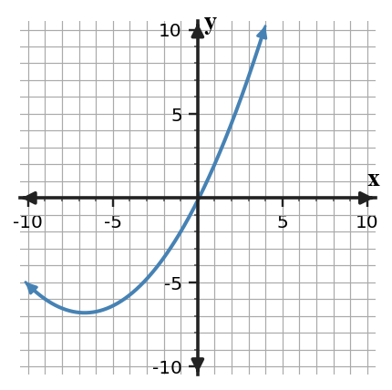
Answer / Solution: The secant interval is shrinking toward $x=1$, and the average rates $2.45,2.36,2.31$ are stabilizing. A reasonable prediction is about $2.3$ (nearby estimates are acceptable). The purpose is to notice convergence of secant slopes, not to use a derivative rule.
Bank notes: Preview: shrinking secants and local rate.
U1-S2-WTC01
Section 1.2 | What's To Come | n-a | DOK 2
The table and graph give information about the same function near $x=2$. The plotted point at $x=2$ is intentionally different from the height approached by the curve. Write one statement about $f(2)$ and one statement about the value approached as $x$ moves toward $2$. Then explain why the two statements need not match.
$x$
$f(x)$
$1.90$
4.82
$1.99$
4.98
$2.01$
5.02
$2.10$
5.18
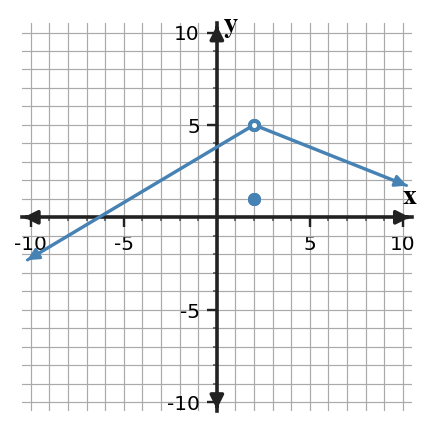
Answer / Solution: The graph shows $f(2)=1$, while both the table and curve approach $5$, so $\lim_{x\to2}f(x)=5$. A limit concerns nearby values; the function value is the defined output at the point.
U1-S3-WTC01
Section 1.3 | What's To Come | n-a | DOK 2
Before evaluating the limits, sort each expression by the method that appears most efficient: direct substitution, factoring, conjugate rationalization, or a standard trigonometric/squeeze argument.
Use the standard sine limit (or squeeze reasoning after rewriting).
U1-S4-WTC01
Section 1.4 | What's To Come | n-a | DOK 2
A piecewise function is defined by $f(x)=x+2$ for $x\lt1$ and $f(x)=kx^2$ for $x\ge1$. Use the three statements below as a checklist at $x=1$: (i) $f(1)$ exists, (ii) $\lim_{x\to1}f(x)$ exists, (iii) the limit equals $f(1)$. Determine which statements depend on $k$, and predict the value of $k$ that would make all three true.
Answer / Solution: $f(1)=k$ exists for every real $k$. The left-hand limit is $3$ and the right-hand limit is $k$, so the two-sided limit exists exactly when $k=3$. For $k=3$, the limit is $3=f(1)$; thus all three continuity conditions hold.
U1-S5-WTC01
Section 1.5 | What's To Come | n-a | DOK 2
A function $g$ is continuous on $[1,6]$, with $g(1)=-3$ and $g(6)=5$. A different function $r$ satisfies $\lim_{x\to2^-}r(x)=+\infty$ and $\lim_{x\to\infty}r(x)=4$. For each statement, identify whether the evidence supports an IVT conclusion, an asymptote conclusion, both, or neither:
There is some $c$ in $(1,6)$ with $g(c)=0$.
The line $x=2$ is a vertical asymptote of $r$.
The line $y=4$ is a horizontal asymptote of $r$ as $x$ increases without bound.
Answer / Solution:
IVT: continuity on $[1,6]$ and $0$ lies between $-3$ and $5$.
Asymptote: the one-sided infinite limit at $x=2$ supports a vertical asymptote.
Asymptote: the limit at infinity is $4$, so $y=4$ is a horizontal asymptote.
Notes Example
U1-S1-NOTE-EX01
Section 1.1 | Notes Example | current | DOK 2
For the graph of $f$, distinguish the value at a point from a limit.
Suppose $f(2)=7$ while nearby values approach $4$. State $f(2)$ and $\lim_{x\to2}f(x)$.
Explain which quantity would change if only the filled point at $x=2$ were moved.
Answer / Solution:
$f(2)=7$ and $\lim_{x\to2}f(x)=4$.
Only $f(2)$ changes. The nearby behavior, and therefore the limit, is unchanged.
Bank notes: Worked instructional example.
U1-S2-NOTE-EX01
Section 1.2 | Notes Example | current | DOK 2
A graph approaches $2$ as $x\to1^-$ and $5$ as $x\to1^+$. State both one-sided limits and determine the two-sided limit.
Answer / Solution: $\lim_{x\to1^-}f(x)=2$ and $\lim_{x\to1^+}f(x)=5$. Because the one-sided limits disagree, $\lim_{x\to1}f(x)$ does not exist.
U1-S3-NOTE-EX01
Section 1.3 | Notes Example | current | DOK 2
Evaluate each limit and name the routine method used.
$\lim_{x\to2}(3x^2-x)$
$\lim_{x\to-1}\frac{x^2+4x+5}{x+3}$
Answer / Solution:
Direct substitution gives $10$.
Direct substitution gives $1$. The denominator is nonzero at $x=-1$.
U1-S4-NOTE-EX01
Section 1.4 | Notes Example | current | DOK 2
For each case, identify which continuity condition fails at the stated point.
$f(2)$ is undefined although $\lim_{x\to2}f(x)=5$.
$g(1)=3$ but the left-hand limit is $2$ and the right-hand limit is $4$.
$h(-1)=6$ and $\lim_{x\to-1}h(x)=2$.
Answer / Solution:
Condition 1 fails: $f(2)$ does not exist.
Condition 2 fails: the two-sided limit does not exist.
Condition 3 fails: the limit exists but does not equal the function value.
U1-S5-NOTE-EX01
Section 1.5 | Notes Example | current | DOK 2
Interpret each infinite-limit statement geometrically:
$\lim_{x\to2^-}f(x)=+\infty$
$\lim_{x\to2^+}f(x)=-\infty$
Answer / Solution:
As $x$ approaches $2$ from the left, $f(x)$ increases without bound.
As $x$ approaches $2$ from the right, $f(x)$ decreases without bound. Together these support $x=2$ as a vertical asymptote.
U1-S1-NOTE-EX02
Section 1.1 | Notes Example | current | DOK 2
The table gives selected values of $p(x)$ near $x=3$. Estimate the limit and write the result in limit notation.
$x$
2.9
2.99
3.01
3.1
$p(x)$
5.71
5.97
6.03
6.31
Answer / Solution: $p(x)$ approaches $6$ from both sides, so $\lim_{x\to3}p(x)\approx6$.
Bank notes: Worked instructional example.
U1-S2-NOTE-EX02
Section 1.2 | Notes Example | current | DOK 2
Use the table to determine the left-hand, right-hand, and two-sided limits at $x=2$.
$x$
1.9
1.99
2.01
2.1
$f(x)$
3.8
3.98
4.02
4.2
Answer / Solution: The left and right columns both approach $4$, so both one-sided limits and the two-sided limit equal $4$.
U1-S3-NOTE-EX02
Section 1.3 | Notes Example | current | DOK 2
Evaluate by factoring, and explain why canceling a factor is valid for the limit even though the original expression is undefined at the limit point: $\displaystyle\lim_{x\to5}\frac{x^2-25}{x-5}$.
Answer / Solution: For $x\ne5$, the expression equals $x+5$. Limits use nearby inputs, so $\lim_{x\to5}(x+5)=10$.
U1-S4-NOTE-EX02
Section 1.4 | Notes Example | current | DOK 2
Determine $k$ so that $f(x)=2x+k$ for $x\lt3$ and $f(x)=x^2-1$ for $x\ge3$ is continuous at $x=3$.
Answer / Solution: Continuity requires $6+k=8$, so $k=2$.
U1-S5-NOTE-EX02
Section 1.5 | Notes Example | current | DOK 2
For $r(x)=\frac{3x^2+1}{x^2-4}$, determine the horizontal asymptote from the limit as $x\to\infty$ and identify the possible vertical asymptotes from the denominator.
Answer / Solution: The ratio of leading coefficients gives $\lim_{x\to\infty}r(x)=3$, so $y=3$ is horizontal. Denominator zeros are $x=\pm2$ and the numerator is nonzero there, so both are vertical asymptotes.
U1-S1-NOTE-EX03
Section 1.1 | Notes Example | current | DOK 2
For $s(t)=t^2+1$, compute the average rate of change from $t=2$ to $t=2+h$ for $h=1,0.5,0.1$. Describe what the values suggest as $h$ shrinks toward $0$.
Answer / Solution: The quotient is $[(2+h)^2+1-5]/h=4+h$. The values are $5,4.5,4.1$, suggesting an instantaneous rate near $4$ at $t=2$.
Bank notes: Worked instructional example.
U1-S2-NOTE-EX03
Section 1.2 | Notes Example | current | DOK 2
A graph has an open circle at $(3,6)$ on a curve that approaches that point from both sides, and a filled point at $(3,-2)$. State $f(3)$ and $\lim_{x\to3}f(x)$, then explain the distinction.
Answer / Solution: $f(3)=-2$ while $\lim_{x\to3}f(x)=6$. The filled point gives the function value; the curve's nearby behavior gives the limit.
U1-S3-NOTE-EX03
Section 1.3 | Notes Example | current | DOK 2
Evaluate $\displaystyle\lim_{x\to0}\frac{\sqrt{4+x}-2}{x}$ using a conjugate. Show the equivalent expression used near $x=0$.
Answer / Solution: Multiply by the conjugate to obtain $1/(\sqrt{4+x}+2)$ for $x\ne0$; the limit is $1/4$.
U1-S4-NOTE-EX03
Section 1.4 | Notes Example | current | DOK 2
Classify the discontinuity in each description:
Both one-sided limits equal $5$, but $f(2)=1$.
The left-hand limit is $-2$ and the right-hand limit is $3$.
Function values grow without bound as $x$ approaches $4$.
Answer / Solution:
Removable discontinuity.
Jump discontinuity.
Infinite discontinuity.
U1-S5-NOTE-EX03
Section 1.5 | Notes Example | current | DOK 2
The function $f$ is continuous on $[1,5]$, with $f(1)=-2$ and $f(5)=6$. For each target $L=0,4,8$, state whether IVT guarantees some $c$ in $(1,5)$ with $f(c)=L$.
Answer / Solution: IVT guarantees values $0$ and $4$ because each lies between $-2$ and $6$. It does not guarantee $8$ from these data.
U1-S2-NOTE-EX04
Section 1.2 | Notes Example | current | DOK 2
A calculator table near $x=5$ gives $h(4.99)=7.001$, $h(4.999)=7.0001$, $h(5.001)=6.9999$, and $h(5.01)=6.999$. Explain what the table checks and what it does not prove by itself.
Answer / Solution: It supplies numerical evidence that both sides approach $7$, supporting the estimate $\lim_{x\to5}h(x)=7$. A finite table is evidence, not a formal proof for an arbitrary function.
U1-S3-NOTE-EX04
Section 1.3 | Notes Example | current | DOK 2
Evaluate and justify the key standard limit used:
$\lim_{x\to0}\frac{\sin(4x)}{x}$
$\lim_{x\to0}\frac{1-\cos x}{x}$
Answer / Solution:
Rewrite as $4\,\frac{\sin(4x)}{4x}$, so the limit is $4$.
The limit is $0$; for example, rationalize to $\frac{\sin^2x}{x(1+\cos x)}=\frac{\sin x}{x}\frac{\sin x}{1+\cos x}$.
U1-S4-NOTE-EX04
Section 1.4 | Notes Example | current | DOK 2
A function is continuous on $[-2,5]$ except for a removable discontinuity at $x=1$ and a jump at $x=4$. Write the largest open intervals on which it is continuous.
Answer / Solution: $(-2,1)$, $(1,4)$, and $(4,5)$ are the largest open intervals. Endpoint continuity can be stated separately if needed.
U1-S5-NOTE-EX04
Section 1.5 | Notes Example | current | DOK 2
A student says: 'Because $f(0)=-4$ and $f(2)=5$, there must be a point where $f(x)=1$.' Identify the missing hypothesis and state a corrected IVT conclusion.
Answer / Solution: Continuity on $[0,2]$ is missing. If $f$ is continuous on $[0,2]$, then because $1$ lies between $-4$ and $5$, IVT guarantees some $c\in(0,2)$ with $f(c)=1$.
Notes You Try It
U1-S1-NOTE-YTI01
Section 1.1 | Notes You Try It | current | DOK 2
A table near $x=-1$ approaches $3$ from both sides while $h(-1)$ is undefined. State the limit and explain whether the missing function value prevents the limit from existing.
Answer / Solution: $\lim_{x\to-1}h(x)=3$. The missing value does not prevent the limit because limits are determined by nearby behavior.
Bank notes: Parallel, independently authored You Try It.
U1-S2-NOTE-YTI01
Section 1.2 | Notes You Try It | current | DOK 2
A table approaches $-3$ from the left of $x=4$ and $-3$ from the right. State the two one-sided limits and the two-sided limit.
Answer / Solution: Both one-sided limits equal $-3$, so $\lim_{x\to4}f(x)=-3$.
U1-S3-NOTE-YTI01
Section 1.3 | Notes You Try It | current | DOK 2
Evaluate and identify the method:
$\lim_{x\to3}(x^2-2x+4)$
$\lim_{x\to1}\frac{2x+5}{x+4}$
Answer / Solution:
Direct substitution gives $7$.
Direct substitution gives $7/5$.
U1-S4-NOTE-YTI01
Section 1.4 | Notes You Try It | current | DOK 2
At $x=4$, a function has $p(4)=-1$, $\lim_{x\to4^-}p(x)=-1$, and $\lim_{x\to4^+}p(x)=2$. Is $p$ continuous at $4$? Name the failed condition.
Answer / Solution: No. The one-sided limits disagree, so the two-sided limit does not exist; continuity condition 2 fails.
U1-S5-NOTE-YTI01
Section 1.5 | Notes You Try It | current | DOK 2
If $\lim_{x\to-3^-}g(x)=-\infty$ and $\lim_{x\to-3^+}g(x)=-\infty$, identify the asymptote and describe the behavior on both sides.
Answer / Solution: $x=-3$ is a vertical asymptote; $g(x)$ decreases without bound from either side.
U1-S1-NOTE-YTI02
Section 1.1 | Notes You Try It | current | DOK 2
Selected values of $q(x)$ near $x=4$ are shown. Estimate the limit and write a complete limit statement.
$x$
3.8
3.98
4.02
4.2
$q(x)$
-1.36
-1.036
-0.964
-0.64
Answer / Solution: $q(x)$ approaches $-1$, so $\lim_{x\to4}q(x)\approx-1$.
Bank notes: Parallel, independently authored You Try It.
U1-S2-NOTE-YTI02
Section 1.2 | Notes You Try It | current | DOK 2
Use the table to decide whether the two-sided limit exists at $x=0$.
$x$
-0.1
-0.01
0.01
0.1
$g(x)$
-1.8
-1.98
3.02
3.2
Answer / Solution: The left-hand limit is $-2$ and the right-hand limit is $3$, so the two-sided limit does not exist.
U1-S3-NOTE-YTI02
Section 1.3 | Notes You Try It | current | DOK 2
Evaluate $\displaystyle\lim_{x\to-3}\frac{x^2+5x+6}{x+3}$ by factoring. State the simplified nearby expression.
Answer / Solution: Factor to $(x+2)(x+3)/(x+3)=x+2$ for $x\ne-3$, so the limit is $-1$.
U1-S4-NOTE-YTI02
Section 1.4 | Notes You Try It | current | DOK 2
Find $a$ so that $g(x)=x^2+a$ for $x\le2$ and $g(x)=5x-4$ for $x\gt2$ is continuous at $x=2$.
Answer / Solution: Set $4+a=6$, giving $a=2$.
U1-S5-NOTE-YTI02
Section 1.5 | Notes You Try It | current | DOK 2
Analyze $p(x)=\frac{2x-5}{x+4}$: give the horizontal asymptote and the vertical asymptote.
Answer / Solution: As $x\to\pm\infty$, $p(x)\to2$, so $y=2$ is horizontal. The denominator vanishes at $x=-4$ without cancellation, so $x=-4$ is vertical.
U1-S1-NOTE-YTI03
Section 1.1 | Notes You Try It | current | DOK 2
For $m(x)=x^2-3x$, compute the average rate of change from $x=1$ to $x=1+h$ for $h=0.5,0.2,0.05$. Predict the local rate as $h$ approaches $0$.
Answer / Solution: The quotient simplifies to $-1+h$. The values are $-0.5,-0.8,-0.95$, suggesting a local rate near $-1$.
Bank notes: Parallel, independently authored You Try It.
U1-S2-NOTE-YTI03
Section 1.2 | Notes You Try It | current | DOK 2
A curve approaches $(2,-4)$ from both sides but no point is defined at $x=2$. Does $\lim_{x\to2}g(x)$ exist? Justify from the representation.
Answer / Solution: Yes. Both sides approach $-4$, so $\lim_{x\to2}g(x)=-4$ even though $g(2)$ is undefined.
U1-S3-NOTE-YTI03
Section 1.3 | Notes You Try It | current | DOK 2
Use conjugate rationalization to evaluate $\displaystyle\lim_{x\to5}\frac{\sqrt{x+4}-3}{x-5}$.
Answer / Solution: Rationalization gives $1/(\sqrt{x+4}+3)$ near $x=5$, so the limit is $1/6$.
U1-S4-NOTE-YTI03
Section 1.4 | Notes You Try It | current | DOK 2
A graph has a hole at $x=-1$ where both sides approach $7$. What type of discontinuity occurs, and what single function value would repair continuity?
Answer / Solution: It is removable. Defining $f(-1)=7$ would make the function continuous at $x=-1$.
U1-S5-NOTE-YTI03
Section 1.5 | Notes You Try It | current | DOK 2
A continuous function $g$ satisfies $g(-2)=7$ and $g(3)=-1$. Does IVT guarantee a zero? State the hypotheses and conclusion succinctly.
Answer / Solution: Yes. $g$ is continuous on $[-2,3]$ and $0$ lies between $7$ and $-1$, so some $c\in(-2,3)$ satisfies $g(c)=0$.
U1-S2-NOTE-YTI04
Section 1.2 | Notes You Try It | current | DOK 2
A graph suggests a limit of $2$ at $x=-1$, but a calculator table has inputs only greater than $-1$. What additional table entries are needed to check the two-sided conclusion?
Answer / Solution: Use inputs less than $-1$ and close to $-1$ so the left-hand behavior can be compared with the existing right-hand entries.
U1-S3-NOTE-YTI04
Section 1.3 | Notes You Try It | current | DOK 2
Evaluate $\displaystyle\lim_{x\to0}\frac{\sin(7x)}{3x}$ and state the standard limiting relationship that supports the result.
Answer / Solution: Write the expression as $\frac73\cdot\frac{\sin(7x)}{7x}$. Since $\lim_{u\to0}\sin u/u=1$, the limit is $7/3$.
U1-S4-NOTE-YTI04
Section 1.4 | Notes You Try It | current | DOK 2
A piecewise-defined function is continuous on $(-\infty,0)$ and $(0,3)$ and $(3,\infty)$, with a jump at $0$ and a hole at $3$. State the discontinuity locations and types.
Answer / Solution: $x=0$ is a jump discontinuity and $x=3$ is a removable discontinuity.
U1-S5-NOTE-YTI04
Section 1.5 | Notes You Try It | current | DOK 2
A function has a vertical asymptote at $x=1$ but is continuous on $[2,6]$, with endpoint values $3$ and $9$. Explain why the asymptote does not prevent IVT from being used on $[2,6]$.
Answer / Solution: IVT requires continuity only on the interval under consideration. The asymptote at $x=1$ lies outside $[2,6]$, so it does not violate continuity on that interval.
Practice Set 1
U1-S1-PS1-Q01
Section 1.1 | Practice Set 1 | current-section | DOK 1
Interpret the statement $\lim_{x\to 2}f(x)=4$ in words. Your interpretation must distinguish nearby behavior from the value $f(2)$.
Answer / Solution: As $x$ approaches 2, the values of $f(x)$ approach 4. The statement alone does not determine $f(2)$.
Bank notes: Full section-focused AP Calculus practice form; earlier Unit 1 ideas appear only when prerequisite/integrated.
U1-S2-PS1-Q01
Section 1.2 | Practice Set 1 | current-section | DOK 1
A graph approaches the height 3 as $x$ approaches 3 from the left. Write the left-hand limit in notation.
Answer / Solution: $\lim_{x\to 3^-}f(x)=3$
Bank notes: Full section-focused AP Calculus practice form; earlier Unit 1 ideas appear only when prerequisite/integrated.
U1-S3-PS1-Q01
Section 1.3 | Practice Set 1 | current-section | DOK 1
Evaluate $\lim_{x\to 3}(2x^2-3x+2)$ by direct substitution.
Answer / Solution: 11.
Bank notes: Full section-focused AP Calculus practice form; earlier Unit 1 ideas appear only when prerequisite/integrated.
U1-S4-PS1-Q01
Section 1.4 | Practice Set 1 | current-section | DOK 1
State the three conditions required for $f$ to be continuous at $x=a$.
Bank notes: Full section-focused AP Calculus practice form; earlier Unit 1 ideas appear only when prerequisite/integrated.
U1-S5-PS1-Q01
Section 1.5 | Practice Set 1 | current-section | DOK 1
Interpret $\lim_{x\to 2^-}f(x)=+\infty$ in words and identify the associated vertical line suggested by this behavior.
Answer / Solution: As $x$ approaches 2 from the left, $f(x)$ increases without bound. This one-sided infinite behavior supports $x=2$ as a vertical asymptote.
Bank notes: Full section-focused AP Calculus practice form; earlier Unit 1 ideas appear only when prerequisite/integrated.
U1-S1-PS1-Q02
Section 1.1 | Practice Set 1 | current-section | DOK 1
Write in limit notation: the values of $g(x)$ approach 4 as $x$ approaches -1.
Answer / Solution: $\lim_{x\to -1}g(x)=4$.
Bank notes: Full section-focused AP Calculus practice form; earlier Unit 1 ideas appear only when prerequisite/integrated.
U1-S2-PS1-Q02
Section 1.2 | Practice Set 1 | current-section | DOK 1
A graph approaches the height 3 as $x$ approaches 4 from the right. Write the right-hand limit in notation.
Answer / Solution: $\lim_{x\to 4^+}f(x)=3$
Bank notes: Full section-focused AP Calculus practice form; earlier Unit 1 ideas appear only when prerequisite/integrated.
U1-S3-PS1-Q02
Section 1.3 | Practice Set 1 | current-section | DOK 2
Evaluate $\lim_{x\to 2}\frac{3x+4}{x+6}$ and state why the quotient law applies.
Answer / Solution: The denominator approaches 8, which is nonzero, so substitution gives $10/8$.
Bank notes: Full section-focused AP Calculus practice form; earlier Unit 1 ideas appear only when prerequisite/integrated.
U1-S4-PS1-Q02
Section 1.4 | Practice Set 1 | current-section | DOK 2
At $x=2$, $f(2)=5$ and $\lim_{x\to 2}f(x)=5$. Is this information sufficient to conclude continuity at the point? Explain.
Answer / Solution: Yes. The stated finite function value exists, the two-sided limit exists, and they are equal, so all three continuity conditions hold.
Bank notes: Full section-focused AP Calculus practice form; earlier Unit 1 ideas appear only when prerequisite/integrated.
U1-S5-PS1-Q02
Section 1.5 | Practice Set 1 | current-section | DOK 1
If $\lim_{x\to\infty}g(x)=0$, state the horizontal asymptote described by the limit.
Answer / Solution: $y=0$.
Bank notes: Full section-focused AP Calculus practice form; earlier Unit 1 ideas appear only when prerequisite/integrated.
U1-S1-PS1-Q03
Section 1.1 | Practice Set 1 | current-section | DOK 1
The table gives selected values of $h(x)$ near the indicated input. Estimate the two-sided limit.
$x$
$h(x)$
2.9
4.800
2.99
4.980
3.01
5.020
3.1
5.200
Answer / Solution: The values approach 5 from both sides, so $\lim_{x\to 3}h(x)\approx 5$.
Bank notes: Full section-focused AP Calculus practice form; earlier Unit 1 ideas appear only when prerequisite/integrated.
U1-S2-PS1-Q03
Section 1.2 | Practice Set 1 | current-section | DOK 1
A graph approaches the height 3 as $x$ approaches 1 from both sides. Write the two-sided limit in notation.
Answer / Solution: $\lim_{x\to 1}f(x)=3$
Bank notes: Full section-focused AP Calculus practice form; earlier Unit 1 ideas appear only when prerequisite/integrated.
U1-S3-PS1-Q03
Section 1.3 | Practice Set 1 | current-section | DOK 2
Evaluate $\displaystyle\lim_{x\to 4}\frac{(x-4)(x+6)}{x-4}$ and justify cancellation in a limit context.
Answer / Solution: For $x\ne 4$ the expression equals $x+6$, so the limit is 10. Cancellation is valid for nearby $x$, even though the original expression is undefined at the point.
Bank notes: Full section-focused AP Calculus practice form; earlier Unit 1 ideas appear only when prerequisite/integrated.
U1-S4-PS1-Q03
Section 1.4 | Practice Set 1 | current-section | DOK 1
At $x=2$, both one-sided limits equal 4, but $f(2)=7$. Classify the discontinuity.
Answer / Solution: Removable discontinuity: the limit exists but does not equal the defined function value.
Bank notes: Full section-focused AP Calculus practice form; earlier Unit 1 ideas appear only when prerequisite/integrated.
U1-S5-PS1-Q03
Section 1.5 | Practice Set 1 | current-section | DOK 2
The graph of a rational-function model is shown. Identify its vertical and horizontal asymptotes from the displayed behavior.
Bank notes: Full section-focused AP Calculus practice form; earlier Unit 1 ideas appear only when prerequisite/integrated.
U1-S1-PS1-Q04
Section 1.1 | Practice Set 1 | current-section | DOK 2
The graph of $f$ is shown. State $f(2)$ and $\lim_{x\to 2}f(x)$ separately.
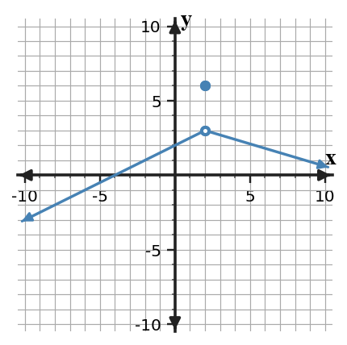
Answer / Solution: The filled point gives $f(2)=6$, while both branches approach 3; therefore the limit is 3.
Bank notes: Full section-focused AP Calculus practice form; earlier Unit 1 ideas appear only when prerequisite/integrated.
U1-S2-PS1-Q04
Section 1.2 | Practice Set 1 | current-section | DOK 2
The graph of $f$ is shown. Determine the left-hand limit, right-hand limit, and whether the two-sided limit exists at $x=2$.
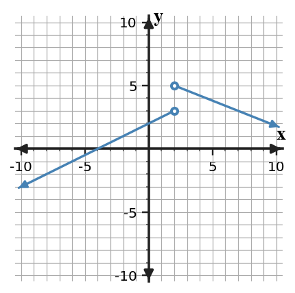
Answer / Solution: Left: 3; right: 5. Because they differ, the two-sided limit does not exist.
Bank notes: Full section-focused AP Calculus practice form; earlier Unit 1 ideas appear only when prerequisite/integrated.
U1-S3-PS1-Q04
Section 1.3 | Practice Set 1 | current-section | DOK 2
Evaluate $\displaystyle\lim_{x\to 3}\frac{x^2-9}{x-3}$ by factoring.
Answer / Solution: Factor as $(x-3)(x+3)$ and cancel for $x\ne3$. The limit is 6.
Bank notes: Full section-focused AP Calculus practice form; earlier Unit 1 ideas appear only when prerequisite/integrated.
U1-S4-PS1-Q04
Section 1.4 | Practice Set 1 | current-section | DOK 2
The graph of $f$ is shown. Classify the discontinuity at $x=2$ and cite the one-sided-limit evidence.
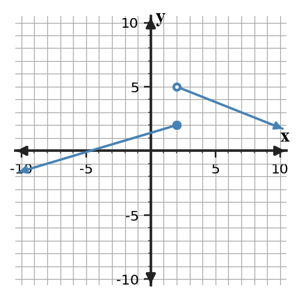
Answer / Solution: Jump discontinuity. The left-hand limit is 2 and the right-hand limit is 5, so they disagree.
Bank notes: Full section-focused AP Calculus practice form; earlier Unit 1 ideas appear only when prerequisite/integrated.
U1-S5-PS1-Q04
Section 1.5 | Practice Set 1 | current-section | DOK 2
For $r(x)=\frac{2x+1}{x-2}$, identify the vertical asymptote and the horizontal asymptote.
Answer / Solution: Vertical: $x=2$ (no cancellation). Horizontal: $y=2$ from the ratio of leading coefficients.
Bank notes: Full section-focused AP Calculus practice form; earlier Unit 1 ideas appear only when prerequisite/integrated.
U1-S1-PS1-Q05
Section 1.1 | Practice Set 1 | current-section | DOK 2
For $p(x)=x^2+2$, compute the average rate of change on $[1,3]$ and identify the units as output-units per input-unit.
Answer / Solution: $[p(3)-p(1)]/(3-1)=(11-3)/2=4$ output-units per input-unit.
Bank notes: Full section-focused AP Calculus practice form; earlier Unit 1 ideas appear only when prerequisite/integrated.
U1-S2-PS1-Q05
Section 1.2 | Practice Set 1 | current-section | DOK 2
The table gives values of $g$ near $x=3$. Estimate both one-sided limits and the two-sided limit.
$x$
$g(x)$
2.9
2.95
2.99
2.995
3.01
3.005
3.1
3.05
Answer / Solution: Both sides approach 3; therefore each one-sided limit and the two-sided limit equal approximately 3.
Bank notes: Full section-focused AP Calculus practice form; earlier Unit 1 ideas appear only when prerequisite/integrated.
U1-S3-PS1-Q05
Section 1.3 | Practice Set 1 | current-section | DOK 2
Use a conjugate to evaluate $\displaystyle\lim_{x\to 12}\frac{\sqrt{x+4}-4}{x-12}$.
Answer / Solution: Rationalization gives $1/(\sqrt{x+4}+4)$, so the limit is $1/8$.
Bank notes: Full section-focused AP Calculus practice form; earlier Unit 1 ideas appear only when prerequisite/integrated.
U1-S4-PS1-Q05
Section 1.4 | Practice Set 1 | current-section | DOK 2
Find $c$ so that $f(x)=2x+c$ for $x\lt 2$ and $f(x)=x^2+2$ for $x\ge 2$ is continuous at $x=2$.
Answer / Solution: Set $2(2)+c=6$. Thus $c=2$.
Bank notes: Full section-focused AP Calculus practice form; earlier Unit 1 ideas appear only when prerequisite/integrated.
U1-S5-PS1-Q05
Section 1.5 | Practice Set 1 | current-section | DOK 2
A function is continuous on $[0,6]$, with $f(0)=-2$ and $f(6)=5$. Does IVT guarantee a zero? Justify using the hypotheses.
Answer / Solution: Yes. The function is continuous on the closed interval and $0$ lies between the endpoint values, so IVT guarantees some interior point where the function equals $0$.
Bank notes: Full section-focused AP Calculus practice form; earlier Unit 1 ideas appear only when prerequisite/integrated.
U1-S1-PS1-Q06
Section 1.1 | Practice Set 1 | current-section | DOK 2
For a function, the table lists secant slopes from $x=2$ to $x=2+h$. Predict the instantaneous rate at $x=2$ from the trend.
$h$
secant slope
1
5.000
0.5
4.500
0.1
4.100
0.02
4.020
Answer / Solution: The secant slopes approach 4, so a reasonable instantaneous-rate estimate is 4.
Bank notes: Full section-focused AP Calculus practice form; earlier Unit 1 ideas appear only when prerequisite/integrated.
U1-S2-PS1-Q06
Section 1.2 | Practice Set 1 | current-section | DOK 2
Use the table to decide whether $\lim_{x\to 4}h(x)$ exists. State the two one-sided limits that support your decision.
$x$
$h(x)$
3.9
2.05
3.99
2.005
4.01
4.995
4.1
4.95
Answer / Solution: The left-hand limit is 2 and the right-hand limit is 5; they differ, so the two-sided limit DNE.
Bank notes: Full section-focused AP Calculus practice form; earlier Unit 1 ideas appear only when prerequisite/integrated.
U1-S3-PS1-Q06
Section 1.3 | Practice Set 1 | current-section | DOK 2
Answer / Solution: The limit is $4/3$ because $\sin(4x)/(4x)\to1$.
Bank notes: Full section-focused AP Calculus practice form; earlier Unit 1 ideas appear only when prerequisite/integrated.
U1-S4-PS1-Q07
Section 1.4 | Practice Set 1 | current-section | DOK 1
A function has a hole at $x=2$ where the limiting value is 4. What redefinition of $f(2)$ removes the discontinuity?
Answer / Solution: Define $f(2)=4$.
Bank notes: Full section-focused AP Calculus practice form; earlier Unit 1 ideas appear only when prerequisite/integrated.
U1-S5-PS1-Q07
Section 1.5 | Practice Set 1 | current-section | DOK 2
A function satisfies $f(1)=-3$ and $f(5)=4$, but continuity on $[1,5]$ is not known. Can IVT be used to guarantee a solution to $f(x)=0$?
Answer / Solution: No. The endpoint values bracket zero, but the continuity hypothesis on the entire interval is missing.
Bank notes: Full section-focused AP Calculus practice form; earlier Unit 1 ideas appear only when prerequisite/integrated.
U1-S1-PS1-Q08
Section 1.1 | Practice Set 1 | current-section | DOK 2
A tank's water volume $V(t)$ is measured in liters and time $t$ in minutes. Near $t=3$, secant rates approach $-1.8$. Interpret $\lim_{h\to0}\frac{V(3+h)-V(3)}{h}=-1.8$ in context.
Answer / Solution: At about 3 minutes, the volume is decreasing at an instantaneous rate of about $1.8$ liters per minute.
Bank notes: Full section-focused AP Calculus practice form; earlier Unit 1 ideas appear only when prerequisite/integrated.
U1-S2-PS1-Q08
Section 1.2 | Practice Set 1 | current-section | DOK 2
Suppose $\lim_{x\to 2^-}p(x)=3$ and $\lim_{x\to 2^+}p(x)=3$. What conclusion about the two-sided limit follows, and what conclusion about $p(2)$ does not follow?
Answer / Solution: The two-sided limit exists and equals 3. No value of $p(2)$ is determined by the limit statements alone.
Bank notes: Full section-focused AP Calculus practice form; earlier Unit 1 ideas appear only when prerequisite/integrated.
U1-S3-PS1-Q08
Section 1.3 | Practice Set 1 | current-section | DOK 2
Which first step is most efficient for $\displaystyle\lim_{x\to4}\frac{\sqrt{x+5}-3}{x-4}$?
Directly declare DNE
Factor the numerator as a polynomial
Multiply by the conjugate
Apply a trigonometric identity
Answer / Solution: C. Multiply by the conjugate.
Bank notes: Full section-focused AP Calculus practice form; earlier Unit 1 ideas appear only when prerequisite/integrated.
U1-S4-PS1-Q08
Section 1.4 | Practice Set 1 | current-section | DOK 2
A student checks only that $f(2)$ exists and concludes that $f$ is continuous at $x=2$. Identify the missing evidence.
Answer / Solution: The student must also verify that the two-sided limit exists and equals the function value.
Bank notes: Full section-focused AP Calculus practice form; earlier Unit 1 ideas appear only when prerequisite/integrated.
U1-S5-PS1-Q08
Section 1.5 | Practice Set 1 | current-section | DOK 2
A student says a horizontal asymptote $y=0$ means the graph can never cross $y=0$. Evaluate the claim.
Answer / Solution: False. A horizontal asymptote describes end behavior; a function may cross the line at finite inputs.
Bank notes: Full section-focused AP Calculus practice form; earlier Unit 1 ideas appear only when prerequisite/integrated.
U1-S1-PS1-Q09
Section 1.1 | Practice Set 1 | current-section | DOK 2
The function is not defined at $x=4$. Use the table to estimate $\lim_{x\to 4}r(x)$ and explain why undefined $r(4)$ does not by itself force DNE.
$x$
$r(x)$
3.8
-0.04
3.98
-0.004
4.02
0.004
4.2
0.04
Answer / Solution: The table approaches 0; a missing value at the point does not determine nearby behavior, so the limit is approximately 0.
Bank notes: Full section-focused AP Calculus practice form; earlier Unit 1 ideas appear only when prerequisite/integrated.
U1-S2-PS1-Q09
Section 1.2 | Practice Set 1 | current-section | DOK 3
Suppose $\lim_{x\to 3^-}r(x)=3$ and $\lim_{x\to 3^+}r(x)=4$. A student reports $\lim_{x\to 3}r(x)=3.5$. Identify the error.
Answer / Solution: A two-sided limit is not the average of unequal one-sided limits. Because the one-sided limits differ, the two-sided limit does not exist.
Bank notes: Full section-focused AP Calculus practice form; earlier Unit 1 ideas appear only when prerequisite/integrated.
U1-S3-PS1-Q09
Section 1.3 | Practice Set 1 | current-section | DOK 2
A direct substitution into a rational limit at $x=4$ produces $0/0$. Explain what this result means and what it does not mean.
Answer / Solution: $0/0$ is an indeterminate form signaling that more analysis/simplification is needed. It is not the limit value and does not by itself mean DNE.
Bank notes: Full section-focused AP Calculus practice form; earlier Unit 1 ideas appear only when prerequisite/integrated.
U1-S4-PS1-Q09
Section 1.4 | Practice Set 1 | current-section | DOK 1
The left-hand limit at $x=2$ is 2 and the right-hand limit is 4. Which continuity condition fails first?
Answer / Solution: The two-sided limit does not exist, so continuity condition 2 fails.
Bank notes: Full section-focused AP Calculus practice form; earlier Unit 1 ideas appear only when prerequisite/integrated.
U1-S5-PS1-Q09
Section 1.5 | Practice Set 1 | current-section | DOK 2
A student says a vertical asymptote at $x=2$ means $f(2)=\infty$. Correct the statement.
Answer / Solution: Infinity is not a real function value. A vertical asymptote describes unbounded behavior as $x$ approaches 2; $f(2)$ may be undefined or separately defined.
Bank notes: Full section-focused AP Calculus practice form; earlier Unit 1 ideas appear only when prerequisite/integrated.
U1-S1-PS1-Q10
Section 1.1 | Practice Set 1 | current-section | DOK 3
A student argues, 'Because $q(3)=9$, $\lim_{x\to 3}q(x)$ must equal $9$.' Evaluate the reasoning and state what evidence would actually be needed.
Answer / Solution: The reasoning is invalid. The limit depends on values of $q(x)$ for inputs near the point from both sides; a graph, table, or formula describing that nearby behavior is needed.
Bank notes: Full section-focused AP Calculus practice form; earlier Unit 1 ideas appear only when prerequisite/integrated.
U1-S2-PS1-Q10
Section 1.2 | Practice Set 1 | current-section | DOK 2
A calculator table near $x=4$ uses the inputs 4.1, 4.01, and 4.001 only. Explain why it cannot by itself justify a two-sided limit estimate.
Answer / Solution: All sampled inputs lie to the right. A two-sided estimate also requires evidence from inputs less than the target.
Bank notes: Full section-focused AP Calculus practice form; earlier Unit 1 ideas appear only when prerequisite/integrated.
U1-S3-PS1-Q10
Section 1.3 | Practice Set 1 | current-section | DOK 3
Compare two approaches to $\displaystyle\lim_{x\to 4}\frac{x^2-16}{x-4}$: direct substitution and factoring. Which yields a valid evaluation, and why?
Answer / Solution: Direct substitution only identifies $0/0$. Factoring produces $x+4$ for nearby inputs, so the limit is 8. The factoring approach completes the evaluation.
Bank notes: Full section-focused AP Calculus practice form; earlier Unit 1 ideas appear only when prerequisite/integrated.
U1-S4-PS1-Q10
Section 1.4 | Practice Set 1 | current-section | DOK 2
A function is continuous on $(-\infty,2)$ and $(2,\infty)$ and has a removable discontinuity at $x=2$. Write a change that could make it continuous everywhere.
Answer / Solution: Define or redefine the point value to equal the common two-sided limit at that input.
Bank notes: Full section-focused AP Calculus practice form; earlier Unit 1 ideas appear only when prerequisite/integrated.
U1-S5-PS1-Q10
Section 1.5 | Practice Set 1 | current-section | DOK 3
For $q(x)=\frac{x+1}{(x-2)^2}$, describe the sign of the infinite limit as $x\to 2$ when 2+1 is positive.
Answer / Solution: Because the squared denominator approaches $0$ through positive values and the numerator approaches a positive number, the function approaches $+\infty$ from both sides.
Bank notes: Full section-focused AP Calculus practice form; earlier Unit 1 ideas appear only when prerequisite/integrated.
U1-S1-PS1-Q11
Section 1.1 | Practice Set 1 | current-section | DOK 1
Which description best matches the meaning of a finite two-sided limit $\lim_{x\to a}f(x)=L$?
The value of the function at the input
The value approached by nearby outputs
The largest nearby output
The average of two function values
Answer / Solution: B. The value approached by nearby outputs.
Bank notes: Full section-focused AP Calculus practice form; earlier Unit 1 ideas appear only when prerequisite/integrated.
U1-S2-PS1-Q11
Section 1.2 | Practice Set 1 | current-section | DOK 1
Which condition is necessary for a finite two-sided limit to exist?
The function must be defined at the point
The left- and right-hand limits must be equal
The left- and right-hand function values must be equal
The graph must cross the vertical line
Answer / Solution: B.
Bank notes: Full section-focused AP Calculus practice form; earlier Unit 1 ideas appear only when prerequisite/integrated.
U1-S3-PS1-Q11
Section 1.3 | Practice Set 1 | current-section | DOK 2
Evaluate $\displaystyle\lim_{x\to0}\frac{1-\cos x}{x}$ using a valid identity or rationalization.
Bank notes: Full section-focused AP Calculus practice form; earlier Unit 1 ideas appear only when prerequisite/integrated.
U1-S4-PS1-Q11
Section 1.4 | Practice Set 1 | current-section | DOK 1
Which description identifies a jump discontinuity?
The one-sided limits are finite and unequal
The two-sided limit exists but differs from the point value
The function is a polynomial
The function approaches the same value from both sides
Answer / Solution: A.
Bank notes: Full section-focused AP Calculus practice form; earlier Unit 1 ideas appear only when prerequisite/integrated.
U1-S5-PS1-Q11
Section 1.5 | Practice Set 1 | current-section | DOK 1
Which hypothesis is essential for applying the Intermediate Value Theorem on $[a,b]$?
Continuity on the closed interval
Differentiability at every point
Equal endpoint values
A vertical asymptote inside the interval
Answer / Solution: A. Continuity on the closed interval.
Bank notes: Full section-focused AP Calculus practice form; earlier Unit 1 ideas appear only when prerequisite/integrated.
U1-S1-PS1-Q12
Section 1.1 | Practice Set 1 | current-section | DOK 2
Evaluate $\lim_{x\to 1}(3x+3)$ and state why no table is necessary for this polynomial expression.
Answer / Solution: The limit is 6. Polynomial functions are continuous, so direct substitution determines the limit.
Bank notes: Full section-focused AP Calculus practice form; earlier Unit 1 ideas appear only when prerequisite/integrated.
U1-S2-PS1-Q12
Section 1.2 | Practice Set 1 | current-section | DOK 2
At $x=2$ the graph approaches -1 from the left and 4 from the right, while $f(2)=10$. List the three values/limit conclusions separately.
Answer / Solution: $\lim_{x\to 2^-}f(x)=-1$, $\lim_{x\to 2^+}f(x)=4$, $f(2)=10$, and the two-sided limit DNE because the one-sided limits disagree.
Bank notes: Full section-focused AP Calculus practice form; earlier Unit 1 ideas appear only when prerequisite/integrated.
U1-S3-PS1-Q12
Section 1.3 | Practice Set 1 | current-section | DOK 3
Suppose $|f(x)-3|\le |x|$ for $x$ near $0$. Use squeeze reasoning to determine $\lim_{x\to0}f(x)$.
Answer / Solution: Because $-|x|\le f(x)-3\le|x|$ and both bounds approach $0$, $f(x)-3\to0$; hence the limit is 3.
Bank notes: Full section-focused AP Calculus practice form; earlier Unit 1 ideas appear only when prerequisite/integrated.
U1-S4-PS1-Q12
Section 1.4 | Practice Set 1 | current-section | DOK 2
Suppose $f$ is continuous on $[2,6]$. What endpoint-sided limit condition must hold at the left endpoint?
Answer / Solution: Right-continuity is required: $\lim_{x\to 2^+}f(x)=f(2)$.
Bank notes: Full section-focused AP Calculus practice form; earlier Unit 1 ideas appear only when prerequisite/integrated.
U1-S5-PS1-Q12
Section 1.5 | Practice Set 1 | current-section | DOK 2
If $\lim_{x\to-\infty}f(x)=0$ and $\lim_{x\to\infty}f(x)=1$, state both end-behavior conclusions and the corresponding horizontal asymptotes.
Answer / Solution: As $x\to-\infty$, $f(x)\to0$ so $y=0$ is a left-end horizontal asymptote; as $x\to\infty$, $f(x)\to1$ so $y=1$ is a right-end horizontal asymptote.
Bank notes: Full section-focused AP Calculus practice form; earlier Unit 1 ideas appear only when prerequisite/integrated.
U1-S1-PS1-Q13
Section 1.1 | Practice Set 1 | current-section | DOK 2
The position of an object is $s(t)=t^2-2t$ meters. Compute the average velocity from $t=2$ to $t=5$.
Answer / Solution: $[s(5)-s(2)]/(5-2)=(15-0)/3=5$ meters per second.
Bank notes: Full section-focused AP Calculus practice form; earlier Unit 1 ideas appear only when prerequisite/integrated.
U1-S2-PS1-Q13
Section 1.2 | Practice Set 1 | current-section | DOK 2
The table gives $f(3-0.01)=2.99$ and $f(3+0.01)=3.01$, but the next closest pair is 2.999 and 3.001. Describe the numerical evidence for the limit.
Answer / Solution: Values from both sides are getting closer to 3 as inputs approach 3, supporting $\lim_{x\to 3}f(x)=3$.
Bank notes: Full section-focused AP Calculus practice form; earlier Unit 1 ideas appear only when prerequisite/integrated.
U1-S3-PS1-Q13
Section 1.3 | Practice Set 1 | current-section | DOK 2
The functions $f$ and $g$ have limits $\lim_{x\to 2}f(x)=4$ and $\lim_{x\to 2}g(x)=5$. Evaluate $\lim_{x\to 2}[2f(x)-g(x)]$ using limit laws.
Answer / Solution: By linearity, the limit is $2(4)-(5)=3$.
Bank notes: Full section-focused AP Calculus practice form; earlier Unit 1 ideas appear only when prerequisite/integrated.
U1-S4-PS1-Q13
Section 1.4 | Practice Set 1 | current-section | DOK 3
A graph has an infinite discontinuity at $x=2$. Can changing only the value $f(2)$ make the function continuous there? Explain.
Answer / Solution: No. Changing one point cannot alter unbounded nearby behavior; the two-sided finite limit condition still fails.
Bank notes: Full section-focused AP Calculus practice form; earlier Unit 1 ideas appear only when prerequisite/integrated.
U1-S5-PS1-Q13
Section 1.5 | Practice Set 1 | current-section | DOK 3
The denominator of a rational function is zero at $x=2$, but the same factor cancels with the numerator. Must $x=2$ be a vertical asymptote? Explain.
Answer / Solution: No. Cancellation can produce a removable discontinuity instead. One must examine the simplified nearby expression and the resulting limit.
Bank notes: Full section-focused AP Calculus practice form; earlier Unit 1 ideas appear only when prerequisite/integrated.
U1-S1-PS1-Q14
Section 1.1 | Practice Set 1 | current-section | DOK 1
Suppose every sufficiently close value of $f(x)$ on both sides of $x=2$ is close to 5, but $f(2)=10$. Which quantity is controlled by the nearby values: $f(2)$ or $\lim_{x\to 2}f(x)$? State the limit.
Answer / Solution: The nearby values control the limit, so $\lim_{x\to 2}f(x)=5$. The point value remains 10.
Bank notes: Full section-focused AP Calculus practice form; earlier Unit 1 ideas appear only when prerequisite/integrated.
U1-S2-PS1-Q14
Section 1.2 | Practice Set 1 | current-section | DOK 1
A function is undefined at $x=4$, but both one-sided limits equal 3. Which statement is correct?
The two-sided limit DNE
The two-sided limit equals the common one-sided value
The left-hand limit is undefined
The right-hand limit equals the function value
Answer / Solution: B.
Bank notes: Full section-focused AP Calculus practice form; earlier Unit 1 ideas appear only when prerequisite/integrated.
U1-S3-PS1-Q14
Section 1.3 | Practice Set 1 | current-section | DOK 3
If $\lim_{x\to 2}f(x)=2$ and $\lim_{x\to 2}g(x)=0$, can the quotient law alone determine $\lim_{x\to 2}f(x)/g(x)$? Explain.
Answer / Solution: No. The quotient law requires the denominator limit to be nonzero. Additional information about the sign/behavior of $g$ is needed.
Bank notes: Full section-focused AP Calculus practice form; earlier Unit 1 ideas appear only when prerequisite/integrated.
U1-S4-PS1-Q14
Section 1.4 | Practice Set 1 | current-section | DOK 2
For $p(x)=\frac{x^2-4}{x-2}$ with its original domain, classify the discontinuity at $x=2$ and give the limiting value.
Answer / Solution: The discontinuity is removable. The simplified nearby expression is $x+2$, so the limiting value is 4.
Bank notes: Full section-focused AP Calculus practice form; earlier Unit 1 ideas appear only when prerequisite/integrated.
U1-S5-PS1-Q14
Section 1.5 | Practice Set 1 | current-section | DOK 2
A continuous function satisfies $f(2)=-3$ and $f(8)=5$. List two different target values that IVT is guaranteed to attain between these outputs.
Answer / Solution: For example, -1 and 2; each lies strictly between -3 and 5.
Bank notes: Full section-focused AP Calculus practice form; earlier Unit 1 ideas appear only when prerequisite/integrated.
U1-S1-PS1-Q15
Section 1.1 | Practice Set 1 | current-section | DOK 2
A graph shows an open circle at $(3,0)$ and a filled point at $(3,4)$, with the curve approaching the open circle from both sides. Write three separate statements for the left-hand approach, right-hand approach, and function value.
Answer / Solution: $\lim_{x\to 3^-}f(x)=0$, $\lim_{x\to 3^+}f(x)=0$, and $f(3)=4$.
Bank notes: Full section-focused AP Calculus practice form; earlier Unit 1 ideas appear only when prerequisite/integrated.
U1-S2-PS1-Q15
Section 1.2 | Practice Set 1 | current-section | DOK 2
Use the graph to write a complete two-sided limit statement at $x=1$ and cite the behavior of both branches.
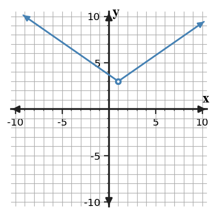
Answer / Solution: Both branches approach 3, so $\lim_{x\to 1}f(x)=3$.
Bank notes: Full section-focused AP Calculus practice form; earlier Unit 1 ideas appear only when prerequisite/integrated.
U1-S3-PS1-Q15
Section 1.3 | Practice Set 1 | current-section | DOK 2
Select the most efficient routine method for $\displaystyle\lim_{x\to 3}\frac{x^2-9}{x-3}$ and give the limit.
Answer / Solution: Factor and cancel the common factor; the limit is 6.
Bank notes: Full section-focused AP Calculus practice form; earlier Unit 1 ideas appear only when prerequisite/integrated.
U1-S4-PS1-Q15
Section 1.4 | Practice Set 1 | current-section | DOK 1
The function $q$ is continuous at $x=2$ and $q(2)=3$. Determine $\lim_{x\to 2}q(x)$ and name the continuity fact used.
Answer / Solution: The limit is 3; continuity at the point means the limit equals the function value.
Bank notes: Full section-focused AP Calculus practice form; earlier Unit 1 ideas appear only when prerequisite/integrated.
U1-S5-PS1-Q15
Section 1.5 | Practice Set 1 | current-section | DOK 1
A function has $\lim_{x\to 2^-}f(x)=-\infty$ and $\lim_{x\to 2^+}f(x)=+\infty$. What asymptotic conclusion is supported?
Answer / Solution: $x=2$ is a vertical asymptote; the opposite signs describe the two sides but do not prevent the asymptote conclusion.
Bank notes: Full section-focused AP Calculus practice form; earlier Unit 1 ideas appear only when prerequisite/integrated.
U1-S1-PS1-Q16
Section 1.1 | Practice Set 1 | current-section | DOK 2
From the graph, estimate $\lim_{x\to 0}f(x)$ and identify the graphical evidence used.
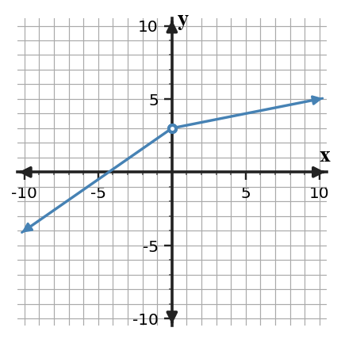
Answer / Solution: Both branches approach the same height 3, so the limit is 3.
Bank notes: Full section-focused AP Calculus practice form; earlier Unit 1 ideas appear only when prerequisite/integrated.
U1-S2-PS1-Q16
Section 1.2 | Practice Set 1 | current-section | DOK 2
For a two-sided table centered at $x=2$, one left-side sequence approaches 3 while one right-side sequence approaches 6. What should be reported for the two-sided limit?
Answer / Solution: DNE. Different one-sided limiting values prevent a two-sided limit.
Bank notes: Full section-focused AP Calculus practice form; earlier Unit 1 ideas appear only when prerequisite/integrated.
U1-S3-PS1-Q16
Section 1.3 | Practice Set 1 | current-section | DOK 2
Evaluate $\displaystyle\lim_{x\to0}\frac{\tan(3x)}{x}$ using $\tan u=\sin u/\cos u$ and the standard trigonometric limits.
Bank notes: Full section-focused AP Calculus practice form; earlier Unit 1 ideas appear only when prerequisite/integrated.
U1-S4-PS1-Q16
Section 1.4 | Practice Set 1 | current-section | DOK 3
At $x=2$, a table approaches 2 from both sides while a graph shows a filled point at height 6. Reconcile the representations and classify the discontinuity.
Answer / Solution: The limit is 2 while the function value is 6; the mismatch creates a removable discontinuity.
Bank notes: Full section-focused AP Calculus practice form; earlier Unit 1 ideas appear only when prerequisite/integrated.
U1-S5-PS1-Q16
Section 1.5 | Practice Set 1 | current-section | DOK 3
The function $f$ is continuous on $[1,4]$. A student knows $f(1)=2$ and $f(4)=7$ and claims IVT guarantees a point where $f(c)=9$. Critique the conclusion.
Answer / Solution: The hypotheses include continuity, but $9$ is not between $2$ and $7$. IVT does not guarantee that target value.
Bank notes: Full section-focused AP Calculus practice form; earlier Unit 1 ideas appear only when prerequisite/integrated.
U1-S1-PS1-Q17
Section 1.1 | Practice Set 1 | current-section | DOK 2
A motion experiment reports the average velocities from $t=3$ to $t=3+h$. Use the table to estimate the instantaneous velocity at $t=3$.
$h$
average velocity (m/s)
1
2.500
0.4
1.900
0.1
1.600
0.04
1.540
Answer / Solution: The values approach $1.5$, so the instantaneous velocity is approximately $1.5$ m/s.
Bank notes: Full section-focused AP Calculus practice form; earlier Unit 1 ideas appear only when prerequisite/integrated.
U1-S2-PS1-Q17
Section 1.2 | Practice Set 1 | current-section | DOK 3
A graph and a table are intended to represent the same function near $x=3$. The graph approaches 3, while increasingly close table values approach 5. What is the mathematically responsible conclusion?
Answer / Solution: The representations conflict, so the claimed model/data should be checked. One should not simply choose a limit until the discrepancy is resolved.
Bank notes: Full section-focused AP Calculus practice form; earlier Unit 1 ideas appear only when prerequisite/integrated.
U1-S3-PS1-Q17
Section 1.3 | Practice Set 1 | current-section | DOK 3
A student cancels $x-4$ in $\frac{(x-4)(x+1)}{x-4}$ and then claims the original function is defined at $x=4$. Correct the claim while preserving the valid limit step.
Answer / Solution: Cancellation gives an equivalent expression only for $x\ne4$. The original function remains undefined at $x=4$, but its limit equals $5$ because nearby values match $x+1$.
Bank notes: Full section-focused AP Calculus practice form; earlier Unit 1 ideas appear only when prerequisite/integrated.
U1-S4-PS1-Q17
Section 1.4 | Practice Set 1 | current-section | DOK 2
A piecewise function has matching one-sided limits at $x=2$, both equal to 4, but its definition assigns no value at $x=2$. Which continuity conditions hold and which fails?
Answer / Solution: The two-sided limit exists, but the function value does not exist. Condition 1 fails; consequently the equality condition cannot be satisfied.
Bank notes: Full section-focused AP Calculus practice form; earlier Unit 1 ideas appear only when prerequisite/integrated.
U1-S5-PS1-Q17
Section 1.5 | Practice Set 1 | current-section | DOK 3
Suppose $f$ is continuous on $[-1,3]$ and $f(-1)f(3)\lt0$. Use IVT to justify a conclusion about zeros.
Answer / Solution: The endpoint values have opposite signs, so $0$ lies between them. IVT guarantees at least one $c\in(-1,3)$ with $f(c)=0$.
Bank notes: Full section-focused AP Calculus practice form; earlier Unit 1 ideas appear only when prerequisite/integrated.
U1-S1-PS1-Q18
Section 1.1 | Practice Set 1 | current-section | DOK 1
Choose the statement that is equivalent to 'for inputs arbitrarily close to $x=1$, the values $f(x)$ can be made arbitrarily close to $3$' in the informal limit sense.
$f(1)=3$
$\lim_{x\to 1}f(x)=3$
$f(x)=1$ for every $x$
$\lim_{x\to 3}f(x)=1$
Answer / Solution: B.
Bank notes: Full section-focused AP Calculus practice form; earlier Unit 1 ideas appear only when prerequisite/integrated.
U1-S2-PS1-Q18
Section 1.2 | Practice Set 1 | current-section | DOK 2
If $f(x)$ approaches 3 from both sides of $x=4$ but oscillates slightly around 3, does crossing above and below 3 prevent the limit from being 3? Explain.
Answer / Solution: No. A function may approach a limit while taking values on both sides of it; the key is that the values become arbitrarily close to the same number.
Bank notes: Full section-focused AP Calculus practice form; earlier Unit 1 ideas appear only when prerequisite/integrated.
U1-S3-PS1-Q18
Section 1.3 | Practice Set 1 | current-section | DOK 2
Evaluate $\displaystyle\lim_{x\to 15}\frac{x-15}{\sqrt{x+1}-4}$ using an appropriate algebraic transformation.
Answer / Solution: Multiply by the conjugate. The expression simplifies to $\sqrt{x+1}+4$ for nearby $x$, so the limit is 8.
Bank notes: Full section-focused AP Calculus practice form; earlier Unit 1 ideas appear only when prerequisite/integrated.
U1-S4-PS1-Q18
Section 1.4 | Practice Set 1 | current-section | DOK 2
Determine whether the polynomial $r(x)=x^3-2x+2$ is continuous at $x=2$ and justify without graphing.
Answer / Solution: Yes. Polynomials are continuous for every real input, so direct substitution gives the limit and it equals the function value.
Bank notes: Full section-focused AP Calculus practice form; earlier Unit 1 ideas appear only when prerequisite/integrated.
U1-S5-PS1-Q18
Section 1.5 | Practice Set 1 | current-section | DOK 2
For $m(x)=\frac{3}{x-2}+0$, state $\lim_{x\to\infty}m(x)$ and the associated horizontal asymptote.
Answer / Solution: The reciprocal term approaches $0$, so the limit is 0 and the horizontal asymptote is $y=0$.
Bank notes: Full section-focused AP Calculus practice form; earlier Unit 1 ideas appear only when prerequisite/integrated.
U1-S1-PS1-Q19
Section 1.1 | Practice Set 1 | current-section | DOK 3
You want to estimate a limit numerically at $x=2$. Which sampling plan is most informative, and why: inputs only to the right, inputs only to the left, or inputs approaching $2$ from both sides?
Answer / Solution: Use inputs approaching from both sides. A two-sided limit requires compatible left- and right-hand behavior.
Bank notes: Full section-focused AP Calculus practice form; earlier Unit 1 ideas appear only when prerequisite/integrated.
U1-S2-PS1-Q19
Section 1.2 | Practice Set 1 | current-section | DOK 2
State the order in which you would read a graph to decide $\lim_{x\to 1}f(x)$ when a filled point is also shown at $x=1$.
Answer / Solution: Read the branch behavior from the left and right first; compare the one-sided limits. The filled point gives $f(a)$ and is considered separately.
Bank notes: Full section-focused AP Calculus practice form; earlier Unit 1 ideas appear only when prerequisite/integrated.
U1-S3-PS1-Q19
Section 1.3 | Practice Set 1 | current-section | DOK 1
Which statement best describes the role of the Squeeze Theorem?
It replaces every indeterminate limit with zero
It determines a limit when a function is trapped between two functions with the same limiting value
It applies only to rational functions
It requires the function to equal both bounding functions
Answer / Solution: B.
Bank notes: Full section-focused AP Calculus practice form; earlier Unit 1 ideas appear only when prerequisite/integrated.
U1-S4-PS1-Q19
Section 1.4 | Practice Set 1 | current-section | DOK 3
A student calls a discontinuity 'removable' because $f(2)$ is undefined. Why is that evidence insufficient?
Answer / Solution: Undefined point value alone does not identify the nearby behavior. A removable discontinuity additionally requires a finite two-sided limit so a single point definition can repair continuity.
Bank notes: Full section-focused AP Calculus practice form; earlier Unit 1 ideas appear only when prerequisite/integrated.
U1-S5-PS1-Q19
Section 1.5 | Practice Set 1 | current-section | DOK 1
A graph appears to approach $y=0$ for large positive $x$. What additional symbolic statement precisely records that right-end behavior?
Answer / Solution: $\lim_{x\to\infty}f(x)=0$.
Bank notes: Full section-focused AP Calculus practice form; earlier Unit 1 ideas appear only when prerequisite/integrated.
U1-S1-PS1-Q20
Section 1.1 | Practice Set 1 | current-section | DOK 2
The table gives nearby values and the function value at the center is $f(a)=9$.
Estimate the limit from the table.
Explain whether the point value changes your estimate.
$x$
$f(x)$
1.9
3.80
1.99
3.98
2.01
4.02
2.1
4.20
Answer / Solution: (a) The values approach $4$, so the limit is about $4$. (b) No; the isolated point value $9$ does not change the nearby trend.
Bank notes: Full section-focused AP Calculus practice form; earlier Unit 1 ideas appear only when prerequisite/integrated.
U1-S2-PS1-Q20
Section 1.2 | Practice Set 1 | current-section | DOK 2
Use the numerical representation to answer both parts.
Estimate $\lim_{x\to 2^-}f(x)$.
Estimate $\lim_{x\to 2^+}f(x)$ and decide the two-sided limit.
$x$
$f(x)$
1.9
2.90
1.99
2.99
2.01
3.01
2.1
3.10
Answer / Solution: (a) 3. (b) 3; since the one-sided limits agree, the two-sided limit is 3.
Bank notes: Full section-focused AP Calculus practice form; earlier Unit 1 ideas appear only when prerequisite/integrated.
U1-S3-PS1-Q20
Section 1.3 | Practice Set 1 | current-section | DOK 3
For the three limits below, choose a method before computing:
$\lim_{x\to2}(x^3+1)$
$\lim_{x\to3}\frac{x^2-9}{x-3}$
$\lim_{x\to0}\frac{\sqrt{1+x}-1}{x}$
Answer / Solution:
Direct substitution: $9$.
Factoring: $6$.
Conjugate rationalization: $1/2$.
Bank notes: Full section-focused AP Calculus practice form; earlier Unit 1 ideas appear only when prerequisite/integrated.
U1-S4-PS1-Q20
Section 1.4 | Practice Set 1 | current-section | DOK 3
Analyze the piecewise function at its boundary: $f(x)=x+2$ for $x\lt2$ and $f(x)=x^2-k$ for $x\ge2$.
Find $k$ for continuity.
If $k=2$, classify the discontinuity at $x=2$.
Answer / Solution: (a) Left limit is $4$ and right/function value is $4-k$, so $k=0$. (b) With $k=2$, the right-hand limit is $2$ while the left is $4$, so there is a jump discontinuity.
Bank notes: Full section-focused AP Calculus practice form; earlier Unit 1 ideas appear only when prerequisite/integrated.
U1-S5-PS1-Q20
Section 1.5 | Practice Set 1 | current-section | DOK 3
A function $f$ is continuous on $[0,6]$, with $f(0)=-4$ and $f(6)=3$, and a separate rational function $r$ has a vertical asymptote at $x=2$.
State an IVT-guaranteed value for $f$.
Explain why the asymptote of $r$ has no bearing on applying IVT to $f$.
Answer / Solution: (a) For example, $0$: some $c\in(0,6)$ has $f(c)=0$. (b) IVT is applied to the specified continuous function and interval; unrelated behavior of another function is irrelevant.
Bank notes: Full section-focused AP Calculus practice form; earlier Unit 1 ideas appear only when prerequisite/integrated.
Practice Set 2
U1-S1-PS2-Q01
Section 1.1 | Practice Set 2 | current-section | DOK 1
Interpret the statement $\lim_{x\to 3}f(x)=5$ in words. Your interpretation must distinguish nearby behavior from the value $f(3)$.
Answer / Solution: As $x$ approaches 3, the values of $f(x)$ approach 5. The statement alone does not determine $f(3)$.
Bank notes: Full section-focused AP Calculus practice form; earlier Unit 1 ideas appear only when prerequisite/integrated.
U1-S2-PS2-Q01
Section 1.2 | Practice Set 2 | current-section | DOK 1
A graph approaches the height 4 as $x$ approaches 4 from the left. Write the left-hand limit in notation.
Answer / Solution: $\lim_{x\to 4^-}f(x)=4$
Bank notes: Full section-focused AP Calculus practice form; earlier Unit 1 ideas appear only when prerequisite/integrated.
U1-S3-PS2-Q01
Section 1.3 | Practice Set 2 | current-section | DOK 1
Evaluate $\lim_{x\to 4}(2x^2-3x+3)$ by direct substitution.
Answer / Solution: 23.
Bank notes: Full section-focused AP Calculus practice form; earlier Unit 1 ideas appear only when prerequisite/integrated.
U1-S4-PS2-Q01
Section 1.4 | Practice Set 2 | current-section | DOK 1
Use the relevant definition or rule as the basis for your response. State the three conditions required for $f$ to be continuous at $x=a$.
Bank notes: Full section-focused AP Calculus practice form; earlier Unit 1 ideas appear only when prerequisite/integrated.
U1-S5-PS2-Q01
Section 1.5 | Practice Set 2 | current-section | DOK 1
Interpret $\lim_{x\to 3^-}f(x)=+\infty$ in words and identify the associated vertical line suggested by this behavior.
Answer / Solution: As $x$ approaches 3 from the left, $f(x)$ increases without bound. This one-sided infinite behavior supports $x=3$ as a vertical asymptote.
Bank notes: Full section-focused AP Calculus practice form; earlier Unit 1 ideas appear only when prerequisite/integrated.
U1-S1-PS2-Q02
Section 1.1 | Practice Set 2 | current-section | DOK 1
Write in limit notation: the values of $g(x)$ approach 3 as $x$ approaches 0.
Answer / Solution: $\lim_{x\to 0}g(x)=3$.
Bank notes: Full section-focused AP Calculus practice form; earlier Unit 1 ideas appear only when prerequisite/integrated.
U1-S2-PS2-Q02
Section 1.2 | Practice Set 2 | current-section | DOK 1
A graph approaches the height 4 as $x$ approaches 1 from the right. Write the right-hand limit in notation.
Answer / Solution: $\lim_{x\to 1^+}f(x)=4$
Bank notes: Full section-focused AP Calculus practice form; earlier Unit 1 ideas appear only when prerequisite/integrated.
U1-S3-PS2-Q02
Section 1.3 | Practice Set 2 | current-section | DOK 2
Evaluate $\lim_{x\to 3}\frac{3x+6}{x+7}$ and state why the quotient law applies.
Answer / Solution: The denominator approaches 10, which is nonzero, so substitution gives $15/10$.
Bank notes: Full section-focused AP Calculus practice form; earlier Unit 1 ideas appear only when prerequisite/integrated.
U1-S4-PS2-Q02
Section 1.4 | Practice Set 2 | current-section | DOK 2
At $x=3$, $f(3)=6$ and $\lim_{x\to 3}f(x)=6$. Is this information sufficient to conclude continuity at the point? Explain.
Answer / Solution: Yes. The stated finite function value exists, the two-sided limit exists, and they are equal, so all three continuity conditions hold.
Bank notes: Full section-focused AP Calculus practice form; earlier Unit 1 ideas appear only when prerequisite/integrated.
U1-S5-PS2-Q02
Section 1.5 | Practice Set 2 | current-section | DOK 1
If $\lim_{x\to\infty}g(x)=1$, state the horizontal asymptote described by the limit.
Answer / Solution: $y=1$.
Bank notes: Full section-focused AP Calculus practice form; earlier Unit 1 ideas appear only when prerequisite/integrated.
U1-S1-PS2-Q03
Section 1.1 | Practice Set 2 | current-section | DOK 1
The table gives selected values of $h(x)$ near the indicated input. Estimate the two-sided limit.
$x$
$h(x)$
3.9
5.800
3.99
5.980
4.01
6.020
4.1
6.200
Answer / Solution: The values approach 6 from both sides, so $\lim_{x\to 4}h(x)\approx 6$.
Bank notes: Full section-focused AP Calculus practice form; earlier Unit 1 ideas appear only when prerequisite/integrated.
U1-S2-PS2-Q03
Section 1.2 | Practice Set 2 | current-section | DOK 1
A graph approaches the height 4 as $x$ approaches 2 from both sides. Write the two-sided limit in notation.
Answer / Solution: $\lim_{x\to 2}f(x)=4$
Bank notes: Full section-focused AP Calculus practice form; earlier Unit 1 ideas appear only when prerequisite/integrated.
U1-S3-PS2-Q03
Section 1.3 | Practice Set 2 | current-section | DOK 2
Evaluate $\displaystyle\lim_{x\to 5}\frac{(x-5)(x+7)}{x-5}$ and justify cancellation in a limit context.
Answer / Solution: For $x\ne 5$ the expression equals $x+7$, so the limit is 12. Cancellation is valid for nearby $x$, even though the original expression is undefined at the point.
Bank notes: Full section-focused AP Calculus practice form; earlier Unit 1 ideas appear only when prerequisite/integrated.
U1-S4-PS2-Q03
Section 1.4 | Practice Set 2 | current-section | DOK 1
At $x=3$, both one-sided limits equal 5, but $f(3)=8$. Classify the discontinuity.
Answer / Solution: Removable discontinuity: the limit exists but does not equal the defined function value.
Bank notes: Full section-focused AP Calculus practice form; earlier Unit 1 ideas appear only when prerequisite/integrated.
U1-S5-PS2-Q03
Section 1.5 | Practice Set 2 | current-section | DOK 2
Use the relevant definition or rule as the basis for your response. The graph of a rational-function model is shown. Identify its vertical and horizontal asymptotes from the displayed behavior.
Bank notes: Full section-focused AP Calculus practice form; earlier Unit 1 ideas appear only when prerequisite/integrated.
U1-S1-PS2-Q04
Section 1.1 | Practice Set 2 | current-section | DOK 2
The graph of $f$ is shown. State $f(1)$ and $\lim_{x\to 1}f(x)$ separately.
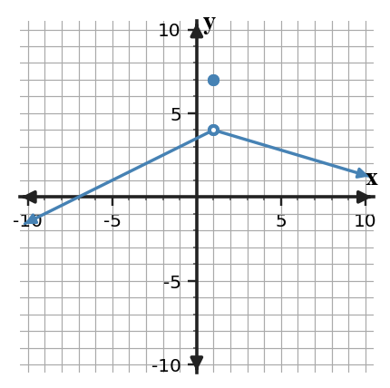
Answer / Solution: The filled point gives $f(1)=7$, while both branches approach 4; therefore the limit is 4.
Bank notes: Full section-focused AP Calculus practice form; earlier Unit 1 ideas appear only when prerequisite/integrated.
U1-S2-PS2-Q04
Section 1.2 | Practice Set 2 | current-section | DOK 2
The graph of $f$ is shown. Determine the left-hand limit, right-hand limit, and whether the two-sided limit exists at $x=3$.
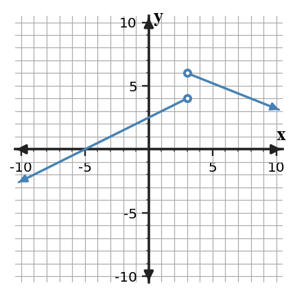
Answer / Solution: Left: 4; right: 6. Because they differ, the two-sided limit does not exist.
Bank notes: Full section-focused AP Calculus practice form; earlier Unit 1 ideas appear only when prerequisite/integrated.
U1-S3-PS2-Q04
Section 1.3 | Practice Set 2 | current-section | DOK 2
Evaluate $\displaystyle\lim_{x\to 4}\frac{x^2-16}{x-4}$ by factoring.
Answer / Solution: Factor as $(x-4)(x+4)$ and cancel for $x\ne4$. The limit is 8.
Bank notes: Full section-focused AP Calculus practice form; earlier Unit 1 ideas appear only when prerequisite/integrated.
U1-S4-PS2-Q04
Section 1.4 | Practice Set 2 | current-section | DOK 2
The graph of $f$ is shown. Classify the discontinuity at $x=3$ and cite the one-sided-limit evidence.
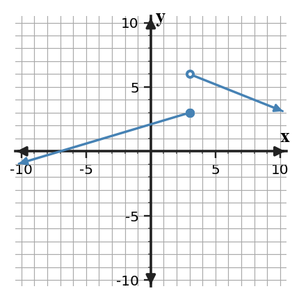
Answer / Solution: Jump discontinuity. The left-hand limit is 3 and the right-hand limit is 6, so they disagree.
Bank notes: Full section-focused AP Calculus practice form; earlier Unit 1 ideas appear only when prerequisite/integrated.
U1-S5-PS2-Q04
Section 1.5 | Practice Set 2 | current-section | DOK 2
For $r(x)=\frac{3x+1}{x-3}$, identify the vertical asymptote and the horizontal asymptote.
Answer / Solution: Vertical: $x=3$ (no cancellation). Horizontal: $y=3$ from the ratio of leading coefficients.
Bank notes: Full section-focused AP Calculus practice form; earlier Unit 1 ideas appear only when prerequisite/integrated.
U1-S1-PS2-Q05
Section 1.1 | Practice Set 2 | current-section | DOK 2
For $p(x)=x^2+3$, compute the average rate of change on $[2,4]$ and identify the units as output-units per input-unit.
Answer / Solution: $[p(4)-p(2)]/(4-2)=(19-7)/2=6$ output-units per input-unit.
Bank notes: Full section-focused AP Calculus practice form; earlier Unit 1 ideas appear only when prerequisite/integrated.
U1-S2-PS2-Q05
Section 1.2 | Practice Set 2 | current-section | DOK 2
The table gives values of $g$ near $x=4$. Estimate both one-sided limits and the two-sided limit.
$x$
$g(x)$
3.9
3.95
3.99
3.995
4.01
4.005
4.1
4.05
Answer / Solution: Both sides approach 4; therefore each one-sided limit and the two-sided limit equal approximately 4.
Bank notes: Full section-focused AP Calculus practice form; earlier Unit 1 ideas appear only when prerequisite/integrated.
U1-S3-PS2-Q05
Section 1.3 | Practice Set 2 | current-section | DOK 2
Use a conjugate to evaluate $\displaystyle\lim_{x\to 21}\frac{\sqrt{x+4}-5}{x-21}$.
Answer / Solution: Rationalization gives $1/(\sqrt{x+4}+5)$, so the limit is $1/10$.
Bank notes: Full section-focused AP Calculus practice form; earlier Unit 1 ideas appear only when prerequisite/integrated.
U1-S4-PS2-Q05
Section 1.4 | Practice Set 2 | current-section | DOK 2
Find $c$ so that $f(x)=2x+c$ for $x\lt 3$ and $f(x)=x^2+3$ for $x\ge 3$ is continuous at $x=3$.
Answer / Solution: Set $2(3)+c=12$. Thus $c=6$.
Bank notes: Full section-focused AP Calculus practice form; earlier Unit 1 ideas appear only when prerequisite/integrated.
U1-S5-PS2-Q05
Section 1.5 | Practice Set 2 | current-section | DOK 2
A function is continuous on $[0,7]$, with $f(0)=-2$ and $f(7)=6$. Does IVT guarantee a zero? Justify using the hypotheses.
Answer / Solution: Yes. The function is continuous on the closed interval and $0$ lies between the endpoint values, so IVT guarantees some interior point where the function equals $0$.
Bank notes: Full section-focused AP Calculus practice form; earlier Unit 1 ideas appear only when prerequisite/integrated.
U1-S1-PS2-Q06
Section 1.1 | Practice Set 2 | current-section | DOK 2
For a function, the table lists secant slopes from $x=3$ to $x=3+h$. Predict the instantaneous rate at $x=3$ from the trend.
$h$
secant slope
1
7.000
0.5
6.500
0.1
6.100
0.02
6.020
Answer / Solution: The secant slopes approach 6, so a reasonable instantaneous-rate estimate is 6.
Bank notes: Full section-focused AP Calculus practice form; earlier Unit 1 ideas appear only when prerequisite/integrated.
U1-S2-PS2-Q06
Section 1.2 | Practice Set 2 | current-section | DOK 2
Use the table to decide whether $\lim_{x\to 1}h(x)$ exists. State the two one-sided limits that support your decision.
$x$
$h(x)$
0.9
3.05
0.99
3.005
1.01
5.995
1.1
5.95
Answer / Solution: The left-hand limit is 3 and the right-hand limit is 6; they differ, so the two-sided limit DNE.
Bank notes: Full section-focused AP Calculus practice form; earlier Unit 1 ideas appear only when prerequisite/integrated.
U1-S3-PS2-Q06
Section 1.3 | Practice Set 2 | current-section | DOK 2
Answer / Solution: The limit is $5/4$ because $\sin(5x)/(5x)\to1$.
Bank notes: Full section-focused AP Calculus practice form; earlier Unit 1 ideas appear only when prerequisite/integrated.
U1-S4-PS2-Q07
Section 1.4 | Practice Set 2 | current-section | DOK 1
A function has a hole at $x=3$ where the limiting value is 5. What redefinition of $f(3)$ removes the discontinuity?
Answer / Solution: Define $f(3)=5$.
Bank notes: Full section-focused AP Calculus practice form; earlier Unit 1 ideas appear only when prerequisite/integrated.
U1-S5-PS2-Q07
Section 1.5 | Practice Set 2 | current-section | DOK 2
Use the relevant definition or rule as the basis for your response. A function satisfies $f(1)=-3$ and $f(5)=4$, but continuity on $[1,5]$ is not known. Can IVT be used to guarantee a solution to $f(x)=0$?
Answer / Solution: No. The endpoint values bracket zero, but the continuity hypothesis on the entire interval is missing.
Bank notes: Full section-focused AP Calculus practice form; earlier Unit 1 ideas appear only when prerequisite/integrated.
U1-S1-PS2-Q08
Section 1.1 | Practice Set 2 | current-section | DOK 2
A tank's water volume $V(t)$ is measured in liters and time $t$ in minutes. Near $t=4$, secant rates approach $-1.8$. Interpret $\lim_{h\to0}\frac{V(4+h)-V(4)}{h}=-1.8$ in context.
Answer / Solution: At about 4 minutes, the volume is decreasing at an instantaneous rate of about $1.8$ liters per minute.
Bank notes: Full section-focused AP Calculus practice form; earlier Unit 1 ideas appear only when prerequisite/integrated.
U1-S2-PS2-Q08
Section 1.2 | Practice Set 2 | current-section | DOK 2
Suppose $\lim_{x\to 3^-}p(x)=4$ and $\lim_{x\to 3^+}p(x)=4$. What conclusion about the two-sided limit follows, and what conclusion about $p(3)$ does not follow?
Answer / Solution: The two-sided limit exists and equals 4. No value of $p(3)$ is determined by the limit statements alone.
Bank notes: Full section-focused AP Calculus practice form; earlier Unit 1 ideas appear only when prerequisite/integrated.
U1-S3-PS2-Q08
Section 1.3 | Practice Set 2 | current-section | DOK 2
Use the relevant definition or rule as the basis for your response. Which first step is most efficient for $\displaystyle\lim_{x\to4}\frac{\sqrt{x+5}-3}{x-4}$?
Directly declare DNE
Factor the numerator as a polynomial
Multiply by the conjugate
Apply a trigonometric identity
Answer / Solution: C. Multiply by the conjugate.
Bank notes: Full section-focused AP Calculus practice form; earlier Unit 1 ideas appear only when prerequisite/integrated.
U1-S4-PS2-Q08
Section 1.4 | Practice Set 2 | current-section | DOK 2
A student checks only that $f(3)$ exists and concludes that $f$ is continuous at $x=3$. Identify the missing evidence.
Answer / Solution: The student must also verify that the two-sided limit exists and equals the function value.
Bank notes: Full section-focused AP Calculus practice form; earlier Unit 1 ideas appear only when prerequisite/integrated.
U1-S5-PS2-Q08
Section 1.5 | Practice Set 2 | current-section | DOK 2
A student says a horizontal asymptote $y=1$ means the graph can never cross $y=1$. Evaluate the claim.
Answer / Solution: False. A horizontal asymptote describes end behavior; a function may cross the line at finite inputs.
Bank notes: Full section-focused AP Calculus practice form; earlier Unit 1 ideas appear only when prerequisite/integrated.
U1-S1-PS2-Q09
Section 1.1 | Practice Set 2 | current-section | DOK 2
The function is not defined at $x=5$. Use the table to estimate $\lim_{x\to 5}r(x)$ and explain why undefined $r(5)$ does not by itself force DNE.
$x$
$r(x)$
4.8
-1.04
4.98
-1.004
5.02
-0.996
5.2
-0.96
Answer / Solution: The table approaches -1; a missing value at the point does not determine nearby behavior, so the limit is approximately -1.
Bank notes: Full section-focused AP Calculus practice form; earlier Unit 1 ideas appear only when prerequisite/integrated.
U1-S2-PS2-Q09
Section 1.2 | Practice Set 2 | current-section | DOK 3
Suppose $\lim_{x\to 4^-}r(x)=4$ and $\lim_{x\to 4^+}r(x)=5$. A student reports $\lim_{x\to 4}r(x)=4.5$. Identify the error.
Answer / Solution: A two-sided limit is not the average of unequal one-sided limits. Because the one-sided limits differ, the two-sided limit does not exist.
Bank notes: Full section-focused AP Calculus practice form; earlier Unit 1 ideas appear only when prerequisite/integrated.
U1-S3-PS2-Q09
Section 1.3 | Practice Set 2 | current-section | DOK 2
A direct substitution into a rational limit at $x=5$ produces $0/0$. Explain what this result means and what it does not mean.
Answer / Solution: $0/0$ is an indeterminate form signaling that more analysis/simplification is needed. It is not the limit value and does not by itself mean DNE.
Bank notes: Full section-focused AP Calculus practice form; earlier Unit 1 ideas appear only when prerequisite/integrated.
U1-S4-PS2-Q09
Section 1.4 | Practice Set 2 | current-section | DOK 1
The left-hand limit at $x=3$ is 3 and the right-hand limit is 5. Which continuity condition fails first?
Answer / Solution: The two-sided limit does not exist, so continuity condition 2 fails.
Bank notes: Full section-focused AP Calculus practice form; earlier Unit 1 ideas appear only when prerequisite/integrated.
U1-S5-PS2-Q09
Section 1.5 | Practice Set 2 | current-section | DOK 2
A student says a vertical asymptote at $x=3$ means $f(3)=\infty$. Correct the statement.
Answer / Solution: Infinity is not a real function value. A vertical asymptote describes unbounded behavior as $x$ approaches 3; $f(3)$ may be undefined or separately defined.
Bank notes: Full section-focused AP Calculus practice form; earlier Unit 1 ideas appear only when prerequisite/integrated.
U1-S1-PS2-Q10
Section 1.1 | Practice Set 2 | current-section | DOK 3
A student argues, 'Because $q(4)=9$, $\lim_{x\to 4}q(x)$ must equal $9$.' Evaluate the reasoning and state what evidence would actually be needed.
Answer / Solution: The reasoning is invalid. The limit depends on values of $q(x)$ for inputs near the point from both sides; a graph, table, or formula describing that nearby behavior is needed.
Bank notes: Full section-focused AP Calculus practice form; earlier Unit 1 ideas appear only when prerequisite/integrated.
U1-S2-PS2-Q10
Section 1.2 | Practice Set 2 | current-section | DOK 2
A calculator table near $x=1$ uses the inputs 1.1, 1.01, and 1.001 only. Explain why it cannot by itself justify a two-sided limit estimate.
Answer / Solution: All sampled inputs lie to the right. A two-sided estimate also requires evidence from inputs less than the target.
Bank notes: Full section-focused AP Calculus practice form; earlier Unit 1 ideas appear only when prerequisite/integrated.
U1-S3-PS2-Q10
Section 1.3 | Practice Set 2 | current-section | DOK 3
Compare two approaches to $\displaystyle\lim_{x\to 5}\frac{x^2-25}{x-5}$: direct substitution and factoring. Which yields a valid evaluation, and why?
Answer / Solution: Direct substitution only identifies $0/0$. Factoring produces $x+5$ for nearby inputs, so the limit is 10. The factoring approach completes the evaluation.
Bank notes: Full section-focused AP Calculus practice form; earlier Unit 1 ideas appear only when prerequisite/integrated.
U1-S4-PS2-Q10
Section 1.4 | Practice Set 2 | current-section | DOK 2
A function is continuous on $(-\infty,3)$ and $(3,\infty)$ and has a removable discontinuity at $x=3$. Write a change that could make it continuous everywhere.
Answer / Solution: Define or redefine the point value to equal the common two-sided limit at that input.
Bank notes: Full section-focused AP Calculus practice form; earlier Unit 1 ideas appear only when prerequisite/integrated.
U1-S5-PS2-Q10
Section 1.5 | Practice Set 2 | current-section | DOK 3
For $q(x)=\frac{x+1}{(x-3)^2}$, describe the sign of the infinite limit as $x\to 3$ when 3+1 is positive.
Answer / Solution: Because the squared denominator approaches $0$ through positive values and the numerator approaches a positive number, the function approaches $+\infty$ from both sides.
Bank notes: Full section-focused AP Calculus practice form; earlier Unit 1 ideas appear only when prerequisite/integrated.
U1-S1-PS2-Q11
Section 1.1 | Practice Set 2 | current-section | DOK 1
Use the relevant definition or rule as the basis for your response. Which description best matches the meaning of a finite two-sided limit $\lim_{x\to a}f(x)=L$?
The value of the function at the input
The value approached by nearby outputs
The largest nearby output
The average of two function values
Answer / Solution: B. The value approached by nearby outputs.
Bank notes: Full section-focused AP Calculus practice form; earlier Unit 1 ideas appear only when prerequisite/integrated.
U1-S2-PS2-Q11
Section 1.2 | Practice Set 2 | current-section | DOK 1
Use the relevant definition or rule as the basis for your response. Which condition is necessary for a finite two-sided limit to exist?
The function must be defined at the point
The left- and right-hand limits must be equal
The left- and right-hand function values must be equal
The graph must cross the vertical line
Answer / Solution: B.
Bank notes: Full section-focused AP Calculus practice form; earlier Unit 1 ideas appear only when prerequisite/integrated.
U1-S3-PS2-Q11
Section 1.3 | Practice Set 2 | current-section | DOK 2
Use the relevant definition or rule as the basis for your response. Evaluate $\displaystyle\lim_{x\to0}\frac{1-\cos x}{x}$ using a valid identity or rationalization.
Bank notes: Full section-focused AP Calculus practice form; earlier Unit 1 ideas appear only when prerequisite/integrated.
U1-S4-PS2-Q11
Section 1.4 | Practice Set 2 | current-section | DOK 1
Use the relevant definition or rule as the basis for your response. Which description identifies a jump discontinuity?
The one-sided limits are finite and unequal
The two-sided limit exists but differs from the point value
The function is a polynomial
The function approaches the same value from both sides
Answer / Solution: A.
Bank notes: Full section-focused AP Calculus practice form; earlier Unit 1 ideas appear only when prerequisite/integrated.
U1-S5-PS2-Q11
Section 1.5 | Practice Set 2 | current-section | DOK 1
Use the relevant definition or rule as the basis for your response. Which hypothesis is essential for applying the Intermediate Value Theorem on $[a,b]$?
Continuity on the closed interval
Differentiability at every point
Equal endpoint values
A vertical asymptote inside the interval
Answer / Solution: A. Continuity on the closed interval.
Bank notes: Full section-focused AP Calculus practice form; earlier Unit 1 ideas appear only when prerequisite/integrated.
U1-S1-PS2-Q12
Section 1.1 | Practice Set 2 | current-section | DOK 2
Evaluate $\lim_{x\to 2}(3x+4)$ and state why no table is necessary for this polynomial expression.
Answer / Solution: The limit is 10. Polynomial functions are continuous, so direct substitution determines the limit.
Bank notes: Full section-focused AP Calculus practice form; earlier Unit 1 ideas appear only when prerequisite/integrated.
U1-S2-PS2-Q12
Section 1.2 | Practice Set 2 | current-section | DOK 2
At $x=3$ the graph approaches 0 from the left and 5 from the right, while $f(3)=10$. List the three values/limit conclusions separately.
Answer / Solution: $\lim_{x\to 3^-}f(x)=0$, $\lim_{x\to 3^+}f(x)=5$, $f(3)=10$, and the two-sided limit DNE because the one-sided limits disagree.
Bank notes: Full section-focused AP Calculus practice form; earlier Unit 1 ideas appear only when prerequisite/integrated.
U1-S3-PS2-Q12
Section 1.3 | Practice Set 2 | current-section | DOK 3
Suppose $|f(x)-4|\le |x|$ for $x$ near $0$. Use squeeze reasoning to determine $\lim_{x\to0}f(x)$.
Answer / Solution: Because $-|x|\le f(x)-4\le|x|$ and both bounds approach $0$, $f(x)-4\to0$; hence the limit is 4.
Bank notes: Full section-focused AP Calculus practice form; earlier Unit 1 ideas appear only when prerequisite/integrated.
U1-S4-PS2-Q12
Section 1.4 | Practice Set 2 | current-section | DOK 2
Suppose $f$ is continuous on $[3,7]$. What endpoint-sided limit condition must hold at the left endpoint?
Answer / Solution: Right-continuity is required: $\lim_{x\to 3^+}f(x)=f(3)$.
Bank notes: Full section-focused AP Calculus practice form; earlier Unit 1 ideas appear only when prerequisite/integrated.
U1-S5-PS2-Q12
Section 1.5 | Practice Set 2 | current-section | DOK 2
If $\lim_{x\to-\infty}f(x)=1$ and $\lim_{x\to\infty}f(x)=2$, state both end-behavior conclusions and the corresponding horizontal asymptotes.
Answer / Solution: As $x\to-\infty$, $f(x)\to1$ so $y=1$ is a left-end horizontal asymptote; as $x\to\infty$, $f(x)\to2$ so $y=2$ is a right-end horizontal asymptote.
Bank notes: Full section-focused AP Calculus practice form; earlier Unit 1 ideas appear only when prerequisite/integrated.
U1-S1-PS2-Q13
Section 1.1 | Practice Set 2 | current-section | DOK 2
The position of an object is $s(t)=t^2-2t$ meters. Compute the average velocity from $t=3$ to $t=6$.
Answer / Solution: $[s(6)-s(3)]/(6-3)=(24-3)/3=7$ meters per second.
Bank notes: Full section-focused AP Calculus practice form; earlier Unit 1 ideas appear only when prerequisite/integrated.
U1-S2-PS2-Q13
Section 1.2 | Practice Set 2 | current-section | DOK 2
The table gives $f(4-0.01)=3.99$ and $f(4+0.01)=4.01$, but the next closest pair is 3.999 and 4.001. Describe the numerical evidence for the limit.
Answer / Solution: Values from both sides are getting closer to 4 as inputs approach 4, supporting $\lim_{x\to 4}f(x)=4$.
Bank notes: Full section-focused AP Calculus practice form; earlier Unit 1 ideas appear only when prerequisite/integrated.
U1-S3-PS2-Q13
Section 1.3 | Practice Set 2 | current-section | DOK 2
The functions $f$ and $g$ have limits $\lim_{x\to 3}f(x)=5$ and $\lim_{x\to 3}g(x)=6$. Evaluate $\lim_{x\to 3}[2f(x)-g(x)]$ using limit laws.
Answer / Solution: By linearity, the limit is $2(5)-(6)=4$.
Bank notes: Full section-focused AP Calculus practice form; earlier Unit 1 ideas appear only when prerequisite/integrated.
U1-S4-PS2-Q13
Section 1.4 | Practice Set 2 | current-section | DOK 3
A graph has an infinite discontinuity at $x=3$. Can changing only the value $f(3)$ make the function continuous there? Explain.
Answer / Solution: No. Changing one point cannot alter unbounded nearby behavior; the two-sided finite limit condition still fails.
Bank notes: Full section-focused AP Calculus practice form; earlier Unit 1 ideas appear only when prerequisite/integrated.
U1-S5-PS2-Q13
Section 1.5 | Practice Set 2 | current-section | DOK 3
The denominator of a rational function is zero at $x=3$, but the same factor cancels with the numerator. Must $x=3$ be a vertical asymptote? Explain.
Answer / Solution: No. Cancellation can produce a removable discontinuity instead. One must examine the simplified nearby expression and the resulting limit.
Bank notes: Full section-focused AP Calculus practice form; earlier Unit 1 ideas appear only when prerequisite/integrated.
U1-S1-PS2-Q14
Section 1.1 | Practice Set 2 | current-section | DOK 1
Suppose every sufficiently close value of $f(x)$ on both sides of $x=3$ is close to 4, but $f(3)=9$. Which quantity is controlled by the nearby values: $f(3)$ or $\lim_{x\to 3}f(x)$? State the limit.
Answer / Solution: The nearby values control the limit, so $\lim_{x\to 3}f(x)=4$. The point value remains 9.
Bank notes: Full section-focused AP Calculus practice form; earlier Unit 1 ideas appear only when prerequisite/integrated.
U1-S2-PS2-Q14
Section 1.2 | Practice Set 2 | current-section | DOK 1
A function is undefined at $x=1$, but both one-sided limits equal 4. Which statement is correct?
The two-sided limit DNE
The two-sided limit equals the common one-sided value
The left-hand limit is undefined
The right-hand limit equals the function value
Answer / Solution: B.
Bank notes: Full section-focused AP Calculus practice form; earlier Unit 1 ideas appear only when prerequisite/integrated.
U1-S3-PS2-Q14
Section 1.3 | Practice Set 2 | current-section | DOK 3
If $\lim_{x\to 3}f(x)=2$ and $\lim_{x\to 3}g(x)=0$, can the quotient law alone determine $\lim_{x\to 3}f(x)/g(x)$? Explain.
Answer / Solution: No. The quotient law requires the denominator limit to be nonzero. Additional information about the sign/behavior of $g$ is needed.
Bank notes: Full section-focused AP Calculus practice form; earlier Unit 1 ideas appear only when prerequisite/integrated.
U1-S4-PS2-Q14
Section 1.4 | Practice Set 2 | current-section | DOK 2
For $p(x)=\frac{x^2-9}{x-3}$ with its original domain, classify the discontinuity at $x=3$ and give the limiting value.
Answer / Solution: The discontinuity is removable. The simplified nearby expression is $x+3$, so the limiting value is 6.
Bank notes: Full section-focused AP Calculus practice form; earlier Unit 1 ideas appear only when prerequisite/integrated.
U1-S5-PS2-Q14
Section 1.5 | Practice Set 2 | current-section | DOK 2
A continuous function satisfies $f(2)=-2$ and $f(8)=6$. List two different target values that IVT is guaranteed to attain between these outputs.
Answer / Solution: For example, 0 and 3; each lies strictly between -2 and 6.
Bank notes: Full section-focused AP Calculus practice form; earlier Unit 1 ideas appear only when prerequisite/integrated.
U1-S1-PS2-Q15
Section 1.1 | Practice Set 2 | current-section | DOK 2
A graph shows an open circle at $(4,1)$ and a filled point at $(4,5)$, with the curve approaching the open circle from both sides. Write three separate statements for the left-hand approach, right-hand approach, and function value.
Answer / Solution: $\lim_{x\to 4^-}f(x)=1$, $\lim_{x\to 4^+}f(x)=1$, and $f(4)=5$.
Bank notes: Full section-focused AP Calculus practice form; earlier Unit 1 ideas appear only when prerequisite/integrated.
U1-S2-PS2-Q15
Section 1.2 | Practice Set 2 | current-section | DOK 2
Use the graph to write a complete two-sided limit statement at $x=2$ and cite the behavior of both branches.
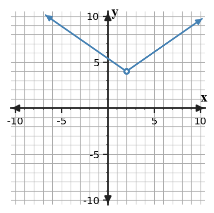
Answer / Solution: Both branches approach 4, so $\lim_{x\to 2}f(x)=4$.
Bank notes: Full section-focused AP Calculus practice form; earlier Unit 1 ideas appear only when prerequisite/integrated.
U1-S3-PS2-Q15
Section 1.3 | Practice Set 2 | current-section | DOK 2
Select the most efficient routine method for $\displaystyle\lim_{x\to 4}\frac{x^2-16}{x-4}$ and give the limit.
Answer / Solution: Factor and cancel the common factor; the limit is 8.
Bank notes: Full section-focused AP Calculus practice form; earlier Unit 1 ideas appear only when prerequisite/integrated.
U1-S4-PS2-Q15
Section 1.4 | Practice Set 2 | current-section | DOK 1
The function $q$ is continuous at $x=3$ and $q(3)=4$. Determine $\lim_{x\to 3}q(x)$ and name the continuity fact used.
Answer / Solution: The limit is 4; continuity at the point means the limit equals the function value.
Bank notes: Full section-focused AP Calculus practice form; earlier Unit 1 ideas appear only when prerequisite/integrated.
U1-S5-PS2-Q15
Section 1.5 | Practice Set 2 | current-section | DOK 1
A function has $\lim_{x\to 3^-}f(x)=-\infty$ and $\lim_{x\to 3^+}f(x)=+\infty$. What asymptotic conclusion is supported?
Answer / Solution: $x=3$ is a vertical asymptote; the opposite signs describe the two sides but do not prevent the asymptote conclusion.
Bank notes: Full section-focused AP Calculus practice form; earlier Unit 1 ideas appear only when prerequisite/integrated.
U1-S1-PS2-Q16
Section 1.1 | Practice Set 2 | current-section | DOK 2
From the graph, estimate $\lim_{x\to 1}f(x)$ and identify the graphical evidence used.
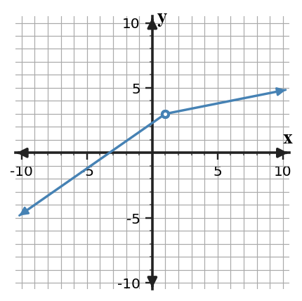
Answer / Solution: Both branches approach the same height 3, so the limit is 3.
Bank notes: Full section-focused AP Calculus practice form; earlier Unit 1 ideas appear only when prerequisite/integrated.
U1-S2-PS2-Q16
Section 1.2 | Practice Set 2 | current-section | DOK 2
For a two-sided table centered at $x=3$, one left-side sequence approaches 4 while one right-side sequence approaches 7. What should be reported for the two-sided limit?
Answer / Solution: DNE. Different one-sided limiting values prevent a two-sided limit.
Bank notes: Full section-focused AP Calculus practice form; earlier Unit 1 ideas appear only when prerequisite/integrated.
U1-S3-PS2-Q16
Section 1.3 | Practice Set 2 | current-section | DOK 2
Evaluate $\displaystyle\lim_{x\to0}\frac{\tan(4x)}{x}$ using $\tan u=\sin u/\cos u$ and the standard trigonometric limits.
Bank notes: Full section-focused AP Calculus practice form; earlier Unit 1 ideas appear only when prerequisite/integrated.
U1-S4-PS2-Q16
Section 1.4 | Practice Set 2 | current-section | DOK 3
At $x=3$, a table approaches 3 from both sides while a graph shows a filled point at height 7. Reconcile the representations and classify the discontinuity.
Answer / Solution: The limit is 3 while the function value is 7; the mismatch creates a removable discontinuity.
Bank notes: Full section-focused AP Calculus practice form; earlier Unit 1 ideas appear only when prerequisite/integrated.
U1-S5-PS2-Q16
Section 1.5 | Practice Set 2 | current-section | DOK 3
Use the relevant definition or rule as the basis for your response. The function $f$ is continuous on $[1,4]$. A student knows $f(1)=2$ and $f(4)=7$ and claims IVT guarantees a point where $f(c)=9$. Critique the conclusion.
Answer / Solution: The hypotheses include continuity, but $9$ is not between $2$ and $7$. IVT does not guarantee that target value.
Bank notes: Full section-focused AP Calculus practice form; earlier Unit 1 ideas appear only when prerequisite/integrated.
U1-S1-PS2-Q17
Section 1.1 | Practice Set 2 | current-section | DOK 2
A motion experiment reports the average velocities from $t=4$ to $t=4+h$. Use the table to estimate the instantaneous velocity at $t=4$.
$h$
average velocity (m/s)
1
2.500
0.4
1.900
0.1
1.600
0.04
1.540
Answer / Solution: The values approach $1.5$, so the instantaneous velocity is approximately $1.5$ m/s.
Bank notes: Full section-focused AP Calculus practice form; earlier Unit 1 ideas appear only when prerequisite/integrated.
U1-S2-PS2-Q17
Section 1.2 | Practice Set 2 | current-section | DOK 3
A graph and a table are intended to represent the same function near $x=4$. The graph approaches 4, while increasingly close table values approach 6. What is the mathematically responsible conclusion?
Answer / Solution: The representations conflict, so the claimed model/data should be checked. One should not simply choose a limit until the discrepancy is resolved.
Bank notes: Full section-focused AP Calculus practice form; earlier Unit 1 ideas appear only when prerequisite/integrated.
U1-S3-PS2-Q17
Section 1.3 | Practice Set 2 | current-section | DOK 3
A student cancels $x-5$ in $\frac{(x-5)(x+1)}{x-5}$ and then claims the original function is defined at $x=5$. Correct the claim while preserving the valid limit step.
Answer / Solution: Cancellation gives an equivalent expression only for $x\ne5$. The original function remains undefined at $x=5$, but its limit equals $6$ because nearby values match $x+1$.
Bank notes: Full section-focused AP Calculus practice form; earlier Unit 1 ideas appear only when prerequisite/integrated.
U1-S4-PS2-Q17
Section 1.4 | Practice Set 2 | current-section | DOK 2
A piecewise function has matching one-sided limits at $x=3$, both equal to 5, but its definition assigns no value at $x=3$. Which continuity conditions hold and which fails?
Answer / Solution: The two-sided limit exists, but the function value does not exist. Condition 1 fails; consequently the equality condition cannot be satisfied.
Bank notes: Full section-focused AP Calculus practice form; earlier Unit 1 ideas appear only when prerequisite/integrated.
U1-S5-PS2-Q17
Section 1.5 | Practice Set 2 | current-section | DOK 3
Use the relevant definition or rule as the basis for your response. Suppose $f$ is continuous on $[-1,3]$ and $f(-1)f(3)\lt0$. Use IVT to justify a conclusion about zeros.
Answer / Solution: The endpoint values have opposite signs, so $0$ lies between them. IVT guarantees at least one $c\in(-1,3)$ with $f(c)=0$.
Bank notes: Full section-focused AP Calculus practice form; earlier Unit 1 ideas appear only when prerequisite/integrated.
U1-S1-PS2-Q18
Section 1.1 | Practice Set 2 | current-section | DOK 1
Choose the statement that is equivalent to 'for inputs arbitrarily close to $x=2$, the values $f(x)$ can be made arbitrarily close to $4$' in the informal limit sense.
$f(2)=4$
$\lim_{x\to 2}f(x)=4$
$f(x)=2$ for every $x$
$\lim_{x\to 4}f(x)=2$
Answer / Solution: B.
Bank notes: Full section-focused AP Calculus practice form; earlier Unit 1 ideas appear only when prerequisite/integrated.
U1-S2-PS2-Q18
Section 1.2 | Practice Set 2 | current-section | DOK 2
If $f(x)$ approaches 4 from both sides of $x=1$ but oscillates slightly around 4, does crossing above and below 4 prevent the limit from being 4? Explain.
Answer / Solution: No. A function may approach a limit while taking values on both sides of it; the key is that the values become arbitrarily close to the same number.
Bank notes: Full section-focused AP Calculus practice form; earlier Unit 1 ideas appear only when prerequisite/integrated.
U1-S3-PS2-Q18
Section 1.3 | Practice Set 2 | current-section | DOK 2
Evaluate $\displaystyle\lim_{x\to 24}\frac{x-24}{\sqrt{x+1}-5}$ using an appropriate algebraic transformation.
Answer / Solution: Multiply by the conjugate. The expression simplifies to $\sqrt{x+1}+5$ for nearby $x$, so the limit is 10.
Bank notes: Full section-focused AP Calculus practice form; earlier Unit 1 ideas appear only when prerequisite/integrated.
U1-S4-PS2-Q18
Section 1.4 | Practice Set 2 | current-section | DOK 2
Find whether the polynomial $r(x)=x^3-3x+2$ is continuous at $x=3$ and justify without graphing.
Answer / Solution: Yes. Polynomials are continuous for every real input, so direct substitution gives the limit and it equals the function value.
Bank notes: Full section-focused AP Calculus practice form; earlier Unit 1 ideas appear only when prerequisite/integrated.
U1-S5-PS2-Q18
Section 1.5 | Practice Set 2 | current-section | DOK 2
For $m(x)=\frac{4}{x-3}+1$, state $\lim_{x\to\infty}m(x)$ and the associated horizontal asymptote.
Answer / Solution: The reciprocal term approaches $0$, so the limit is 1 and the horizontal asymptote is $y=1$.
Bank notes: Full section-focused AP Calculus practice form; earlier Unit 1 ideas appear only when prerequisite/integrated.
U1-S1-PS2-Q19
Section 1.1 | Practice Set 2 | current-section | DOK 3
Use the relevant definition or rule as the basis for your response. You want to estimate a limit numerically at $x=2$. Which sampling plan is most informative, and why: inputs only to the right, inputs only to the left, or inputs approaching $2$ from both sides?
Answer / Solution: Use inputs approaching from both sides. A two-sided limit requires compatible left- and right-hand behavior.
Bank notes: Full section-focused AP Calculus practice form; earlier Unit 1 ideas appear only when prerequisite/integrated.
U1-S2-PS2-Q19
Section 1.2 | Practice Set 2 | current-section | DOK 2
State the order in which you would read a graph to decide $\lim_{x\to 2}f(x)$ when a filled point is also shown at $x=2$.
Answer / Solution: Read the branch behavior from the left and right first; compare the one-sided limits. The filled point gives $f(a)$ and is considered separately.
Bank notes: Full section-focused AP Calculus practice form; earlier Unit 1 ideas appear only when prerequisite/integrated.
U1-S3-PS2-Q19
Section 1.3 | Practice Set 2 | current-section | DOK 1
Use the relevant definition or rule as the basis for your response. Which statement best describes the role of the Squeeze Theorem?
It replaces every indeterminate limit with zero
It determines a limit when a function is trapped between two functions with the same limiting value
It applies only to rational functions
It requires the function to equal both bounding functions
Answer / Solution: B.
Bank notes: Full section-focused AP Calculus practice form; earlier Unit 1 ideas appear only when prerequisite/integrated.
U1-S4-PS2-Q19
Section 1.4 | Practice Set 2 | current-section | DOK 3
A student calls a discontinuity 'removable' because $f(3)$ is undefined. Why is that evidence insufficient?
Answer / Solution: Undefined point value alone does not identify the nearby behavior. A removable discontinuity additionally requires a finite two-sided limit so a single point definition can repair continuity.
Bank notes: Full section-focused AP Calculus practice form; earlier Unit 1 ideas appear only when prerequisite/integrated.
U1-S5-PS2-Q19
Section 1.5 | Practice Set 2 | current-section | DOK 1
A graph appears to approach $y=1$ for large positive $x$. What additional symbolic statement precisely records that right-end behavior?
Answer / Solution: $\lim_{x\to\infty}f(x)=1$.
Bank notes: Full section-focused AP Calculus practice form; earlier Unit 1 ideas appear only when prerequisite/integrated.
U1-S1-PS2-Q20
Section 1.1 | Practice Set 2 | current-section | DOK 2
The table gives nearby values and the function value at the center is $f(a)=9$.
Estimate the limit from the table.
Explain whether the point value changes your estimate.
$x$
$f(x)$
2.9
3.80
2.99
3.98
3.01
4.02
3.1
4.20
Answer / Solution: (a) The values approach $4$, so the limit is about $4$. (b) No; the isolated point value $9$ does not change the nearby trend.
Bank notes: Full section-focused AP Calculus practice form; earlier Unit 1 ideas appear only when prerequisite/integrated.
U1-S2-PS2-Q20
Section 1.2 | Practice Set 2 | current-section | DOK 2
Use the numerical representation to answer both parts.
Estimate $\lim_{x\to 3^-}f(x)$.
Estimate $\lim_{x\to 3^+}f(x)$ and decide the two-sided limit.
$x$
$f(x)$
2.9
3.90
2.99
3.99
3.01
4.01
3.1
4.10
Answer / Solution: (a) 4. (b) 4; since the one-sided limits agree, the two-sided limit is 4.
Bank notes: Full section-focused AP Calculus practice form; earlier Unit 1 ideas appear only when prerequisite/integrated.
U1-S3-PS2-Q20
Section 1.3 | Practice Set 2 | current-section | DOK 3
Use the relevant definition or rule as the basis for your response. For the three limits below, choose a method before computing:
$\lim_{x\to2}(x^3+1)$
$\lim_{x\to3}\frac{x^2-9}{x-3}$
$\lim_{x\to0}\frac{\sqrt{1+x}-1}{x}$
Answer / Solution:
Direct substitution: $9$.
Factoring: $6$.
Conjugate rationalization: $1/2$.
Bank notes: Full section-focused AP Calculus practice form; earlier Unit 1 ideas appear only when prerequisite/integrated.
U1-S4-PS2-Q20
Section 1.4 | Practice Set 2 | current-section | DOK 3
Use the relevant definition or rule as the basis for your response. Analyze the piecewise function at its boundary: $f(x)=x+2$ for $x\lt2$ and $f(x)=x^2-k$ for $x\ge2$.
Find $k$ for continuity.
If $k=2$, classify the discontinuity at $x=2$.
Answer / Solution: (a) Left limit is $4$ and right/function value is $4-k$, so $k=0$. (b) With $k=2$, the right-hand limit is $2$ while the left is $4$, so there is a jump discontinuity.
Bank notes: Full section-focused AP Calculus practice form; earlier Unit 1 ideas appear only when prerequisite/integrated.
U1-S5-PS2-Q20
Section 1.5 | Practice Set 2 | current-section | DOK 3
Use the relevant definition or rule as the basis for your response. A function $f$ is continuous on $[0,6]$, with $f(0)=-4$ and $f(6)=3$, and a separate rational function $r$ has a vertical asymptote at $x=2$.
State an IVT-guaranteed value for $f$.
Explain why the asymptote of $r$ has no bearing on applying IVT to $f$.
Answer / Solution: (a) For example, $0$: some $c\in(0,6)$ has $f(c)=0$. (b) IVT is applied to the specified continuous function and interval; unrelated behavior of another function is irrelevant.
Bank notes: Full section-focused AP Calculus practice form; earlier Unit 1 ideas appear only when prerequisite/integrated.
Practice Set 3
U1-S1-PS3-Q01
Section 1.1 | Practice Set 3 | current-section | DOK 1
Interpret the statement $\lim_{x\to 1}f(x)=6$ in words. Your interpretation must distinguish nearby behavior from the value $f(1)$.
Answer / Solution: As $x$ approaches 1, the values of $f(x)$ approach 6. The statement alone does not determine $f(1)$.
Bank notes: Full section-focused AP Calculus practice form; earlier Unit 1 ideas appear only when prerequisite/integrated.
U1-S2-PS3-Q01
Section 1.2 | Practice Set 3 | current-section | DOK 1
A graph approaches the height 2 as $x$ approaches 1 from the left. Write the left-hand limit in notation.
Answer / Solution: $\lim_{x\to 1^-}f(x)=2$
Bank notes: Full section-focused AP Calculus practice form; earlier Unit 1 ideas appear only when prerequisite/integrated.
U1-S3-PS3-Q01
Section 1.3 | Practice Set 3 | current-section | DOK 1
Evaluate $\lim_{x\to 5}(2x^2-3x+4)$ by direct substitution.
Answer / Solution: 39.
Bank notes: Full section-focused AP Calculus practice form; earlier Unit 1 ideas appear only when prerequisite/integrated.
U1-S4-PS3-Q01
Section 1.4 | Practice Set 3 | current-section | DOK 1
Identify the decisive mathematical condition before selecting or computing the result. State the three conditions required for $f$ to be continuous at $x=a$.
Bank notes: Full section-focused AP Calculus practice form; earlier Unit 1 ideas appear only when prerequisite/integrated.
U1-S5-PS3-Q01
Section 1.5 | Practice Set 3 | current-section | DOK 1
Interpret $\lim_{x\to 4^-}f(x)=+\infty$ in words and identify the associated vertical line suggested by this behavior.
Answer / Solution: As $x$ approaches 4 from the left, $f(x)$ increases without bound. This one-sided infinite behavior supports $x=4$ as a vertical asymptote.
Bank notes: Full section-focused AP Calculus practice form; earlier Unit 1 ideas appear only when prerequisite/integrated.
U1-S1-PS3-Q02
Section 1.1 | Practice Set 3 | current-section | DOK 1
Write in limit notation: the values of $g(x)$ approach 2 as $x$ approaches 1.
Answer / Solution: $\lim_{x\to 1}g(x)=2$.
Bank notes: Full section-focused AP Calculus practice form; earlier Unit 1 ideas appear only when prerequisite/integrated.
U1-S2-PS3-Q02
Section 1.2 | Practice Set 3 | current-section | DOK 1
A graph approaches the height 2 as $x$ approaches 2 from the right. Write the right-hand limit in notation.
Answer / Solution: $\lim_{x\to 2^+}f(x)=2$
Bank notes: Full section-focused AP Calculus practice form; earlier Unit 1 ideas appear only when prerequisite/integrated.
U1-S3-PS3-Q02
Section 1.3 | Practice Set 3 | current-section | DOK 2
Evaluate $\lim_{x\to 4}\frac{3x+8}{x+8}$ and state why the quotient law applies.
Answer / Solution: The denominator approaches 12, which is nonzero, so substitution gives $20/12$.
Bank notes: Full section-focused AP Calculus practice form; earlier Unit 1 ideas appear only when prerequisite/integrated.
U1-S4-PS3-Q02
Section 1.4 | Practice Set 3 | current-section | DOK 2
At $x=1$, $f(1)=7$ and $\lim_{x\to 1}f(x)=7$. Is this information sufficient to conclude continuity at the point? Explain.
Answer / Solution: Yes. The stated finite function value exists, the two-sided limit exists, and they are equal, so all three continuity conditions hold.
Bank notes: Full section-focused AP Calculus practice form; earlier Unit 1 ideas appear only when prerequisite/integrated.
U1-S5-PS3-Q02
Section 1.5 | Practice Set 3 | current-section | DOK 1
If $\lim_{x\to\infty}g(x)=2$, state the horizontal asymptote described by the limit.
Answer / Solution: $y=2$.
Bank notes: Full section-focused AP Calculus practice form; earlier Unit 1 ideas appear only when prerequisite/integrated.
U1-S1-PS3-Q03
Section 1.1 | Practice Set 3 | current-section | DOK 1
The table gives selected values of $h(x)$ near the indicated input. Estimate the two-sided limit.
$x$
$h(x)$
4.9
6.800
4.99
6.980
5.01
7.020
5.1
7.200
Answer / Solution: The values approach 7 from both sides, so $\lim_{x\to 5}h(x)\approx 7$.
Bank notes: Full section-focused AP Calculus practice form; earlier Unit 1 ideas appear only when prerequisite/integrated.
U1-S2-PS3-Q03
Section 1.2 | Practice Set 3 | current-section | DOK 1
A graph approaches the height 2 as $x$ approaches 3 from both sides. Write the two-sided limit in notation.
Answer / Solution: $\lim_{x\to 3}f(x)=2$
Bank notes: Full section-focused AP Calculus practice form; earlier Unit 1 ideas appear only when prerequisite/integrated.
U1-S3-PS3-Q03
Section 1.3 | Practice Set 3 | current-section | DOK 2
Evaluate $\displaystyle\lim_{x\to 6}\frac{(x-6)(x+8)}{x-6}$ and justify cancellation in a limit context.
Answer / Solution: For $x\ne 6$ the expression equals $x+8$, so the limit is 14. Cancellation is valid for nearby $x$, even though the original expression is undefined at the point.
Bank notes: Full section-focused AP Calculus practice form; earlier Unit 1 ideas appear only when prerequisite/integrated.
U1-S4-PS3-Q03
Section 1.4 | Practice Set 3 | current-section | DOK 1
At $x=1$, both one-sided limits equal 6, but $f(1)=9$. Classify the discontinuity.
Answer / Solution: Removable discontinuity: the limit exists but does not equal the defined function value.
Bank notes: Full section-focused AP Calculus practice form; earlier Unit 1 ideas appear only when prerequisite/integrated.
U1-S5-PS3-Q03
Section 1.5 | Practice Set 3 | current-section | DOK 2
Identify the decisive mathematical condition before selecting or computing the result. The graph of a rational-function model is shown. Identify its vertical and horizontal asymptotes from the displayed behavior.
Bank notes: Full section-focused AP Calculus practice form; earlier Unit 1 ideas appear only when prerequisite/integrated.
U1-S1-PS3-Q04
Section 1.1 | Practice Set 3 | current-section | DOK 2
Identify the decisive mathematical condition before selecting or computing the result. The graph of $f$ is shown. State $f(2)$ and $\lim_{x\to 2}f(x)$ separately.
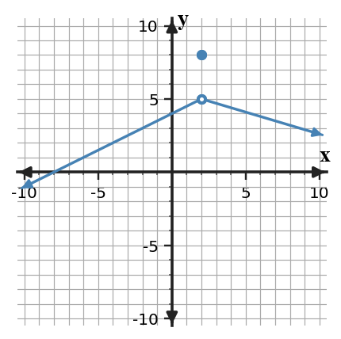
Answer / Solution: The filled point gives $f(2)=8$, while both branches approach 5; therefore the limit is 5.
Bank notes: Full section-focused AP Calculus practice form; earlier Unit 1 ideas appear only when prerequisite/integrated.
U1-S2-PS3-Q04
Section 1.2 | Practice Set 3 | current-section | DOK 2
The graph of $f$ is shown. Determine the left-hand limit, right-hand limit, and whether the two-sided limit exists at $x=4$.
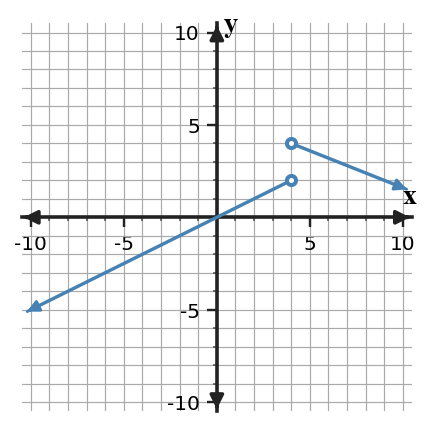
Answer / Solution: Left: 2; right: 4. Because they differ, the two-sided limit does not exist.
Bank notes: Full section-focused AP Calculus practice form; earlier Unit 1 ideas appear only when prerequisite/integrated.
U1-S3-PS3-Q04
Section 1.3 | Practice Set 3 | current-section | DOK 2
Evaluate $\displaystyle\lim_{x\to 5}\frac{x^2-25}{x-5}$ by factoring.
Answer / Solution: Factor as $(x-5)(x+5)$ and cancel for $x\ne5$. The limit is 10.
Bank notes: Full section-focused AP Calculus practice form; earlier Unit 1 ideas appear only when prerequisite/integrated.
U1-S4-PS3-Q04
Section 1.4 | Practice Set 3 | current-section | DOK 2
The graph of $f$ is shown. Classify the discontinuity at $x=1$ and cite the one-sided-limit evidence.
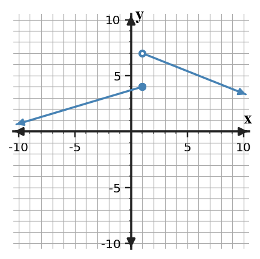
Answer / Solution: Jump discontinuity. The left-hand limit is 4 and the right-hand limit is 7, so they disagree.
Bank notes: Full section-focused AP Calculus practice form; earlier Unit 1 ideas appear only when prerequisite/integrated.
U1-S5-PS3-Q04
Section 1.5 | Practice Set 3 | current-section | DOK 2
For $r(x)=\frac{4x+1}{x-4}$, identify the vertical asymptote and the horizontal asymptote.
Answer / Solution: Vertical: $x=4$ (no cancellation). Horizontal: $y=4$ from the ratio of leading coefficients.
Bank notes: Full section-focused AP Calculus practice form; earlier Unit 1 ideas appear only when prerequisite/integrated.
U1-S1-PS3-Q05
Section 1.1 | Practice Set 3 | current-section | DOK 2
For $p(x)=x^2+4$, compute the average rate of change on $[3,5]$ and identify the units as output-units per input-unit.
Answer / Solution: $[p(5)-p(3)]/(5-3)=(29-13)/2=8$ output-units per input-unit.
Bank notes: Full section-focused AP Calculus practice form; earlier Unit 1 ideas appear only when prerequisite/integrated.
U1-S2-PS3-Q05
Section 1.2 | Practice Set 3 | current-section | DOK 2
The table gives values of $g$ near $x=1$. Estimate both one-sided limits and the two-sided limit.
$x$
$g(x)$
0.9
1.95
0.99
1.995
1.01
2.005
1.1
2.05
Answer / Solution: Both sides approach 2; therefore each one-sided limit and the two-sided limit equal approximately 2.
Bank notes: Full section-focused AP Calculus practice form; earlier Unit 1 ideas appear only when prerequisite/integrated.
U1-S3-PS3-Q05
Section 1.3 | Practice Set 3 | current-section | DOK 2
Use a conjugate to evaluate $\displaystyle\lim_{x\to 32}\frac{\sqrt{x+4}-6}{x-32}$.
Answer / Solution: Rationalization gives $1/(\sqrt{x+4}+6)$, so the limit is $1/12$.
Bank notes: Full section-focused AP Calculus practice form; earlier Unit 1 ideas appear only when prerequisite/integrated.
U1-S4-PS3-Q05
Section 1.4 | Practice Set 3 | current-section | DOK 2
Find $c$ so that $f(x)=2x+c$ for $x\lt 1$ and $f(x)=x^2+4$ for $x\ge 1$ is continuous at $x=1$.
Answer / Solution: Set $2(1)+c=5$. Thus $c=3$.
Bank notes: Full section-focused AP Calculus practice form; earlier Unit 1 ideas appear only when prerequisite/integrated.
U1-S5-PS3-Q05
Section 1.5 | Practice Set 3 | current-section | DOK 2
A function is continuous on $[0,8]$, with $f(0)=-2$ and $f(8)=7$. Does IVT guarantee a zero? Justify using the hypotheses.
Answer / Solution: Yes. The function is continuous on the closed interval and $0$ lies between the endpoint values, so IVT guarantees some interior point where the function equals $0$.
Bank notes: Full section-focused AP Calculus practice form; earlier Unit 1 ideas appear only when prerequisite/integrated.
U1-S1-PS3-Q06
Section 1.1 | Practice Set 3 | current-section | DOK 2
For a function, the table lists secant slopes from $x=4$ to $x=4+h$. Predict the instantaneous rate at $x=4$ from the trend.
$h$
secant slope
1
9.000
0.5
8.500
0.1
8.100
0.02
8.020
Answer / Solution: The secant slopes approach 8, so a reasonable instantaneous-rate estimate is 8.
Bank notes: Full section-focused AP Calculus practice form; earlier Unit 1 ideas appear only when prerequisite/integrated.
U1-S2-PS3-Q06
Section 1.2 | Practice Set 3 | current-section | DOK 2
Use the table to decide whether $\lim_{x\to 2}h(x)$ exists. State the two one-sided limits that support your decision.
$x$
$h(x)$
1.9
1.05
1.99
1.005
2.01
3.995
2.1
3.95
Answer / Solution: The left-hand limit is 1 and the right-hand limit is 4; they differ, so the two-sided limit DNE.
Bank notes: Full section-focused AP Calculus practice form; earlier Unit 1 ideas appear only when prerequisite/integrated.
U1-S3-PS3-Q06
Section 1.3 | Practice Set 3 | current-section | DOK 2
Answer / Solution: The limit is $6/5$ because $\sin(6x)/(6x)\to1$.
Bank notes: Full section-focused AP Calculus practice form; earlier Unit 1 ideas appear only when prerequisite/integrated.
U1-S4-PS3-Q07
Section 1.4 | Practice Set 3 | current-section | DOK 1
A function has a hole at $x=1$ where the limiting value is 6. What redefinition of $f(1)$ removes the discontinuity?
Answer / Solution: Define $f(1)=6$.
Bank notes: Full section-focused AP Calculus practice form; earlier Unit 1 ideas appear only when prerequisite/integrated.
U1-S5-PS3-Q07
Section 1.5 | Practice Set 3 | current-section | DOK 2
Identify the decisive mathematical condition before selecting or computing the result. A function satisfies $f(1)=-3$ and $f(5)=4$, but continuity on $[1,5]$ is not known. Can IVT be used to guarantee a solution to $f(x)=0$?
Answer / Solution: No. The endpoint values bracket zero, but the continuity hypothesis on the entire interval is missing.
Bank notes: Full section-focused AP Calculus practice form; earlier Unit 1 ideas appear only when prerequisite/integrated.
U1-S1-PS3-Q08
Section 1.1 | Practice Set 3 | current-section | DOK 2
A tank's water volume $V(t)$ is measured in liters and time $t$ in minutes. Near $t=5$, secant rates approach $-1.8$. Interpret $\lim_{h\to0}\frac{V(5+h)-V(5)}{h}=-1.8$ in context.
Answer / Solution: At about 5 minutes, the volume is decreasing at an instantaneous rate of about $1.8$ liters per minute.
Bank notes: Full section-focused AP Calculus practice form; earlier Unit 1 ideas appear only when prerequisite/integrated.
U1-S2-PS3-Q08
Section 1.2 | Practice Set 3 | current-section | DOK 2
Suppose $\lim_{x\to 4^-}p(x)=2$ and $\lim_{x\to 4^+}p(x)=2$. What conclusion about the two-sided limit follows, and what conclusion about $p(4)$ does not follow?
Answer / Solution: The two-sided limit exists and equals 2. No value of $p(4)$ is determined by the limit statements alone.
Bank notes: Full section-focused AP Calculus practice form; earlier Unit 1 ideas appear only when prerequisite/integrated.
U1-S3-PS3-Q08
Section 1.3 | Practice Set 3 | current-section | DOK 2
Identify the decisive mathematical condition before selecting or computing the result. Which first step is most efficient for $\displaystyle\lim_{x\to4}\frac{\sqrt{x+5}-3}{x-4}$?
Directly declare DNE
Factor the numerator as a polynomial
Multiply by the conjugate
Apply a trigonometric identity
Answer / Solution: C. Multiply by the conjugate.
Bank notes: Full section-focused AP Calculus practice form; earlier Unit 1 ideas appear only when prerequisite/integrated.
U1-S4-PS3-Q08
Section 1.4 | Practice Set 3 | current-section | DOK 2
A student checks only that $f(1)$ exists and concludes that $f$ is continuous at $x=1$. Identify the missing evidence.
Answer / Solution: The student must also verify that the two-sided limit exists and equals the function value.
Bank notes: Full section-focused AP Calculus practice form; earlier Unit 1 ideas appear only when prerequisite/integrated.
U1-S5-PS3-Q08
Section 1.5 | Practice Set 3 | current-section | DOK 2
A student says a horizontal asymptote $y=2$ means the graph can never cross $y=2$. Evaluate the claim.
Answer / Solution: False. A horizontal asymptote describes end behavior; a function may cross the line at finite inputs.
Bank notes: Full section-focused AP Calculus practice form; earlier Unit 1 ideas appear only when prerequisite/integrated.
U1-S1-PS3-Q09
Section 1.1 | Practice Set 3 | current-section | DOK 2
The function is not defined at $x=6$. Use the table to estimate $\lim_{x\to 6}r(x)$ and explain why undefined $r(6)$ does not by itself force DNE.
$x$
$r(x)$
5.8
-2.04
5.98
-2.004
6.02
-1.996
6.2
-1.96
Answer / Solution: The table approaches -2; a missing value at the point does not determine nearby behavior, so the limit is approximately -2.
Bank notes: Full section-focused AP Calculus practice form; earlier Unit 1 ideas appear only when prerequisite/integrated.
U1-S2-PS3-Q09
Section 1.2 | Practice Set 3 | current-section | DOK 3
Suppose $\lim_{x\to 1^-}r(x)=2$ and $\lim_{x\to 1^+}r(x)=3$. A student reports $\lim_{x\to 1}r(x)=2.5$. Identify the error.
Answer / Solution: A two-sided limit is not the average of unequal one-sided limits. Because the one-sided limits differ, the two-sided limit does not exist.
Bank notes: Full section-focused AP Calculus practice form; earlier Unit 1 ideas appear only when prerequisite/integrated.
U1-S3-PS3-Q09
Section 1.3 | Practice Set 3 | current-section | DOK 2
A direct substitution into a rational limit at $x=6$ produces $0/0$. Explain what this result means and what it does not mean.
Answer / Solution: $0/0$ is an indeterminate form signaling that more analysis/simplification is needed. It is not the limit value and does not by itself mean DNE.
Bank notes: Full section-focused AP Calculus practice form; earlier Unit 1 ideas appear only when prerequisite/integrated.
U1-S4-PS3-Q09
Section 1.4 | Practice Set 3 | current-section | DOK 1
The left-hand limit at $x=1$ is 4 and the right-hand limit is 6. Which continuity condition fails first?
Answer / Solution: The two-sided limit does not exist, so continuity condition 2 fails.
Bank notes: Full section-focused AP Calculus practice form; earlier Unit 1 ideas appear only when prerequisite/integrated.
U1-S5-PS3-Q09
Section 1.5 | Practice Set 3 | current-section | DOK 2
A student says a vertical asymptote at $x=4$ means $f(4)=\infty$. Correct the statement.
Answer / Solution: Infinity is not a real function value. A vertical asymptote describes unbounded behavior as $x$ approaches 4; $f(4)$ may be undefined or separately defined.
Bank notes: Full section-focused AP Calculus practice form; earlier Unit 1 ideas appear only when prerequisite/integrated.
U1-S1-PS3-Q10
Section 1.1 | Practice Set 3 | current-section | DOK 3
A student argues, 'Because $q(5)=9$, $\lim_{x\to 5}q(x)$ must equal $9$.' Evaluate the reasoning and state what evidence would actually be needed.
Answer / Solution: The reasoning is invalid. The limit depends on values of $q(x)$ for inputs near the point from both sides; a graph, table, or formula describing that nearby behavior is needed.
Bank notes: Full section-focused AP Calculus practice form; earlier Unit 1 ideas appear only when prerequisite/integrated.
U1-S2-PS3-Q10
Section 1.2 | Practice Set 3 | current-section | DOK 2
A calculator table near $x=2$ uses the inputs 2.1, 2.01, and 2.001 only. Explain why it cannot by itself justify a two-sided limit estimate.
Answer / Solution: All sampled inputs lie to the right. A two-sided estimate also requires evidence from inputs less than the target.
Bank notes: Full section-focused AP Calculus practice form; earlier Unit 1 ideas appear only when prerequisite/integrated.
U1-S3-PS3-Q10
Section 1.3 | Practice Set 3 | current-section | DOK 3
Compare two approaches to $\displaystyle\lim_{x\to 6}\frac{x^2-36}{x-6}$: direct substitution and factoring. Which yields a valid evaluation, and why?
Answer / Solution: Direct substitution only identifies $0/0$. Factoring produces $x+6$ for nearby inputs, so the limit is 12. The factoring approach completes the evaluation.
Bank notes: Full section-focused AP Calculus practice form; earlier Unit 1 ideas appear only when prerequisite/integrated.
U1-S4-PS3-Q10
Section 1.4 | Practice Set 3 | current-section | DOK 2
A function is continuous on $(-\infty,1)$ and $(1,\infty)$ and has a removable discontinuity at $x=1$. Write a change that could make it continuous everywhere.
Answer / Solution: Define or redefine the point value to equal the common two-sided limit at that input.
Bank notes: Full section-focused AP Calculus practice form; earlier Unit 1 ideas appear only when prerequisite/integrated.
U1-S5-PS3-Q10
Section 1.5 | Practice Set 3 | current-section | DOK 3
For $q(x)=\frac{x+1}{(x-4)^2}$, describe the sign of the infinite limit as $x\to 4$ when 4+1 is positive.
Answer / Solution: Because the squared denominator approaches $0$ through positive values and the numerator approaches a positive number, the function approaches $+\infty$ from both sides.
Bank notes: Full section-focused AP Calculus practice form; earlier Unit 1 ideas appear only when prerequisite/integrated.
U1-S1-PS3-Q11
Section 1.1 | Practice Set 3 | current-section | DOK 1
Identify the decisive mathematical condition before selecting or computing the result. Which description best matches the meaning of a finite two-sided limit $\lim_{x\to a}f(x)=L$?
The value of the function at the input
The value approached by nearby outputs
The largest nearby output
The average of two function values
Answer / Solution: B. The value approached by nearby outputs.
Bank notes: Full section-focused AP Calculus practice form; earlier Unit 1 ideas appear only when prerequisite/integrated.
U1-S2-PS3-Q11
Section 1.2 | Practice Set 3 | current-section | DOK 1
Identify the decisive mathematical condition before selecting or computing the result. Which condition is necessary for a finite two-sided limit to exist?
The function must be defined at the point
The left- and right-hand limits must be equal
The left- and right-hand function values must be equal
The graph must cross the vertical line
Answer / Solution: B.
Bank notes: Full section-focused AP Calculus practice form; earlier Unit 1 ideas appear only when prerequisite/integrated.
U1-S3-PS3-Q11
Section 1.3 | Practice Set 3 | current-section | DOK 2
Identify the decisive mathematical condition before selecting or computing the result. Evaluate $\displaystyle\lim_{x\to0}\frac{1-\cos x}{x}$ using a valid identity or rationalization.
Bank notes: Full section-focused AP Calculus practice form; earlier Unit 1 ideas appear only when prerequisite/integrated.
U1-S4-PS3-Q11
Section 1.4 | Practice Set 3 | current-section | DOK 1
Identify the decisive mathematical condition before selecting or computing the result. Which description identifies a jump discontinuity?
The one-sided limits are finite and unequal
The two-sided limit exists but differs from the point value
The function is a polynomial
The function approaches the same value from both sides
Answer / Solution: A.
Bank notes: Full section-focused AP Calculus practice form; earlier Unit 1 ideas appear only when prerequisite/integrated.
U1-S5-PS3-Q11
Section 1.5 | Practice Set 3 | current-section | DOK 1
Identify the decisive mathematical condition before selecting or computing the result. Which hypothesis is essential for applying the Intermediate Value Theorem on $[a,b]$?
Continuity on the closed interval
Differentiability at every point
Equal endpoint values
A vertical asymptote inside the interval
Answer / Solution: A. Continuity on the closed interval.
Bank notes: Full section-focused AP Calculus practice form; earlier Unit 1 ideas appear only when prerequisite/integrated.
U1-S1-PS3-Q12
Section 1.1 | Practice Set 3 | current-section | DOK 2
Evaluate $\lim_{x\to 3}(3x+5)$ and state why no table is necessary for this polynomial expression.
Answer / Solution: The limit is 14. Polynomial functions are continuous, so direct substitution determines the limit.
Bank notes: Full section-focused AP Calculus practice form; earlier Unit 1 ideas appear only when prerequisite/integrated.
U1-S2-PS3-Q12
Section 1.2 | Practice Set 3 | current-section | DOK 2
At $x=4$ the graph approaches 1 from the left and 6 from the right, while $f(4)=10$. List the three values/limit conclusions separately.
Answer / Solution: $\lim_{x\to 4^-}f(x)=1$, $\lim_{x\to 4^+}f(x)=6$, $f(4)=10$, and the two-sided limit DNE because the one-sided limits disagree.
Bank notes: Full section-focused AP Calculus practice form; earlier Unit 1 ideas appear only when prerequisite/integrated.
U1-S3-PS3-Q12
Section 1.3 | Practice Set 3 | current-section | DOK 3
Suppose $|f(x)-5|\le |x|$ for $x$ near $0$. Use squeeze reasoning to determine $\lim_{x\to0}f(x)$.
Answer / Solution: Because $-|x|\le f(x)-5\le|x|$ and both bounds approach $0$, $f(x)-5\to0$; hence the limit is 5.
Bank notes: Full section-focused AP Calculus practice form; earlier Unit 1 ideas appear only when prerequisite/integrated.
U1-S4-PS3-Q12
Section 1.4 | Practice Set 3 | current-section | DOK 2
Suppose $f$ is continuous on $[1,5]$. What endpoint-sided limit condition must hold at the left endpoint?
Answer / Solution: Right-continuity is required: $\lim_{x\to 1^+}f(x)=f(1)$.
Bank notes: Full section-focused AP Calculus practice form; earlier Unit 1 ideas appear only when prerequisite/integrated.
U1-S5-PS3-Q12
Section 1.5 | Practice Set 3 | current-section | DOK 2
If $\lim_{x\to-\infty}f(x)=2$ and $\lim_{x\to\infty}f(x)=3$, state both end-behavior conclusions and the corresponding horizontal asymptotes.
Answer / Solution: As $x\to-\infty$, $f(x)\to2$ so $y=2$ is a left-end horizontal asymptote; as $x\to\infty$, $f(x)\to3$ so $y=3$ is a right-end horizontal asymptote.
Bank notes: Full section-focused AP Calculus practice form; earlier Unit 1 ideas appear only when prerequisite/integrated.
U1-S1-PS3-Q13
Section 1.1 | Practice Set 3 | current-section | DOK 2
The position of an object is $s(t)=t^2-2t$ meters. Compute the average velocity from $t=4$ to $t=7$.
Answer / Solution: $[s(7)-s(4)]/(7-4)=(35-8)/3=9$ meters per second.
Bank notes: Full section-focused AP Calculus practice form; earlier Unit 1 ideas appear only when prerequisite/integrated.
U1-S2-PS3-Q13
Section 1.2 | Practice Set 3 | current-section | DOK 2
The table gives $f(1-0.01)=1.99$ and $f(1+0.01)=2.01$, but the next closest pair is 1.999 and 2.001. Describe the numerical evidence for the limit.
Answer / Solution: Values from both sides are getting closer to 2 as inputs approach 1, supporting $\lim_{x\to 1}f(x)=2$.
Bank notes: Full section-focused AP Calculus practice form; earlier Unit 1 ideas appear only when prerequisite/integrated.
U1-S3-PS3-Q13
Section 1.3 | Practice Set 3 | current-section | DOK 2
The functions $f$ and $g$ have limits $\lim_{x\to 4}f(x)=6$ and $\lim_{x\to 4}g(x)=7$. Evaluate $\lim_{x\to 4}[2f(x)-g(x)]$ using limit laws.
Answer / Solution: By linearity, the limit is $2(6)-(7)=5$.
Bank notes: Full section-focused AP Calculus practice form; earlier Unit 1 ideas appear only when prerequisite/integrated.
U1-S4-PS3-Q13
Section 1.4 | Practice Set 3 | current-section | DOK 3
A graph has an infinite discontinuity at $x=1$. Can changing only the value $f(1)$ make the function continuous there? Explain.
Answer / Solution: No. Changing one point cannot alter unbounded nearby behavior; the two-sided finite limit condition still fails.
Bank notes: Full section-focused AP Calculus practice form; earlier Unit 1 ideas appear only when prerequisite/integrated.
U1-S5-PS3-Q13
Section 1.5 | Practice Set 3 | current-section | DOK 3
The denominator of a rational function is zero at $x=4$, but the same factor cancels with the numerator. Must $x=4$ be a vertical asymptote? Explain.
Answer / Solution: No. Cancellation can produce a removable discontinuity instead. One must examine the simplified nearby expression and the resulting limit.
Bank notes: Full section-focused AP Calculus practice form; earlier Unit 1 ideas appear only when prerequisite/integrated.
U1-S1-PS3-Q14
Section 1.1 | Practice Set 3 | current-section | DOK 1
Suppose every sufficiently close value of $f(x)$ on both sides of $x=4$ is close to 3, but $f(4)=8$. Which quantity is controlled by the nearby values: $f(4)$ or $\lim_{x\to 4}f(x)$? State the limit.
Answer / Solution: The nearby values control the limit, so $\lim_{x\to 4}f(x)=3$. The point value remains 8.
Bank notes: Full section-focused AP Calculus practice form; earlier Unit 1 ideas appear only when prerequisite/integrated.
U1-S2-PS3-Q14
Section 1.2 | Practice Set 3 | current-section | DOK 1
A function is undefined at $x=2$, but both one-sided limits equal 2. Which statement is correct?
The two-sided limit DNE
The two-sided limit equals the common one-sided value
The left-hand limit is undefined
The right-hand limit equals the function value
Answer / Solution: B.
Bank notes: Full section-focused AP Calculus practice form; earlier Unit 1 ideas appear only when prerequisite/integrated.
U1-S3-PS3-Q14
Section 1.3 | Practice Set 3 | current-section | DOK 3
If $\lim_{x\to 4}f(x)=2$ and $\lim_{x\to 4}g(x)=0$, can the quotient law alone determine $\lim_{x\to 4}f(x)/g(x)$? Explain.
Answer / Solution: No. The quotient law requires the denominator limit to be nonzero. Additional information about the sign/behavior of $g$ is needed.
Bank notes: Full section-focused AP Calculus practice form; earlier Unit 1 ideas appear only when prerequisite/integrated.
U1-S4-PS3-Q14
Section 1.4 | Practice Set 3 | current-section | DOK 2
For $p(x)=\frac{x^2-1}{x-1}$ with its original domain, classify the discontinuity at $x=1$ and give the limiting value.
Answer / Solution: The discontinuity is removable. The simplified nearby expression is $x+1$, so the limiting value is 2.
Bank notes: Full section-focused AP Calculus practice form; earlier Unit 1 ideas appear only when prerequisite/integrated.
U1-S5-PS3-Q14
Section 1.5 | Practice Set 3 | current-section | DOK 2
A continuous function satisfies $f(2)=-1$ and $f(8)=7$. List two different target values that IVT is guaranteed to attain between these outputs.
Answer / Solution: For example, 1 and 4; each lies strictly between -1 and 7.
Bank notes: Full section-focused AP Calculus practice form; earlier Unit 1 ideas appear only when prerequisite/integrated.
U1-S1-PS3-Q15
Section 1.1 | Practice Set 3 | current-section | DOK 2
A graph shows an open circle at $(5,2)$ and a filled point at $(5,6)$, with the curve approaching the open circle from both sides. Write three separate statements for the left-hand approach, right-hand approach, and function value.
Answer / Solution: $\lim_{x\to 5^-}f(x)=2$, $\lim_{x\to 5^+}f(x)=2$, and $f(5)=6$.
Bank notes: Full section-focused AP Calculus practice form; earlier Unit 1 ideas appear only when prerequisite/integrated.
U1-S2-PS3-Q15
Section 1.2 | Practice Set 3 | current-section | DOK 2
Use the graph to write a complete two-sided limit statement at $x=3$ and cite the behavior of both branches.
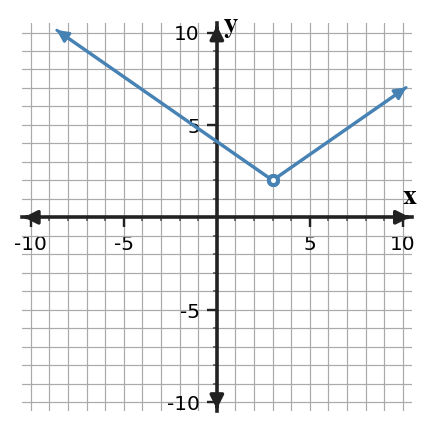
Answer / Solution: Both branches approach 2, so $\lim_{x\to 3}f(x)=2$.
Bank notes: Full section-focused AP Calculus practice form; earlier Unit 1 ideas appear only when prerequisite/integrated.
U1-S3-PS3-Q15
Section 1.3 | Practice Set 3 | current-section | DOK 2
Select the most efficient routine method for $\displaystyle\lim_{x\to 5}\frac{x^2-25}{x-5}$ and give the limit.
Answer / Solution: Factor and cancel the common factor; the limit is 10.
Bank notes: Full section-focused AP Calculus practice form; earlier Unit 1 ideas appear only when prerequisite/integrated.
U1-S4-PS3-Q15
Section 1.4 | Practice Set 3 | current-section | DOK 1
The function $q$ is continuous at $x=1$ and $q(1)=5$. Determine $\lim_{x\to 1}q(x)$ and name the continuity fact used.
Answer / Solution: The limit is 5; continuity at the point means the limit equals the function value.
Bank notes: Full section-focused AP Calculus practice form; earlier Unit 1 ideas appear only when prerequisite/integrated.
U1-S5-PS3-Q15
Section 1.5 | Practice Set 3 | current-section | DOK 1
A function has $\lim_{x\to 4^-}f(x)=-\infty$ and $\lim_{x\to 4^+}f(x)=+\infty$. What asymptotic conclusion is supported?
Answer / Solution: $x=4$ is a vertical asymptote; the opposite signs describe the two sides but do not prevent the asymptote conclusion.
Bank notes: Full section-focused AP Calculus practice form; earlier Unit 1 ideas appear only when prerequisite/integrated.
U1-S1-PS3-Q16
Section 1.1 | Practice Set 3 | current-section | DOK 2
From the graph, estimate $\lim_{x\to 2}f(x)$ and identify the graphical evidence used.
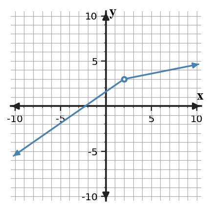
Answer / Solution: Both branches approach the same height 3, so the limit is 3.
Bank notes: Full section-focused AP Calculus practice form; earlier Unit 1 ideas appear only when prerequisite/integrated.
U1-S2-PS3-Q16
Section 1.2 | Practice Set 3 | current-section | DOK 2
For a two-sided table centered at $x=4$, one left-side sequence approaches 2 while one right-side sequence approaches 5. What should be reported for the two-sided limit?
Answer / Solution: DNE. Different one-sided limiting values prevent a two-sided limit.
Bank notes: Full section-focused AP Calculus practice form; earlier Unit 1 ideas appear only when prerequisite/integrated.
U1-S3-PS3-Q16
Section 1.3 | Practice Set 3 | current-section | DOK 2
Evaluate $\displaystyle\lim_{x\to0}\frac{\tan(5x)}{x}$ using $\tan u=\sin u/\cos u$ and the standard trigonometric limits.
Bank notes: Full section-focused AP Calculus practice form; earlier Unit 1 ideas appear only when prerequisite/integrated.
U1-S4-PS3-Q16
Section 1.4 | Practice Set 3 | current-section | DOK 3
At $x=1$, a table approaches 4 from both sides while a graph shows a filled point at height 8. Reconcile the representations and classify the discontinuity.
Answer / Solution: The limit is 4 while the function value is 8; the mismatch creates a removable discontinuity.
Bank notes: Full section-focused AP Calculus practice form; earlier Unit 1 ideas appear only when prerequisite/integrated.
U1-S5-PS3-Q16
Section 1.5 | Practice Set 3 | current-section | DOK 3
Identify the decisive mathematical condition before selecting or computing the result. The function $f$ is continuous on $[1,4]$. A student knows $f(1)=2$ and $f(4)=7$ and claims IVT guarantees a point where $f(c)=9$. Critique the conclusion.
Answer / Solution: The hypotheses include continuity, but $9$ is not between $2$ and $7$. IVT does not guarantee that target value.
Bank notes: Full section-focused AP Calculus practice form; earlier Unit 1 ideas appear only when prerequisite/integrated.
U1-S1-PS3-Q17
Section 1.1 | Practice Set 3 | current-section | DOK 2
A motion experiment reports the average velocities from $t=5$ to $t=5+h$. Use the table to estimate the instantaneous velocity at $t=5$.
$h$
average velocity (m/s)
1
2.500
0.4
1.900
0.1
1.600
0.04
1.540
Answer / Solution: The values approach $1.5$, so the instantaneous velocity is approximately $1.5$ m/s.
Bank notes: Full section-focused AP Calculus practice form; earlier Unit 1 ideas appear only when prerequisite/integrated.
U1-S2-PS3-Q17
Section 1.2 | Practice Set 3 | current-section | DOK 3
A graph and a table are intended to represent the same function near $x=1$. The graph approaches 2, while increasingly close table values approach 4. What is the mathematically responsible conclusion?
Answer / Solution: The representations conflict, so the claimed model/data should be checked. One should not simply choose a limit until the discrepancy is resolved.
Bank notes: Full section-focused AP Calculus practice form; earlier Unit 1 ideas appear only when prerequisite/integrated.
U1-S3-PS3-Q17
Section 1.3 | Practice Set 3 | current-section | DOK 3
A student cancels $x-6$ in $\frac{(x-6)(x+1)}{x-6}$ and then claims the original function is defined at $x=6$. Correct the claim while preserving the valid limit step.
Answer / Solution: Cancellation gives an equivalent expression only for $x\ne6$. The original function remains undefined at $x=6$, but its limit equals $7$ because nearby values match $x+1$.
Bank notes: Full section-focused AP Calculus practice form; earlier Unit 1 ideas appear only when prerequisite/integrated.
U1-S4-PS3-Q17
Section 1.4 | Practice Set 3 | current-section | DOK 2
A piecewise function has matching one-sided limits at $x=1$, both equal to 6, but its definition assigns no value at $x=1$. Which continuity conditions hold and which fails?
Answer / Solution: The two-sided limit exists, but the function value does not exist. Condition 1 fails; consequently the equality condition cannot be satisfied.
Bank notes: Full section-focused AP Calculus practice form; earlier Unit 1 ideas appear only when prerequisite/integrated.
U1-S5-PS3-Q17
Section 1.5 | Practice Set 3 | current-section | DOK 3
Identify the decisive mathematical condition before selecting or computing the result. Suppose $f$ is continuous on $[-1,3]$ and $f(-1)f(3)\lt0$. Use IVT to justify a conclusion about zeros.
Answer / Solution: The endpoint values have opposite signs, so $0$ lies between them. IVT guarantees at least one $c\in(-1,3)$ with $f(c)=0$.
Bank notes: Full section-focused AP Calculus practice form; earlier Unit 1 ideas appear only when prerequisite/integrated.
U1-S1-PS3-Q18
Section 1.1 | Practice Set 3 | current-section | DOK 1
Choose the statement that is equivalent to 'for inputs arbitrarily close to $x=3$, the values $f(x)$ can be made arbitrarily close to $5$' in the informal limit sense.
$f(3)=5$
$\lim_{x\to 3}f(x)=5$
$f(x)=3$ for every $x$
$\lim_{x\to 5}f(x)=3$
Answer / Solution: B.
Bank notes: Full section-focused AP Calculus practice form; earlier Unit 1 ideas appear only when prerequisite/integrated.
U1-S2-PS3-Q18
Section 1.2 | Practice Set 3 | current-section | DOK 2
If $f(x)$ approaches 2 from both sides of $x=2$ but oscillates slightly around 2, does crossing above and below 2 prevent the limit from being 2? Explain.
Answer / Solution: No. A function may approach a limit while taking values on both sides of it; the key is that the values become arbitrarily close to the same number.
Bank notes: Full section-focused AP Calculus practice form; earlier Unit 1 ideas appear only when prerequisite/integrated.
U1-S3-PS3-Q18
Section 1.3 | Practice Set 3 | current-section | DOK 2
Evaluate $\displaystyle\lim_{x\to 35}\frac{x-35}{\sqrt{x+1}-6}$ using an appropriate algebraic transformation.
Answer / Solution: Multiply by the conjugate. The expression simplifies to $\sqrt{x+1}+6$ for nearby $x$, so the limit is 12.
Bank notes: Full section-focused AP Calculus practice form; earlier Unit 1 ideas appear only when prerequisite/integrated.
U1-S4-PS3-Q18
Section 1.4 | Practice Set 3 | current-section | DOK 2
Determine whether the polynomial $r(x)=x^3-4x+2$ is continuous at $x=1$ and justify without graphing.
Answer / Solution: Yes. Polynomials are continuous for every real input, so direct substitution gives the limit and it equals the function value.
Bank notes: Full section-focused AP Calculus practice form; earlier Unit 1 ideas appear only when prerequisite/integrated.
U1-S5-PS3-Q18
Section 1.5 | Practice Set 3 | current-section | DOK 2
For $m(x)=\frac{5}{x-4}+2$, state $\lim_{x\to\infty}m(x)$ and the associated horizontal asymptote.
Answer / Solution: The reciprocal term approaches $0$, so the limit is 2 and the horizontal asymptote is $y=2$.
Bank notes: Full section-focused AP Calculus practice form; earlier Unit 1 ideas appear only when prerequisite/integrated.
U1-S1-PS3-Q19
Section 1.1 | Practice Set 3 | current-section | DOK 3
Identify the decisive mathematical condition before selecting or computing the result. You want to estimate a limit numerically at $x=2$. Which sampling plan is most informative, and why: inputs only to the right, inputs only to the left, or inputs approaching $2$ from both sides?
Answer / Solution: Use inputs approaching from both sides. A two-sided limit requires compatible left- and right-hand behavior.
Bank notes: Full section-focused AP Calculus practice form; earlier Unit 1 ideas appear only when prerequisite/integrated.
U1-S2-PS3-Q19
Section 1.2 | Practice Set 3 | current-section | DOK 2
State the order in which you would read a graph to decide $\lim_{x\to 3}f(x)$ when a filled point is also shown at $x=3$.
Answer / Solution: Read the branch behavior from the left and right first; compare the one-sided limits. The filled point gives $f(a)$ and is considered separately.
Bank notes: Full section-focused AP Calculus practice form; earlier Unit 1 ideas appear only when prerequisite/integrated.
U1-S3-PS3-Q19
Section 1.3 | Practice Set 3 | current-section | DOK 1
Identify the decisive mathematical condition before selecting or computing the result. Which statement best describes the role of the Squeeze Theorem?
It replaces every indeterminate limit with zero
It determines a limit when a function is trapped between two functions with the same limiting value
It applies only to rational functions
It requires the function to equal both bounding functions
Answer / Solution: B.
Bank notes: Full section-focused AP Calculus practice form; earlier Unit 1 ideas appear only when prerequisite/integrated.
U1-S4-PS3-Q19
Section 1.4 | Practice Set 3 | current-section | DOK 3
A student calls a discontinuity 'removable' because $f(1)$ is undefined. Why is that evidence insufficient?
Answer / Solution: Undefined point value alone does not identify the nearby behavior. A removable discontinuity additionally requires a finite two-sided limit so a single point definition can repair continuity.
Bank notes: Full section-focused AP Calculus practice form; earlier Unit 1 ideas appear only when prerequisite/integrated.
U1-S5-PS3-Q19
Section 1.5 | Practice Set 3 | current-section | DOK 1
A graph appears to approach $y=2$ for large positive $x$. What additional symbolic statement precisely records that right-end behavior?
Answer / Solution: $\lim_{x\to\infty}f(x)=2$.
Bank notes: Full section-focused AP Calculus practice form; earlier Unit 1 ideas appear only when prerequisite/integrated.
U1-S1-PS3-Q20
Section 1.1 | Practice Set 3 | current-section | DOK 2
The table gives nearby values and the function value at the center is $f(a)=9$.
Estimate the limit from the table.
Explain whether the point value changes your estimate.
$x$
$f(x)$
3.9
3.80
3.99
3.98
4.01
4.02
4.1
4.20
Answer / Solution: (a) The values approach $4$, so the limit is about $4$. (b) No; the isolated point value $9$ does not change the nearby trend.
Bank notes: Full section-focused AP Calculus practice form; earlier Unit 1 ideas appear only when prerequisite/integrated.
U1-S2-PS3-Q20
Section 1.2 | Practice Set 3 | current-section | DOK 2
Use the numerical representation to answer both parts.
Estimate $\lim_{x\to 4^-}f(x)$.
Estimate $\lim_{x\to 4^+}f(x)$ and decide the two-sided limit.
$x$
$f(x)$
3.9
1.90
3.99
1.99
4.01
2.01
4.1
2.10
Answer / Solution: (a) 2. (b) 2; since the one-sided limits agree, the two-sided limit is 2.
Bank notes: Full section-focused AP Calculus practice form; earlier Unit 1 ideas appear only when prerequisite/integrated.
U1-S3-PS3-Q20
Section 1.3 | Practice Set 3 | current-section | DOK 3
Identify the decisive mathematical condition before selecting or computing the result. For the three limits below, choose a method before computing:
$\lim_{x\to2}(x^3+1)$
$\lim_{x\to3}\frac{x^2-9}{x-3}$
$\lim_{x\to0}\frac{\sqrt{1+x}-1}{x}$
Answer / Solution:
Direct substitution: $9$.
Factoring: $6$.
Conjugate rationalization: $1/2$.
Bank notes: Full section-focused AP Calculus practice form; earlier Unit 1 ideas appear only when prerequisite/integrated.
U1-S4-PS3-Q20
Section 1.4 | Practice Set 3 | current-section | DOK 3
Identify the decisive mathematical condition before selecting or computing the result. Analyze the piecewise function at its boundary: $f(x)=x+2$ for $x\lt2$ and $f(x)=x^2-k$ for $x\ge2$.
Find $k$ for continuity.
If $k=2$, classify the discontinuity at $x=2$.
Answer / Solution: (a) Left limit is $4$ and right/function value is $4-k$, so $k=0$. (b) With $k=2$, the right-hand limit is $2$ while the left is $4$, so there is a jump discontinuity.
Bank notes: Full section-focused AP Calculus practice form; earlier Unit 1 ideas appear only when prerequisite/integrated.
U1-S5-PS3-Q20
Section 1.5 | Practice Set 3 | current-section | DOK 3
Identify the decisive mathematical condition before selecting or computing the result. A function $f$ is continuous on $[0,6]$, with $f(0)=-4$ and $f(6)=3$, and a separate rational function $r$ has a vertical asymptote at $x=2$.
State an IVT-guaranteed value for $f$.
Explain why the asymptote of $r$ has no bearing on applying IVT to $f$.
Answer / Solution: (a) For example, $0$: some $c\in(0,6)$ has $f(c)=0$. (b) IVT is applied to the specified continuous function and interval; unrelated behavior of another function is irrelevant.
Bank notes: Full section-focused AP Calculus practice form; earlier Unit 1 ideas appear only when prerequisite/integrated.
Math Tarsia
U1-S1-TAR-Q01
Section 1.1 | Math Tarsia | current-section | DOK 1
Interpret $\lim_{x\to2}f(x)=5$
Answer / Solution: nearby outputs approach 5
Bank notes: Dedicated figure-free Tarsia pair; canonical answer unique within section.
U1-S2-TAR-Q01
Section 1.2 | Math Tarsia | current-section | DOK 1
Notation for approach from the left to 2
Answer / Solution: $x\to2^-$
Bank notes: Dedicated figure-free Tarsia pair; canonical answer unique within section.
U1-S3-TAR-Q01
Section 1.3 | Math Tarsia | current-section | DOK 1
$\lim_{x\to2}(x^2+1)$
Answer / Solution: $5$
Bank notes: Dedicated figure-free Tarsia pair; canonical answer unique within section.
U1-S4-TAR-Q01
Section 1.4 | Math Tarsia | current-section | DOK 1
Continuity condition one requires what at $a$
Answer / Solution: $f(a)$ exists
Bank notes: Dedicated figure-free Tarsia pair; canonical answer unique within section.
U1-S5-TAR-Q01
Section 1.5 | Math Tarsia | current-section | DOK 1
$\lim_{x\to2}f(x)=+\infty$ suggests which vertical line
Answer / Solution: $x=2$
Bank notes: Dedicated figure-free Tarsia pair; canonical answer unique within section.
U1-S1-TAR-Q02
Section 1.1 | Math Tarsia | current-section | DOK 1
Write the limit for approach to 3 with value 7
Answer / Solution: $\lim_{x\to3}f(x)=7$
Bank notes: Dedicated figure-free Tarsia pair; canonical answer unique within section.
U1-S2-TAR-Q02
Section 1.2 | Math Tarsia | current-section | DOK 1
Notation for approach from the right to 2
Answer / Solution: $x\to2^+$
Bank notes: Dedicated figure-free Tarsia pair; canonical answer unique within section.
U1-S3-TAR-Q02
Section 1.3 | Math Tarsia | current-section | DOK 1
$\lim_{x\to3}(2x-1)$
Answer / Solution: $5$ linear
Bank notes: Dedicated figure-free Tarsia pair; canonical answer unique within section.
U1-S4-TAR-Q02
Section 1.4 | Math Tarsia | current-section | DOK 1
Continuity condition two requires what limit
Answer / Solution: two-sided limit exists
Bank notes: Dedicated figure-free Tarsia pair; canonical answer unique within section.
U1-S5-TAR-Q02
Section 1.5 | Math Tarsia | current-section | DOK 1
$\lim_{x\to\infty}f(x)=3$ suggests which horizontal line
Answer / Solution: $y=3$
Bank notes: Dedicated figure-free Tarsia pair; canonical answer unique within section.
U1-S1-TAR-Q03
Section 1.1 | Math Tarsia | current-section | DOK 1
If nearby values approach $-2$ name the limit value
Answer / Solution: $-2$
Bank notes: Dedicated figure-free Tarsia pair; canonical answer unique within section.
U1-S2-TAR-Q03
Section 1.2 | Math Tarsia | current-section | DOK 1
Left limit 3 right limit 3 gives two-sided limit
Answer / Solution: $3$
Bank notes: Dedicated figure-free Tarsia pair; canonical answer unique within section.
U1-S3-TAR-Q03
Section 1.3 | Math Tarsia | current-section | DOK 1
$\lim_{x\to4}\frac{x^2-16}{x-4}$
Answer / Solution: $8$
Bank notes: Dedicated figure-free Tarsia pair; canonical answer unique within section.
U1-S4-TAR-Q03
Section 1.4 | Math Tarsia | current-section | DOK 1
Continuity condition three matches limit with what
Answer / Solution: $f(a)$
Bank notes: Dedicated figure-free Tarsia pair; canonical answer unique within section.
U1-S5-TAR-Q03
Section 1.5 | Math Tarsia | current-section | DOK 1
Infinity is a real function value true or false
Answer / Solution: false infinity value
Bank notes: Dedicated figure-free Tarsia pair; canonical answer unique within section.
U1-S1-TAR-Q04
Section 1.1 | Math Tarsia | current-section | DOK 1
Average rate on $[1\;4]$ for $f(x)=2x+1$
Answer / Solution: $2$
Bank notes: Dedicated figure-free Tarsia pair; canonical answer unique within section.
U1-S2-TAR-Q04
Section 1.2 | Math Tarsia | current-section | DOK 1
Left limit 1 right limit 4 gives two-sided result
Answer / Solution: DNE
Bank notes: Dedicated figure-free Tarsia pair; canonical answer unique within section.
U1-S3-TAR-Q04
Section 1.3 | Math Tarsia | current-section | DOK 1
$\lim_{x\to-2}\frac{x^2+3x+2}{x+2}$
Answer / Solution: $-1$
Bank notes: Dedicated figure-free Tarsia pair; canonical answer unique within section.
U1-S4-TAR-Q04
Section 1.4 | Math Tarsia | current-section | DOK 1
Common limit 4 but $f(a)=9$ discontinuity type
Answer / Solution: removable
Bank notes: Dedicated figure-free Tarsia pair; canonical answer unique within section.
U1-S5-TAR-Q04
Section 1.5 | Math Tarsia | current-section | DOK 1
Can a graph cross a horizontal asymptote
Answer / Solution: yes can cross
Bank notes: Dedicated figure-free Tarsia pair; canonical answer unique within section.
U1-S1-TAR-Q05
Section 1.1 | Math Tarsia | current-section | DOK 1
For $f(x)=x^2$ secant slope from 2 to $2+h$
Answer / Solution: $4+h$
Bank notes: Dedicated figure-free Tarsia pair; canonical answer unique within section.
U1-S2-TAR-Q05
Section 1.2 | Math Tarsia | current-section | DOK 1
If both sides approach $-5$ limit value
Answer / Solution: $-5$
Bank notes: Dedicated figure-free Tarsia pair; canonical answer unique within section.
U1-S3-TAR-Q05
Section 1.3 | Math Tarsia | current-section | DOK 1
Best method for $\frac{x^2-9}{x-3}$ near 3
Answer / Solution: factoring
Bank notes: Dedicated figure-free Tarsia pair; canonical answer unique within section.
U1-S4-TAR-Q05
Section 1.4 | Math Tarsia | current-section | DOK 1
Left limit 2 right limit 5 discontinuity type
Answer / Solution: jump
Bank notes: Dedicated figure-free Tarsia pair; canonical answer unique within section.
U1-S5-TAR-Q05
Section 1.5 | Math Tarsia | current-section | DOK 1
IVT requires continuity on what kind of interval
Answer / Solution: closed interval
Bank notes: Dedicated figure-free Tarsia pair; canonical answer unique within section.
U1-S1-TAR-Q06
Section 1.1 | Math Tarsia | current-section | DOK 1
As $h\to0$ what does $4+h$ approach
Answer / Solution: $4$
Bank notes: Dedicated figure-free Tarsia pair; canonical answer unique within section.
U1-S2-TAR-Q06
Section 1.2 | Math Tarsia | current-section | DOK 1
Filled point differs from approached height which gives $f(a)$
Answer / Solution: filled point
Bank notes: Dedicated figure-free Tarsia pair; canonical answer unique within section.
U1-S3-TAR-Q06
Section 1.3 | Math Tarsia | current-section | DOK 1
Best method for $\frac{\sqrt{x+5}-3}{x-4}$ near 4
Answer / Solution: conjugate
Bank notes: Dedicated figure-free Tarsia pair; canonical answer unique within section.
U1-S4-TAR-Q06
Section 1.4 | Math Tarsia | current-section | DOK 1
Unbounded behavior near $a$ discontinuity type
Answer / Solution: infinite
Bank notes: Dedicated figure-free Tarsia pair; canonical answer unique within section.
U1-S5-TAR-Q06
Section 1.5 | Math Tarsia | current-section | DOK 1
If continuous endpoints are -2 and 5 is zero guaranteed
Answer / Solution: yes zero guaranteed
Bank notes: Dedicated figure-free Tarsia pair; canonical answer unique within section.
U1-S1-TAR-Q07
Section 1.1 | Math Tarsia | current-section | DOK 1
Nearby outputs approach 6 while $f(1)=9$ limit value
Answer / Solution: $6$
Bank notes: Dedicated figure-free Tarsia pair; canonical answer unique within section.
U1-S2-TAR-Q07
Section 1.2 | Math Tarsia | current-section | DOK 1
Open circle on approached branch can still allow a limit
Answer / Solution: yes
Bank notes: Dedicated figure-free Tarsia pair; canonical answer unique within section.
U1-S3-TAR-Q07
Section 1.3 | Math Tarsia | current-section | DOK 1
$\lim_{x\to0}\frac{\sin x}{x}$
Answer / Solution: $1$
Bank notes: Dedicated figure-free Tarsia pair; canonical answer unique within section.
U1-S4-TAR-Q07
Section 1.4 | Math Tarsia | current-section | DOK 1
Repair a hole with common limit 7 by defining $f(a)$
Answer / Solution: $7$ repair
Bank notes: Dedicated figure-free Tarsia pair; canonical answer unique within section.
U1-S5-TAR-Q07
Section 1.5 | Math Tarsia | current-section | DOK 1
If continuous endpoints are 1 and 4 is 7 guaranteed
Answer / Solution: no target outside
Bank notes: Dedicated figure-free Tarsia pair; canonical answer unique within section.
U1-S1-TAR-Q08
Section 1.1 | Math Tarsia | current-section | DOK 1
Point value when graph has filled point $(3\;8)$
Answer / Solution: $8$
Bank notes: Dedicated figure-free Tarsia pair; canonical answer unique within section.
U1-S2-TAR-Q08
Section 1.2 | Math Tarsia | current-section | DOK 1
Two-sided table needs data from how many directions
Answer / Solution: two directions
Bank notes: Dedicated figure-free Tarsia pair; canonical answer unique within section.
U1-S3-TAR-Q08
Section 1.3 | Math Tarsia | current-section | DOK 1
$\lim_{x\to0}\frac{\sin(6x)}{x}$
Answer / Solution: $6$
Bank notes: Dedicated figure-free Tarsia pair; canonical answer unique within section.
U1-S4-TAR-Q08
Section 1.4 | Math Tarsia | current-section | DOK 1
Polynomials are continuous on which domain
Answer / Solution: all real numbers
Bank notes: Dedicated figure-free Tarsia pair; canonical answer unique within section.
U1-S5-TAR-Q08
Section 1.5 | Math Tarsia | current-section | DOK 1
$\frac{1}{x-4}$ vertical asymptote
Answer / Solution: $x=4$
Bank notes: Dedicated figure-free Tarsia pair; canonical answer unique within section.
U1-S1-TAR-Q09
Section 1.1 | Math Tarsia | current-section | DOK 1
Best numerical sampling for a two-sided limit
Answer / Solution: both sides
Bank notes: Dedicated figure-free Tarsia pair; canonical answer unique within section.
U1-S2-TAR-Q09
Section 1.2 | Math Tarsia | current-section | DOK 1
Left limit 7 right limit 9 which side blocks agreement
Answer / Solution: right side
Bank notes: Dedicated figure-free Tarsia pair; canonical answer unique within section.
U1-S3-TAR-Q09
Section 1.3 | Math Tarsia | current-section | DOK 1
$\lim_{x\to0}\frac{\sin(2x)}{5x}$
Answer / Solution: $2/5$
Bank notes: Dedicated figure-free Tarsia pair; canonical answer unique within section.
U1-S4-TAR-Q09
Section 1.4 | Math Tarsia | current-section | DOK 1
At a left endpoint continuity uses which one-sided limit
Answer / Solution: right-hand limit
Bank notes: Dedicated figure-free Tarsia pair; canonical answer unique within section.
U1-S5-TAR-Q09
Section 1.5 | Math Tarsia | current-section | DOK 1
$\frac{2x+1}{x+3}$ horizontal asymptote
Answer / Solution: $y=2$
Bank notes: Dedicated figure-free Tarsia pair; canonical answer unique within section.
U1-S1-TAR-Q10
Section 1.1 | Math Tarsia | current-section | DOK 1
Units for change in meters over change in seconds
Answer / Solution: m/s
Bank notes: Dedicated figure-free Tarsia pair; canonical answer unique within section.
U1-S2-TAR-Q10
Section 1.2 | Math Tarsia | current-section | DOK 1
If $f(a)$ is missing but both sides approach 6 result
Answer / Solution: $6$
Bank notes: Dedicated figure-free Tarsia pair; canonical answer unique within section.
U1-S3-TAR-Q10
Section 1.3 | Math Tarsia | current-section | DOK 1
Direct substitution giving $0/0$ is what type of form
Answer / Solution: indeterminate
Bank notes: Dedicated figure-free Tarsia pair; canonical answer unique within section.
U1-S4-TAR-Q10
Section 1.4 | Math Tarsia | current-section | DOK 1
At a right endpoint continuity uses which one-sided limit
Answer / Solution: left-hand limit
Bank notes: Dedicated figure-free Tarsia pair; canonical answer unique within section.
U1-S5-TAR-Q10
Section 1.5 | Math Tarsia | current-section | DOK 1
IVT conclusion locates $c$ in which part of $[a\;b]$
Answer / Solution: open interval interior
Bank notes: Dedicated figure-free Tarsia pair; canonical answer unique within section.
U1-S1-TAR-Q11
Section 1.1 | Math Tarsia | current-section | DOK 1
Limit notation arrow describes what input behavior
Answer / Solution: approaches
Bank notes: Dedicated figure-free Tarsia pair; canonical answer unique within section.
U1-S2-TAR-Q11
Section 1.2 | Math Tarsia | current-section | DOK 1
One-sided limits equal 2 and $f(a)=8$ two-sided limit
Answer / Solution: $2$
Bank notes: Dedicated figure-free Tarsia pair; canonical answer unique within section.
U1-S3-TAR-Q11
Section 1.3 | Math Tarsia | current-section | DOK 1
Quotient limit law requires denominator limit to be what
Answer / Solution: nonzero
Bank notes: Dedicated figure-free Tarsia pair; canonical answer unique within section.
U1-S4-TAR-Q11
Section 1.4 | Math Tarsia | current-section | DOK 1
Can a single point redefinition repair a jump
Answer / Solution: no jump repair
Bank notes: Dedicated figure-free Tarsia pair; canonical answer unique within section.
U1-S5-TAR-Q11
Section 1.5 | Math Tarsia | current-section | DOK 1
Opposite-sign endpoint values plus continuity guarantee what
Answer / Solution: a zero
Bank notes: Dedicated figure-free Tarsia pair; canonical answer unique within section.
U1-S1-TAR-Q12
Section 1.1 | Math Tarsia | current-section | DOK 1
If secant slopes stabilize near 1.5 predicted local rate
Answer / Solution: $1.5$
Bank notes: Dedicated figure-free Tarsia pair; canonical answer unique within section.
U1-S2-TAR-Q12
Section 1.2 | Math Tarsia | current-section | DOK 1
Graph branch read as $x\to a^-$ comes from which direction
Answer / Solution: left
Bank notes: Dedicated figure-free Tarsia pair; canonical answer unique within section.
U1-S3-TAR-Q12
Section 1.3 | Math Tarsia | current-section | DOK 1
If $|f(x)-4|\le|x|$ near 0 limit of $f$
Answer / Solution: $4$ squeeze
Bank notes: Dedicated figure-free Tarsia pair; canonical answer unique within section.
U1-S4-TAR-Q12
Section 1.4 | Math Tarsia | current-section | DOK 1
Can a single point redefinition repair a removable hole
Answer / Solution: yes hole repair
Bank notes: Dedicated figure-free Tarsia pair; canonical answer unique within section.
U1-S5-TAR-Q12
Section 1.5 | Math Tarsia | current-section | DOK 1
Horizontal asymptote describes what behavior
Answer / Solution: end behavior
Bank notes: Dedicated figure-free Tarsia pair; canonical answer unique within section.
U1-S1-TAR-Q13
Section 1.1 | Math Tarsia | current-section | DOK 1
For $f(x)=3x-1$ average rate on any interval
Answer / Solution: $3$
Bank notes: Dedicated figure-free Tarsia pair; canonical answer unique within section.
U1-S2-TAR-Q13
Section 1.2 | Math Tarsia | current-section | DOK 1
Graph branch read as $x\to a^+$ comes from which direction
Answer / Solution: right
Bank notes: Dedicated figure-free Tarsia pair; canonical answer unique within section.
U1-S3-TAR-Q13
Section 1.3 | Math Tarsia | current-section | DOK 1
$\lim_{x\to5}\frac{x-5}{\sqrt{x+4}-3}$
Answer / Solution: $6$ conjugate
Bank notes: Dedicated figure-free Tarsia pair; canonical answer unique within section.
U1-S4-TAR-Q13
Section 1.4 | Math Tarsia | current-section | DOK 1
Piecewise boundary requires comparing what two limits
Answer / Solution: boundary one-sided limits
Bank notes: Dedicated figure-free Tarsia pair; canonical answer unique within section.
U1-S5-TAR-Q13
Section 1.5 | Math Tarsia | current-section | DOK 1
Vertical asymptote describes what nearby behavior
Answer / Solution: unbounded behavior
Bank notes: Dedicated figure-free Tarsia pair; canonical answer unique within section.
U1-S1-TAR-Q14
Section 1.1 | Math Tarsia | current-section | DOK 1
Value reached is required for a limit true or false
Answer / Solution: false
Bank notes: Dedicated figure-free Tarsia pair; canonical answer unique within section.
U1-S2-TAR-Q14
Section 1.2 | Math Tarsia | current-section | DOK 1
Unequal one-sided limits may not be averaged result
Answer / Solution: no averaging
Bank notes: Dedicated figure-free Tarsia pair; canonical answer unique within section.
U1-S3-TAR-Q14
Section 1.3 | Math Tarsia | current-section | DOK 1
$\lim_{x\to0}(1-\cos x)/x$
Answer / Solution: $0$
Bank notes: Dedicated figure-free Tarsia pair; canonical answer unique within section.
U1-S4-TAR-Q14
Section 1.4 | Math Tarsia | current-section | DOK 1
If all three point conditions hold status
Answer / Solution: continuous at point
Bank notes: Dedicated figure-free Tarsia pair; canonical answer unique within section.
U1-S5-TAR-Q14
Section 1.5 | Math Tarsia | current-section | DOK 1
Canceled denominator factor often creates what type
Answer / Solution: removable discontinuity
Bank notes: Dedicated figure-free Tarsia pair; canonical answer unique within section.
U1-S1-TAR-Q15
Section 1.1 | Math Tarsia | current-section | DOK 1
If $f(a)$ is undefined can a finite limit exist
Answer / Solution: yes
Bank notes: Dedicated figure-free Tarsia pair; canonical answer unique within section.
U1-S2-TAR-Q15
Section 1.2 | Math Tarsia | current-section | DOK 1
Inputs $a+0.1$ and $a+0.01$ sample which side
Answer / Solution: right-hand side
Bank notes: Dedicated figure-free Tarsia pair; canonical answer unique within section.
U1-S3-TAR-Q15
Section 1.3 | Math Tarsia | current-section | DOK 1
$\lim_{x\to0}\tan(3x)/x$
Answer / Solution: $3$ trig
Bank notes: Dedicated figure-free Tarsia pair; canonical answer unique within section.
U1-S4-TAR-Q15
Section 1.4 | Math Tarsia | current-section | DOK 1
Undefined point with finite common limit classification
Answer / Solution: removable hole
Bank notes: Dedicated figure-free Tarsia pair; canonical answer unique within section.
U1-S5-TAR-Q15
Section 1.5 | Math Tarsia | current-section | DOK 1
IVT target must lie where relative to endpoint outputs
Answer / Solution: between endpoint values
Bank notes: Dedicated figure-free Tarsia pair; canonical answer unique within section.
U1-S1-TAR-Q16
Section 1.1 | Math Tarsia | current-section | DOK 1
Table values 2.9 2.99 3.01 approach which input
Answer / Solution: target input $3$
Bank notes: Dedicated figure-free Tarsia pair; canonical answer unique within section.
U1-S2-TAR-Q16
Section 1.2 | Math Tarsia | current-section | DOK 1
Inputs $a-0.1$ and $a-0.01$ sample which side
Answer / Solution: left-hand side
Bank notes: Dedicated figure-free Tarsia pair; canonical answer unique within section.
U1-S3-TAR-Q16
Section 1.3 | Math Tarsia | current-section | DOK 1
Canceling a factor is valid for nearby $x$ not at what point
Answer / Solution: hole input
Bank notes: Dedicated figure-free Tarsia pair; canonical answer unique within section.
U1-S4-TAR-Q16
Section 1.4 | Math Tarsia | current-section | DOK 1
Equal one-sided limits but no point value failed condition
Answer / Solution: function value condition
Bank notes: Dedicated figure-free Tarsia pair; canonical answer unique within section.
U1-S5-TAR-Q16
Section 1.5 | Math Tarsia | current-section | DOK 1
$\lim_{x\to-\infty}f(x)=-1$ left-end horizontal line
Answer / Solution: $y=-1$
Bank notes: Dedicated figure-free Tarsia pair; canonical answer unique within section.
U1-S1-TAR-Q17
Section 1.1 | Math Tarsia | current-section | DOK 1
Graph height approached from both sides names which quantity
Answer / Solution: two-sided limit
Bank notes: Dedicated figure-free Tarsia pair; canonical answer unique within section.
U1-S2-TAR-Q17
Section 1.2 | Math Tarsia | current-section | DOK 1
Common one-sided value is 11 two-sided limit
Answer / Solution: $11$
Bank notes: Dedicated figure-free Tarsia pair; canonical answer unique within section.
U1-S3-TAR-Q17
Section 1.3 | Math Tarsia | current-section | DOK 1
Polynomial limit routine method
Answer / Solution: substitution
Bank notes: Dedicated figure-free Tarsia pair; canonical answer unique within section.
U1-S4-TAR-Q17
Section 1.4 | Math Tarsia | current-section | DOK 1
Limit exists and equals $f(a)$ gives which property
Answer / Solution: point continuity
Bank notes: Dedicated figure-free Tarsia pair; canonical answer unique within section.
U1-S5-TAR-Q17
Section 1.5 | Math Tarsia | current-section | DOK 1
Continuity missing from IVT setup guarantees conclusion
Answer / Solution: not guaranteed
Bank notes: Dedicated figure-free Tarsia pair; canonical answer unique within section.
U1-S1-TAR-Q18
Section 1.1 | Math Tarsia | current-section | DOK 1
Slope of a secant line represents which rate
Answer / Solution: average rate
Bank notes: Dedicated figure-free Tarsia pair; canonical answer unique within section.
U1-S2-TAR-Q18
Section 1.2 | Math Tarsia | current-section | DOK 1
What must match for a finite two-sided limit
Answer / Solution: one-sided limits
Bank notes: Dedicated figure-free Tarsia pair; canonical answer unique within section.
U1-S3-TAR-Q18
Section 1.3 | Math Tarsia | current-section | DOK 1
Theorem used when a function is trapped by common-limit bounds
Answer / Solution: Squeeze Theorem
Bank notes: Dedicated figure-free Tarsia pair; canonical answer unique within section.
U1-S4-TAR-Q18
Section 1.4 | Math Tarsia | current-section | DOK 1
Largest open intervals exclude which inputs
Answer / Solution: discontinuities
Bank notes: Dedicated figure-free Tarsia pair; canonical answer unique within section.
U1-S5-TAR-Q18
Section 1.5 | Math Tarsia | current-section | DOK 1
One-sided infinite limit can support what feature
Answer / Solution: vertical asymptote
Bank notes: Dedicated figure-free Tarsia pair; canonical answer unique within section.
Extra Practice
U1-S1-XP-Q01
Section 1.1 | Extra Practice | current-section | DOK 1
Interpret the statement $\lim_{x\to 2}f(x)=7$ in words. Your interpretation must distinguish nearby behavior from the value $f(2)$.
Answer / Solution: As $x$ approaches 2, the values of $f(x)$ approach 7. The statement alone does not determine $f(2)$.
Bank notes: Full section-focused AP Calculus practice form; earlier Unit 1 ideas appear only when prerequisite/integrated.
U1-S2-XP-Q01
Section 1.2 | Extra Practice | current-section | DOK 1
A graph approaches the height 3 as $x$ approaches 2 from the left. Write the left-hand limit in notation.
Answer / Solution: $\lim_{x\to 2^-}f(x)=3$
Bank notes: Full section-focused AP Calculus practice form; earlier Unit 1 ideas appear only when prerequisite/integrated.
U1-S3-XP-Q01
Section 1.3 | Extra Practice | current-section | DOK 1
Evaluate $\lim_{x\to 6}(2x^2-3x+5)$ by direct substitution.
Answer / Solution: 59.
Bank notes: Full section-focused AP Calculus practice form; earlier Unit 1 ideas appear only when prerequisite/integrated.
U1-S4-XP-Q01
Section 1.4 | Extra Practice | current-section | DOK 1
As mixed review, answer the question and check the decisive condition. State the three conditions required for $f$ to be continuous at $x=a$.
Bank notes: Full section-focused AP Calculus practice form; earlier Unit 1 ideas appear only when prerequisite/integrated.
U1-S5-XP-Q01
Section 1.5 | Extra Practice | current-section | DOK 1
Interpret $\lim_{x\to 5^-}f(x)=+\infty$ in words and identify the associated vertical line suggested by this behavior.
Answer / Solution: As $x$ approaches 5 from the left, $f(x)$ increases without bound. This one-sided infinite behavior supports $x=5$ as a vertical asymptote.
Bank notes: Full section-focused AP Calculus practice form; earlier Unit 1 ideas appear only when prerequisite/integrated.
U1-S1-XP-Q02
Section 1.1 | Extra Practice | current-section | DOK 1
Write in limit notation: the values of $g(x)$ approach 1 as $x$ approaches 2.
Answer / Solution: $\lim_{x\to 2}g(x)=1$.
Bank notes: Full section-focused AP Calculus practice form; earlier Unit 1 ideas appear only when prerequisite/integrated.
U1-S2-XP-Q02
Section 1.2 | Extra Practice | current-section | DOK 1
A graph approaches the height 3 as $x$ approaches 3 from the right. Write the right-hand limit in notation.
Answer / Solution: $\lim_{x\to 3^+}f(x)=3$
Bank notes: Full section-focused AP Calculus practice form; earlier Unit 1 ideas appear only when prerequisite/integrated.
U1-S3-XP-Q02
Section 1.3 | Extra Practice | current-section | DOK 2
Evaluate $\lim_{x\to 5}\frac{3x+10}{x+9}$ and state why the quotient law applies.
Answer / Solution: The denominator approaches 14, which is nonzero, so substitution gives $25/14$.
Bank notes: Full section-focused AP Calculus practice form; earlier Unit 1 ideas appear only when prerequisite/integrated.
U1-S4-XP-Q02
Section 1.4 | Extra Practice | current-section | DOK 2
At $x=2$, $f(2)=8$ and $\lim_{x\to 2}f(x)=8$. Is this information sufficient to conclude continuity at the point? Explain.
Answer / Solution: Yes. The stated finite function value exists, the two-sided limit exists, and they are equal, so all three continuity conditions hold.
Bank notes: Full section-focused AP Calculus practice form; earlier Unit 1 ideas appear only when prerequisite/integrated.
U1-S5-XP-Q02
Section 1.5 | Extra Practice | current-section | DOK 1
If $\lim_{x\to\infty}g(x)=3$, state the horizontal asymptote described by the limit.
Answer / Solution: $y=3$.
Bank notes: Full section-focused AP Calculus practice form; earlier Unit 1 ideas appear only when prerequisite/integrated.
U1-S1-XP-Q03
Section 1.1 | Extra Practice | current-section | DOK 1
The table gives selected values of $h(x)$ near the indicated input. Estimate the two-sided limit.
$x$
$h(x)$
5.9
7.800
5.99
7.980
6.01
8.020
6.1
8.200
Answer / Solution: The values approach 8 from both sides, so $\lim_{x\to 6}h(x)\approx 8$.
Bank notes: Full section-focused AP Calculus practice form; earlier Unit 1 ideas appear only when prerequisite/integrated.
U1-S2-XP-Q03
Section 1.2 | Extra Practice | current-section | DOK 1
A graph approaches the height 3 as $x$ approaches 4 from both sides. Write the two-sided limit in notation.
Answer / Solution: $\lim_{x\to 4}f(x)=3$
Bank notes: Full section-focused AP Calculus practice form; earlier Unit 1 ideas appear only when prerequisite/integrated.
U1-S3-XP-Q03
Section 1.3 | Extra Practice | current-section | DOK 2
Evaluate $\displaystyle\lim_{x\to 7}\frac{(x-7)(x+9)}{x-7}$ and justify cancellation in a limit context.
Answer / Solution: For $x\ne 7$ the expression equals $x+9$, so the limit is 16. Cancellation is valid for nearby $x$, even though the original expression is undefined at the point.
Bank notes: Full section-focused AP Calculus practice form; earlier Unit 1 ideas appear only when prerequisite/integrated.
U1-S4-XP-Q03
Section 1.4 | Extra Practice | current-section | DOK 1
At $x=2$, both one-sided limits equal 7, but $f(2)=10$. Classify the discontinuity.
Answer / Solution: Removable discontinuity: the limit exists but does not equal the defined function value.
Bank notes: Full section-focused AP Calculus practice form; earlier Unit 1 ideas appear only when prerequisite/integrated.
U1-S5-XP-Q03
Section 1.5 | Extra Practice | current-section | DOK 2
As mixed review, answer the question and check the decisive condition. The graph of a rational-function model is shown. Identify its vertical and horizontal asymptotes from the displayed behavior.
Bank notes: Full section-focused AP Calculus practice form; earlier Unit 1 ideas appear only when prerequisite/integrated.
U1-S1-XP-Q04
Section 1.1 | Extra Practice | current-section | DOK 2
As mixed review, answer the question and check the decisive condition. The graph of $f$ is shown. State $f(1)$ and $\lim_{x\to 1}f(x)$ separately.
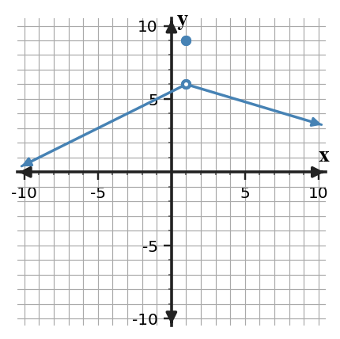
Answer / Solution: The filled point gives $f(1)=9$, while both branches approach 6; therefore the limit is 6.
Bank notes: Full section-focused AP Calculus practice form; earlier Unit 1 ideas appear only when prerequisite/integrated.
U1-S2-XP-Q04
Section 1.2 | Extra Practice | current-section | DOK 2
The graph of $f$ is shown. Determine the left-hand limit, right-hand limit, and whether the two-sided limit exists at $x=1$.
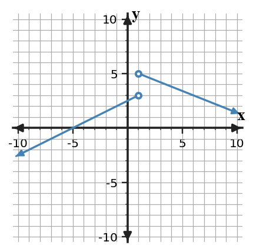
Answer / Solution: Left: 3; right: 5. Because they differ, the two-sided limit does not exist.
Bank notes: Full section-focused AP Calculus practice form; earlier Unit 1 ideas appear only when prerequisite/integrated.
U1-S3-XP-Q04
Section 1.3 | Extra Practice | current-section | DOK 2
Evaluate $\displaystyle\lim_{x\to 6}\frac{x^2-36}{x-6}$ by factoring.
Answer / Solution: Factor as $(x-6)(x+6)$ and cancel for $x\ne6$. The limit is 12.
Bank notes: Full section-focused AP Calculus practice form; earlier Unit 1 ideas appear only when prerequisite/integrated.
U1-S4-XP-Q04
Section 1.4 | Extra Practice | current-section | DOK 2
As mixed review, answer the question and check the decisive condition. The graph of $f$ is shown. Classify the discontinuity at $x=2$ and cite the one-sided-limit evidence.
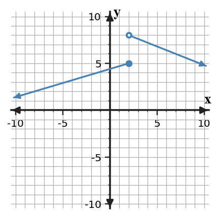
Answer / Solution: Jump discontinuity. The left-hand limit is 5 and the right-hand limit is 8, so they disagree.
Bank notes: Full section-focused AP Calculus practice form; earlier Unit 1 ideas appear only when prerequisite/integrated.
U1-S5-XP-Q04
Section 1.5 | Extra Practice | current-section | DOK 2
For $r(x)=\frac{5x+1}{x-5}$, identify the vertical asymptote and the horizontal asymptote.
Answer / Solution: Vertical: $x=5$ (no cancellation). Horizontal: $y=5$ from the ratio of leading coefficients.
Bank notes: Full section-focused AP Calculus practice form; earlier Unit 1 ideas appear only when prerequisite/integrated.
U1-S1-XP-Q05
Section 1.1 | Extra Practice | current-section | DOK 2
For $p(x)=x^2+5$, compute the average rate of change on $[4,6]$ and identify the units as output-units per input-unit.
Answer / Solution: $[p(6)-p(4)]/(6-4)=(41-21)/2=10$ output-units per input-unit.
Bank notes: Full section-focused AP Calculus practice form; earlier Unit 1 ideas appear only when prerequisite/integrated.
U1-S2-XP-Q05
Section 1.2 | Extra Practice | current-section | DOK 2
The table gives values of $g$ near $x=2$. Estimate both one-sided limits and the two-sided limit.
$x$
$g(x)$
1.9
2.95
1.99
2.995
2.01
3.005
2.1
3.05
Answer / Solution: Both sides approach 3; therefore each one-sided limit and the two-sided limit equal approximately 3.
Bank notes: Full section-focused AP Calculus practice form; earlier Unit 1 ideas appear only when prerequisite/integrated.
U1-S3-XP-Q05
Section 1.3 | Extra Practice | current-section | DOK 2
Use a conjugate to evaluate $\displaystyle\lim_{x\to 45}\frac{\sqrt{x+4}-7}{x-45}$.
Answer / Solution: Rationalization gives $1/(\sqrt{x+4}+7)$, so the limit is $1/14$.
Bank notes: Full section-focused AP Calculus practice form; earlier Unit 1 ideas appear only when prerequisite/integrated.
U1-S4-XP-Q05
Section 1.4 | Extra Practice | current-section | DOK 2
Find $c$ so that $f(x)=2x+c$ for $x\lt 2$ and $f(x)=x^2+5$ for $x\ge 2$ is continuous at $x=2$.
Answer / Solution: Set $2(2)+c=9$. Thus $c=5$.
Bank notes: Full section-focused AP Calculus practice form; earlier Unit 1 ideas appear only when prerequisite/integrated.
U1-S5-XP-Q05
Section 1.5 | Extra Practice | current-section | DOK 2
A function is continuous on $[0,9]$, with $f(0)=-2$ and $f(9)=8$. Does IVT guarantee a zero? Justify using the hypotheses.
Answer / Solution: Yes. The function is continuous on the closed interval and $0$ lies between the endpoint values, so IVT guarantees some interior point where the function equals $0$.
Bank notes: Full section-focused AP Calculus practice form; earlier Unit 1 ideas appear only when prerequisite/integrated.
U1-S1-XP-Q06
Section 1.1 | Extra Practice | current-section | DOK 2
For a function, the table lists secant slopes from $x=5$ to $x=5+h$. Predict the instantaneous rate at $x=5$ from the trend.
$h$
secant slope
1
11.000
0.5
10.500
0.1
10.100
0.02
10.020
Answer / Solution: The secant slopes approach 10, so a reasonable instantaneous-rate estimate is 10.
Bank notes: Full section-focused AP Calculus practice form; earlier Unit 1 ideas appear only when prerequisite/integrated.
U1-S2-XP-Q06
Section 1.2 | Extra Practice | current-section | DOK 2
Use the table to decide whether $\lim_{x\to 3}h(x)$ exists. State the two one-sided limits that support your decision.
$x$
$h(x)$
2.9
2.05
2.99
2.005
3.01
4.995
3.1
4.95
Answer / Solution: The left-hand limit is 2 and the right-hand limit is 5; they differ, so the two-sided limit DNE.
Bank notes: Full section-focused AP Calculus practice form; earlier Unit 1 ideas appear only when prerequisite/integrated.
U1-S3-XP-Q06
Section 1.3 | Extra Practice | current-section | DOK 2
Answer / Solution: The limit is $7/6$ because $\sin(7x)/(7x)\to1$.
Bank notes: Full section-focused AP Calculus practice form; earlier Unit 1 ideas appear only when prerequisite/integrated.
U1-S4-XP-Q07
Section 1.4 | Extra Practice | current-section | DOK 1
A function has a hole at $x=2$ where the limiting value is 7. What redefinition of $f(2)$ removes the discontinuity?
Answer / Solution: Define $f(2)=7$.
Bank notes: Full section-focused AP Calculus practice form; earlier Unit 1 ideas appear only when prerequisite/integrated.
U1-S5-XP-Q07
Section 1.5 | Extra Practice | current-section | DOK 2
As mixed review, answer the question and check the decisive condition. A function satisfies $f(1)=-3$ and $f(5)=4$, but continuity on $[1,5]$ is not known. Can IVT be used to guarantee a solution to $f(x)=0$?
Answer / Solution: No. The endpoint values bracket zero, but the continuity hypothesis on the entire interval is missing.
Bank notes: Full section-focused AP Calculus practice form; earlier Unit 1 ideas appear only when prerequisite/integrated.
U1-S1-XP-Q08
Section 1.1 | Extra Practice | current-section | DOK 2
A tank's water volume $V(t)$ is measured in liters and time $t$ in minutes. Near $t=6$, secant rates approach $-1.8$. Interpret $\lim_{h\to0}\frac{V(6+h)-V(6)}{h}=-1.8$ in context.
Answer / Solution: At about 6 minutes, the volume is decreasing at an instantaneous rate of about $1.8$ liters per minute.
Bank notes: Full section-focused AP Calculus practice form; earlier Unit 1 ideas appear only when prerequisite/integrated.
U1-S2-XP-Q08
Section 1.2 | Extra Practice | current-section | DOK 2
Suppose $\lim_{x\to 1^-}p(x)=3$ and $\lim_{x\to 1^+}p(x)=3$. What conclusion about the two-sided limit follows, and what conclusion about $p(1)$ does not follow?
Answer / Solution: The two-sided limit exists and equals 3. No value of $p(1)$ is determined by the limit statements alone.
Bank notes: Full section-focused AP Calculus practice form; earlier Unit 1 ideas appear only when prerequisite/integrated.
U1-S3-XP-Q08
Section 1.3 | Extra Practice | current-section | DOK 2
As mixed review, answer the question and check the decisive condition. Which first step is most efficient for $\displaystyle\lim_{x\to4}\frac{\sqrt{x+5}-3}{x-4}$?
Directly declare DNE
Factor the numerator as a polynomial
Multiply by the conjugate
Apply a trigonometric identity
Answer / Solution: C. Multiply by the conjugate.
Bank notes: Full section-focused AP Calculus practice form; earlier Unit 1 ideas appear only when prerequisite/integrated.
U1-S4-XP-Q08
Section 1.4 | Extra Practice | current-section | DOK 2
As mixed review, answer the question and check the decisive condition. A student checks only that $f(2)$ exists and concludes that $f$ is continuous at $x=2$. Identify the missing evidence.
Answer / Solution: The student must also verify that the two-sided limit exists and equals the function value.
Bank notes: Full section-focused AP Calculus practice form; earlier Unit 1 ideas appear only when prerequisite/integrated.
U1-S5-XP-Q08
Section 1.5 | Extra Practice | current-section | DOK 2
A student says a horizontal asymptote $y=3$ means the graph can never cross $y=3$. Evaluate the claim.
Answer / Solution: False. A horizontal asymptote describes end behavior; a function may cross the line at finite inputs.
Bank notes: Full section-focused AP Calculus practice form; earlier Unit 1 ideas appear only when prerequisite/integrated.
U1-S1-XP-Q09
Section 1.1 | Extra Practice | current-section | DOK 2
The function is not defined at $x=7$. Use the table to estimate $\lim_{x\to 7}r(x)$ and explain why undefined $r(7)$ does not by itself force DNE.
$x$
$r(x)$
6.8
-3.04
6.98
-3.004
7.02
-2.996
7.2
-2.96
Answer / Solution: The table approaches -3; a missing value at the point does not determine nearby behavior, so the limit is approximately -3.
Bank notes: Full section-focused AP Calculus practice form; earlier Unit 1 ideas appear only when prerequisite/integrated.
U1-S2-XP-Q09
Section 1.2 | Extra Practice | current-section | DOK 3
Suppose $\lim_{x\to 2^-}r(x)=3$ and $\lim_{x\to 2^+}r(x)=4$. A student reports $\lim_{x\to 2}r(x)=3.5$. Identify the error.
Answer / Solution: A two-sided limit is not the average of unequal one-sided limits. Because the one-sided limits differ, the two-sided limit does not exist.
Bank notes: Full section-focused AP Calculus practice form; earlier Unit 1 ideas appear only when prerequisite/integrated.
U1-S3-XP-Q09
Section 1.3 | Extra Practice | current-section | DOK 2
A direct substitution into a rational limit at $x=7$ produces $0/0$. Explain what this result means and what it does not mean.
Answer / Solution: $0/0$ is an indeterminate form signaling that more analysis/simplification is needed. It is not the limit value and does not by itself mean DNE.
Bank notes: Full section-focused AP Calculus practice form; earlier Unit 1 ideas appear only when prerequisite/integrated.
U1-S4-XP-Q09
Section 1.4 | Extra Practice | current-section | DOK 1
The left-hand limit at $x=2$ is 5 and the right-hand limit is 7. Which continuity condition fails first?
Answer / Solution: The two-sided limit does not exist, so continuity condition 2 fails.
Bank notes: Full section-focused AP Calculus practice form; earlier Unit 1 ideas appear only when prerequisite/integrated.
U1-S5-XP-Q09
Section 1.5 | Extra Practice | current-section | DOK 2
A student says a vertical asymptote at $x=5$ means $f(5)=\infty$. Correct the statement.
Answer / Solution: Infinity is not a real function value. A vertical asymptote describes unbounded behavior as $x$ approaches 5; $f(5)$ may be undefined or separately defined.
Bank notes: Full section-focused AP Calculus practice form; earlier Unit 1 ideas appear only when prerequisite/integrated.
U1-S1-XP-Q10
Section 1.1 | Extra Practice | current-section | DOK 3
A student argues, 'Because $q(6)=9$, $\lim_{x\to 6}q(x)$ must equal $9$.' Evaluate the reasoning and state what evidence would actually be needed.
Answer / Solution: The reasoning is invalid. The limit depends on values of $q(x)$ for inputs near the point from both sides; a graph, table, or formula describing that nearby behavior is needed.
Bank notes: Full section-focused AP Calculus practice form; earlier Unit 1 ideas appear only when prerequisite/integrated.
U1-S2-XP-Q10
Section 1.2 | Extra Practice | current-section | DOK 2
A calculator table near $x=3$ uses the inputs 3.1, 3.01, and 3.001 only. Explain why it cannot by itself justify a two-sided limit estimate.
Answer / Solution: All sampled inputs lie to the right. A two-sided estimate also requires evidence from inputs less than the target.
Bank notes: Full section-focused AP Calculus practice form; earlier Unit 1 ideas appear only when prerequisite/integrated.
U1-S3-XP-Q10
Section 1.3 | Extra Practice | current-section | DOK 3
Compare two approaches to $\displaystyle\lim_{x\to 7}\frac{x^2-49}{x-7}$: direct substitution and factoring. Which yields a valid evaluation, and why?
Answer / Solution: Direct substitution only identifies $0/0$. Factoring produces $x+7$ for nearby inputs, so the limit is 14. The factoring approach completes the evaluation.
Bank notes: Full section-focused AP Calculus practice form; earlier Unit 1 ideas appear only when prerequisite/integrated.
U1-S4-XP-Q10
Section 1.4 | Extra Practice | current-section | DOK 2
As mixed review, answer the question and check the decisive condition. A function is continuous on $(-\infty,2)$ and $(2,\infty)$ and has a removable discontinuity at $x=2$. Write a change that could make it continuous everywhere.
Answer / Solution: Define or redefine the point value to equal the common two-sided limit at that input.
Bank notes: Full section-focused AP Calculus practice form; earlier Unit 1 ideas appear only when prerequisite/integrated.
U1-S5-XP-Q10
Section 1.5 | Extra Practice | current-section | DOK 3
For $q(x)=\frac{x+1}{(x-5)^2}$, describe the sign of the infinite limit as $x\to 5$ when 5+1 is positive.
Answer / Solution: Because the squared denominator approaches $0$ through positive values and the numerator approaches a positive number, the function approaches $+\infty$ from both sides.
Bank notes: Full section-focused AP Calculus practice form; earlier Unit 1 ideas appear only when prerequisite/integrated.
U1-S1-XP-Q11
Section 1.1 | Extra Practice | current-section | DOK 1
As mixed review, answer the question and check the decisive condition. Which description best matches the meaning of a finite two-sided limit $\lim_{x\to a}f(x)=L$?
The value of the function at the input
The value approached by nearby outputs
The largest nearby output
The average of two function values
Answer / Solution: B. The value approached by nearby outputs.
Bank notes: Full section-focused AP Calculus practice form; earlier Unit 1 ideas appear only when prerequisite/integrated.
U1-S2-XP-Q11
Section 1.2 | Extra Practice | current-section | DOK 1
As mixed review, answer the question and check the decisive condition. Which condition is necessary for a finite two-sided limit to exist?
The function must be defined at the point
The left- and right-hand limits must be equal
The left- and right-hand function values must be equal
The graph must cross the vertical line
Answer / Solution: B.
Bank notes: Full section-focused AP Calculus practice form; earlier Unit 1 ideas appear only when prerequisite/integrated.
U1-S3-XP-Q11
Section 1.3 | Extra Practice | current-section | DOK 2
As mixed review, answer the question and check the decisive condition. Evaluate $\displaystyle\lim_{x\to0}\frac{1-\cos x}{x}$ using a valid identity or rationalization.
Bank notes: Full section-focused AP Calculus practice form; earlier Unit 1 ideas appear only when prerequisite/integrated.
U1-S4-XP-Q11
Section 1.4 | Extra Practice | current-section | DOK 1
As mixed review, answer the question and check the decisive condition. Which description identifies a jump discontinuity?
The one-sided limits are finite and unequal
The two-sided limit exists but differs from the point value
The function is a polynomial
The function approaches the same value from both sides
Answer / Solution: A.
Bank notes: Full section-focused AP Calculus practice form; earlier Unit 1 ideas appear only when prerequisite/integrated.
U1-S5-XP-Q11
Section 1.5 | Extra Practice | current-section | DOK 1
As mixed review, answer the question and check the decisive condition. Which hypothesis is essential for applying the Intermediate Value Theorem on $[a,b]$?
Continuity on the closed interval
Differentiability at every point
Equal endpoint values
A vertical asymptote inside the interval
Answer / Solution: A. Continuity on the closed interval.
Bank notes: Full section-focused AP Calculus practice form; earlier Unit 1 ideas appear only when prerequisite/integrated.
U1-S1-XP-Q12
Section 1.1 | Extra Practice | current-section | DOK 2
Evaluate $\lim_{x\to 4}(3x+6)$ and state why no table is necessary for this polynomial expression.
Answer / Solution: The limit is 18. Polynomial functions are continuous, so direct substitution determines the limit.
Bank notes: Full section-focused AP Calculus practice form; earlier Unit 1 ideas appear only when prerequisite/integrated.
U1-S2-XP-Q12
Section 1.2 | Extra Practice | current-section | DOK 2
At $x=1$ the graph approaches 2 from the left and 7 from the right, while $f(1)=10$. List the three values/limit conclusions separately.
Answer / Solution: $\lim_{x\to 1^-}f(x)=2$, $\lim_{x\to 1^+}f(x)=7$, $f(1)=10$, and the two-sided limit DNE because the one-sided limits disagree.
Bank notes: Full section-focused AP Calculus practice form; earlier Unit 1 ideas appear only when prerequisite/integrated.
U1-S3-XP-Q12
Section 1.3 | Extra Practice | current-section | DOK 3
Suppose $|f(x)-6|\le |x|$ for $x$ near $0$. Use squeeze reasoning to determine $\lim_{x\to0}f(x)$.
Answer / Solution: Because $-|x|\le f(x)-6\le|x|$ and both bounds approach $0$, $f(x)-6\to0$; hence the limit is 6.
Bank notes: Full section-focused AP Calculus practice form; earlier Unit 1 ideas appear only when prerequisite/integrated.
U1-S4-XP-Q12
Section 1.4 | Extra Practice | current-section | DOK 2
As mixed review, answer the question and check the decisive condition. Suppose $f$ is continuous on $[2,6]$. What endpoint-sided limit condition must hold at the left endpoint?
Answer / Solution: Right-continuity is required: $\lim_{x\to 2^+}f(x)=f(2)$.
Bank notes: Full section-focused AP Calculus practice form; earlier Unit 1 ideas appear only when prerequisite/integrated.
U1-S5-XP-Q12
Section 1.5 | Extra Practice | current-section | DOK 2
If $\lim_{x\to-\infty}f(x)=3$ and $\lim_{x\to\infty}f(x)=4$, state both end-behavior conclusions and the corresponding horizontal asymptotes.
Answer / Solution: As $x\to-\infty$, $f(x)\to3$ so $y=3$ is a left-end horizontal asymptote; as $x\to\infty$, $f(x)\to4$ so $y=4$ is a right-end horizontal asymptote.
Bank notes: Full section-focused AP Calculus practice form; earlier Unit 1 ideas appear only when prerequisite/integrated.
U1-S1-XP-Q13
Section 1.1 | Extra Practice | current-section | DOK 2
The position of an object is $s(t)=t^2-2t$ meters. Compute the average velocity from $t=5$ to $t=8$.
Answer / Solution: $[s(8)-s(5)]/(8-5)=(48-15)/3=11$ meters per second.
Bank notes: Full section-focused AP Calculus practice form; earlier Unit 1 ideas appear only when prerequisite/integrated.
U1-S2-XP-Q13
Section 1.2 | Extra Practice | current-section | DOK 2
The table gives $f(2-0.01)=2.99$ and $f(2+0.01)=3.01$, but the next closest pair is 2.999 and 3.001. Describe the numerical evidence for the limit.
Answer / Solution: Values from both sides are getting closer to 3 as inputs approach 2, supporting $\lim_{x\to 2}f(x)=3$.
Bank notes: Full section-focused AP Calculus practice form; earlier Unit 1 ideas appear only when prerequisite/integrated.
U1-S3-XP-Q13
Section 1.3 | Extra Practice | current-section | DOK 2
The functions $f$ and $g$ have limits $\lim_{x\to 5}f(x)=7$ and $\lim_{x\to 5}g(x)=8$. Evaluate $\lim_{x\to 5}[2f(x)-g(x)]$ using limit laws.
Answer / Solution: By linearity, the limit is $2(7)-(8)=6$.
Bank notes: Full section-focused AP Calculus practice form; earlier Unit 1 ideas appear only when prerequisite/integrated.
U1-S4-XP-Q13
Section 1.4 | Extra Practice | current-section | DOK 3
As mixed review, answer the question and check the decisive condition. A graph has an infinite discontinuity at $x=2$. Can changing only the value $f(2)$ make the function continuous there? Explain.
Answer / Solution: No. Changing one point cannot alter unbounded nearby behavior; the two-sided finite limit condition still fails.
Bank notes: Full section-focused AP Calculus practice form; earlier Unit 1 ideas appear only when prerequisite/integrated.
U1-S5-XP-Q13
Section 1.5 | Extra Practice | current-section | DOK 3
The denominator of a rational function is zero at $x=5$, but the same factor cancels with the numerator. Must $x=5$ be a vertical asymptote? Explain.
Answer / Solution: No. Cancellation can produce a removable discontinuity instead. One must examine the simplified nearby expression and the resulting limit.
Bank notes: Full section-focused AP Calculus practice form; earlier Unit 1 ideas appear only when prerequisite/integrated.
U1-S1-XP-Q14
Section 1.1 | Extra Practice | current-section | DOK 1
Suppose every sufficiently close value of $f(x)$ on both sides of $x=5$ is close to 2, but $f(5)=7$. Which quantity is controlled by the nearby values: $f(5)$ or $\lim_{x\to 5}f(x)$? State the limit.
Answer / Solution: The nearby values control the limit, so $\lim_{x\to 5}f(x)=2$. The point value remains 7.
Bank notes: Full section-focused AP Calculus practice form; earlier Unit 1 ideas appear only when prerequisite/integrated.
U1-S2-XP-Q14
Section 1.2 | Extra Practice | current-section | DOK 1
A function is undefined at $x=3$, but both one-sided limits equal 3. Which statement is correct?
The two-sided limit DNE
The two-sided limit equals the common one-sided value
The left-hand limit is undefined
The right-hand limit equals the function value
Answer / Solution: B.
Bank notes: Full section-focused AP Calculus practice form; earlier Unit 1 ideas appear only when prerequisite/integrated.
U1-S3-XP-Q14
Section 1.3 | Extra Practice | current-section | DOK 3
If $\lim_{x\to 5}f(x)=2$ and $\lim_{x\to 5}g(x)=0$, can the quotient law alone determine $\lim_{x\to 5}f(x)/g(x)$? Explain.
Answer / Solution: No. The quotient law requires the denominator limit to be nonzero. Additional information about the sign/behavior of $g$ is needed.
Bank notes: Full section-focused AP Calculus practice form; earlier Unit 1 ideas appear only when prerequisite/integrated.
U1-S4-XP-Q14
Section 1.4 | Extra Practice | current-section | DOK 2
As mixed review, answer the question and check the decisive condition. For $p(x)=\frac{x^2-4}{x-2}$ with its original domain, classify the discontinuity at $x=2$ and give the limiting value.
Answer / Solution: The discontinuity is removable. The simplified nearby expression is $x+2$, so the limiting value is 4.
Bank notes: Full section-focused AP Calculus practice form; earlier Unit 1 ideas appear only when prerequisite/integrated.
U1-S5-XP-Q14
Section 1.5 | Extra Practice | current-section | DOK 2
A continuous function satisfies $f(2)=0$ and $f(8)=8$. List two different target values that IVT is guaranteed to attain between these outputs.
Answer / Solution: For example, 2 and 5; each lies strictly between 0 and 8.
Bank notes: Full section-focused AP Calculus practice form; earlier Unit 1 ideas appear only when prerequisite/integrated.
U1-S1-XP-Q15
Section 1.1 | Extra Practice | current-section | DOK 2
A graph shows an open circle at $(6,3)$ and a filled point at $(6,7)$, with the curve approaching the open circle from both sides. Write three separate statements for the left-hand approach, right-hand approach, and function value.
Answer / Solution: $\lim_{x\to 6^-}f(x)=3$, $\lim_{x\to 6^+}f(x)=3$, and $f(6)=7$.
Bank notes: Full section-focused AP Calculus practice form; earlier Unit 1 ideas appear only when prerequisite/integrated.
U1-S2-XP-Q15
Section 1.2 | Extra Practice | current-section | DOK 2
Use the graph to write a complete two-sided limit statement at $x=4$ and cite the behavior of both branches.
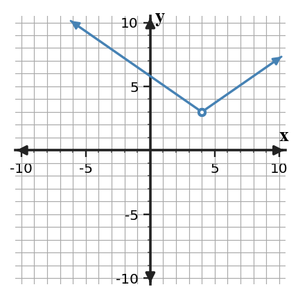
Answer / Solution: Both branches approach 3, so $\lim_{x\to 4}f(x)=3$.
Bank notes: Full section-focused AP Calculus practice form; earlier Unit 1 ideas appear only when prerequisite/integrated.
U1-S3-XP-Q15
Section 1.3 | Extra Practice | current-section | DOK 2
Select the most efficient routine method for $\displaystyle\lim_{x\to 6}\frac{x^2-36}{x-6}$ and give the limit.
Answer / Solution: Factor and cancel the common factor; the limit is 12.
Bank notes: Full section-focused AP Calculus practice form; earlier Unit 1 ideas appear only when prerequisite/integrated.
U1-S4-XP-Q15
Section 1.4 | Extra Practice | current-section | DOK 1
The function $q$ is continuous at $x=2$ and $q(2)=6$. Determine $\lim_{x\to 2}q(x)$ and name the continuity fact used.
Answer / Solution: The limit is 6; continuity at the point means the limit equals the function value.
Bank notes: Full section-focused AP Calculus practice form; earlier Unit 1 ideas appear only when prerequisite/integrated.
U1-S5-XP-Q15
Section 1.5 | Extra Practice | current-section | DOK 1
A function has $\lim_{x\to 5^-}f(x)=-\infty$ and $\lim_{x\to 5^+}f(x)=+\infty$. What asymptotic conclusion is supported?
Answer / Solution: $x=5$ is a vertical asymptote; the opposite signs describe the two sides but do not prevent the asymptote conclusion.
Bank notes: Full section-focused AP Calculus practice form; earlier Unit 1 ideas appear only when prerequisite/integrated.
U1-S1-XP-Q16
Section 1.1 | Extra Practice | current-section | DOK 2
From the graph, estimate $\lim_{x\to 3}f(x)$ and identify the graphical evidence used.
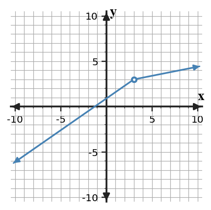
Answer / Solution: Both branches approach the same height 3, so the limit is 3.
Bank notes: Full section-focused AP Calculus practice form; earlier Unit 1 ideas appear only when prerequisite/integrated.
U1-S2-XP-Q16
Section 1.2 | Extra Practice | current-section | DOK 2
For a two-sided table centered at $x=1$, one left-side sequence approaches 3 while one right-side sequence approaches 6. What should be reported for the two-sided limit?
Answer / Solution: DNE. Different one-sided limiting values prevent a two-sided limit.
Bank notes: Full section-focused AP Calculus practice form; earlier Unit 1 ideas appear only when prerequisite/integrated.
U1-S3-XP-Q16
Section 1.3 | Extra Practice | current-section | DOK 2
Evaluate $\displaystyle\lim_{x\to0}\frac{\tan(6x)}{x}$ using $\tan u=\sin u/\cos u$ and the standard trigonometric limits.
Bank notes: Full section-focused AP Calculus practice form; earlier Unit 1 ideas appear only when prerequisite/integrated.
U1-S4-XP-Q16
Section 1.4 | Extra Practice | current-section | DOK 3
At $x=2$, a table approaches 5 from both sides while a graph shows a filled point at height 9. Reconcile the representations and classify the discontinuity.
Answer / Solution: The limit is 5 while the function value is 9; the mismatch creates a removable discontinuity.
Bank notes: Full section-focused AP Calculus practice form; earlier Unit 1 ideas appear only when prerequisite/integrated.
U1-S5-XP-Q16
Section 1.5 | Extra Practice | current-section | DOK 3
As mixed review, answer the question and check the decisive condition. The function $f$ is continuous on $[1,4]$. A student knows $f(1)=2$ and $f(4)=7$ and claims IVT guarantees a point where $f(c)=9$. Critique the conclusion.
Answer / Solution: The hypotheses include continuity, but $9$ is not between $2$ and $7$. IVT does not guarantee that target value.
Bank notes: Full section-focused AP Calculus practice form; earlier Unit 1 ideas appear only when prerequisite/integrated.
U1-S1-XP-Q17
Section 1.1 | Extra Practice | current-section | DOK 2
A motion experiment reports the average velocities from $t=6$ to $t=6+h$. Use the table to estimate the instantaneous velocity at $t=6$.
$h$
average velocity (m/s)
1
2.500
0.4
1.900
0.1
1.600
0.04
1.540
Answer / Solution: The values approach $1.5$, so the instantaneous velocity is approximately $1.5$ m/s.
Bank notes: Full section-focused AP Calculus practice form; earlier Unit 1 ideas appear only when prerequisite/integrated.
U1-S2-XP-Q17
Section 1.2 | Extra Practice | current-section | DOK 3
A graph and a table are intended to represent the same function near $x=2$. The graph approaches 3, while increasingly close table values approach 5. What is the mathematically responsible conclusion?
Answer / Solution: The representations conflict, so the claimed model/data should be checked. One should not simply choose a limit until the discrepancy is resolved.
Bank notes: Full section-focused AP Calculus practice form; earlier Unit 1 ideas appear only when prerequisite/integrated.
U1-S3-XP-Q17
Section 1.3 | Extra Practice | current-section | DOK 3
A student cancels $x-7$ in $\frac{(x-7)(x+1)}{x-7}$ and then claims the original function is defined at $x=7$. Correct the claim while preserving the valid limit step.
Answer / Solution: Cancellation gives an equivalent expression only for $x\ne7$. The original function remains undefined at $x=7$, but its limit equals $8$ because nearby values match $x+1$.
Bank notes: Full section-focused AP Calculus practice form; earlier Unit 1 ideas appear only when prerequisite/integrated.
U1-S4-XP-Q17
Section 1.4 | Extra Practice | current-section | DOK 2
A piecewise function has matching one-sided limits at $x=2$, both equal to 7, but its definition assigns no value at $x=2$. Which continuity conditions hold and which fails?
Answer / Solution: The two-sided limit exists, but the function value does not exist. Condition 1 fails; consequently the equality condition cannot be satisfied.
Bank notes: Full section-focused AP Calculus practice form; earlier Unit 1 ideas appear only when prerequisite/integrated.
U1-S5-XP-Q17
Section 1.5 | Extra Practice | current-section | DOK 3
As mixed review, answer the question and check the decisive condition. Suppose $f$ is continuous on $[-1,3]$ and $f(-1)f(3)\lt0$. Use IVT to justify a conclusion about zeros.
Answer / Solution: The endpoint values have opposite signs, so $0$ lies between them. IVT guarantees at least one $c\in(-1,3)$ with $f(c)=0$.
Bank notes: Full section-focused AP Calculus practice form; earlier Unit 1 ideas appear only when prerequisite/integrated.
U1-S1-XP-Q18
Section 1.1 | Extra Practice | current-section | DOK 1
Choose the statement that is equivalent to 'for inputs arbitrarily close to $x=4$, the values $f(x)$ can be made arbitrarily close to $6$' in the informal limit sense.
$f(4)=6$
$\lim_{x\to 4}f(x)=6$
$f(x)=4$ for every $x$
$\lim_{x\to 6}f(x)=4$
Answer / Solution: B.
Bank notes: Full section-focused AP Calculus practice form; earlier Unit 1 ideas appear only when prerequisite/integrated.
U1-S2-XP-Q18
Section 1.2 | Extra Practice | current-section | DOK 2
If $f(x)$ approaches 3 from both sides of $x=3$ but oscillates slightly around 3, does crossing above and below 3 prevent the limit from being 3? Explain.
Answer / Solution: No. A function may approach a limit while taking values on both sides of it; the key is that the values become arbitrarily close to the same number.
Bank notes: Full section-focused AP Calculus practice form; earlier Unit 1 ideas appear only when prerequisite/integrated.
U1-S3-XP-Q18
Section 1.3 | Extra Practice | current-section | DOK 2
Evaluate $\displaystyle\lim_{x\to 48}\frac{x-48}{\sqrt{x+1}-7}$ using an appropriate algebraic transformation.
Answer / Solution: Multiply by the conjugate. The expression simplifies to $\sqrt{x+1}+7$ for nearby $x$, so the limit is 14.
Bank notes: Full section-focused AP Calculus practice form; earlier Unit 1 ideas appear only when prerequisite/integrated.
U1-S4-XP-Q18
Section 1.4 | Extra Practice | current-section | DOK 2
Determine whether the polynomial $r(x)=x^3-5x+2$ is continuous at $x=2$ and justify without graphing.
Answer / Solution: Yes. Polynomials are continuous for every real input, so direct substitution gives the limit and it equals the function value.
Bank notes: Full section-focused AP Calculus practice form; earlier Unit 1 ideas appear only when prerequisite/integrated.
U1-S5-XP-Q18
Section 1.5 | Extra Practice | current-section | DOK 2
For $m(x)=\frac{6}{x-5}+3$, state $\lim_{x\to\infty}m(x)$ and the associated horizontal asymptote.
Answer / Solution: The reciprocal term approaches $0$, so the limit is 3 and the horizontal asymptote is $y=3$.
Bank notes: Full section-focused AP Calculus practice form; earlier Unit 1 ideas appear only when prerequisite/integrated.
U1-S1-XP-Q19
Section 1.1 | Extra Practice | current-section | DOK 3
As mixed review, answer the question and check the decisive condition. You want to estimate a limit numerically at $x=2$. Which sampling plan is most informative, and why: inputs only to the right, inputs only to the left, or inputs approaching $2$ from both sides?
Answer / Solution: Use inputs approaching from both sides. A two-sided limit requires compatible left- and right-hand behavior.
Bank notes: Full section-focused AP Calculus practice form; earlier Unit 1 ideas appear only when prerequisite/integrated.
U1-S2-XP-Q19
Section 1.2 | Extra Practice | current-section | DOK 2
State the order in which you would read a graph to decide $\lim_{x\to 4}f(x)$ when a filled point is also shown at $x=4$.
Answer / Solution: Read the branch behavior from the left and right first; compare the one-sided limits. The filled point gives $f(a)$ and is considered separately.
Bank notes: Full section-focused AP Calculus practice form; earlier Unit 1 ideas appear only when prerequisite/integrated.
U1-S3-XP-Q19
Section 1.3 | Extra Practice | current-section | DOK 1
As mixed review, answer the question and check the decisive condition. Which statement best describes the role of the Squeeze Theorem?
It replaces every indeterminate limit with zero
It determines a limit when a function is trapped between two functions with the same limiting value
It applies only to rational functions
It requires the function to equal both bounding functions
Answer / Solution: B.
Bank notes: Full section-focused AP Calculus practice form; earlier Unit 1 ideas appear only when prerequisite/integrated.
U1-S4-XP-Q19
Section 1.4 | Extra Practice | current-section | DOK 3
As mixed review, answer the question and check the decisive condition. A student calls a discontinuity 'removable' because $f(2)$ is undefined. Why is that evidence insufficient?
Answer / Solution: Undefined point value alone does not identify the nearby behavior. A removable discontinuity additionally requires a finite two-sided limit so a single point definition can repair continuity.
Bank notes: Full section-focused AP Calculus practice form; earlier Unit 1 ideas appear only when prerequisite/integrated.
U1-S5-XP-Q19
Section 1.5 | Extra Practice | current-section | DOK 1
A graph appears to approach $y=3$ for large positive $x$. What additional symbolic statement precisely records that right-end behavior?
Answer / Solution: $\lim_{x\to\infty}f(x)=3$.
Bank notes: Full section-focused AP Calculus practice form; earlier Unit 1 ideas appear only when prerequisite/integrated.
U1-S1-XP-Q20
Section 1.1 | Extra Practice | current-section | DOK 2
The table gives nearby values and the function value at the center is $f(a)=9$.
Estimate the limit from the table.
Explain whether the point value changes your estimate.
$x$
$f(x)$
4.9
3.80
4.99
3.98
5.01
4.02
5.1
4.20
Answer / Solution: (a) The values approach $4$, so the limit is about $4$. (b) No; the isolated point value $9$ does not change the nearby trend.
Bank notes: Full section-focused AP Calculus practice form; earlier Unit 1 ideas appear only when prerequisite/integrated.
U1-S2-XP-Q20
Section 1.2 | Extra Practice | current-section | DOK 2
Use the numerical representation to answer both parts.
Estimate $\lim_{x\to 1^-}f(x)$.
Estimate $\lim_{x\to 1^+}f(x)$ and decide the two-sided limit.
$x$
$f(x)$
0.9
2.90
0.99
2.99
1.01
3.01
1.1
3.10
Answer / Solution: (a) 3. (b) 3; since the one-sided limits agree, the two-sided limit is 3.
Bank notes: Full section-focused AP Calculus practice form; earlier Unit 1 ideas appear only when prerequisite/integrated.
U1-S3-XP-Q20
Section 1.3 | Extra Practice | current-section | DOK 3
As mixed review, answer the question and check the decisive condition. For the three limits below, choose a method before computing:
$\lim_{x\to2}(x^3+1)$
$\lim_{x\to3}\frac{x^2-9}{x-3}$
$\lim_{x\to0}\frac{\sqrt{1+x}-1}{x}$
Answer / Solution:
Direct substitution: $9$.
Factoring: $6$.
Conjugate rationalization: $1/2$.
Bank notes: Full section-focused AP Calculus practice form; earlier Unit 1 ideas appear only when prerequisite/integrated.
U1-S4-XP-Q20
Section 1.4 | Extra Practice | current-section | DOK 3
As mixed review, answer the question and check the decisive condition. Analyze the piecewise function at its boundary: $f(x)=x+2$ for $x\lt2$ and $f(x)=x^2-k$ for $x\ge2$.
Find $k$ for continuity.
If $k=2$, classify the discontinuity at $x=2$.
Answer / Solution: (a) Left limit is $4$ and right/function value is $4-k$, so $k=0$. (b) With $k=2$, the right-hand limit is $2$ while the left is $4$, so there is a jump discontinuity.
Bank notes: Full section-focused AP Calculus practice form; earlier Unit 1 ideas appear only when prerequisite/integrated.
U1-S5-XP-Q20
Section 1.5 | Extra Practice | current-section | DOK 3
As mixed review, answer the question and check the decisive condition. A function $f$ is continuous on $[0,6]$, with $f(0)=-4$ and $f(6)=3$, and a separate rational function $r$ has a vertical asymptote at $x=2$.
State an IVT-guaranteed value for $f$.
Explain why the asymptote of $r$ has no bearing on applying IVT to $f$.
Answer / Solution: (a) For example, $0$: some $c\in(0,6)$ has $f(c)=0$. (b) IVT is applied to the specified continuous function and interval; unrelated behavior of another function is irrelevant.
Bank notes: Full section-focused AP Calculus practice form; earlier Unit 1 ideas appear only when prerequisite/integrated.
Check Your Understanding
U1-S1-CYU-Q01
Section 1.1 | Check Your Understanding | current-section | DOK 1
Write in words what $\lim_{x\to2}f(x)=21$ communicates about nearby outputs.
Answer / Solution: Nearby outputs approach 21 as $x$ approaches $2$; this does not specify $f(2)$.
U1-S2-CYU-Q01
Section 1.2 | Check Your Understanding | current-section | DOK 1
State $\lim_{x\to 1^-}f(x)$ if the graph approaches 3 from the left.
Answer / Solution: 3.
U1-S3-CYU-Q01
Section 1.3 | Check Your Understanding | current-section | DOK 1
Evaluate $\lim_{x\to 3}(x^2+2)$.
Answer / Solution: 11.
U1-S4-CYU-Q01
Section 1.4 | Check Your Understanding | current-section | DOK 1
List the three conditions for continuity at a point.
Answer / Solution: The function value exists; the two-sided limit exists; the two are equal.
U1-S5-CYU-Q01
Section 1.5 | Check Your Understanding | current-section | DOK 1
Interpret $\lim_{x\to 2^+}f(x)=+\infty$ and name the associated vertical line.
Answer / Solution: $f(x)$ increases without bound from the right; $x=2$ is a vertical asymptote.
U1-S1-CYU-Q02
Section 1.1 | Check Your Understanding | current-section | DOK 2
For $f(x)=x^2+20$ compute the average rate of change from $x=1$ to $x=3$.
Answer / Solution: $4$.
U1-S2-CYU-Q02
Section 1.2 | Check Your Understanding | current-section | DOK 1
State $\lim_{x\to 1^+}f(x)$ if nearby right-side values approach 0.
Answer / Solution: 0.
U1-S3-CYU-Q02
Section 1.3 | Check Your Understanding | current-section | DOK 2
Evaluate $\lim_{x\to 3}\frac{x^2-9}{x-3}$.
Answer / Solution: 6 after factoring.
U1-S4-CYU-Q02
Section 1.4 | Check Your Understanding | current-section | DOK 1
Both one-sided limits at $x=1$ equal 2 but $f(1)=5. Classify the discontinuity.\lt /div\gt
\lt div class="solution"\gt \lt strong\gt Answer / Solution:\lt /strong\gt Removable discontinuity.\lt /div\gt
\lt /article\gt
\lt article class="assessment-card" id="U1-S5-CYU-Q02" data-source-id="U1-S5-CYU-Q02" data-section="1.5" data-destination="cyu" data-retrieval-role="current-section" data-dok="1"\gt
\lt div class="problem-number"\gt U1-S5-CYU-Q02\lt /div\gt
\lt div class="problem-meta"\gt Section 1.5 | Check Your Understanding | current-section | DOK 1\lt /div\gt
\lt div class="question-body"\gt If $\lim_{x\to\infty}g(x)=0$ state the horizontal asymptote.\lt /div\gt
\lt div class="solution"\gt \lt strong\gt Answer / Solution:\lt /strong\gt $y=0$.\lt /div\gt
\lt /article\gt
\lt article class="assessment-card" id="U1-S1-CYU-Q03" data-source-id="U1-S1-CYU-Q03" data-section="1.1" data-destination="cyu" data-retrieval-role="current-section" data-dok="1"\gt
\lt div class="problem-number"\gt U1-S1-CYU-Q03\lt /div\gt
\lt div class="problem-meta"\gt Section 1.1 | Check Your Understanding | current-section | DOK 1\lt /div\gt
\lt div class="question-body"\gt A table near $x=4$ approaches 22 from both sides while $f(4)$ is undefined. State the limit.\lt /div\gt
\lt div class="solution"\gt \lt strong\gt Answer / Solution:\lt /strong\gt $\lim_{x\to4}f(x)=22$.\lt /div\gt
\lt /article\gt
\lt article class="assessment-card" id="U1-S2-CYU-Q03" data-source-id="U1-S2-CYU-Q03" data-section="1.2" data-destination="cyu" data-retrieval-role="current-section" data-dok="1"\gt
\lt div class="problem-number"\gt U1-S2-CYU-Q03\lt /div\gt
\lt div class="problem-meta"\gt Section 1.2 | Check Your Understanding | current-section | DOK 1\lt /div\gt
\lt div class="question-body"\gt The left- and right-hand limits at $x=1$ both equal 5. Determine the two-sided limit.\lt /div\gt
\lt div class="solution"\gt \lt strong\gt Answer / Solution:\lt /strong\gt 5.\lt /div\gt
\lt /article\gt
\lt article class="assessment-card" id="U1-S3-CYU-Q03" data-source-id="U1-S3-CYU-Q03" data-section="1.3" data-destination="cyu" data-retrieval-role="current-section" data-dok="2"\gt
\lt div class="problem-number"\gt U1-S3-CYU-Q03\lt /div\gt
\lt div class="problem-meta"\gt Section 1.3 | Check Your Understanding | current-section | DOK 2\lt /div\gt
\lt div class="question-body"\gt Evaluate $\lim_{x\to0}\frac{\sin(2x)}{x}$.\lt /div\gt
\lt div class="solution"\gt \lt strong\gt Answer / Solution:\lt /strong\gt 2.\lt /div\gt
\lt /article\gt
\lt article class="assessment-card" id="U1-S4-CYU-Q03" data-source-id="U1-S4-CYU-Q03" data-section="1.4" data-destination="cyu" data-retrieval-role="current-section" data-dok="1"\gt
\lt div class="problem-number"\gt U1-S4-CYU-Q03\lt /div\gt
\lt div class="problem-meta"\gt Section 1.4 | Check Your Understanding | current-section | DOK 1\lt /div\gt
\lt div class="question-body"\gt The left-hand limit at $x=1$ is 1 and the right-hand limit is 3. Classify the discontinuity.\lt /div\gt
\lt div class="solution"\gt \lt strong\gt Answer / Solution:\lt /strong\gt Jump discontinuity.\lt /div\gt
\lt /article\gt
\lt article class="assessment-card" id="U1-S5-CYU-Q03" data-source-id="U1-S5-CYU-Q03" data-section="1.5" data-destination="cyu" data-retrieval-role="current-section" data-dok="2"\gt
\lt div class="problem-number"\gt U1-S5-CYU-Q03\lt /div\gt
\lt div class="problem-meta"\gt Section 1.5 | Check Your Understanding | current-section | DOK 2\lt /div\gt
\lt div class="question-body"\gt A continuous function on $[1,5]$ has endpoint values -2 and 4. Does IVT guarantee a zero?\lt /div\gt
\lt div class="solution"\gt \lt strong\gt Answer / Solution:\lt /strong\gt Yes; zero lies between the endpoint values and continuity holds on the interval.\lt /div\gt
\lt /article\gt
\lt article class="assessment-card" id="U1-S1-CYU-Q04" data-source-id="U1-S1-CYU-Q04" data-section="1.1" data-destination="cyu" data-retrieval-role="current-section" data-dok="2"\gt
\lt div class="problem-number"\gt U1-S1-CYU-Q04\lt /div\gt
\lt div class="problem-meta"\gt Section 1.1 | Check Your Understanding | current-section | DOK 2\lt /div\gt
\lt div class="question-body"\gt Secant slopes near $x=1$ are 4.0, 3.5, and 3.2 as intervals shrink. Give a reasonable instantaneous-rate estimate.\lt /div\gt
\lt div class="solution"\gt \lt strong\gt Answer / Solution:\lt /strong\gt Approximately 3.0 to 3.3; the trend is stabilizing near that range.\lt /div\gt
\lt /article\gt
\lt article class="assessment-card" id="U1-S2-CYU-Q04" data-source-id="U1-S2-CYU-Q04" data-section="1.2" data-destination="cyu" data-retrieval-role="current-section" data-dok="2"\gt
\lt div class="problem-number"\gt U1-S2-CYU-Q04\lt /div\gt
\lt div class="problem-meta"\gt Section 1.2 | Check Your Understanding | current-section | DOK 2\lt /div\gt
\lt div class="question-body"\gt At $x=1$ the left-hand limit is 1 and the right-hand limit is 4. Determine the two-sided limit.\lt /div\gt
\lt div class="solution"\gt \lt strong\gt Answer / Solution:\lt /strong\gt DNE because the one-sided limits disagree.\lt /div\gt
\lt /article\gt
\lt article class="assessment-card" id="U1-S3-CYU-Q04" data-source-id="U1-S3-CYU-Q04" data-section="1.3" data-destination="cyu" data-retrieval-role="current-section" data-dok="2"\gt
\lt div class="problem-number"\gt U1-S3-CYU-Q04\lt /div\gt
\lt div class="problem-meta"\gt Section 1.3 | Check Your Understanding | current-section | DOK 2\lt /div\gt
\lt div class="question-body"\gt A substitution into a limit produces $0/0$. What should happen next?\lt /div\gt
\lt div class="solution"\gt \lt strong\gt Answer / Solution:\lt /strong\gt Treat it as an indeterminate form and simplify or use another justified method; do not report $0/0$ as the limit.\lt /div\gt
\lt /article\gt
\lt article class="assessment-card" id="U1-S4-CYU-Q04" data-source-id="U1-S4-CYU-Q04" data-section="1.4" data-destination="cyu" data-retrieval-role="current-section" data-dok="2"\gt
\lt div class="problem-number"\gt U1-S4-CYU-Q04\lt /div\gt
\lt div class="problem-meta"\gt Section 1.4 | Check Your Understanding | current-section | DOK 2\lt /div\gt
\lt div class="question-body"\gt Find $k$ so $f(x)=x+k$ for $x\lt 1$ and $f(x)=2x-1$ for $x\ge 1$ is continuous at 1.\lt /div\gt
\lt div class="solution"\gt \lt strong\gt Answer / Solution:\lt /strong\gt $k=0$.\lt /div\gt
\lt /article\gt
\lt article class="assessment-card" id="U1-S5-CYU-Q04" data-source-id="U1-S5-CYU-Q04" data-section="1.5" data-destination="cyu" data-retrieval-role="current-section" data-dok="2"\gt
\lt div class="problem-number"\gt U1-S5-CYU-Q04\lt /div\gt
\lt div class="problem-meta"\gt Section 1.5 | Check Your Understanding | current-section | DOK 2\lt /div\gt
\lt div class="question-body"\gt A function has endpoint values -2 and 2 but continuity is unknown. Can IVT guarantee a zero?\lt /div\gt
\lt div class="solution"\gt \lt strong\gt Answer / Solution:\lt /strong\gt No; continuity on the closed interval is a required hypothesis.\lt /div\gt
\lt /article\gt
\lt article class="assessment-card" id="U1-S1-CYU-Q05" data-source-id="U1-S1-CYU-Q05" data-section="1.1" data-destination="cyu" data-retrieval-role="unit-to-date" data-dok="1"\gt
\lt div class="problem-number"\gt U1-S1-CYU-Q05\lt /div\gt
\lt div class="problem-meta"\gt Section 1.1 | Check Your Understanding | unit-to-date | DOK 1\lt /div\gt
\lt div class="question-body"\gt A graph approaches height 23 at $x=-1$ but has a filled point at height 27. Which number is the limit?\lt /div\gt
\lt div class="solution"\gt \lt strong\gt Answer / Solution:\lt /strong\gt 23.\lt /div\gt
\lt /article\gt
\lt article class="assessment-card" id="U1-S2-CYU-Q05" data-source-id="U1-S2-CYU-Q05" data-section="1.2" data-destination="cyu" data-retrieval-role="unit-to-date" data-dok="2"\gt
\lt div class="problem-number"\gt U1-S2-CYU-Q05\lt /div\gt
\lt div class="problem-meta"\gt Section 1.2 | Check Your Understanding | unit-to-date | DOK 2\lt /div\gt
\lt div class="question-body"\gt A curve approaches 2 on both sides of $x=1$ while $f(1)=9$. State the limit and function value separately.\lt /div\gt
\lt div class="solution"\gt \lt strong\gt Answer / Solution:\lt /strong\gt Limit 2; function value 9.\lt /div\gt
\lt /article\gt
\lt article class="assessment-card" id="U1-S3-CYU-Q05" data-source-id="U1-S3-CYU-Q05" data-section="1.3" data-destination="cyu" data-retrieval-role="unit-to-date" data-dok="2"\gt
\lt div class="problem-number"\gt U1-S3-CYU-Q05\lt /div\gt
\lt div class="problem-meta"\gt Section 1.3 | Check Your Understanding | unit-to-date | DOK 2\lt /div\gt
\lt div class="question-body"\gt Which method is efficient for $\lim_{x\to 5}\frac{\sqrt{x+4}-3}{x-(5)}$?\lt /div\gt
\lt div class="solution"\gt \lt strong\gt Answer / Solution:\lt /strong\gt Conjugate rationalization.\lt /div\gt
\lt /article\gt
\lt article class="assessment-card" id="U1-S4-CYU-Q05" data-source-id="U1-S4-CYU-Q05" data-section="1.4" data-destination="cyu" data-retrieval-role="unit-to-date" data-dok="1"\gt
\lt div class="problem-number"\gt U1-S4-CYU-Q05\lt /div\gt
\lt div class="problem-meta"\gt Section 1.4 | Check Your Understanding | unit-to-date | DOK 1\lt /div\gt
\lt div class="question-body"\gt A hole occurs at $x=1$ with common limit 4. What value repairs continuity?\lt /div\gt
\lt div class="solution"\gt \lt strong\gt Answer / Solution:\lt /strong\gt Define $f(1)=4$.\lt /div\gt
\lt /article\gt
\lt article class="assessment-card" id="U1-S5-CYU-Q05" data-source-id="U1-S5-CYU-Q05" data-section="1.5" data-destination="cyu" data-retrieval-role="unit-to-date" data-dok="1"\gt
\lt div class="problem-number"\gt U1-S5-CYU-Q05\lt /div\gt
\lt div class="problem-meta"\gt Section 1.5 | Check Your Understanding | unit-to-date | DOK 1\lt /div\gt
\lt div class="question-body"\gt Find the vertical asymptote of $r(x)=1/(x-2)$.\lt /div\gt
\lt div class="solution"\gt \lt strong\gt Answer / Solution:\lt /strong\gt $x=2$.\lt /div\gt
\lt /article\gt
\lt article class="assessment-card" id="U1-S1-CYU-Q06" data-source-id="U1-S1-CYU-Q06" data-section="1.1" data-destination="cyu" data-retrieval-role="unit-to-date" data-dok="2"\gt
\lt div class="problem-number"\gt U1-S1-CYU-Q06\lt /div\gt
\lt div class="problem-meta"\gt Section 1.1 | Check Your Understanding | unit-to-date | DOK 2\lt /div\gt
\lt div class="question-body"\gt Why should a numerical two-sided limit table include inputs on both sides of the target?\lt /div\gt
\lt div class="solution"\gt \lt strong\gt Answer / Solution:\lt /strong\gt Because a two-sided limit requires compatible left- and right-hand behavior.\lt /div\gt
\lt /article\gt
\lt article class="assessment-card" id="U1-S2-CYU-Q06" data-source-id="U1-S2-CYU-Q06" data-section="1.2" data-destination="cyu" data-retrieval-role="unit-to-date" data-dok="2"\gt
\lt div class="problem-number"\gt U1-S2-CYU-Q06\lt /div\gt
\lt div class="problem-meta"\gt Section 1.2 | Check Your Understanding | unit-to-date | DOK 2\lt /div\gt
\lt div class="question-body"\gt Explain why a table containing only inputs larger than the target cannot establish a two-sided limit estimate.\lt /div\gt
\lt div class="solution"\gt \lt strong\gt Answer / Solution:\lt /strong\gt It samples only the right-hand behavior; left-hand evidence is also required.\lt /div\gt
\lt /article\gt
\lt article class="assessment-card" id="U1-S3-CYU-Q06" data-source-id="U1-S3-CYU-Q06" data-section="1.3" data-destination="cyu" data-retrieval-role="unit-to-date" data-dok="1"\gt
\lt div class="problem-number"\gt U1-S3-CYU-Q06\lt /div\gt
\lt div class="problem-meta"\gt Section 1.3 | Check Your Understanding | unit-to-date | DOK 1\lt /div\gt
\lt div class="question-body"\gt State the condition that permits the quotient limit law for $f(x)/g(x)$.\lt /div\gt
\lt div class="solution"\gt \lt strong\gt Answer / Solution:\lt /strong\gt The denominator limit must exist and be nonzero.\lt /div\gt
\lt /article\gt
\lt article class="assessment-card" id="U1-S4-CYU-Q06" data-source-id="U1-S4-CYU-Q06" data-section="1.4" data-destination="cyu" data-retrieval-role="unit-to-date" data-dok="2"\gt
\lt div class="problem-number"\gt U1-S4-CYU-Q06\lt /div\gt
\lt div class="problem-meta"\gt Section 1.4 | Check Your Understanding | unit-to-date | DOK 2\lt /div\gt
\lt div class="question-body"\gt Why can a single redefined point repair a removable discontinuity but not a jump?\lt /div\gt
\lt div class="solution"\gt \lt strong\gt Answer / Solution:\lt /strong\gt A removable discontinuity already has a finite common limit; a jump has unequal one-sided limits, which a point value cannot change.\lt /div\gt
\lt /article\gt
\lt article class="assessment-card" id="U1-S5-CYU-Q06" data-source-id="U1-S5-CYU-Q06" data-section="1.5" data-destination="cyu" data-retrieval-role="unit-to-date" data-dok="2"\gt
\lt div class="problem-number"\gt U1-S5-CYU-Q06\lt /div\gt
\lt div class="problem-meta"\gt Section 1.5 | Check Your Understanding | unit-to-date | DOK 2\lt /div\gt
\lt div class="question-body"\gt Find the horizontal asymptote of $p(x)=\frac{2x+1}{x+3}$.\lt /div\gt
\lt div class="solution"\gt \lt strong\gt Answer / Solution:\lt /strong\gt $y=2$.\lt /div\gt
\lt /article\gt
\lt h2\gt Warm-Up 1\lt /h2\gt
\lt article class="assessment-card" id="U1-S1-WU1-PK01" data-source-id="U1-S1-WU1-PK01" data-section="1.1" data-destination="warm_up_1" data-retrieval-role="prior-knowledge" data-dok="1"\gt
\lt div class="problem-number"\gt U1-S1-WU1-PK01\lt /div\gt
\lt div class="problem-meta"\gt Section 1.1 | Warm-Up 1 | prior-knowledge | DOK 1\lt /div\gt
\lt div class="question-body"\gt For $f(x)=2x^2-3$ find $f(2)$.\lt /div\gt
\lt div class="solution"\gt \lt strong\gt Answer / Solution:\lt /strong\gt $5$.\lt /div\gt
\lt /article\gt
\lt article class="assessment-card" id="U1-S2-WU1-PK01" data-source-id="U1-S2-WU1-PK01" data-section="1.2" data-destination="warm_up_1" data-retrieval-role="prior-knowledge" data-dok="1"\gt
\lt div class="problem-number"\gt U1-S2-WU1-PK01\lt /div\gt
\lt div class="problem-meta"\gt Section 1.2 | Warm-Up 1 | prior-knowledge | DOK 1\lt /div\gt
\lt div class="question-body"\gt In $x\to3^-$ what does the superscript minus indicate?\lt /div\gt
\lt div class="solution"\gt \lt strong\gt Answer / Solution:\lt /strong\gt Approach 3 from values less than 3.\lt /div\gt
\lt /article\gt
\lt article class="assessment-card" id="U1-S3-WU1-PK01" data-source-id="U1-S3-WU1-PK01" data-section="1.3" data-destination="warm_up_1" data-retrieval-role="prior-knowledge" data-dok="1"\gt
\lt div class="problem-number"\gt U1-S3-WU1-PK01\lt /div\gt
\lt div class="problem-meta"\gt Section 1.3 | Warm-Up 1 | prior-knowledge | DOK 1\lt /div\gt
\lt div class="question-body"\gt Factor $x^2-25$.\lt /div\gt
\lt div class="solution"\gt \lt strong\gt Answer / Solution:\lt /strong\gt $(x-5)(x+5)$.\lt /div\gt
\lt /article\gt
\lt article class="assessment-card" id="U1-S4-WU1-PK01" data-source-id="U1-S4-WU1-PK01" data-section="1.4" data-destination="warm_up_1" data-retrieval-role="prior-knowledge" data-dok="1"\gt
\lt div class="problem-number"\gt U1-S4-WU1-PK01\lt /div\gt
\lt div class="problem-meta"\gt Section 1.4 | Warm-Up 1 | prior-knowledge | DOK 1\lt /div\gt
\lt div class="question-body"\gt For a piecewise function what must be checked at the formula-change boundary before declaring a two-sided limit?\lt /div\gt
\lt div class="solution"\gt \lt strong\gt Answer / Solution:\lt /strong\gt The left- and right-hand limits.\lt /div\gt
\lt /article\gt
\lt article class="assessment-card" id="U1-S5-WU1-PK01" data-source-id="U1-S5-WU1-PK01" data-section="1.5" data-destination="warm_up_1" data-retrieval-role="prior-knowledge" data-dok="1"\gt
\lt div class="problem-number"\gt U1-S5-WU1-PK01\lt /div\gt
\lt div class="problem-meta"\gt Section 1.5 | Warm-Up 1 | prior-knowledge | DOK 1\lt /div\gt
\lt div class="question-body"\gt Solve $x-4=0$.\lt /div\gt
\lt div class="solution"\gt \lt strong\gt Answer / Solution:\lt /strong\gt $x=4$.\lt /div\gt
\lt /article\gt
\lt article class="assessment-card" id="U1-S1-WU1-PK02" data-source-id="U1-S1-WU1-PK02" data-section="1.1" data-destination="warm_up_1" data-retrieval-role="prior-knowledge" data-dok="1"\gt
\lt div class="problem-number"\gt U1-S1-WU1-PK02\lt /div\gt
\lt div class="problem-meta"\gt Section 1.1 | Warm-Up 1 | prior-knowledge | DOK 1\lt /div\gt
\lt div class="question-body"\gt Find the slope of the line through $(1,4)$ and $(5,12)$.\lt /div\gt
\lt div class="solution"\gt \lt strong\gt Answer / Solution:\lt /strong\gt $2$.\lt /div\gt
\lt /article\gt
\lt article class="assessment-card" id="U1-S2-WU1-PK02" data-source-id="U1-S2-WU1-PK02" data-section="1.2" data-destination="warm_up_1" data-retrieval-role="prior-knowledge" data-dok="1"\gt
\lt div class="problem-number"\gt U1-S2-WU1-PK02\lt /div\gt
\lt div class="problem-meta"\gt Section 1.2 | Warm-Up 1 | prior-knowledge | DOK 1\lt /div\gt
\lt div class="question-body"\gt A graph has a filled point at $(2,5)$. What is $f(2)$?\lt /div\gt
\lt div class="solution"\gt \lt strong\gt Answer / Solution:\lt /strong\gt $5$.\lt /div\gt
\lt /article\gt
\lt article class="assessment-card" id="U1-S3-WU1-PK02" data-source-id="U1-S3-WU1-PK02" data-section="1.3" data-destination="warm_up_1" data-retrieval-role="prior-knowledge" data-dok="1"\gt
\lt div class="problem-number"\gt U1-S3-WU1-PK02\lt /div\gt
\lt div class="problem-meta"\gt Section 1.3 | Warm-Up 1 | prior-knowledge | DOK 1\lt /div\gt
\lt div class="question-body"\gt Rationalize the numerator $\sqrt{x+4}-3$ by naming its conjugate.\lt /div\gt
\lt div class="solution"\gt \lt strong\gt Answer / Solution:\lt /strong\gt $\sqrt{x+4}+3$.\lt /div\gt
\lt /article\gt
\lt article class="assessment-card" id="U1-S4-WU1-PK02" data-source-id="U1-S4-WU1-PK02" data-section="1.4" data-destination="warm_up_1" data-retrieval-role="prior-knowledge" data-dok="1"\gt
\lt div class="problem-number"\gt U1-S4-WU1-PK02\lt /div\gt
\lt div class="problem-meta"\gt Section 1.4 | Warm-Up 1 | prior-knowledge | DOK 1\lt /div\gt
\lt div class="question-body"\gt Factor $x^2-9$.\lt /div\gt
\lt div class="solution"\gt \lt strong\gt Answer / Solution:\lt /strong\gt $(x-3)(x+3)$.\lt /div\gt
\lt /article\gt
\lt article class="assessment-card" id="U1-S5-WU1-PK02" data-source-id="U1-S5-WU1-PK02" data-section="1.5" data-destination="warm_up_1" data-retrieval-role="prior-knowledge" data-dok="1"\gt
\lt div class="problem-number"\gt U1-S5-WU1-PK02\lt /div\gt
\lt div class="problem-meta"\gt Section 1.5 | Warm-Up 1 | prior-knowledge | DOK 1\lt /div\gt
\lt div class="question-body"\gt For $1/x$ describe what happens as positive $x$ becomes very large.\lt /div\gt
\lt div class="solution"\gt \lt strong\gt Answer / Solution:\lt /strong\gt The value approaches 0.\lt /div\gt
\lt /article\gt
\lt article class="assessment-card" id="U1-S1-WU1-PK03" data-source-id="U1-S1-WU1-PK03" data-section="1.1" data-destination="warm_up_1" data-retrieval-role="prior-knowledge" data-dok="2"\gt
\lt div class="problem-number"\gt U1-S1-WU1-PK03\lt /div\gt
\lt div class="problem-meta"\gt Section 1.1 | Warm-Up 1 | prior-knowledge | DOK 2\lt /div\gt
\lt div class="question-body"\gt For $g(x)=x^2$ compute $[g(3)-g(1)]/(3-1)$.\lt /div\gt
\lt div class="solution"\gt \lt strong\gt Answer / Solution:\lt /strong\gt $4$.\lt /div\gt
\lt /article\gt
\lt article class="assessment-card" id="U1-S2-WU1-PK03" data-source-id="U1-S2-WU1-PK03" data-section="1.2" data-destination="warm_up_1" data-retrieval-role="prior-knowledge" data-dok="1"\gt
\lt div class="problem-number"\gt U1-S2-WU1-PK03\lt /div\gt
\lt div class="problem-meta"\gt Section 1.2 | Warm-Up 1 | prior-knowledge | DOK 1\lt /div\gt
\lt div class="question-body"\gt A table uses inputs 4.9 and 5.1. Which input lies to the left of 5?\lt /div\gt
\lt div class="solution"\gt \lt strong\gt Answer / Solution:\lt /strong\gt $4.9$.\lt /div\gt
\lt /article\gt
\lt article class="assessment-card" id="U1-S3-WU1-PK03" data-source-id="U1-S3-WU1-PK03" data-section="1.3" data-destination="warm_up_1" data-retrieval-role="prior-knowledge" data-dok="1"\gt
\lt div class="problem-number"\gt U1-S3-WU1-PK03\lt /div\gt
\lt div class="problem-meta"\gt Section 1.3 | Warm-Up 1 | prior-knowledge | DOK 1\lt /div\gt
\lt div class="question-body"\gt Evaluate $\sin(0)$ and $\cos(0)$.\lt /div\gt
\lt div class="solution"\gt \lt strong\gt Answer / Solution:\lt /strong\gt $0$ and $1$.\lt /div\gt
\lt /article\gt
\lt article class="assessment-card" id="U1-S4-WU1-PK03" data-source-id="U1-S4-WU1-PK03" data-section="1.4" data-destination="warm_up_1" data-retrieval-role="prior-knowledge" data-dok="1"\gt
\lt div class="problem-number"\gt U1-S4-WU1-PK03\lt /div\gt
\lt div class="problem-meta"\gt Section 1.4 | Warm-Up 1 | prior-knowledge | DOK 1\lt /div\gt
\lt div class="question-body"\gt If $f(2)=7$ identify the function value at 2.\lt /div\gt
\lt div class="solution"\gt \lt strong\gt Answer / Solution:\lt /strong\gt $7$.\lt /div\gt
\lt /article\gt
\lt article class="assessment-card" id="U1-S5-WU1-PK03" data-source-id="U1-S5-WU1-PK03" data-section="1.5" data-destination="warm_up_1" data-retrieval-role="prior-knowledge" data-dok="2"\gt
\lt div class="problem-number"\gt U1-S5-WU1-PK03\lt /div\gt
\lt div class="problem-meta"\gt Section 1.5 | Warm-Up 1 | prior-knowledge | DOK 2\lt /div\gt
\lt div class="question-body"\gt State the continuity requirement on $[a,b]$ learned in Section 1.4.\lt /div\gt
\lt div class="solution"\gt \lt strong\gt Answer / Solution:\lt /strong\gt The function must be continuous at every interior point and one-sided continuous at the endpoints.\lt /div\gt
\lt /article\gt
\lt article class="assessment-card" id="U1-S1-WU1-PK04" data-source-id="U1-S1-WU1-PK04" data-section="1.1" data-destination="warm_up_1" data-retrieval-role="prior-knowledge" data-dok="1"\gt
\lt div class="problem-number"\gt U1-S1-WU1-PK04\lt /div\gt
\lt div class="problem-meta"\gt Section 1.1 | Warm-Up 1 | prior-knowledge | DOK 1\lt /div\gt
\lt div class="question-body"\gt A table lists outputs for inputs 1.9 1.99 2.01 2.1. What feature makes the table useful for studying behavior near 2?\lt /div\gt
\lt div class="solution"\gt \lt strong\gt Answer / Solution:\lt /strong\gt Inputs lie on both sides and get close to 2.\lt /div\gt
\lt /article\gt
\lt article class="assessment-card" id="U1-S2-WU1-PK04" data-source-id="U1-S2-WU1-PK04" data-section="1.2" data-destination="warm_up_1" data-retrieval-role="prior-knowledge" data-dok="2"\gt
\lt div class="problem-number"\gt U1-S2-WU1-PK04\lt /div\gt
\lt div class="problem-meta"\gt Section 1.2 | Warm-Up 1 | prior-knowledge | DOK 2\lt /div\gt
\lt div class="question-body"\gt If nearby values on both sides of 1 approach 6 but $f(1)$ is missing what limit idea from Section 1.1 is relevant?\lt /div\gt
\lt div class="solution"\gt \lt strong\gt Answer / Solution:\lt /strong\gt The limit can still be 6 because nearby behavior is separate from the point value.\lt /div\gt
\lt /article\gt
\lt article class="assessment-card" id="U1-S3-WU1-PK04" data-source-id="U1-S3-WU1-PK04" data-section="1.3" data-destination="warm_up_1" data-retrieval-role="prior-knowledge" data-dok="1"\gt
\lt div class="problem-number"\gt U1-S3-WU1-PK04\lt /div\gt
\lt div class="problem-meta"\gt Section 1.3 | Warm-Up 1 | prior-knowledge | DOK 1\lt /div\gt
\lt div class="question-body"\gt If a rational expression has a nonzero denominator at $x=2$ what algebraic action is usually valid for its limit?\lt /div\gt
\lt div class="solution"\gt \lt strong\gt Answer / Solution:\lt /strong\gt Direct substitution.\lt /div\gt
\lt /article\gt
\lt article class="assessment-card" id="U1-S4-WU1-PK04" data-source-id="U1-S4-WU1-PK04" data-section="1.4" data-destination="warm_up_1" data-retrieval-role="prior-knowledge" data-dok="1"\gt
\lt div class="problem-number"\gt U1-S4-WU1-PK04\lt /div\gt
\lt div class="problem-meta"\gt Section 1.4 | Warm-Up 1 | prior-knowledge | DOK 1\lt /div\gt
\lt div class="question-body"\gt State the Section 1.2 condition for a two-sided limit to exist.\lt /div\gt
\lt div class="solution"\gt \lt strong\gt Answer / Solution:\lt /strong\gt The one-sided limits must both exist and be equal.\lt /div\gt
\lt /article\gt
\lt article class="assessment-card" id="U1-S5-WU1-PK04" data-source-id="U1-S5-WU1-PK04" data-section="1.5" data-destination="warm_up_1" data-retrieval-role="prior-knowledge" data-dok="1"\gt
\lt div class="problem-number"\gt U1-S5-WU1-PK04\lt /div\gt
\lt div class="problem-meta"\gt Section 1.5 | Warm-Up 1 | prior-knowledge | DOK 1\lt /div\gt
\lt div class="question-body"\gt Which numbers lie between -3 and 5: -4 0 2 8?\lt /div\gt
\lt div class="solution"\gt \lt strong\gt Answer / Solution:\lt /strong\gt $0$ and $2$.\lt /div\gt
\lt /article\gt
\lt h2\gt Warm-Up 2\lt /h2\gt
\lt article class="assessment-card" id="U1-S1-WU2-UTD01" data-source-id="U1-S1-WU2-UTD01" data-section="1.1" data-destination="warm_up_2" data-retrieval-role="unit-to-date" data-dok="1"\gt
\lt div class="problem-number"\gt U1-S1-WU2-UTD01\lt /div\gt
\lt div class="problem-meta"\gt Section 1.1 | Warm-Up 2 | unit-to-date | DOK 1\lt /div\gt
\lt div class="question-body"\gt Write in words what $\lim_{x\to2}f(x)=61$ communicates about nearby outputs.\lt /div\gt
\lt div class="solution"\gt \lt strong\gt Answer / Solution:\lt /strong\gt Nearby outputs approach 61 as $x$ approaches $2$; this does not specify $f(2)$.\lt /div\gt
\lt /article\gt
\lt article class="assessment-card" id="U1-S2-WU2-UTD01" data-source-id="U1-S2-WU2-UTD01" data-section="1.2" data-destination="warm_up_2" data-retrieval-role="unit-to-date" data-dok="1"\gt
\lt div class="problem-number"\gt U1-S2-WU2-UTD01\lt /div\gt
\lt div class="problem-meta"\gt Section 1.2 | Warm-Up 2 | unit-to-date | DOK 1\lt /div\gt
\lt div class="question-body"\gt State $\lim_{x\to 5^-}f(x)$ if the graph approaches 7 from the left.\lt /div\gt
\lt div class="solution"\gt \lt strong\gt Answer / Solution:\lt /strong\gt 7.\lt /div\gt
\lt /article\gt
\lt article class="assessment-card" id="U1-S3-WU2-UTD01" data-source-id="U1-S3-WU2-UTD01" data-section="1.3" data-destination="warm_up_2" data-retrieval-role="unit-to-date" data-dok="1"\gt
\lt div class="problem-number"\gt U1-S3-WU2-UTD01\lt /div\gt
\lt div class="problem-meta"\gt Section 1.3 | Warm-Up 2 | unit-to-date | DOK 1\lt /div\gt
\lt div class="question-body"\gt Evaluate $\lim_{x\to 5}(x^2+4)$.\lt /div\gt
\lt div class="solution"\gt \lt strong\gt Answer / Solution:\lt /strong\gt 29.\lt /div\gt
\lt /article\gt
\lt article class="assessment-card" id="U1-S4-WU2-UTD01" data-source-id="U1-S4-WU2-UTD01" data-section="1.4" data-destination="warm_up_2" data-retrieval-role="unit-to-date" data-dok="1"\gt
\lt div class="problem-number"\gt U1-S4-WU2-UTD01\lt /div\gt
\lt div class="problem-meta"\gt Section 1.4 | Warm-Up 2 | unit-to-date | DOK 1\lt /div\gt
\lt div class="question-body"\gt Retrieve the earlier idea and answer precisely. List the three conditions for continuity at a point.\lt /div\gt
\lt div class="solution"\gt \lt strong\gt Answer / Solution:\lt /strong\gt The function value exists; the two-sided limit exists; the two are equal.\lt /div\gt
\lt /article\gt
\lt article class="assessment-card" id="U1-S5-WU2-UTD01" data-source-id="U1-S5-WU2-UTD01" data-section="1.5" data-destination="warm_up_2" data-retrieval-role="unit-to-date" data-dok="1"\gt
\lt div class="problem-number"\gt U1-S5-WU2-UTD01\lt /div\gt
\lt div class="problem-meta"\gt Section 1.5 | Warm-Up 2 | unit-to-date | DOK 1\lt /div\gt
\lt div class="question-body"\gt Interpret $\lim_{x\to 4^+}f(x)=+\infty$ and name the associated vertical line.\lt /div\gt
\lt div class="solution"\gt \lt strong\gt Answer / Solution:\lt /strong\gt $f(x)$ increases without bound from the right; $x=4$ is a vertical asymptote.\lt /div\gt
\lt /article\gt
\lt article class="assessment-card" id="U1-S1-WU2-UTD02" data-source-id="U1-S1-WU2-UTD02" data-section="1.1" data-destination="warm_up_2" data-retrieval-role="unit-to-date" data-dok="2"\gt
\lt div class="problem-number"\gt U1-S1-WU2-UTD02\lt /div\gt
\lt div class="problem-meta"\gt Section 1.1 | Warm-Up 2 | unit-to-date | DOK 2\lt /div\gt
\lt div class="question-body"\gt For $f(x)=x^2+60$ compute the average rate of change from $x=1$ to $x=3$.\lt /div\gt
\lt div class="solution"\gt \lt strong\gt Answer / Solution:\lt /strong\gt $4$.\lt /div\gt
\lt /article\gt
\lt article class="assessment-card" id="U1-S2-WU2-UTD02" data-source-id="U1-S2-WU2-UTD02" data-section="1.2" data-destination="warm_up_2" data-retrieval-role="unit-to-date" data-dok="1"\gt
\lt div class="problem-number"\gt U1-S2-WU2-UTD02\lt /div\gt
\lt div class="problem-meta"\gt Section 1.2 | Warm-Up 2 | unit-to-date | DOK 1\lt /div\gt
\lt div class="question-body"\gt State $\lim_{x\to 5^+}f(x)$ if nearby right-side values approach 4.\lt /div\gt
\lt div class="solution"\gt \lt strong\gt Answer / Solution:\lt /strong\gt 4.\lt /div\gt
\lt /article\gt
\lt article class="assessment-card" id="U1-S3-WU2-UTD02" data-source-id="U1-S3-WU2-UTD02" data-section="1.3" data-destination="warm_up_2" data-retrieval-role="unit-to-date" data-dok="2"\gt
\lt div class="problem-number"\gt U1-S3-WU2-UTD02\lt /div\gt
\lt div class="problem-meta"\gt Section 1.3 | Warm-Up 2 | unit-to-date | DOK 2\lt /div\gt
\lt div class="question-body"\gt Evaluate $\lim_{x\to 5}\frac{x^2-25}{x-5}$.\lt /div\gt
\lt div class="solution"\gt \lt strong\gt Answer / Solution:\lt /strong\gt 10 after factoring.\lt /div\gt
\lt /article\gt
\lt article class="assessment-card" id="U1-S4-WU2-UTD02" data-source-id="U1-S4-WU2-UTD02" data-section="1.4" data-destination="warm_up_2" data-retrieval-role="unit-to-date" data-dok="1"\gt
\lt div class="problem-number"\gt U1-S4-WU2-UTD02\lt /div\gt
\lt div class="problem-meta"\gt Section 1.4 | Warm-Up 2 | unit-to-date | DOK 1\lt /div\gt
\lt div class="question-body"\gt Both one-sided limits at $x=3$ equal 6 but $f(3)=9. Classify the discontinuity.
Answer / Solution: Removable discontinuity.
U1-S5-WU2-UTD02
Section 1.5 | Warm-Up 2 | unit-to-date | DOK 1
If $\lim_{x\to\infty}g(x)=2$ state the horizontal asymptote.
Answer / Solution: $y=2$.
U1-S1-WU2-UTD03
Section 1.1 | Warm-Up 2 | unit-to-date | DOK 1
A graph approaches height 63 at $x=-1$ but has a filled point at height 67. Which number is the limit?
Answer / Solution: 63.
U1-S2-WU2-UTD03
Section 1.2 | Warm-Up 2 | unit-to-date | DOK 2
A curve approaches 6 on both sides of $x=5$ while $f(5)=13$. State the limit and function value separately.
Answer / Solution: Limit 6; function value 13.
U1-S3-WU2-UTD03
Section 1.3 | Warm-Up 2 | unit-to-date | DOK 2
Which method is efficient for $\lim_{x\to 21}\frac{\sqrt{x+4}-5}{x-(21)}$?
Answer / Solution: Conjugate rationalization.
U1-S4-WU2-UTD03
Section 1.4 | Warm-Up 2 | unit-to-date | DOK 1
A hole occurs at $x=3$ with common limit 8. What value repairs continuity?
Answer / Solution: Define $f(3)=8$.
U1-S5-WU2-UTD03
Section 1.5 | Warm-Up 2 | unit-to-date | DOK 1
Find the vertical asymptote of $r(x)=1/(x-4)$.
Answer / Solution: $x=4$.
U1-S1-WU2-UTD04
Section 1.1 | Warm-Up 2 | unit-to-date | DOK 2
Retrieve the earlier idea and answer precisely. Why should a numerical two-sided limit table include inputs on both sides of the target?
Answer / Solution: Because a two-sided limit requires compatible left- and right-hand behavior.
U1-S2-WU2-UTD04
Section 1.2 | Warm-Up 2 | unit-to-date | DOK 2
Retrieve the earlier idea and answer precisely. Explain why a table containing only inputs larger than the target cannot establish a two-sided limit estimate.
Answer / Solution: It samples only the right-hand behavior; left-hand evidence is also required.
U1-S3-WU2-UTD04
Section 1.3 | Warm-Up 2 | unit-to-date | DOK 1
Retrieve the earlier idea and answer precisely. State the condition that permits the quotient limit law for $f(x)/g(x)$.
Answer / Solution: The denominator limit must exist and be nonzero.
U1-S4-WU2-UTD04
Section 1.4 | Warm-Up 2 | unit-to-date | DOK 2
Retrieve the earlier idea and answer precisely. Why can a single redefined point repair a removable discontinuity but not a jump?
Answer / Solution: A removable discontinuity already has a finite common limit; a jump has unequal one-sided limits, which a point value cannot change.
U1-S5-WU2-UTD04
Section 1.5 | Warm-Up 2 | unit-to-date | DOK 2
Find the horizontal asymptote of $p(x)=\frac{4x+1}{x+3}$.
Answer / Solution: $y=4$.
Warm-Up 3
U1-S1-WU3-UTD01
Section 1.1 | Warm-Up 3 | unit-to-date | DOK 1
For $p(x)=3x+80$ evaluate $\lim_{x\to2}p(x)$.
Answer / Solution: 86.
U1-S2-WU3-UTD01
Section 1.2 | Warm-Up 3 | unit-to-date | DOK 2
A table approaches 5 from the left and 9 from the right. What limit statement should be written?
Answer / Solution: $\lim_{x\to 7}f(x)$ does not exist.
U1-S3-WU3-UTD01
Section 1.3 | Warm-Up 3 | unit-to-date | DOK 2
Evaluate $\lim_{x\to0}\frac{\sin(6x)}{2x}$.
Answer / Solution: $6/2$.
U1-S4-WU3-UTD01
Section 1.4 | Warm-Up 3 | unit-to-date | DOK 1
A function is continuous at $x=4$ and $f(4)=9. Find the limit there.\lt /div\gt
\lt div class="solution"\gt \lt strong\gt Answer / Solution:\lt /strong\gt 9.\lt /div\gt
\lt /article\gt
\lt article class="assessment-card" id="U1-S5-WU3-UTD01" data-source-id="U1-S5-WU3-UTD01" data-section="1.5" data-destination="warm_up_3" data-retrieval-role="unit-to-date" data-dok="1"\gt
\lt div class="problem-number"\gt U1-S5-WU3-UTD01\lt /div\gt
\lt div class="problem-meta"\gt Section 1.5 | Warm-Up 3 | unit-to-date | DOK 1\lt /div\gt
\lt div class="question-body"\gt Can a function cross a horizontal asymptote? Give the correct conceptual answer.\lt /div\gt
\lt div class="solution"\gt \lt strong\gt Answer / Solution:\lt /strong\gt Yes. A horizontal asymptote describes end behavior and does not forbid finite crossings.\lt /div\gt
\lt /article\gt
\lt article class="assessment-card" id="U1-S1-WU3-UTD02" data-source-id="U1-S1-WU3-UTD02" data-section="1.1" data-destination="warm_up_3" data-retrieval-role="unit-to-date" data-dok="2"\gt
\lt div class="problem-number"\gt U1-S1-WU3-UTD02\lt /div\gt
\lt div class="problem-meta"\gt Section 1.1 | Warm-Up 3 | unit-to-date | DOK 2\lt /div\gt
\lt div class="question-body"\gt The position $s(t)=t^2+80$ is in meters. Find the average velocity from $t=2$ to $t=4$.\lt /div\gt
\lt div class="solution"\gt \lt strong\gt Answer / Solution:\lt /strong\gt $6$ m/s.\lt /div\gt
\lt /article\gt
\lt article class="assessment-card" id="U1-S2-WU3-UTD02" data-source-id="U1-S2-WU3-UTD02" data-section="1.2" data-destination="warm_up_3" data-retrieval-role="unit-to-date" data-dok="1"\gt
\lt div class="problem-number"\gt U1-S2-WU3-UTD02\lt /div\gt
\lt div class="problem-meta"\gt Section 1.2 | Warm-Up 3 | unit-to-date | DOK 1\lt /div\gt
\lt div class="question-body"\gt If $f(7)$ is undefined but both one-sided limits equal 12 what is the two-sided limit?\lt /div\gt
\lt div class="solution"\gt \lt strong\gt Answer / Solution:\lt /strong\gt 12.\lt /div\gt
\lt /article\gt
\lt article class="assessment-card" id="U1-S3-WU3-UTD02" data-source-id="U1-S3-WU3-UTD02" data-section="1.3" data-destination="warm_up_3" data-retrieval-role="unit-to-date" data-dok="1"\gt
\lt div class="problem-number"\gt U1-S3-WU3-UTD02\lt /div\gt
\lt div class="problem-meta"\gt Section 1.3 | Warm-Up 3 | unit-to-date | DOK 1\lt /div\gt
\lt div class="question-body"\gt For $x\ne 6$ the expression $\frac{(x-6)(x+2)}{x-6}$ equals $x+2$. Find its limit at 6.\lt /div\gt
\lt div class="solution"\gt \lt strong\gt Answer / Solution:\lt /strong\gt 8.\lt /div\gt
\lt /article\gt
\lt article class="assessment-card" id="U1-S4-WU3-UTD02" data-source-id="U1-S4-WU3-UTD02" data-section="1.4" data-destination="warm_up_3" data-retrieval-role="unit-to-date" data-dok="1"\gt
\lt div class="problem-number"\gt U1-S4-WU3-UTD02\lt /div\gt
\lt div class="problem-meta"\gt Section 1.4 | Warm-Up 3 | unit-to-date | DOK 1\lt /div\gt
\lt div class="question-body"\gt At $x=4$ the function value exists but the one-sided limits disagree. Which continuity condition fails?\lt /div\gt
\lt div class="solution"\gt \lt strong\gt Answer / Solution:\lt /strong\gt The two-sided-limit condition fails.\lt /div\gt
\lt /article\gt
\lt article class="assessment-card" id="U1-S5-WU3-UTD02" data-source-id="U1-S5-WU3-UTD02" data-section="1.5" data-destination="warm_up_3" data-retrieval-role="unit-to-date" data-dok="2"\gt
\lt div class="problem-number"\gt U1-S5-WU3-UTD02\lt /div\gt
\lt div class="problem-meta"\gt Section 1.5 | Warm-Up 3 | unit-to-date | DOK 2\lt /div\gt
\lt div class="question-body"\gt A continuous function has $f(0)=1$ and $f(4)=9$. Is a value of -5 guaranteed by IVT?\lt /div\gt
\lt div class="solution"\gt \lt strong\gt Answer / Solution:\lt /strong\gt No; the target is outside the interval between the endpoint outputs.\lt /div\gt
\lt /article\gt
\lt article class="assessment-card" id="U1-S1-WU3-UTD03" data-source-id="U1-S1-WU3-UTD03" data-section="1.1" data-destination="warm_up_3" data-retrieval-role="unit-to-date" data-dok="2"\gt
\lt div class="problem-number"\gt U1-S1-WU3-UTD03\lt /div\gt
\lt div class="problem-meta"\gt Section 1.1 | Warm-Up 3 | unit-to-date | DOK 2\lt /div\gt
\lt div class="question-body"\gt A student says a function must attain its limit value at the target input. Correct the statement.\lt /div\gt
\lt div class="solution"\gt \lt strong\gt Answer / Solution:\lt /strong\gt A limit concerns values arbitrarily close to the input; the function may be undefined or have a different point value there.\lt /div\gt
\lt /article\gt
\lt article class="assessment-card" id="U1-S2-WU3-UTD03" data-source-id="U1-S2-WU3-UTD03" data-section="1.2" data-destination="warm_up_3" data-retrieval-role="unit-to-date" data-dok="2"\gt
\lt div class="problem-number"\gt U1-S2-WU3-UTD03\lt /div\gt
\lt div class="problem-meta"\gt Section 1.2 | Warm-Up 3 | unit-to-date | DOK 2\lt /div\gt
\lt div class="question-body"\gt Why is averaging unequal one-sided limits not a valid rule for a two-sided limit?\lt /div\gt
\lt div class="solution"\gt \lt strong\gt Answer / Solution:\lt /strong\gt A two-sided limit exists only when the one-sided limits agree; their arithmetic mean is irrelevant.\lt /div\gt
\lt /article\gt
\lt article class="assessment-card" id="U1-S3-WU3-UTD03" data-source-id="U1-S3-WU3-UTD03" data-section="1.3" data-destination="warm_up_3" data-retrieval-role="unit-to-date" data-dok="2"\gt
\lt div class="problem-number"\gt U1-S3-WU3-UTD03\lt /div\gt
\lt div class="problem-meta"\gt Section 1.3 | Warm-Up 3 | unit-to-date | DOK 2\lt /div\gt
\lt div class="question-body"\gt What does the Squeeze Theorem require of the two bounding functions' limits?\lt /div\gt
\lt div class="solution"\gt \lt strong\gt Answer / Solution:\lt /strong\gt They must approach the same value at the point under consideration.\lt /div\gt
\lt /article\gt
\lt article class="assessment-card" id="U1-S4-WU3-UTD03" data-source-id="U1-S4-WU3-UTD03" data-section="1.4" data-destination="warm_up_3" data-retrieval-role="unit-to-date" data-dok="2"\gt
\lt div class="problem-number"\gt U1-S4-WU3-UTD03\lt /div\gt
\lt div class="problem-meta"\gt Section 1.4 | Warm-Up 3 | unit-to-date | DOK 2\lt /div\gt
\lt div class="question-body"\gt What one-sided condition defines continuity at the left endpoint of a closed interval?\lt /div\gt
\lt div class="solution"\gt \lt strong\gt Answer / Solution:\lt /strong\gt The right-hand limit equals the endpoint function value.\lt /div\gt
\lt /article\gt
\lt article class="assessment-card" id="U1-S5-WU3-UTD03" data-source-id="U1-S5-WU3-UTD03" data-section="1.5" data-destination="warm_up_3" data-retrieval-role="unit-to-date" data-dok="2"\gt
\lt div class="problem-number"\gt U1-S5-WU3-UTD03\lt /div\gt
\lt div class="problem-meta"\gt Section 1.5 | Warm-Up 3 | unit-to-date | DOK 2\lt /div\gt
\lt div class="question-body"\gt Correct the statement '$f(5)=\infty$ because $x=5$ is a vertical asymptote.'\lt /div\gt
\lt div class="solution"\gt \lt strong\gt Answer / Solution:\lt /strong\gt Infinity is not a real function value; the asymptote describes unbounded nearby behavior.\lt /div\gt
\lt /article\gt
\lt article class="assessment-card" id="U1-S1-WU3-UTD04" data-source-id="U1-S1-WU3-UTD04" data-section="1.1" data-destination="warm_up_3" data-retrieval-role="unit-to-date" data-dok="1"\gt
\lt div class="problem-number"\gt U1-S1-WU3-UTD04\lt /div\gt
\lt div class="problem-meta"\gt Section 1.1 | Warm-Up 3 | unit-to-date | DOK 1\lt /div\gt
\lt div class="question-body"\gt Translate into notation: as $x$ approaches $-2$ the values of $g(x)$ approach 85.\lt /div\gt
\lt div class="solution"\gt \lt strong\gt Answer / Solution:\lt /strong\gt $\lim_{x\to-2}g(x)=85$.\lt /div\gt
\lt /article\gt
\lt article class="assessment-card" id="U1-S2-WU3-UTD04" data-source-id="U1-S2-WU3-UTD04" data-section="1.2" data-destination="warm_up_3" data-retrieval-role="unit-to-date" data-dok="1"\gt
\lt div class="problem-number"\gt U1-S2-WU3-UTD04\lt /div\gt
\lt div class="problem-meta"\gt Section 1.2 | Warm-Up 3 | unit-to-date | DOK 1\lt /div\gt
\lt div class="question-body"\gt Write notation for the statement 'the left-hand limit of $g$ at 7 is 13'.\lt /div\gt
\lt div class="solution"\gt \lt strong\gt Answer / Solution:\lt /strong\gt $\lim_{x\to 7^-}g(x)=13$.\lt /div\gt
\lt /article\gt
\lt article class="assessment-card" id="U1-S3-WU3-UTD04" data-source-id="U1-S3-WU3-UTD04" data-section="1.3" data-destination="warm_up_3" data-retrieval-role="unit-to-date" data-dok="3"\gt
\lt div class="problem-number"\gt U1-S3-WU3-UTD04\lt /div\gt
\lt div class="problem-meta"\gt Section 1.3 | Warm-Up 3 | unit-to-date | DOK 3\lt /div\gt
\lt div class="question-body"\gt Compare substitution and factoring for $\lim_{x\to 6}\frac{x^2-36}{x-6}$. Which actually evaluates the limit?\lt /div\gt
\lt div class="solution"\gt \lt strong\gt Answer / Solution:\lt /strong\gt Factoring; substitution only reveals the indeterminate form $0/0$.\lt /div\gt
\lt /article\gt
\lt article class="assessment-card" id="U1-S4-WU3-UTD04" data-source-id="U1-S4-WU3-UTD04" data-section="1.4" data-destination="warm_up_3" data-retrieval-role="unit-to-date" data-dok="2"\gt
\lt div class="problem-number"\gt U1-S4-WU3-UTD04\lt /div\gt
\lt div class="problem-meta"\gt Section 1.4 | Warm-Up 3 | unit-to-date | DOK 2\lt /div\gt
\lt div class="question-body"\gt For $r(x)=\frac{x^2-16}{x-4}$ classify the discontinuity at 4.\lt /div\gt
\lt div class="solution"\gt \lt strong\gt Answer / Solution:\lt /strong\gt Removable discontinuity.\lt /div\gt
\lt /article\gt
\lt article class="assessment-card" id="U1-S5-WU3-UTD04" data-source-id="U1-S5-WU3-UTD04" data-section="1.5" data-destination="warm_up_3" data-retrieval-role="unit-to-date" data-dok="3"\gt
\lt div class="problem-number"\gt U1-S5-WU3-UTD04\lt /div\gt
\lt div class="problem-meta"\gt Section 1.5 | Warm-Up 3 | unit-to-date | DOK 3\lt /div\gt
\lt div class="question-body"\gt If $f$ is continuous on $[-2,2]$ and $f(-2)f(2)\lt0$ what does IVT guarantee?\lt /div\gt
\lt div class="solution"\gt \lt strong\gt Answer / Solution:\lt /strong\gt At least one zero in $(-2,2)$.\lt /div\gt
\lt /article\gt
\lt h2\gt Exit Ticket A\lt /h2\gt
\lt article class="assessment-card" id="U1-S1-ET-A-C01" data-source-id="U1-S1-ET-A-C01" data-section="1.1" data-destination="exit_ticket_a" data-retrieval-role="current-section" data-dok="1"\gt
\lt div class="problem-number"\gt U1-S1-ET-A-C01\lt /div\gt
\lt div class="problem-meta"\gt Section 1.1 | Exit Ticket A | current-section | DOK 1\lt /div\gt
\lt div class="question-body"\gt Write in words what $\lim_{x\to2}f(x)=101$ communicates about nearby outputs.\lt /div\gt
\lt div class="solution"\gt \lt strong\gt Answer / Solution:\lt /strong\gt Nearby outputs approach 101 as $x$ approaches $2$; this does not specify $f(2)$.\lt /div\gt
\lt /article\gt
\lt article class="assessment-card" id="U1-S2-ET-A-C01" data-source-id="U1-S2-ET-A-C01" data-section="1.2" data-destination="exit_ticket_a" data-retrieval-role="current-section" data-dok="1"\gt
\lt div class="problem-number"\gt U1-S2-ET-A-C01\lt /div\gt
\lt div class="problem-meta"\gt Section 1.2 | Exit Ticket A | current-section | DOK 1\lt /div\gt
\lt div class="question-body"\gt State $\lim_{x\to 9^-}f(x)$ if the graph approaches 11 from the left.\lt /div\gt
\lt div class="solution"\gt \lt strong\gt Answer / Solution:\lt /strong\gt 11.\lt /div\gt
\lt /article\gt
\lt article class="assessment-card" id="U1-S3-ET-A-C01" data-source-id="U1-S3-ET-A-C01" data-section="1.3" data-destination="exit_ticket_a" data-retrieval-role="current-section" data-dok="1"\gt
\lt div class="problem-number"\gt U1-S3-ET-A-C01\lt /div\gt
\lt div class="problem-meta"\gt Section 1.3 | Exit Ticket A | current-section | DOK 1\lt /div\gt
\lt div class="question-body"\gt Evaluate $\lim_{x\to 7}(x^2+6)$.\lt /div\gt
\lt div class="solution"\gt \lt strong\gt Answer / Solution:\lt /strong\gt 55.\lt /div\gt
\lt /article\gt
\lt article class="assessment-card" id="U1-S4-ET-A-C01" data-source-id="U1-S4-ET-A-C01" data-section="1.4" data-destination="exit_ticket_a" data-retrieval-role="current-section" data-dok="1"\gt
\lt div class="problem-number"\gt U1-S4-ET-A-C01\lt /div\gt
\lt div class="problem-meta"\gt Section 1.4 | Exit Ticket A | current-section | DOK 1\lt /div\gt
\lt div class="question-body"\gt Use the relevant unit condition to answer. List the three conditions for continuity at a point.\lt /div\gt
\lt div class="solution"\gt \lt strong\gt Answer / Solution:\lt /strong\gt The function value exists; the two-sided limit exists; the two are equal.\lt /div\gt
\lt /article\gt
\lt article class="assessment-card" id="U1-S5-ET-A-C01" data-source-id="U1-S5-ET-A-C01" data-section="1.5" data-destination="exit_ticket_a" data-retrieval-role="current-section" data-dok="1"\gt
\lt div class="problem-number"\gt U1-S5-ET-A-C01\lt /div\gt
\lt div class="problem-meta"\gt Section 1.5 | Exit Ticket A | current-section | DOK 1\lt /div\gt
\lt div class="question-body"\gt Interpret $\lim_{x\to 6^+}f(x)=+\infty$ and name the associated vertical line.\lt /div\gt
\lt div class="solution"\gt \lt strong\gt Answer / Solution:\lt /strong\gt $f(x)$ increases without bound from the right; $x=6$ is a vertical asymptote.\lt /div\gt
\lt /article\gt
\lt article class="assessment-card" id="U1-S1-ET-A-C02" data-source-id="U1-S1-ET-A-C02" data-section="1.1" data-destination="exit_ticket_a" data-retrieval-role="current-section" data-dok="2"\gt
\lt div class="problem-number"\gt U1-S1-ET-A-C02\lt /div\gt
\lt div class="problem-meta"\gt Section 1.1 | Exit Ticket A | current-section | DOK 2\lt /div\gt
\lt div class="question-body"\gt For $f(x)=x^2+100$ compute the average rate of change from $x=1$ to $x=3$.\lt /div\gt
\lt div class="solution"\gt \lt strong\gt Answer / Solution:\lt /strong\gt $4$.\lt /div\gt
\lt /article\gt
\lt article class="assessment-card" id="U1-S2-ET-A-C02" data-source-id="U1-S2-ET-A-C02" data-section="1.2" data-destination="exit_ticket_a" data-retrieval-role="current-section" data-dok="1"\gt
\lt div class="problem-number"\gt U1-S2-ET-A-C02\lt /div\gt
\lt div class="problem-meta"\gt Section 1.2 | Exit Ticket A | current-section | DOK 1\lt /div\gt
\lt div class="question-body"\gt State $\lim_{x\to 9^+}f(x)$ if nearby right-side values approach 8.\lt /div\gt
\lt div class="solution"\gt \lt strong\gt Answer / Solution:\lt /strong\gt 8.\lt /div\gt
\lt /article\gt
\lt article class="assessment-card" id="U1-S3-ET-A-C02" data-source-id="U1-S3-ET-A-C02" data-section="1.3" data-destination="exit_ticket_a" data-retrieval-role="current-section" data-dok="2"\gt
\lt div class="problem-number"\gt U1-S3-ET-A-C02\lt /div\gt
\lt div class="problem-meta"\gt Section 1.3 | Exit Ticket A | current-section | DOK 2\lt /div\gt
\lt div class="question-body"\gt Evaluate $\lim_{x\to 7}\frac{x^2-49}{x-7}$.\lt /div\gt
\lt div class="solution"\gt \lt strong\gt Answer / Solution:\lt /strong\gt 14 after factoring.\lt /div\gt
\lt /article\gt
\lt article class="assessment-card" id="U1-S4-ET-A-C02" data-source-id="U1-S4-ET-A-C02" data-section="1.4" data-destination="exit_ticket_a" data-retrieval-role="current-section" data-dok="1"\gt
\lt div class="problem-number"\gt U1-S4-ET-A-C02\lt /div\gt
\lt div class="problem-meta"\gt Section 1.4 | Exit Ticket A | current-section | DOK 1\lt /div\gt
\lt div class="question-body"\gt Both one-sided limits at $x=5$ equal 10 but $f(5)=13. Classify the discontinuity.
Answer / Solution: Removable discontinuity.
U1-S5-ET-A-C02
Section 1.5 | Exit Ticket A | current-section | DOK 1
If $\lim_{x\to\infty}g(x)=4$ state the horizontal asymptote.
Answer / Solution: $y=4$.
U1-S1-ET-A-UTD01
Section 1.1 | Exit Ticket A | unit-to-date | DOK 2
Use the relevant unit condition to answer. A student says a function must attain its limit value at the target input. Correct the statement.
Answer / Solution: A limit concerns values arbitrarily close to the input; the function may be undefined or have a different point value there.
U1-S2-ET-A-UTD01
Section 1.2 | Exit Ticket A | unit-to-date | DOK 2
Use the relevant unit condition to answer. Why is averaging unequal one-sided limits not a valid rule for a two-sided limit?
Answer / Solution: A two-sided limit exists only when the one-sided limits agree; their arithmetic mean is irrelevant.
U1-S3-ET-A-UTD01
Section 1.3 | Exit Ticket A | unit-to-date | DOK 2
Use the relevant unit condition to answer. What does the Squeeze Theorem require of the two bounding functions' limits?
Answer / Solution: They must approach the same value at the point under consideration.
U1-S4-ET-A-UTD01
Section 1.4 | Exit Ticket A | unit-to-date | DOK 2
Use the relevant unit condition to answer. What one-sided condition defines continuity at the left endpoint of a closed interval?
Answer / Solution: The right-hand limit equals the endpoint function value.
U1-S5-ET-A-UTD01
Section 1.5 | Exit Ticket A | unit-to-date | DOK 2
Correct the statement '$f(6)=\infty$ because $x=6$ is a vertical asymptote.'
Answer / Solution: Infinity is not a real function value; the asymptote describes unbounded nearby behavior.
U1-S1-ET-A-UTD02
Section 1.1 | Exit Ticket A | unit-to-date | DOK 1
Translate into notation: as $x$ approaches $-2$ the values of $g(x)$ approach 105.
Answer / Solution: $\lim_{x\to-2}g(x)=105$.
U1-S2-ET-A-UTD02
Section 1.2 | Exit Ticket A | unit-to-date | DOK 1
Write notation for the statement 'the left-hand limit of $g$ at 9 is 15'.
Answer / Solution: $\lim_{x\to 9^-}g(x)=15$.
U1-S3-ET-A-UTD02
Section 1.3 | Exit Ticket A | unit-to-date | DOK 3
Compare substitution and factoring for $\lim_{x\to 7}\frac{x^2-49}{x-7}$. Which actually evaluates the limit?
Answer / Solution: Factoring; substitution only reveals the indeterminate form $0/0$.
U1-S4-ET-A-UTD02
Section 1.4 | Exit Ticket A | unit-to-date | DOK 2
For $r(x)=\frac{x^2-25}{x-5}$ classify the discontinuity at 5.
Answer / Solution: Removable discontinuity.
U1-S5-ET-A-UTD02
Section 1.5 | Exit Ticket A | unit-to-date | DOK 3
Use the relevant unit condition to answer. If $f$ is continuous on $[-2,2]$ and $f(-2)f(2)\lt0$ what does IVT guarantee?
Answer / Solution: At least one zero in $(-2,2)$.
Exit Ticket B
U1-S1-ET-B-C01
Section 1.1 | Exit Ticket B | current-section | DOK 1
A table near $x=4$ approaches 122 from both sides while $f(4)$ is undefined. State the limit.
Answer / Solution: $\lim_{x\to4}f(x)=122$.
U1-S2-ET-B-C01
Section 1.2 | Exit Ticket B | current-section | DOK 1
The left- and right-hand limits at $x=11$ both equal 15. Determine the two-sided limit.
Answer / Solution: 15.
U1-S3-ET-B-C01
Section 1.3 | Exit Ticket B | current-section | DOK 2
Evaluate $\lim_{x\to0}\frac{\sin(7x)}{x}$.
Answer / Solution: 7.
U1-S4-ET-B-C01
Section 1.4 | Exit Ticket B | current-section | DOK 1
The left-hand limit at $x=6$ is 11 and the right-hand limit is 13. Classify the discontinuity.
Answer / Solution: Jump discontinuity.
U1-S5-ET-B-C01
Section 1.5 | Exit Ticket B | current-section | DOK 2
A continuous function on $[1,5]$ has endpoint values -7 and 9. Does IVT guarantee a zero?
Answer / Solution: Yes; zero lies between the endpoint values and continuity holds on the interval.
U1-S1-ET-B-C02
Section 1.1 | Exit Ticket B | current-section | DOK 2
Secant slopes near $x=1$ are 14.0, 13.5, and 13.2 as intervals shrink. Give a reasonable instantaneous-rate estimate.
Answer / Solution: Approximately 13.0 to 13.3; the trend is stabilizing near that range.
U1-S2-ET-B-C02
Section 1.2 | Exit Ticket B | current-section | DOK 2
At $x=11$ the left-hand limit is 11 and the right-hand limit is 14. Determine the two-sided limit.
Answer / Solution: DNE because the one-sided limits disagree.
U1-S3-ET-B-C02
Section 1.3 | Exit Ticket B | current-section | DOK 2
State the conclusion supported by the given mathematical condition. A substitution into a limit produces $0/0$. What should happen next?
Answer / Solution: Treat it as an indeterminate form and simplify or use another justified method; do not report $0/0$ as the limit.
U1-S4-ET-B-C02
Section 1.4 | Exit Ticket B | current-section | DOK 2
Find $k$ so $f(x)=x+k$ for $x\lt 6$ and $f(x)=2x-1$ for $x\ge 6$ is continuous at 6.
Answer / Solution: $k=5$.
U1-S5-ET-B-C02
Section 1.5 | Exit Ticket B | current-section | DOK 2
A function has endpoint values -7 and 7 but continuity is unknown. Can IVT guarantee a zero?
Answer / Solution: No; continuity on the closed interval is a required hypothesis.
U1-S1-ET-B-UTD01
Section 1.1 | Exit Ticket B | unit-to-date | DOK 1
What quantity does a secant slope represent before the interval shrinks to a point?
Answer / Solution: Average rate of change over the interval.
U1-S2-ET-B-UTD01
Section 1.2 | Exit Ticket B | unit-to-date | DOK 1
When a filled point and an open circle appear at the same input which one indicates the function value?
Answer / Solution: The filled point.
U1-S3-ET-B-UTD01
Section 1.3 | Exit Ticket B | unit-to-date | DOK 2
Evaluate $\lim_{x\to0}\frac{1-\cos x}{x}$.
Answer / Solution: $0$.
U1-S4-ET-B-UTD01
Section 1.4 | Exit Ticket B | unit-to-date | DOK 3
A student calls every undefined point a removable discontinuity. Why is that inaccurate?
Answer / Solution: The two-sided finite limit must also exist; otherwise the discontinuity may be jump/infinite/other behavior.
U1-S5-ET-B-UTD01
Section 1.5 | Exit Ticket B | unit-to-date | DOK 2
For $m(x)=\frac{3}{x-7}+6$ give the limit as $x\to\infty$.
Answer / Solution: 6.
U1-S1-ET-B-UTD02
Section 1.1 | Exit Ticket B | unit-to-date | DOK 1
Which representation most directly displays how outputs behave for inputs successively closer to a target: a two-sided table or a single point value?
Answer / Solution: A two-sided table.
U1-S2-ET-B-UTD02
Section 1.2 | Exit Ticket B | unit-to-date | DOK 3
When graph and table evidence near the same input disagree what should you do before reporting a limit?
Answer / Solution: Check the representations/data for inconsistency rather than choosing one without justification.
U1-S3-ET-B-UTD02
Section 1.3 | Exit Ticket B | unit-to-date | DOK 2
If $\lim_{x\to1}f(x)=7$ and $\lim_{x\to1}g(x)=2$ find the limit of $3f(x)+g(x)$.
Answer / Solution: 23.
U1-S4-ET-B-UTD02
Section 1.4 | Exit Ticket B | unit-to-date | DOK 1
If all three continuity conditions hold at $x=6$ what is the correct conclusion?
Answer / Solution: The function is continuous at that point.
U1-S5-ET-B-UTD02
Section 1.5 | Exit Ticket B | unit-to-date | DOK 1
Which IVT component is a hypothesis rather than a conclusion?
Answer / Solution: Continuity on the closed interval is a hypothesis.
Exit Ticket C
U1-S1-ET-C-C01
Section 1.1 | Exit Ticket C | current-section | DOK 1
A graph approaches height 143 at $x=-1$ but has a filled point at height 147. Which number is the limit?
Answer / Solution: 143.
U1-S2-ET-C-C01
Section 1.2 | Exit Ticket C | current-section | DOK 2
A curve approaches 14 on both sides of $x=13$ while $f(13)=21$. State the limit and function value separately.
Answer / Solution: Limit 14; function value 21.
U1-S3-ET-C-C01
Section 1.3 | Exit Ticket C | current-section | DOK 2
Which method is efficient for $\lim_{x\to 77}\frac{\sqrt{x+4}-9}{x-(77)}$?
Answer / Solution: Conjugate rationalization.
U1-S4-ET-C-C01
Section 1.4 | Exit Ticket C | current-section | DOK 1
A hole occurs at $x=7$ with common limit 16. What value repairs continuity?
Answer / Solution: Define $f(7)=16$.
U1-S5-ET-C-C01
Section 1.5 | Exit Ticket C | current-section | DOK 1
Find the vertical asymptote of $r(x)=1/(x-8)$.
Answer / Solution: $x=8$.
U1-S1-ET-C-C02
Section 1.1 | Exit Ticket C | current-section | DOK 2
Apply the most direct Unit 1 criterion to answer. Why should a numerical two-sided limit table include inputs on both sides of the target?
Answer / Solution: Because a two-sided limit requires compatible left- and right-hand behavior.
U1-S2-ET-C-C02
Section 1.2 | Exit Ticket C | current-section | DOK 2
Apply the most direct Unit 1 criterion to answer. Explain why a table containing only inputs larger than the target cannot establish a two-sided limit estimate.
Answer / Solution: It samples only the right-hand behavior; left-hand evidence is also required.
U1-S3-ET-C-C02
Section 1.3 | Exit Ticket C | current-section | DOK 1
Apply the most direct Unit 1 criterion to answer. State the condition that permits the quotient limit law for $f(x)/g(x)$.
Answer / Solution: The denominator limit must exist and be nonzero.
U1-S4-ET-C-C02
Section 1.4 | Exit Ticket C | current-section | DOK 2
Apply the most direct Unit 1 criterion to answer. Why can a single redefined point repair a removable discontinuity but not a jump?
Answer / Solution: A removable discontinuity already has a finite common limit; a jump has unequal one-sided limits, which a point value cannot change.
U1-S5-ET-C-C02
Section 1.5 | Exit Ticket C | current-section | DOK 2
Find the horizontal asymptote of $p(x)=\frac{8x+1}{x+3}$.
Answer / Solution: $y=8$.
U1-S1-ET-C-UTD01
Section 1.1 | Exit Ticket C | unit-to-date | DOK 1
For $p(x)=3x+140$ evaluate $\lim_{x\to2}p(x)$.
Answer / Solution: 146.
U1-S2-ET-C-UTD01
Section 1.2 | Exit Ticket C | unit-to-date | DOK 2
A table approaches 11 from the left and 15 from the right. What limit statement should be written?
Answer / Solution: $\lim_{x\to 13}f(x)$ does not exist.
U1-S3-ET-C-UTD01
Section 1.3 | Exit Ticket C | unit-to-date | DOK 2
Evaluate $\lim_{x\to0}\frac{\sin(9x)}{2x}$.
Answer / Solution: $9/2$.
U1-S4-ET-C-UTD01
Section 1.4 | Exit Ticket C | unit-to-date | DOK 1
A function is continuous at $x=7$ and $f(7)=15. Find the limit there.\lt /div\gt
\lt div class="solution"\gt \lt strong\gt Answer / Solution:\lt /strong\gt 15.\lt /div\gt
\lt /article\gt
\lt article class="assessment-card" id="U1-S5-ET-C-UTD01" data-source-id="U1-S5-ET-C-UTD01" data-section="1.5" data-destination="exit_ticket_c" data-retrieval-role="unit-to-date" data-dok="1"\gt
\lt div class="problem-number"\gt U1-S5-ET-C-UTD01\lt /div\gt
\lt div class="problem-meta"\gt Section 1.5 | Exit Ticket C | unit-to-date | DOK 1\lt /div\gt
\lt div class="question-body"\gt Apply the most direct Unit 1 criterion to answer. Can a function cross a horizontal asymptote? Give the correct conceptual answer.\lt /div\gt
\lt div class="solution"\gt \lt strong\gt Answer / Solution:\lt /strong\gt Yes. A horizontal asymptote describes end behavior and does not forbid finite crossings.\lt /div\gt
\lt /article\gt
\lt article class="assessment-card" id="U1-S1-ET-C-UTD02" data-source-id="U1-S1-ET-C-UTD02" data-section="1.1" data-destination="exit_ticket_c" data-retrieval-role="unit-to-date" data-dok="2"\gt
\lt div class="problem-number"\gt U1-S1-ET-C-UTD02\lt /div\gt
\lt div class="problem-meta"\gt Section 1.1 | Exit Ticket C | unit-to-date | DOK 2\lt /div\gt
\lt div class="question-body"\gt The position $s(t)=t^2+140$ is in meters. Find the average velocity from $t=2$ to $t=4$.\lt /div\gt
\lt div class="solution"\gt \lt strong\gt Answer / Solution:\lt /strong\gt $6$ m/s.\lt /div\gt
\lt /article\gt
\lt article class="assessment-card" id="U1-S2-ET-C-UTD02" data-source-id="U1-S2-ET-C-UTD02" data-section="1.2" data-destination="exit_ticket_c" data-retrieval-role="unit-to-date" data-dok="1"\gt
\lt div class="problem-number"\gt U1-S2-ET-C-UTD02\lt /div\gt
\lt div class="problem-meta"\gt Section 1.2 | Exit Ticket C | unit-to-date | DOK 1\lt /div\gt
\lt div class="question-body"\gt If $f(13)$ is undefined but both one-sided limits equal 18 what is the two-sided limit?\lt /div\gt
\lt div class="solution"\gt \lt strong\gt Answer / Solution:\lt /strong\gt 18.\lt /div\gt
\lt /article\gt
\lt article class="assessment-card" id="U1-S3-ET-C-UTD02" data-source-id="U1-S3-ET-C-UTD02" data-section="1.3" data-destination="exit_ticket_c" data-retrieval-role="unit-to-date" data-dok="1"\gt
\lt div class="problem-number"\gt U1-S3-ET-C-UTD02\lt /div\gt
\lt div class="problem-meta"\gt Section 1.3 | Exit Ticket C | unit-to-date | DOK 1\lt /div\gt
\lt div class="question-body"\gt For $x\ne 9$ the expression $\frac{(x-9)(x+2)}{x-9}$ equals $x+2$. Find its limit at 9.\lt /div\gt
\lt div class="solution"\gt \lt strong\gt Answer / Solution:\lt /strong\gt 11.\lt /div\gt
\lt /article\gt
\lt article class="assessment-card" id="U1-S4-ET-C-UTD02" data-source-id="U1-S4-ET-C-UTD02" data-section="1.4" data-destination="exit_ticket_c" data-retrieval-role="unit-to-date" data-dok="1"\gt
\lt div class="problem-number"\gt U1-S4-ET-C-UTD02\lt /div\gt
\lt div class="problem-meta"\gt Section 1.4 | Exit Ticket C | unit-to-date | DOK 1\lt /div\gt
\lt div class="question-body"\gt At $x=7$ the function value exists but the one-sided limits disagree. Which continuity condition fails?\lt /div\gt
\lt div class="solution"\gt \lt strong\gt Answer / Solution:\lt /strong\gt The two-sided-limit condition fails.\lt /div\gt
\lt /article\gt
\lt article class="assessment-card" id="U1-S5-ET-C-UTD02" data-source-id="U1-S5-ET-C-UTD02" data-section="1.5" data-destination="exit_ticket_c" data-retrieval-role="unit-to-date" data-dok="2"\gt
\lt div class="problem-number"\gt U1-S5-ET-C-UTD02\lt /div\gt
\lt div class="problem-meta"\gt Section 1.5 | Exit Ticket C | unit-to-date | DOK 2\lt /div\gt
\lt div class="question-body"\gt A continuous function has $f(0)=1$ and $f(4)=12$. Is a value of -8 guaranteed by IVT?\lt /div\gt
\lt div class="solution"\gt \lt strong\gt Answer / Solution:\lt /strong\gt No; the target is outside the interval between the endpoint outputs.\lt /div\gt
\lt /article\gt
\lt h2\gt Performance Tasks\lt /h2\gt
\lt article class="assessment-card" id="U1-S2-PERF01" data-source-id="U1-S2-PERF01" data-section="1.2" data-destination="performance" data-retrieval-role="performance" data-dok="4"\gt
\lt div class="problem-number"\gt U1-S2-PERF01\lt /div\gt
\lt div class="problem-meta"\gt Section 1.2 | Performance Tasks | performance | DOK 4\lt /div\gt
\lt div class="question-body"\gt Limit Data Lab: A sensor is modeled near $t=2$ by the table below. The graphing software report separately claims the limit is $5.0$. (1) Use the data to propose a numerical limit. (2) Generate two additional input values on each side that would be useful to test the claim and state what output pattern would support it. (3) Write a revised claim if your proposed evidence conflicts with the software report. \lt table class="values"\gt \lt thead\gt \lt tr\gt \lt th\gt $t$\lt /th\gt \lt th\gt 1.8\lt /th\gt \lt th\gt 1.98\lt /th\gt \lt th\gt 1.998\lt /th\gt \lt th\gt 2.002\lt /th\gt \lt th\gt 2.02\lt /th\gt \lt th\gt 2.2\lt /th\gt \lt /tr\gt \lt /thead\gt \lt tbody\gt \lt tr\gt \lt td\gt $S(t)$\lt /td\gt \lt td\gt 4.46\lt /td\gt \lt td\gt 4.946\lt /td\gt \lt td\gt 4.995\lt /td\gt \lt td\gt 5.005\lt /td\gt \lt td\gt 5.054\lt /td\gt \lt td\gt 5.54\lt /td\gt \lt /tr\gt \lt /tbody\gt \lt /table\gt \lt /div\gt
\lt div class="solution"\gt \lt strong\gt Answer / Solution:\lt /strong\gt Expected evidence: numerical estimate near $5$; closer samples such as $1.999,1.9999,2.0001,2.001$; a support pattern has outputs moving closer to $5$ from both sides. If new evidence instead stabilizes at another common value or separates by side, the claim must be revised accordingly. Scoring: 1 point estimate, 2 points sampling plan, 2 points evidence-based revision. Estimated time: 15-20 minutes.\lt /div\gt
\lt div class="problem-notes"\gt \lt strong\gt Bank notes:\lt /strong\gt DOK 4 performance: generate/test/revise numerical evidence.\lt /div\gt
\lt /article\gt
\lt article class="assessment-card" id="U1-S4-PERF01" data-source-id="U1-S4-PERF01" data-section="1.4" data-destination="performance" data-retrieval-role="performance" data-dok="4"\gt
\lt div class="problem-number"\gt U1-S4-PERF01\lt /div\gt
\lt div class="problem-meta"\gt Section 1.4 | Performance Tasks | performance | DOK 4\lt /div\gt
\lt div class="question-body"\gt Continuity Model Design: Construct a piecewise function with three formulas that satisfies all constraints: it is continuous at $x=0$; it has a removable discontinuity at $x=2$ with limit $5$; and it has a jump discontinuity at $x=4$ whose left-hand limit is $3$ and right-hand limit is $-1$. Provide the function definition, show the required one-sided/two-sided checks at each specified input, and document one revision you made after testing the model.\lt /div\gt
\lt div class="solution"\gt \lt strong\gt Answer / Solution:\lt /strong\gt Many models are valid. Expected evidence must verify: matching value/limits at $0$; common finite limit $5$ at $2$ with a missing/different point value; one-sided limits $3$ and $-1$ at $4$; and a meaningful test/revision record. Rubric: 3 points construction constraints, 3 points limit/continuity verification, 1 point documented revision. Estimated time: 25-35 minutes.\lt /div\gt
\lt div class="problem-notes"\gt \lt strong\gt Bank notes:\lt /strong\gt DOK 4 model construction and revision.\lt /div\gt
\lt /article\gt
\lt article class="assessment-card" id="U1-S5-PERF01" data-source-id="U1-S5-PERF01" data-section="1.5" data-destination="performance" data-retrieval-role="performance" data-dok="4"\gt
\lt div class="problem-number"\gt U1-S5-PERF01\lt /div\gt
\lt div class="problem-meta"\gt Section 1.5 | Performance Tasks | performance | DOK 4\lt /div\gt
\lt div class="question-body"\gt Asymptote Design Task: Design a rational function with a vertical asymptote at $x=3$, a horizontal asymptote $y=-2$, and no removable discontinuity at $x=3$. Then create a second rational function with the same horizontal asymptote but a removable discontinuity at $x=3$ instead. For both functions, use limits to verify the required behavior and explain which structural feature causes the difference.\lt /div\gt
\lt div class="solution"\gt \lt strong\gt Answer / Solution:\lt /strong\gt Example valid pair: $f(x)=-2+1/(x-3)$ and $g(x)=[-2(x-3)(x+1)+(x-3)]/[(x-3)(x+1)]$ with suitable simplification that preserves a hole at $3$ and end limit $-2$. Any correct pair earns credit. Evidence must show an uncanceled denominator factor for the vertical asymptote, a canceled factor for the removable discontinuity, and limits at infinity equal to $-2$. Rubric: 2 points each model, 2 points limit verification, 2 points structural comparison.\lt /div\gt
\lt div class="problem-notes"\gt \lt strong\gt Bank notes:\lt /strong\gt DOK 4 asymptotic transfer/design task.\lt /div\gt
\lt /article\gt
\lt article class="assessment-card" id="U1-S5-PERF02" data-source-id="U1-S5-PERF02" data-section="1.5" data-destination="performance" data-retrieval-role="performance" data-dok="4"\gt
\lt div class="problem-number"\gt U1-S5-PERF02\lt /div\gt
\lt div class="problem-meta"\gt Section 1.5 | Performance Tasks | performance | DOK 4\lt /div\gt
\lt div class="question-body"\gt Theorem Decision Performance: Analyze Scenarios A-D. For each, decide whether the proposed conclusion is guaranteed by the Intermediate Value Theorem. Cite the relevant hypothesis or target-value condition. For every unsupported claim, revise either the conditions or the conclusion so that a valid IVT statement results.\lt table class="values"\gt \lt thead\gt \lt tr\gt \lt th\gt Scenario\lt /th\gt \lt th\gt Given information\lt /th\gt \lt th\gt Proposed claim\lt /th\gt \lt /tr\gt \lt /thead\gt \lt tbody\gt \lt tr\gt \lt td\gt A\lt /td\gt \lt td\gt $f$ is continuous on $[0,4]$; $f(0)=-2$, $f(4)=5$\lt /td\gt \lt td\gt There is a $c$ with $f(c)=1$.\lt /td\gt \lt /tr\gt \lt tr\gt \lt td\gt B\lt /td\gt \lt td\gt $g(1)=-4$, $g(6)=3$; continuity not stated\lt /td\gt \lt td\gt There is a $c$ with $g(c)=0$.\lt /td\gt \lt /tr\gt \lt tr\gt \lt td\gt C\lt /td\gt \lt td\gt $h$ is continuous on $[-2,2]$; $h(-2)=1$, $h(2)=4$\lt /td\gt \lt td\gt There is a $c$ with $h(c)=7$.\lt /td\gt \lt /tr\gt \lt tr\gt \lt td\gt D\lt /td\gt \lt td\gt $p$ is continuous on $[3,8]$; $p(3)=6$, $p(8)=6$\lt /td\gt \lt td\gt There is a $c$ with $p(c)=0$.\lt /td\gt \lt /tr\gt \lt /tbody\gt \lt /table\gt \lt /div\gt
\lt div class="solution"\gt \lt strong\gt Answer / Solution:\lt /strong\gt A guaranteed. B not guaranteed because continuity is missing; revise by adding continuity on $[1,6]$. C not guaranteed because $7$ is outside $[1,4]$; revise target to a value between $1$ and $4$. D not guaranteed because $0$ is not bracketed; revise target to $6$ only if seeking endpoint attainment, or change endpoint values to bracket the desired target. Rubric: decision 4 points, hypothesis/target evidence 4 points, valid revisions 3 points. Estimated time: 20-25 minutes.\lt /div\gt
\lt div class="problem-notes"\gt \lt strong\gt Bank notes:\lt /strong\gt DOK 4 theorem decision/revision across cases.\lt /div\gt
\lt /article\gt
\lt h2\gt Formative Assessment Source Content\lt /h2\gt
\lt article class="assessment-card" id="U1-FA-D1-01-V1" data-source-id="U1-FA-D1-01-V1" data-section="1.1" data-destination="formative" data-retrieval-role="current-section" data-dok="1"\gt
\lt div class="problem-number"\gt U1-FA-D1-01-V1\lt /div\gt
\lt div class="problem-meta"\gt Section 1.1 | Formative Assessment Source Content | current-section | DOK 1\lt /div\gt
\lt div class="question-body"\gt Read the notation $\lim_{x\to 2}f(x)=-1$ and choose the statement it directly asserts.\lt ol type="A" class="choices"\gt \lt li\gt $f(2)=-1$\lt /li\gt \lt li\gt Nearby values of $f(x)$ approach -1 as $x$ approaches 2\lt /li\gt \lt li\gt $f(x)$ equals 2 near -1\lt /li\gt \lt li\gt The average rate of change is -1\lt /li\gt \lt /ol\gt \lt /div\gt
\lt div class="solution"\gt \lt strong\gt Answer / Solution:\lt /strong\gt B.\lt /div\gt
\lt div class="problem-notes"\gt \lt strong\gt Bank notes:\lt /strong\gt Assessment-plan family: Limit Notation and Reading Check; Eligible After Section 1.1; parallel version 1 of 8; secure source item.\lt /div\gt
\lt /article\gt
\lt article class="assessment-card" id="U1-FA-D1-01-V2" data-source-id="U1-FA-D1-01-V2" data-section="1.1" data-destination="formative" data-retrieval-role="current-section" data-dok="1"\gt
\lt div class="problem-number"\gt U1-FA-D1-01-V2\lt /div\gt
\lt div class="problem-meta"\gt Section 1.1 | Formative Assessment Source Content | current-section | DOK 1\lt /div\gt
\lt div class="question-body"\gt The table gives direct numerical evidence near $x=3$. Which limit statement is supported?\lt table class="values"\gt \lt thead\gt \lt tr\gt \lt th\gt $x$\lt /th\gt \lt th\gt $f(x)$\lt /th\gt \lt /tr\gt \lt /thead\gt \lt tbody\gt \lt tr\gt \lt td\gt 2.9\lt /td\gt \lt td\gt 0.90\lt /td\gt \lt /tr\gt \lt tr\gt \lt td\gt 2.99\lt /td\gt \lt td\gt 0.99\lt /td\gt \lt /tr\gt \lt tr\gt \lt td\gt 3.01\lt /td\gt \lt td\gt 1.01\lt /td\gt \lt /tr\gt \lt tr\gt \lt td\gt 3.1\lt /td\gt \lt td\gt 1.10\lt /td\gt \lt /tr\gt \lt /tbody\gt \lt /table\gt \lt ol type="A" class="choices"\gt \lt li\gt $\lim_{x\to 3}f(x)=1$\lt /li\gt \lt li\gt $f(3)=1$\lt /li\gt \lt li\gt $\lim_{x\to 1}f(x)=3$\lt /li\gt \lt li\gt The two-sided limit DNE\lt /li\gt \lt /ol\gt \lt /div\gt
\lt div class="solution"\gt \lt strong\gt Answer / Solution:\lt /strong\gt A.\lt /div\gt
\lt div class="problem-notes"\gt \lt strong\gt Bank notes:\lt /strong\gt Assessment-plan family: Limit Notation and Reading Check; Eligible After Section 1.1; parallel version 2 of 8; secure source item.\lt /div\gt
\lt /article\gt
\lt article class="assessment-card" id="U1-FA-D1-01-V3" data-source-id="U1-FA-D1-01-V3" data-section="1.1" data-destination="formative" data-retrieval-role="current-section" data-dok="1"\gt
\lt div class="problem-number"\gt U1-FA-D1-01-V3\lt /div\gt
\lt div class="problem-meta"\gt Section 1.1 | Formative Assessment Source Content | current-section | DOK 1\lt /div\gt
\lt div class="question-body"\gt Read the notation $\lim_{x\to 4}f(x)=3$ and choose the statement it directly asserts.\lt ol type="A" class="choices"\gt \lt li\gt $f(4)=3$\lt /li\gt \lt li\gt Nearby values of $f(x)$ approach 3 as $x$ approaches 4\lt /li\gt \lt li\gt $f(x)$ equals 4 near 3\lt /li\gt \lt li\gt The average rate of change is 3\lt /li\gt \lt /ol\gt \lt /div\gt
\lt div class="solution"\gt \lt strong\gt Answer / Solution:\lt /strong\gt B.\lt /div\gt
\lt div class="problem-notes"\gt \lt strong\gt Bank notes:\lt /strong\gt Assessment-plan family: Limit Notation and Reading Check; Eligible After Section 1.1; parallel version 3 of 8; secure source item.\lt /div\gt
\lt /article\gt
\lt article class="assessment-card" id="U1-FA-D1-01-V4" data-source-id="U1-FA-D1-01-V4" data-section="1.1" data-destination="formative" data-retrieval-role="current-section" data-dok="1"\gt
\lt div class="problem-number"\gt U1-FA-D1-01-V4\lt /div\gt
\lt div class="problem-meta"\gt Section 1.1 | Formative Assessment Source Content | current-section | DOK 1\lt /div\gt
\lt div class="question-body"\gt The table gives direct numerical evidence near $x=5$. Which limit statement is supported?\lt table class="values"\gt \lt thead\gt \lt tr\gt \lt th\gt $x$\lt /th\gt \lt th\gt $f(x)$\lt /th\gt \lt /tr\gt \lt /thead\gt \lt tbody\gt \lt tr\gt \lt td\gt 4.9\lt /td\gt \lt td\gt 4.90\lt /td\gt \lt /tr\gt \lt tr\gt \lt td\gt 4.99\lt /td\gt \lt td\gt 4.99\lt /td\gt \lt /tr\gt \lt tr\gt \lt td\gt 5.01\lt /td\gt \lt td\gt 5.01\lt /td\gt \lt /tr\gt \lt tr\gt \lt td\gt 5.1\lt /td\gt \lt td\gt 5.10\lt /td\gt \lt /tr\gt \lt /tbody\gt \lt /table\gt \lt ol type="A" class="choices"\gt \lt li\gt $\lim_{x\to 5}f(x)=5$\lt /li\gt \lt li\gt $f(5)=5$\lt /li\gt \lt li\gt $\lim_{x\to 5}f(x)=5$\lt /li\gt \lt li\gt The two-sided limit DNE\lt /li\gt \lt /ol\gt \lt /div\gt
\lt div class="solution"\gt \lt strong\gt Answer / Solution:\lt /strong\gt A.\lt /div\gt
\lt div class="problem-notes"\gt \lt strong\gt Bank notes:\lt /strong\gt Assessment-plan family: Limit Notation and Reading Check; Eligible After Section 1.1; parallel version 4 of 8; secure source item.\lt /div\gt
\lt /article\gt
\lt article class="assessment-card" id="U1-FA-D1-01-V5" data-source-id="U1-FA-D1-01-V5" data-section="1.1" data-destination="formative" data-retrieval-role="current-section" data-dok="1"\gt
\lt div class="problem-number"\gt U1-FA-D1-01-V5\lt /div\gt
\lt div class="problem-meta"\gt Section 1.1 | Formative Assessment Source Content | current-section | DOK 1\lt /div\gt
\lt div class="question-body"\gt Read the notation $\lim_{x\to 6}f(x)=7$ and choose the statement it directly asserts.\lt ol type="A" class="choices"\gt \lt li\gt $f(6)=7$\lt /li\gt \lt li\gt Nearby values of $f(x)$ approach 7 as $x$ approaches 6\lt /li\gt \lt li\gt $f(x)$ equals 6 near 7\lt /li\gt \lt li\gt The average rate of change is 7\lt /li\gt \lt /ol\gt \lt /div\gt
\lt div class="solution"\gt \lt strong\gt Answer / Solution:\lt /strong\gt B.\lt /div\gt
\lt div class="problem-notes"\gt \lt strong\gt Bank notes:\lt /strong\gt Assessment-plan family: Limit Notation and Reading Check; Eligible After Section 1.1; parallel version 5 of 8; secure source item.\lt /div\gt
\lt /article\gt
\lt article class="assessment-card" id="U1-FA-D1-01-V6" data-source-id="U1-FA-D1-01-V6" data-section="1.1" data-destination="formative" data-retrieval-role="current-section" data-dok="1"\gt
\lt div class="problem-number"\gt U1-FA-D1-01-V6\lt /div\gt
\lt div class="problem-meta"\gt Section 1.1 | Formative Assessment Source Content | current-section | DOK 1\lt /div\gt
\lt div class="question-body"\gt The table gives direct numerical evidence near $x=7$. Which limit statement is supported?\lt table class="values"\gt \lt thead\gt \lt tr\gt \lt th\gt $x$\lt /th\gt \lt th\gt $f(x)$\lt /th\gt \lt /tr\gt \lt /thead\gt \lt tbody\gt \lt tr\gt \lt td\gt 6.9\lt /td\gt \lt td\gt 8.90\lt /td\gt \lt /tr\gt \lt tr\gt \lt td\gt 6.99\lt /td\gt \lt td\gt 8.99\lt /td\gt \lt /tr\gt \lt tr\gt \lt td\gt 7.01\lt /td\gt \lt td\gt 9.01\lt /td\gt \lt /tr\gt \lt tr\gt \lt td\gt 7.1\lt /td\gt \lt td\gt 9.10\lt /td\gt \lt /tr\gt \lt /tbody\gt \lt /table\gt \lt ol type="A" class="choices"\gt \lt li\gt $\lim_{x\to 7}f(x)=9$\lt /li\gt \lt li\gt $f(7)=9$\lt /li\gt \lt li\gt $\lim_{x\to 9}f(x)=7$\lt /li\gt \lt li\gt The two-sided limit DNE\lt /li\gt \lt /ol\gt \lt /div\gt
\lt div class="solution"\gt \lt strong\gt Answer / Solution:\lt /strong\gt A.\lt /div\gt
\lt div class="problem-notes"\gt \lt strong\gt Bank notes:\lt /strong\gt Assessment-plan family: Limit Notation and Reading Check; Eligible After Section 1.1; parallel version 6 of 8; secure source item.\lt /div\gt
\lt /article\gt
\lt article class="assessment-card" id="U1-FA-D1-01-V7" data-source-id="U1-FA-D1-01-V7" data-section="1.1" data-destination="formative" data-retrieval-role="current-section" data-dok="1"\gt
\lt div class="problem-number"\gt U1-FA-D1-01-V7\lt /div\gt
\lt div class="problem-meta"\gt Section 1.1 | Formative Assessment Source Content | current-section | DOK 1\lt /div\gt
\lt div class="question-body"\gt Read the notation $\lim_{x\to 8}f(x)=11$ and choose the statement it directly asserts.\lt ol type="A" class="choices"\gt \lt li\gt $f(8)=11$\lt /li\gt \lt li\gt Nearby values of $f(x)$ approach 11 as $x$ approaches 8\lt /li\gt \lt li\gt $f(x)$ equals 8 near 11\lt /li\gt \lt li\gt The average rate of change is 11\lt /li\gt \lt /ol\gt \lt /div\gt
\lt div class="solution"\gt \lt strong\gt Answer / Solution:\lt /strong\gt B.\lt /div\gt
\lt div class="problem-notes"\gt \lt strong\gt Bank notes:\lt /strong\gt Assessment-plan family: Limit Notation and Reading Check; Eligible After Section 1.1; parallel version 7 of 8; secure source item.\lt /div\gt
\lt /article\gt
\lt article class="assessment-card" id="U1-FA-D1-01-V8" data-source-id="U1-FA-D1-01-V8" data-section="1.1" data-destination="formative" data-retrieval-role="current-section" data-dok="1"\gt
\lt div class="problem-number"\gt U1-FA-D1-01-V8\lt /div\gt
\lt div class="problem-meta"\gt Section 1.1 | Formative Assessment Source Content | current-section | DOK 1\lt /div\gt
\lt div class="question-body"\gt The table gives direct numerical evidence near $x=9$. Which limit statement is supported?\lt table class="values"\gt \lt thead\gt \lt tr\gt \lt th\gt $x$\lt /th\gt \lt th\gt $f(x)$\lt /th\gt \lt /tr\gt \lt /thead\gt \lt tbody\gt \lt tr\gt \lt td\gt 8.9\lt /td\gt \lt td\gt 12.90\lt /td\gt \lt /tr\gt \lt tr\gt \lt td\gt 8.99\lt /td\gt \lt td\gt 12.99\lt /td\gt \lt /tr\gt \lt tr\gt \lt td\gt 9.01\lt /td\gt \lt td\gt 13.01\lt /td\gt \lt /tr\gt \lt tr\gt \lt td\gt 9.1\lt /td\gt \lt td\gt 13.10\lt /td\gt \lt /tr\gt \lt /tbody\gt \lt /table\gt \lt ol type="A" class="choices"\gt \lt li\gt $\lim_{x\to 9}f(x)=13$\lt /li\gt \lt li\gt $f(9)=13$\lt /li\gt \lt li\gt $\lim_{x\to 13}f(x)=9$\lt /li\gt \lt li\gt The two-sided limit DNE\lt /li\gt \lt /ol\gt \lt /div\gt
\lt div class="solution"\gt \lt strong\gt Answer / Solution:\lt /strong\gt A.\lt /div\gt
\lt div class="problem-notes"\gt \lt strong\gt Bank notes:\lt /strong\gt Assessment-plan family: Limit Notation and Reading Check; Eligible After Section 1.1; parallel version 8 of 8; secure source item.\lt /div\gt
\lt /article\gt
\lt article class="assessment-card" id="U1-FA-D1-02-V1" data-source-id="U1-FA-D1-02-V1" data-section="1.2" data-destination="formative" data-retrieval-role="unit-to-date" data-dok="1"\gt
\lt div class="problem-number"\gt U1-FA-D1-02-V1\lt /div\gt
\lt div class="problem-meta"\gt Section 1.2 | Formative Assessment Source Content | unit-to-date | DOK 1\lt /div\gt
\lt div class="question-body"\gt The graph of $f$ is shown. Identify $\lim_{x\to 1^-}f(x)$ and $\lim_{x\to 1^+}f(x)$.\lt figure\gt \lt img src="figures/u1_fa_d1_02_v1_formative_one_sided.png" alt="Graph used as evidence for the problem"\gt \lt /figure\gt \lt /div\gt
\lt div class="solution"\gt \lt strong\gt Answer / Solution:\lt /strong\gt Left-hand limit -1; right-hand limit 3.\lt /div\gt
\lt div class="problem-notes"\gt \lt strong\gt Bank notes:\lt /strong\gt Assessment-plan family: One-Sided Limit Recognition; Eligible After Section 1.2; parallel version 1 of 8; secure source item.\lt /div\gt
\lt /article\gt
\lt article class="assessment-card" id="U1-FA-D1-02-V2" data-source-id="U1-FA-D1-02-V2" data-section="1.2" data-destination="formative" data-retrieval-role="unit-to-date" data-dok="1"\gt
\lt div class="problem-number"\gt U1-FA-D1-02-V2\lt /div\gt
\lt div class="problem-meta"\gt Section 1.2 | Formative Assessment Source Content | unit-to-date | DOK 1\lt /div\gt
\lt div class="question-body"\gt Use the table to identify both one-sided limits at $x=2$ and state the two-sided conclusion.\lt table class="values"\gt \lt thead\gt \lt tr\gt \lt th\gt $x$\lt /th\gt \lt th\gt $f(x)$\lt /th\gt \lt /tr\gt \lt /thead\gt \lt tbody\gt \lt tr\gt \lt td\gt 1.9\lt /td\gt \lt td\gt 0.1\lt /td\gt \lt /tr\gt \lt tr\gt \lt td\gt 1.99\lt /td\gt \lt td\gt 0.01\lt /td\gt \lt /tr\gt \lt tr\gt \lt td\gt 2.01\lt /td\gt \lt td\gt 3.99\lt /td\gt \lt /tr\gt \lt tr\gt \lt td\gt 2.1\lt /td\gt \lt td\gt 3.9\lt /td\gt \lt /tr\gt \lt /tbody\gt \lt /table\gt \lt /div\gt
\lt div class="solution"\gt \lt strong\gt Answer / Solution:\lt /strong\gt Left 0; right 4; because they differ, the two-sided limit DNE.\lt /div\gt
\lt div class="problem-notes"\gt \lt strong\gt Bank notes:\lt /strong\gt Assessment-plan family: One-Sided Limit Recognition; Eligible After Section 1.2; parallel version 2 of 8; secure source item.\lt /div\gt
\lt /article\gt
\lt article class="assessment-card" id="U1-FA-D1-02-V3" data-source-id="U1-FA-D1-02-V3" data-section="1.2" data-destination="formative" data-retrieval-role="unit-to-date" data-dok="1"\gt
\lt div class="problem-number"\gt U1-FA-D1-02-V3\lt /div\gt
\lt div class="problem-meta"\gt Section 1.2 | Formative Assessment Source Content | unit-to-date | DOK 1\lt /div\gt
\lt div class="question-body"\gt The graph of $f$ is shown. Identify $\lim_{x\to 3^-}f(x)$ and $\lim_{x\to 3^+}f(x)$.\lt figure\gt \lt img src="figures/u1_fa_d1_02_v3_formative_one_sided.png" alt="Graph used as evidence for the problem"\gt \lt /figure\gt \lt /div\gt
\lt div class="solution"\gt \lt strong\gt Answer / Solution:\lt /strong\gt Left-hand limit 1; right-hand limit 5.\lt /div\gt
\lt div class="problem-notes"\gt \lt strong\gt Bank notes:\lt /strong\gt Assessment-plan family: One-Sided Limit Recognition; Eligible After Section 1.2; parallel version 3 of 8; secure source item.\lt /div\gt
\lt /article\gt
\lt article class="assessment-card" id="U1-FA-D1-02-V4" data-source-id="U1-FA-D1-02-V4" data-section="1.2" data-destination="formative" data-retrieval-role="unit-to-date" data-dok="1"\gt
\lt div class="problem-number"\gt U1-FA-D1-02-V4\lt /div\gt
\lt div class="problem-meta"\gt Section 1.2 | Formative Assessment Source Content | unit-to-date | DOK 1\lt /div\gt
\lt div class="question-body"\gt Use the table to identify both one-sided limits at $x=4$ and state the two-sided conclusion.\lt table class="values"\gt \lt thead\gt \lt tr\gt \lt th\gt $x$\lt /th\gt \lt th\gt $f(x)$\lt /th\gt \lt /tr\gt \lt /thead\gt \lt tbody\gt \lt tr\gt \lt td\gt 3.9\lt /td\gt \lt td\gt 2.1\lt /td\gt \lt /tr\gt \lt tr\gt \lt td\gt 3.99\lt /td\gt \lt td\gt 2.01\lt /td\gt \lt /tr\gt \lt tr\gt \lt td\gt 4.01\lt /td\gt \lt td\gt 5.99\lt /td\gt \lt /tr\gt \lt tr\gt \lt td\gt 4.1\lt /td\gt \lt td\gt 5.9\lt /td\gt \lt /tr\gt \lt /tbody\gt \lt /table\gt \lt /div\gt
\lt div class="solution"\gt \lt strong\gt Answer / Solution:\lt /strong\gt Left 2; right 6; because they differ, the two-sided limit DNE.\lt /div\gt
\lt div class="problem-notes"\gt \lt strong\gt Bank notes:\lt /strong\gt Assessment-plan family: One-Sided Limit Recognition; Eligible After Section 1.2; parallel version 4 of 8; secure source item.\lt /div\gt
\lt /article\gt
\lt article class="assessment-card" id="U1-FA-D1-02-V5" data-source-id="U1-FA-D1-02-V5" data-section="1.2" data-destination="formative" data-retrieval-role="unit-to-date" data-dok="1"\gt
\lt div class="problem-number"\gt U1-FA-D1-02-V5\lt /div\gt
\lt div class="problem-meta"\gt Section 1.2 | Formative Assessment Source Content | unit-to-date | DOK 1\lt /div\gt
\lt div class="question-body"\gt The graph of $f$ is shown. Identify $\lim_{x\to 5^-}f(x)$ and $\lim_{x\to 5^+}f(x)$.\lt figure\gt \lt img src="figures/u1_fa_d1_02_v5_formative_one_sided.png" alt="Graph used as evidence for the problem"\gt \lt /figure\gt \lt /div\gt
\lt div class="solution"\gt \lt strong\gt Answer / Solution:\lt /strong\gt Left-hand limit 3; right-hand limit 7.\lt /div\gt
\lt div class="problem-notes"\gt \lt strong\gt Bank notes:\lt /strong\gt Assessment-plan family: One-Sided Limit Recognition; Eligible After Section 1.2; parallel version 5 of 8; secure source item.\lt /div\gt
\lt /article\gt
\lt article class="assessment-card" id="U1-FA-D1-02-V6" data-source-id="U1-FA-D1-02-V6" data-section="1.2" data-destination="formative" data-retrieval-role="unit-to-date" data-dok="1"\gt
\lt div class="problem-number"\gt U1-FA-D1-02-V6\lt /div\gt
\lt div class="problem-meta"\gt Section 1.2 | Formative Assessment Source Content | unit-to-date | DOK 1\lt /div\gt
\lt div class="question-body"\gt Use the table to identify both one-sided limits at $x=6$ and state the two-sided conclusion.\lt table class="values"\gt \lt thead\gt \lt tr\gt \lt th\gt $x$\lt /th\gt \lt th\gt $f(x)$\lt /th\gt \lt /tr\gt \lt /thead\gt \lt tbody\gt \lt tr\gt \lt td\gt 5.9\lt /td\gt \lt td\gt 4.1\lt /td\gt \lt /tr\gt \lt tr\gt \lt td\gt 5.99\lt /td\gt \lt td\gt 4.01\lt /td\gt \lt /tr\gt \lt tr\gt \lt td\gt 6.01\lt /td\gt \lt td\gt 7.99\lt /td\gt \lt /tr\gt \lt tr\gt \lt td\gt 6.1\lt /td\gt \lt td\gt 7.9\lt /td\gt \lt /tr\gt \lt /tbody\gt \lt /table\gt \lt /div\gt
\lt div class="solution"\gt \lt strong\gt Answer / Solution:\lt /strong\gt Left 4; right 8; because they differ, the two-sided limit DNE.\lt /div\gt
\lt div class="problem-notes"\gt \lt strong\gt Bank notes:\lt /strong\gt Assessment-plan family: One-Sided Limit Recognition; Eligible After Section 1.2; parallel version 6 of 8; secure source item.\lt /div\gt
\lt /article\gt
\lt article class="assessment-card" id="U1-FA-D1-02-V7" data-source-id="U1-FA-D1-02-V7" data-section="1.2" data-destination="formative" data-retrieval-role="unit-to-date" data-dok="1"\gt
\lt div class="problem-number"\gt U1-FA-D1-02-V7\lt /div\gt
\lt div class="problem-meta"\gt Section 1.2 | Formative Assessment Source Content | unit-to-date | DOK 1\lt /div\gt
\lt div class="question-body"\gt The graph of $f$ is shown. Identify $\lim_{x\to 7^-}f(x)$ and $\lim_{x\to 7^+}f(x)$.\lt figure\gt \lt img src="figures/u1_fa_d1_02_v7_formative_one_sided.png" alt="Graph used as evidence for the problem"\gt \lt /figure\gt \lt /div\gt
\lt div class="solution"\gt \lt strong\gt Answer / Solution:\lt /strong\gt Left-hand limit 5; right-hand limit 9.\lt /div\gt
\lt div class="problem-notes"\gt \lt strong\gt Bank notes:\lt /strong\gt Assessment-plan family: One-Sided Limit Recognition; Eligible After Section 1.2; parallel version 7 of 8; secure source item.\lt /div\gt
\lt /article\gt
\lt article class="assessment-card" id="U1-FA-D1-02-V8" data-source-id="U1-FA-D1-02-V8" data-section="1.2" data-destination="formative" data-retrieval-role="unit-to-date" data-dok="1"\gt
\lt div class="problem-number"\gt U1-FA-D1-02-V8\lt /div\gt
\lt div class="problem-meta"\gt Section 1.2 | Formative Assessment Source Content | unit-to-date | DOK 1\lt /div\gt
\lt div class="question-body"\gt Use the table to identify both one-sided limits at $x=8$ and state the two-sided conclusion.\lt table class="values"\gt \lt thead\gt \lt tr\gt \lt th\gt $x$\lt /th\gt \lt th\gt $f(x)$\lt /th\gt \lt /tr\gt \lt /thead\gt \lt tbody\gt \lt tr\gt \lt td\gt 7.9\lt /td\gt \lt td\gt 6.1\lt /td\gt \lt /tr\gt \lt tr\gt \lt td\gt 7.99\lt /td\gt \lt td\gt 6.01\lt /td\gt \lt /tr\gt \lt tr\gt \lt td\gt 8.01\lt /td\gt \lt td\gt 9.99\lt /td\gt \lt /tr\gt \lt tr\gt \lt td\gt 8.1\lt /td\gt \lt td\gt 9.9\lt /td\gt \lt /tr\gt \lt /tbody\gt \lt /table\gt \lt /div\gt
\lt div class="solution"\gt \lt strong\gt Answer / Solution:\lt /strong\gt Left 6; right 10; because they differ, the two-sided limit DNE.\lt /div\gt
\lt div class="problem-notes"\gt \lt strong\gt Bank notes:\lt /strong\gt Assessment-plan family: One-Sided Limit Recognition; Eligible After Section 1.2; parallel version 8 of 8; secure source item.\lt /div\gt
\lt /article\gt
\lt article class="assessment-card" id="U1-FA-D1-03-V1" data-source-id="U1-FA-D1-03-V1" data-section="1.3" data-destination="formative" data-retrieval-role="unit-to-date" data-dok="1"\gt
\lt div class="problem-number"\gt U1-FA-D1-03-V1\lt /div\gt
\lt div class="problem-meta"\gt Section 1.3 | Formative Assessment Source Content | unit-to-date | DOK 1\lt /div\gt
\lt div class="question-body"\gt Evaluate $\lim_{x\to 2}(x^2-2x+1)$ by direct substitution.\lt /div\gt
\lt div class="solution"\gt \lt strong\gt Answer / Solution:\lt /strong\gt 1\lt /div\gt
\lt div class="problem-notes"\gt \lt strong\gt Bank notes:\lt /strong\gt Assessment-plan family: Algebraic Limit Fluency; Eligible After Section 1.3; parallel version 1 of 8; secure source item.\lt /div\gt
\lt /article\gt
\lt article class="assessment-card" id="U1-FA-D1-03-V2" data-source-id="U1-FA-D1-03-V2" data-section="1.3" data-destination="formative" data-retrieval-role="unit-to-date" data-dok="1"\gt
\lt div class="problem-number"\gt U1-FA-D1-03-V2\lt /div\gt
\lt div class="problem-meta"\gt Section 1.3 | Formative Assessment Source Content | unit-to-date | DOK 1\lt /div\gt
\lt div class="question-body"\gt Evaluate $\displaystyle\lim_{x\to 3}\frac{x^2-9}{x-3}$ after factoring.\lt /div\gt
\lt div class="solution"\gt \lt strong\gt Answer / Solution:\lt /strong\gt 6\lt /div\gt
\lt div class="problem-notes"\gt \lt strong\gt Bank notes:\lt /strong\gt Assessment-plan family: Algebraic Limit Fluency; Eligible After Section 1.3; parallel version 2 of 8; secure source item.\lt /div\gt
\lt /article\gt
\lt article class="assessment-card" id="U1-FA-D1-03-V3" data-source-id="U1-FA-D1-03-V3" data-section="1.3" data-destination="formative" data-retrieval-role="unit-to-date" data-dok="1"\gt
\lt div class="problem-number"\gt U1-FA-D1-03-V3\lt /div\gt
\lt div class="problem-meta"\gt Section 1.3 | Formative Assessment Source Content | unit-to-date | DOK 1\lt /div\gt
\lt div class="question-body"\gt Evaluate $\displaystyle\lim_{x\to 16}\frac{\sqrt{x+9}-5}{x-16}$ using the indicated conjugate method.\lt /div\gt
\lt div class="solution"\gt \lt strong\gt Answer / Solution:\lt /strong\gt $1/10$.\lt /div\gt
\lt div class="problem-notes"\gt \lt strong\gt Bank notes:\lt /strong\gt Assessment-plan family: Algebraic Limit Fluency; Eligible After Section 1.3; parallel version 3 of 8; secure source item.\lt /div\gt
\lt /article\gt
\lt article class="assessment-card" id="U1-FA-D1-03-V4" data-source-id="U1-FA-D1-03-V4" data-section="1.3" data-destination="formative" data-retrieval-role="unit-to-date" data-dok="1"\gt
\lt div class="problem-number"\gt U1-FA-D1-03-V4\lt /div\gt
\lt div class="problem-meta"\gt Section 1.3 | Formative Assessment Source Content | unit-to-date | DOK 1\lt /div\gt
\lt div class="question-body"\gt Evaluate $\lim_{x\to 5}(x^2-2x+4)$ by direct substitution.\lt /div\gt
\lt div class="solution"\gt \lt strong\gt Answer / Solution:\lt /strong\gt 19\lt /div\gt
\lt div class="problem-notes"\gt \lt strong\gt Bank notes:\lt /strong\gt Assessment-plan family: Algebraic Limit Fluency; Eligible After Section 1.3; parallel version 4 of 8; secure source item.\lt /div\gt
\lt /article\gt
\lt article class="assessment-card" id="U1-FA-D1-03-V5" data-source-id="U1-FA-D1-03-V5" data-section="1.3" data-destination="formative" data-retrieval-role="unit-to-date" data-dok="1"\gt
\lt div class="problem-number"\gt U1-FA-D1-03-V5\lt /div\gt
\lt div class="problem-meta"\gt Section 1.3 | Formative Assessment Source Content | unit-to-date | DOK 1\lt /div\gt
\lt div class="question-body"\gt Evaluate $\displaystyle\lim_{x\to 6}\frac{x^2-36}{x-6}$ after factoring.\lt /div\gt
\lt div class="solution"\gt \lt strong\gt Answer / Solution:\lt /strong\gt 12\lt /div\gt
\lt div class="problem-notes"\gt \lt strong\gt Bank notes:\lt /strong\gt Assessment-plan family: Algebraic Limit Fluency; Eligible After Section 1.3; parallel version 5 of 8; secure source item.\lt /div\gt
\lt /article\gt
\lt article class="assessment-card" id="U1-FA-D1-03-V6" data-source-id="U1-FA-D1-03-V6" data-section="1.3" data-destination="formative" data-retrieval-role="unit-to-date" data-dok="1"\gt
\lt div class="problem-number"\gt U1-FA-D1-03-V6\lt /div\gt
\lt div class="problem-meta"\gt Section 1.3 | Formative Assessment Source Content | unit-to-date | DOK 1\lt /div\gt
\lt div class="question-body"\gt Evaluate $\displaystyle\lim_{x\to 55}\frac{\sqrt{x+9}-8}{x-55}$ using the indicated conjugate method.\lt /div\gt
\lt div class="solution"\gt \lt strong\gt Answer / Solution:\lt /strong\gt $1/16$.\lt /div\gt
\lt div class="problem-notes"\gt \lt strong\gt Bank notes:\lt /strong\gt Assessment-plan family: Algebraic Limit Fluency; Eligible After Section 1.3; parallel version 6 of 8; secure source item.\lt /div\gt
\lt /article\gt
\lt article class="assessment-card" id="U1-FA-D1-03-V7" data-source-id="U1-FA-D1-03-V7" data-section="1.3" data-destination="formative" data-retrieval-role="unit-to-date" data-dok="1"\gt
\lt div class="problem-number"\gt U1-FA-D1-03-V7\lt /div\gt
\lt div class="problem-meta"\gt Section 1.3 | Formative Assessment Source Content | unit-to-date | DOK 1\lt /div\gt
\lt div class="question-body"\gt Evaluate $\lim_{x\to 8}(x^2-2x+7)$ by direct substitution.\lt /div\gt
\lt div class="solution"\gt \lt strong\gt Answer / Solution:\lt /strong\gt 55\lt /div\gt
\lt div class="problem-notes"\gt \lt strong\gt Bank notes:\lt /strong\gt Assessment-plan family: Algebraic Limit Fluency; Eligible After Section 1.3; parallel version 7 of 8; secure source item.\lt /div\gt
\lt /article\gt
\lt article class="assessment-card" id="U1-FA-D1-03-V8" data-source-id="U1-FA-D1-03-V8" data-section="1.3" data-destination="formative" data-retrieval-role="unit-to-date" data-dok="1"\gt
\lt div class="problem-number"\gt U1-FA-D1-03-V8\lt /div\gt
\lt div class="problem-meta"\gt Section 1.3 | Formative Assessment Source Content | unit-to-date | DOK 1\lt /div\gt
\lt div class="question-body"\gt Evaluate $\displaystyle\lim_{x\to 9}\frac{x^2-81}{x-9}$ after factoring.\lt /div\gt
\lt div class="solution"\gt \lt strong\gt Answer / Solution:\lt /strong\gt 18\lt /div\gt
\lt div class="problem-notes"\gt \lt strong\gt Bank notes:\lt /strong\gt Assessment-plan family: Algebraic Limit Fluency; Eligible After Section 1.3; parallel version 8 of 8; secure source item.\lt /div\gt
\lt /article\gt
\lt article class="assessment-card" id="U1-FA-D1-04-V1" data-source-id="U1-FA-D1-04-V1" data-section="1.5" data-destination="formative" data-retrieval-role="unit-to-date" data-dok="1"\gt
\lt div class="problem-number"\gt U1-FA-D1-04-V1\lt /div\gt
\lt div class="problem-meta"\gt Section 1.5 | Formative Assessment Source Content | unit-to-date | DOK 1\lt /div\gt
\lt div class="question-body"\gt Both one-sided limits at $x=1$ equal 2 but the function value is 5. Name the discontinuity type.\lt /div\gt
\lt div class="solution"\gt \lt strong\gt Answer / Solution:\lt /strong\gt removable discontinuity\lt /div\gt
\lt div class="problem-notes"\gt \lt strong\gt Bank notes:\lt /strong\gt Assessment-plan family: Continuity and Asymptote Vocabulary Check; Eligible After Section 1.5; parallel version 1 of 8; secure source item.\lt /div\gt
\lt /article\gt
\lt article class="assessment-card" id="U1-FA-D1-04-V2" data-source-id="U1-FA-D1-04-V2" data-section="1.5" data-destination="formative" data-retrieval-role="unit-to-date" data-dok="1"\gt
\lt div class="problem-number"\gt U1-FA-D1-04-V2\lt /div\gt
\lt div class="problem-meta"\gt Section 1.5 | Formative Assessment Source Content | unit-to-date | DOK 1\lt /div\gt
\lt div class="question-body"\gt The left-hand limit at $x=2$ is 1 and the right-hand limit is 4. Name the discontinuity type.\lt /div\gt
\lt div class="solution"\gt \lt strong\gt Answer / Solution:\lt /strong\gt jump discontinuity\lt /div\gt
\lt div class="problem-notes"\gt \lt strong\gt Bank notes:\lt /strong\gt Assessment-plan family: Continuity and Asymptote Vocabulary Check; Eligible After Section 1.5; parallel version 2 of 8; secure source item.\lt /div\gt
\lt /article\gt
\lt article class="assessment-card" id="U1-FA-D1-04-V3" data-source-id="U1-FA-D1-04-V3" data-section="1.5" data-destination="formative" data-retrieval-role="unit-to-date" data-dok="1"\gt
\lt div class="problem-number"\gt U1-FA-D1-04-V3\lt /div\gt
\lt div class="problem-meta"\gt Section 1.5 | Formative Assessment Source Content | unit-to-date | DOK 1\lt /div\gt
\lt div class="question-body"\gt Values increase without bound as $x$ approaches 3. Name the graph feature at the input.\lt /div\gt
\lt div class="solution"\gt \lt strong\gt Answer / Solution:\lt /strong\gt vertical asymptote $x=3$\lt /div\gt
\lt div class="problem-notes"\gt \lt strong\gt Bank notes:\lt /strong\gt Assessment-plan family: Continuity and Asymptote Vocabulary Check; Eligible After Section 1.5; parallel version 3 of 8; secure source item.\lt /div\gt
\lt /article\gt
\lt article class="assessment-card" id="U1-FA-D1-04-V4" data-source-id="U1-FA-D1-04-V4" data-section="1.5" data-destination="formative" data-retrieval-role="unit-to-date" data-dok="1"\gt
\lt div class="problem-number"\gt U1-FA-D1-04-V4\lt /div\gt
\lt div class="problem-meta"\gt Section 1.5 | Formative Assessment Source Content | unit-to-date | DOK 1\lt /div\gt
\lt div class="question-body"\gt $\lim_{x\to\infty}f(x)=1$. Name the corresponding graph feature.\lt /div\gt
\lt div class="solution"\gt \lt strong\gt Answer / Solution:\lt /strong\gt horizontal asymptote $y=1$\lt /div\gt
\lt div class="problem-notes"\gt \lt strong\gt Bank notes:\lt /strong\gt Assessment-plan family: Continuity and Asymptote Vocabulary Check; Eligible After Section 1.5; parallel version 4 of 8; secure source item.\lt /div\gt
\lt /article\gt
\lt article class="assessment-card" id="U1-FA-D1-04-V5" data-source-id="U1-FA-D1-04-V5" data-section="1.5" data-destination="formative" data-retrieval-role="unit-to-date" data-dok="1"\gt
\lt div class="problem-number"\gt U1-FA-D1-04-V5\lt /div\gt
\lt div class="problem-meta"\gt Section 1.5 | Formative Assessment Source Content | unit-to-date | DOK 1\lt /div\gt
\lt div class="question-body"\gt Both one-sided limits at $x=5$ equal 6 but the function value is 9. Name the discontinuity type.\lt /div\gt
\lt div class="solution"\gt \lt strong\gt Answer / Solution:\lt /strong\gt removable discontinuity\lt /div\gt
\lt div class="problem-notes"\gt \lt strong\gt Bank notes:\lt /strong\gt Assessment-plan family: Continuity and Asymptote Vocabulary Check; Eligible After Section 1.5; parallel version 5 of 8; secure source item.\lt /div\gt
\lt /article\gt
\lt article class="assessment-card" id="U1-FA-D1-04-V6" data-source-id="U1-FA-D1-04-V6" data-section="1.5" data-destination="formative" data-retrieval-role="unit-to-date" data-dok="1"\gt
\lt div class="problem-number"\gt U1-FA-D1-04-V6\lt /div\gt
\lt div class="problem-meta"\gt Section 1.5 | Formative Assessment Source Content | unit-to-date | DOK 1\lt /div\gt
\lt div class="question-body"\gt The left-hand limit at $x=6$ is 5 and the right-hand limit is 8. Name the discontinuity type.\lt /div\gt
\lt div class="solution"\gt \lt strong\gt Answer / Solution:\lt /strong\gt jump discontinuity\lt /div\gt
\lt div class="problem-notes"\gt \lt strong\gt Bank notes:\lt /strong\gt Assessment-plan family: Continuity and Asymptote Vocabulary Check; Eligible After Section 1.5; parallel version 6 of 8; secure source item.\lt /div\gt
\lt /article\gt
\lt article class="assessment-card" id="U1-FA-D1-04-V7" data-source-id="U1-FA-D1-04-V7" data-section="1.5" data-destination="formative" data-retrieval-role="unit-to-date" data-dok="1"\gt
\lt div class="problem-number"\gt U1-FA-D1-04-V7\lt /div\gt
\lt div class="problem-meta"\gt Section 1.5 | Formative Assessment Source Content | unit-to-date | DOK 1\lt /div\gt
\lt div class="question-body"\gt Values increase without bound as $x$ approaches 7. Name the graph feature at the input.\lt /div\gt
\lt div class="solution"\gt \lt strong\gt Answer / Solution:\lt /strong\gt vertical asymptote $x=7$\lt /div\gt
\lt div class="problem-notes"\gt \lt strong\gt Bank notes:\lt /strong\gt Assessment-plan family: Continuity and Asymptote Vocabulary Check; Eligible After Section 1.5; parallel version 7 of 8; secure source item.\lt /div\gt
\lt /article\gt
\lt article class="assessment-card" id="U1-FA-D1-04-V8" data-source-id="U1-FA-D1-04-V8" data-section="1.5" data-destination="formative" data-retrieval-role="unit-to-date" data-dok="1"\gt
\lt div class="problem-number"\gt U1-FA-D1-04-V8\lt /div\gt
\lt div class="problem-meta"\gt Section 1.5 | Formative Assessment Source Content | unit-to-date | DOK 1\lt /div\gt
\lt div class="question-body"\gt $\lim_{x\to\infty}f(x)=5$. Name the corresponding graph feature.\lt /div\gt
\lt div class="solution"\gt \lt strong\gt Answer / Solution:\lt /strong\gt horizontal asymptote $y=5$\lt /div\gt
\lt div class="problem-notes"\gt \lt strong\gt Bank notes:\lt /strong\gt Assessment-plan family: Continuity and Asymptote Vocabulary Check; Eligible After Section 1.5; parallel version 8 of 8; secure source item.\lt /div\gt
\lt /article\gt
\lt article class="assessment-card" id="U1-FA-D2-01-V1" data-source-id="U1-FA-D2-01-V1" data-section="1.2" data-destination="formative" data-retrieval-role="unit-to-date" data-dok="2"\gt
\lt div class="problem-number"\gt U1-FA-D2-01-V1\lt /div\gt
\lt div class="problem-meta"\gt Section 1.2 | Formative Assessment Source Content | unit-to-date | DOK 2\lt /div\gt
\lt div class="question-body"\gt The graph and table are intended to describe the same limiting behavior near $x=1$. Determine whether they support a finite two-sided limit. If so, state it; if not, identify the conflicting one-sided behavior. \lt figure\gt \lt img src="figures/u1_fa_d2_01_v1_graph_table_match.png" alt="Graph used as evidence for the problem"\gt \lt /figure\gt \lt table class="values"\gt \lt thead\gt \lt tr\gt \lt th\gt $x$\lt /th\gt \lt th\gt $f(x)$\lt /th\gt \lt /tr\gt \lt /thead\gt \lt tbody\gt \lt tr\gt \lt td\gt 0.9\lt /td\gt \lt td\gt 2.95\lt /td\gt \lt /tr\gt \lt tr\gt \lt td\gt 0.99\lt /td\gt \lt td\gt 2.995\lt /td\gt \lt /tr\gt \lt tr\gt \lt td\gt 1.01\lt /td\gt \lt td\gt 3.005\lt /td\gt \lt /tr\gt \lt tr\gt \lt td\gt 1.1\lt /td\gt \lt td\gt 3.05\lt /td\gt \lt /tr\gt \lt /tbody\gt \lt /table\gt \lt /div\gt
\lt div class="solution"\gt \lt strong\gt Answer / Solution:\lt /strong\gt Yes. Both representations show approach to 3 from each side, so the limit is 3; the separate point value does not change it.\lt /div\gt
\lt div class="problem-notes"\gt \lt strong\gt Bank notes:\lt /strong\gt Assessment-plan family: Graph-Table Limit Match; Eligible After Section 1.2; parallel version 1 of 8; secure source item.\lt /div\gt
\lt /article\gt
\lt article class="assessment-card" id="U1-FA-D2-01-V2" data-source-id="U1-FA-D2-01-V2" data-section="1.2" data-destination="formative" data-retrieval-role="unit-to-date" data-dok="2"\gt
\lt div class="problem-number"\gt U1-FA-D2-01-V2\lt /div\gt
\lt div class="problem-meta"\gt Section 1.2 | Formative Assessment Source Content | unit-to-date | DOK 2\lt /div\gt
\lt div class="question-body"\gt The graph and table are intended to describe the same limiting behavior near $x=2$. Determine whether they support a finite two-sided limit. If so, state it; if not, identify the conflicting one-sided behavior. \lt figure\gt \lt img src="figures/u1_fa_d2_01_v2_graph_table_match.png" alt="Graph used as evidence for the problem"\gt \lt /figure\gt \lt table class="values"\gt \lt thead\gt \lt tr\gt \lt th\gt $x$\lt /th\gt \lt th\gt $f(x)$\lt /th\gt \lt /tr\gt \lt /thead\gt \lt tbody\gt \lt tr\gt \lt td\gt 1.9\lt /td\gt \lt td\gt 3.95\lt /td\gt \lt /tr\gt \lt tr\gt \lt td\gt 1.99\lt /td\gt \lt td\gt 3.995\lt /td\gt \lt /tr\gt \lt tr\gt \lt td\gt 2.01\lt /td\gt \lt td\gt 4.005\lt /td\gt \lt /tr\gt \lt tr\gt \lt td\gt 2.1\lt /td\gt \lt td\gt 4.05\lt /td\gt \lt /tr\gt \lt /tbody\gt \lt /table\gt \lt /div\gt
\lt div class="solution"\gt \lt strong\gt Answer / Solution:\lt /strong\gt Yes. Both representations show approach to 4 from each side, so the limit is 4; the separate point value does not change it.\lt /div\gt
\lt div class="problem-notes"\gt \lt strong\gt Bank notes:\lt /strong\gt Assessment-plan family: Graph-Table Limit Match; Eligible After Section 1.2; parallel version 2 of 8; secure source item.\lt /div\gt
\lt /article\gt
\lt article class="assessment-card" id="U1-FA-D2-01-V3" data-source-id="U1-FA-D2-01-V3" data-section="1.2" data-destination="formative" data-retrieval-role="unit-to-date" data-dok="2"\gt
\lt div class="problem-number"\gt U1-FA-D2-01-V3\lt /div\gt
\lt div class="problem-meta"\gt Section 1.2 | Formative Assessment Source Content | unit-to-date | DOK 2\lt /div\gt
\lt div class="question-body"\gt The graph and table are intended to describe the same limiting behavior near $x=3$. Determine whether they support a finite two-sided limit. If so, state it; if not, identify the conflicting one-sided behavior. \lt figure\gt \lt img src="figures/u1_fa_d2_01_v3_graph_table_match.png" alt="Graph used as evidence for the problem"\gt \lt /figure\gt \lt table class="values"\gt \lt thead\gt \lt tr\gt \lt th\gt $x$\lt /th\gt \lt th\gt $f(x)$\lt /th\gt \lt /tr\gt \lt /thead\gt \lt tbody\gt \lt tr\gt \lt td\gt 2.9\lt /td\gt \lt td\gt 4.95\lt /td\gt \lt /tr\gt \lt tr\gt \lt td\gt 2.99\lt /td\gt \lt td\gt 4.995\lt /td\gt \lt /tr\gt \lt tr\gt \lt td\gt 3.01\lt /td\gt \lt td\gt 7.005\lt /td\gt \lt /tr\gt \lt tr\gt \lt td\gt 3.1\lt /td\gt \lt td\gt 7.05\lt /td\gt \lt /tr\gt \lt /tbody\gt \lt /table\gt \lt /div\gt
\lt div class="solution"\gt \lt strong\gt Answer / Solution:\lt /strong\gt No finite two-sided limit: the left side approaches 5 while the right side approaches 7. The graph and table agree on that mismatch.\lt /div\gt
\lt div class="problem-notes"\gt \lt strong\gt Bank notes:\lt /strong\gt Assessment-plan family: Graph-Table Limit Match; Eligible After Section 1.2; parallel version 3 of 8; secure source item.\lt /div\gt
\lt /article\gt
\lt article class="assessment-card" id="U1-FA-D2-01-V4" data-source-id="U1-FA-D2-01-V4" data-section="1.2" data-destination="formative" data-retrieval-role="unit-to-date" data-dok="2"\gt
\lt div class="problem-number"\gt U1-FA-D2-01-V4\lt /div\gt
\lt div class="problem-meta"\gt Section 1.2 | Formative Assessment Source Content | unit-to-date | DOK 2\lt /div\gt
\lt div class="question-body"\gt The graph and table are intended to describe the same limiting behavior near $x=4$. Determine whether they support a finite two-sided limit. If so, state it; if not, identify the conflicting one-sided behavior. \lt figure\gt \lt img src="figures/u1_fa_d2_01_v4_graph_table_match.png" alt="Graph used as evidence for the problem"\gt \lt /figure\gt \lt table class="values"\gt \lt thead\gt \lt tr\gt \lt th\gt $x$\lt /th\gt \lt th\gt $f(x)$\lt /th\gt \lt /tr\gt \lt /thead\gt \lt tbody\gt \lt tr\gt \lt td\gt 3.9\lt /td\gt \lt td\gt 5.95\lt /td\gt \lt /tr\gt \lt tr\gt \lt td\gt 3.99\lt /td\gt \lt td\gt 5.995\lt /td\gt \lt /tr\gt \lt tr\gt \lt td\gt 4.01\lt /td\gt \lt td\gt 6.005\lt /td\gt \lt /tr\gt \lt tr\gt \lt td\gt 4.1\lt /td\gt \lt td\gt 6.05\lt /td\gt \lt /tr\gt \lt /tbody\gt \lt /table\gt \lt /div\gt
\lt div class="solution"\gt \lt strong\gt Answer / Solution:\lt /strong\gt Yes. Both representations show approach to 6 from each side, so the limit is 6; the separate point value does not change it.\lt /div\gt
\lt div class="problem-notes"\gt \lt strong\gt Bank notes:\lt /strong\gt Assessment-plan family: Graph-Table Limit Match; Eligible After Section 1.2; parallel version 4 of 8; secure source item.\lt /div\gt
\lt /article\gt
\lt article class="assessment-card" id="U1-FA-D2-01-V5" data-source-id="U1-FA-D2-01-V5" data-section="1.2" data-destination="formative" data-retrieval-role="unit-to-date" data-dok="2"\gt
\lt div class="problem-number"\gt U1-FA-D2-01-V5\lt /div\gt
\lt div class="problem-meta"\gt Section 1.2 | Formative Assessment Source Content | unit-to-date | DOK 2\lt /div\gt
\lt div class="question-body"\gt The graph and table are intended to describe the same limiting behavior near $x=5$. Determine whether they support a finite two-sided limit. If so, state it; if not, identify the conflicting one-sided behavior. \lt figure\gt \lt img src="figures/u1_fa_d2_01_v5_graph_table_match.png" alt="Graph used as evidence for the problem"\gt \lt /figure\gt \lt table class="values"\gt \lt thead\gt \lt tr\gt \lt th\gt $x$\lt /th\gt \lt th\gt $f(x)$\lt /th\gt \lt /tr\gt \lt /thead\gt \lt tbody\gt \lt tr\gt \lt td\gt 4.9\lt /td\gt \lt td\gt 6.95\lt /td\gt \lt /tr\gt \lt tr\gt \lt td\gt 4.99\lt /td\gt \lt td\gt 6.995\lt /td\gt \lt /tr\gt \lt tr\gt \lt td\gt 5.01\lt /td\gt \lt td\gt 7.005\lt /td\gt \lt /tr\gt \lt tr\gt \lt td\gt 5.1\lt /td\gt \lt td\gt 7.05\lt /td\gt \lt /tr\gt \lt /tbody\gt \lt /table\gt \lt /div\gt
\lt div class="solution"\gt \lt strong\gt Answer / Solution:\lt /strong\gt Yes. Both representations show approach to 7 from each side, so the limit is 7; the separate point value does not change it.\lt /div\gt
\lt div class="problem-notes"\gt \lt strong\gt Bank notes:\lt /strong\gt Assessment-plan family: Graph-Table Limit Match; Eligible After Section 1.2; parallel version 5 of 8; secure source item.\lt /div\gt
\lt /article\gt
\lt article class="assessment-card" id="U1-FA-D2-01-V6" data-source-id="U1-FA-D2-01-V6" data-section="1.2" data-destination="formative" data-retrieval-role="unit-to-date" data-dok="2"\gt
\lt div class="problem-number"\gt U1-FA-D2-01-V6\lt /div\gt
\lt div class="problem-meta"\gt Section 1.2 | Formative Assessment Source Content | unit-to-date | DOK 2\lt /div\gt
\lt div class="question-body"\gt The graph and table are intended to describe the same limiting behavior near $x=6$. Determine whether they support a finite two-sided limit. If so, state it; if not, identify the conflicting one-sided behavior. \lt figure\gt \lt img src="figures/u1_fa_d2_01_v6_graph_table_match.png" alt="Graph used as evidence for the problem"\gt \lt /figure\gt \lt table class="values"\gt \lt thead\gt \lt tr\gt \lt th\gt $x$\lt /th\gt \lt th\gt $f(x)$\lt /th\gt \lt /tr\gt \lt /thead\gt \lt tbody\gt \lt tr\gt \lt td\gt 5.9\lt /td\gt \lt td\gt 7.95\lt /td\gt \lt /tr\gt \lt tr\gt \lt td\gt 5.99\lt /td\gt \lt td\gt 7.995\lt /td\gt \lt /tr\gt \lt tr\gt \lt td\gt 6.01\lt /td\gt \lt td\gt 10.005\lt /td\gt \lt /tr\gt \lt tr\gt \lt td\gt 6.1\lt /td\gt \lt td\gt 10.05\lt /td\gt \lt /tr\gt \lt /tbody\gt \lt /table\gt \lt /div\gt
\lt div class="solution"\gt \lt strong\gt Answer / Solution:\lt /strong\gt No finite two-sided limit: the left side approaches 8 while the right side approaches 10. The graph and table agree on that mismatch.\lt /div\gt
\lt div class="problem-notes"\gt \lt strong\gt Bank notes:\lt /strong\gt Assessment-plan family: Graph-Table Limit Match; Eligible After Section 1.2; parallel version 6 of 8; secure source item.\lt /div\gt
\lt /article\gt
\lt article class="assessment-card" id="U1-FA-D2-01-V7" data-source-id="U1-FA-D2-01-V7" data-section="1.2" data-destination="formative" data-retrieval-role="unit-to-date" data-dok="2"\gt
\lt div class="problem-number"\gt U1-FA-D2-01-V7\lt /div\gt
\lt div class="problem-meta"\gt Section 1.2 | Formative Assessment Source Content | unit-to-date | DOK 2\lt /div\gt
\lt div class="question-body"\gt The graph and table are intended to describe the same limiting behavior near $x=7$. Determine whether they support a finite two-sided limit. If so, state it; if not, identify the conflicting one-sided behavior. \lt figure\gt \lt img src="figures/u1_fa_d2_01_v7_graph_table_match.png" alt="Graph used as evidence for the problem"\gt \lt /figure\gt \lt table class="values"\gt \lt thead\gt \lt tr\gt \lt th\gt $x$\lt /th\gt \lt th\gt $f(x)$\lt /th\gt \lt /tr\gt \lt /thead\gt \lt tbody\gt \lt tr\gt \lt td\gt 6.9\lt /td\gt \lt td\gt 8.95\lt /td\gt \lt /tr\gt \lt tr\gt \lt td\gt 6.99\lt /td\gt \lt td\gt 8.995\lt /td\gt \lt /tr\gt \lt tr\gt \lt td\gt 7.01\lt /td\gt \lt td\gt 9.005\lt /td\gt \lt /tr\gt \lt tr\gt \lt td\gt 7.1\lt /td\gt \lt td\gt 9.05\lt /td\gt \lt /tr\gt \lt /tbody\gt \lt /table\gt \lt /div\gt
\lt div class="solution"\gt \lt strong\gt Answer / Solution:\lt /strong\gt Yes. Both representations show approach to 9 from each side, so the limit is 9; the separate point value does not change it.\lt /div\gt
\lt div class="problem-notes"\gt \lt strong\gt Bank notes:\lt /strong\gt Assessment-plan family: Graph-Table Limit Match; Eligible After Section 1.2; parallel version 7 of 8; secure source item.\lt /div\gt
\lt /article\gt
\lt article class="assessment-card" id="U1-FA-D2-01-V8" data-source-id="U1-FA-D2-01-V8" data-section="1.2" data-destination="formative" data-retrieval-role="unit-to-date" data-dok="2"\gt
\lt div class="problem-number"\gt U1-FA-D2-01-V8\lt /div\gt
\lt div class="problem-meta"\gt Section 1.2 | Formative Assessment Source Content | unit-to-date | DOK 2\lt /div\gt
\lt div class="question-body"\gt The graph and table are intended to describe the same limiting behavior near $x=8$. Determine whether they support a finite two-sided limit. If so, state it; if not, identify the conflicting one-sided behavior. \lt figure\gt \lt img src="figures/u1_fa_d2_01_v8_graph_table_match.png" alt="Graph used as evidence for the problem"\gt \lt /figure\gt \lt table class="values"\gt \lt thead\gt \lt tr\gt \lt th\gt $x$\lt /th\gt \lt th\gt $f(x)$\lt /th\gt \lt /tr\gt \lt /thead\gt \lt tbody\gt \lt tr\gt \lt td\gt 7.9\lt /td\gt \lt td\gt 9.95\lt /td\gt \lt /tr\gt \lt tr\gt \lt td\gt 7.99\lt /td\gt \lt td\gt 9.995\lt /td\gt \lt /tr\gt \lt tr\gt \lt td\gt 8.01\lt /td\gt \lt td\gt 10.005\lt /td\gt \lt /tr\gt \lt tr\gt \lt td\gt 8.1\lt /td\gt \lt td\gt 10.05\lt /td\gt \lt /tr\gt \lt /tbody\gt \lt /table\gt \lt /div\gt
\lt div class="solution"\gt \lt strong\gt Answer / Solution:\lt /strong\gt Yes. Both representations show approach to 10 from each side, so the limit is 10; the separate point value does not change it.\lt /div\gt
\lt div class="problem-notes"\gt \lt strong\gt Bank notes:\lt /strong\gt Assessment-plan family: Graph-Table Limit Match; Eligible After Section 1.2; parallel version 8 of 8; secure source item.\lt /div\gt
\lt /article\gt
\lt article class="assessment-card" id="U1-FA-D2-02-V1" data-source-id="U1-FA-D2-02-V1" data-section="1.3" data-destination="formative" data-retrieval-role="unit-to-date" data-dok="2"\gt
\lt div class="problem-number"\gt U1-FA-D2-02-V1\lt /div\gt
\lt div class="problem-meta"\gt Section 1.3 | Formative Assessment Source Content | unit-to-date | DOK 2\lt /div\gt
\lt div class="question-body"\gt For each limit, name an efficient routine method and evaluate it. \lt ol type="a"\gt \lt li\gt $\displaystyle\lim_{x\to 3}\frac{x^2-9}{x-3}$\lt /li\gt \lt li\gt $\displaystyle\lim_{x\to 5}\frac{\sqrt{x+4}-3}{x-(5)}$\lt /li\gt \lt li\gt $\displaystyle\lim_{x\to0}\frac{\sin(2x)}{x}$\lt /li\gt \lt /ol\gt \lt /div\gt
\lt div class="solution"\gt \lt strong\gt Answer / Solution:\lt /strong\gt \lt ol type="a"\gt \lt li\gt Factoring; 6.\lt /li\gt \lt li\gt Conjugate rationalization; $1/6$.\lt /li\gt \lt li\gt Standard sine limit; 2.\lt /li\gt \lt /ol\gt \lt /div\gt
\lt div class="problem-notes"\gt \lt strong\gt Bank notes:\lt /strong\gt Assessment-plan family: Method Selection for Algebraic Limits; Eligible After Section 1.3; parallel version 1 of 8; secure source item.\lt /div\gt
\lt /article\gt
\lt article class="assessment-card" id="U1-FA-D2-02-V2" data-source-id="U1-FA-D2-02-V2" data-section="1.3" data-destination="formative" data-retrieval-role="unit-to-date" data-dok="2"\gt
\lt div class="problem-number"\gt U1-FA-D2-02-V2\lt /div\gt
\lt div class="problem-meta"\gt Section 1.3 | Formative Assessment Source Content | unit-to-date | DOK 2\lt /div\gt
\lt div class="question-body"\gt For each limit, name an efficient routine method and evaluate it. \lt ol type="a"\gt \lt li\gt $\displaystyle\lim_{x\to 4}\frac{x^2-16}{x-4}$\lt /li\gt \lt li\gt $\displaystyle\lim_{x\to 12}\frac{\sqrt{x+4}-4}{x-(12)}$\lt /li\gt \lt li\gt $\displaystyle\lim_{x\to0}\frac{\sin(3x)}{x}$\lt /li\gt \lt /ol\gt \lt /div\gt
\lt div class="solution"\gt \lt strong\gt Answer / Solution:\lt /strong\gt \lt ol type="a"\gt \lt li\gt Factoring; 8.\lt /li\gt \lt li\gt Conjugate rationalization; $1/8$.\lt /li\gt \lt li\gt Standard sine limit; 3.\lt /li\gt \lt /ol\gt \lt /div\gt
\lt div class="problem-notes"\gt \lt strong\gt Bank notes:\lt /strong\gt Assessment-plan family: Method Selection for Algebraic Limits; Eligible After Section 1.3; parallel version 2 of 8; secure source item.\lt /div\gt
\lt /article\gt
\lt article class="assessment-card" id="U1-FA-D2-02-V3" data-source-id="U1-FA-D2-02-V3" data-section="1.3" data-destination="formative" data-retrieval-role="unit-to-date" data-dok="2"\gt
\lt div class="problem-number"\gt U1-FA-D2-02-V3\lt /div\gt
\lt div class="problem-meta"\gt Section 1.3 | Formative Assessment Source Content | unit-to-date | DOK 2\lt /div\gt
\lt div class="question-body"\gt For each limit, name an efficient routine method and evaluate it. \lt ol type="a"\gt \lt li\gt $\displaystyle\lim_{x\to 5}\frac{x^2-25}{x-5}$\lt /li\gt \lt li\gt $\displaystyle\lim_{x\to 21}\frac{\sqrt{x+4}-5}{x-(21)}$\lt /li\gt \lt li\gt $\displaystyle\lim_{x\to0}\frac{\sin(4x)}{x}$\lt /li\gt \lt /ol\gt \lt /div\gt
\lt div class="solution"\gt \lt strong\gt Answer / Solution:\lt /strong\gt \lt ol type="a"\gt \lt li\gt Factoring; 10.\lt /li\gt \lt li\gt Conjugate rationalization; $1/10$.\lt /li\gt \lt li\gt Standard sine limit; 4.\lt /li\gt \lt /ol\gt \lt /div\gt
\lt div class="problem-notes"\gt \lt strong\gt Bank notes:\lt /strong\gt Assessment-plan family: Method Selection for Algebraic Limits; Eligible After Section 1.3; parallel version 3 of 8; secure source item.\lt /div\gt
\lt /article\gt
\lt article class="assessment-card" id="U1-FA-D2-02-V4" data-source-id="U1-FA-D2-02-V4" data-section="1.3" data-destination="formative" data-retrieval-role="unit-to-date" data-dok="2"\gt
\lt div class="problem-number"\gt U1-FA-D2-02-V4\lt /div\gt
\lt div class="problem-meta"\gt Section 1.3 | Formative Assessment Source Content | unit-to-date | DOK 2\lt /div\gt
\lt div class="question-body"\gt For each limit, name an efficient routine method and evaluate it. \lt ol type="a"\gt \lt li\gt $\displaystyle\lim_{x\to 6}\frac{x^2-36}{x-6}$\lt /li\gt \lt li\gt $\displaystyle\lim_{x\to 32}\frac{\sqrt{x+4}-6}{x-(32)}$\lt /li\gt \lt li\gt $\displaystyle\lim_{x\to0}\frac{\sin(5x)}{x}$\lt /li\gt \lt /ol\gt \lt /div\gt
\lt div class="solution"\gt \lt strong\gt Answer / Solution:\lt /strong\gt \lt ol type="a"\gt \lt li\gt Factoring; 12.\lt /li\gt \lt li\gt Conjugate rationalization; $1/12$.\lt /li\gt \lt li\gt Standard sine limit; 5.\lt /li\gt \lt /ol\gt \lt /div\gt
\lt div class="problem-notes"\gt \lt strong\gt Bank notes:\lt /strong\gt Assessment-plan family: Method Selection for Algebraic Limits; Eligible After Section 1.3; parallel version 4 of 8; secure source item.\lt /div\gt
\lt /article\gt
\lt article class="assessment-card" id="U1-FA-D2-02-V5" data-source-id="U1-FA-D2-02-V5" data-section="1.3" data-destination="formative" data-retrieval-role="unit-to-date" data-dok="2"\gt
\lt div class="problem-number"\gt U1-FA-D2-02-V5\lt /div\gt
\lt div class="problem-meta"\gt Section 1.3 | Formative Assessment Source Content | unit-to-date | DOK 2\lt /div\gt
\lt div class="question-body"\gt For each limit, name an efficient routine method and evaluate it. \lt ol type="a"\gt \lt li\gt $\displaystyle\lim_{x\to 7}\frac{x^2-49}{x-7}$\lt /li\gt \lt li\gt $\displaystyle\lim_{x\to 45}\frac{\sqrt{x+4}-7}{x-(45)}$\lt /li\gt \lt li\gt $\displaystyle\lim_{x\to0}\frac{\sin(6x)}{x}$\lt /li\gt \lt /ol\gt \lt /div\gt
\lt div class="solution"\gt \lt strong\gt Answer / Solution:\lt /strong\gt \lt ol type="a"\gt \lt li\gt Factoring; 14.\lt /li\gt \lt li\gt Conjugate rationalization; $1/14$.\lt /li\gt \lt li\gt Standard sine limit; 6.\lt /li\gt \lt /ol\gt \lt /div\gt
\lt div class="problem-notes"\gt \lt strong\gt Bank notes:\lt /strong\gt Assessment-plan family: Method Selection for Algebraic Limits; Eligible After Section 1.3; parallel version 5 of 8; secure source item.\lt /div\gt
\lt /article\gt
\lt article class="assessment-card" id="U1-FA-D2-02-V6" data-source-id="U1-FA-D2-02-V6" data-section="1.3" data-destination="formative" data-retrieval-role="unit-to-date" data-dok="2"\gt
\lt div class="problem-number"\gt U1-FA-D2-02-V6\lt /div\gt
\lt div class="problem-meta"\gt Section 1.3 | Formative Assessment Source Content | unit-to-date | DOK 2\lt /div\gt
\lt div class="question-body"\gt For each limit, name an efficient routine method and evaluate it. \lt ol type="a"\gt \lt li\gt $\displaystyle\lim_{x\to 8}\frac{x^2-64}{x-8}$\lt /li\gt \lt li\gt $\displaystyle\lim_{x\to 60}\frac{\sqrt{x+4}-8}{x-(60)}$\lt /li\gt \lt li\gt $\displaystyle\lim_{x\to0}\frac{\sin(7x)}{x}$\lt /li\gt \lt /ol\gt \lt /div\gt
\lt div class="solution"\gt \lt strong\gt Answer / Solution:\lt /strong\gt \lt ol type="a"\gt \lt li\gt Factoring; 16.\lt /li\gt \lt li\gt Conjugate rationalization; $1/16$.\lt /li\gt \lt li\gt Standard sine limit; 7.\lt /li\gt \lt /ol\gt \lt /div\gt
\lt div class="problem-notes"\gt \lt strong\gt Bank notes:\lt /strong\gt Assessment-plan family: Method Selection for Algebraic Limits; Eligible After Section 1.3; parallel version 6 of 8; secure source item.\lt /div\gt
\lt /article\gt
\lt article class="assessment-card" id="U1-FA-D2-02-V7" data-source-id="U1-FA-D2-02-V7" data-section="1.3" data-destination="formative" data-retrieval-role="unit-to-date" data-dok="2"\gt
\lt div class="problem-number"\gt U1-FA-D2-02-V7\lt /div\gt
\lt div class="problem-meta"\gt Section 1.3 | Formative Assessment Source Content | unit-to-date | DOK 2\lt /div\gt
\lt div class="question-body"\gt For each limit, name an efficient routine method and evaluate it. \lt ol type="a"\gt \lt li\gt $\displaystyle\lim_{x\to 9}\frac{x^2-81}{x-9}$\lt /li\gt \lt li\gt $\displaystyle\lim_{x\to 77}\frac{\sqrt{x+4}-9}{x-(77)}$\lt /li\gt \lt li\gt $\displaystyle\lim_{x\to0}\frac{\sin(8x)}{x}$\lt /li\gt \lt /ol\gt \lt /div\gt
\lt div class="solution"\gt \lt strong\gt Answer / Solution:\lt /strong\gt \lt ol type="a"\gt \lt li\gt Factoring; 18.\lt /li\gt \lt li\gt Conjugate rationalization; $1/18$.\lt /li\gt \lt li\gt Standard sine limit; 8.\lt /li\gt \lt /ol\gt \lt /div\gt
\lt div class="problem-notes"\gt \lt strong\gt Bank notes:\lt /strong\gt Assessment-plan family: Method Selection for Algebraic Limits; Eligible After Section 1.3; parallel version 7 of 8; secure source item.\lt /div\gt
\lt /article\gt
\lt article class="assessment-card" id="U1-FA-D2-02-V8" data-source-id="U1-FA-D2-02-V8" data-section="1.3" data-destination="formative" data-retrieval-role="unit-to-date" data-dok="2"\gt
\lt div class="problem-number"\gt U1-FA-D2-02-V8\lt /div\gt
\lt div class="problem-meta"\gt Section 1.3 | Formative Assessment Source Content | unit-to-date | DOK 2\lt /div\gt
\lt div class="question-body"\gt For each limit, name an efficient routine method and evaluate it. \lt ol type="a"\gt \lt li\gt $\displaystyle\lim_{x\to 10}\frac{x^2-100}{x-10}$\lt /li\gt \lt li\gt $\displaystyle\lim_{x\to 96}\frac{\sqrt{x+4}-10}{x-(96)}$\lt /li\gt \lt li\gt $\displaystyle\lim_{x\to0}\frac{\sin(9x)}{x}$\lt /li\gt \lt /ol\gt \lt /div\gt
\lt div class="solution"\gt \lt strong\gt Answer / Solution:\lt /strong\gt \lt ol type="a"\gt \lt li\gt Factoring; 20.\lt /li\gt \lt li\gt Conjugate rationalization; $1/20$.\lt /li\gt \lt li\gt Standard sine limit; 9.\lt /li\gt \lt /ol\gt \lt /div\gt
\lt div class="problem-notes"\gt \lt strong\gt Bank notes:\lt /strong\gt Assessment-plan family: Method Selection for Algebraic Limits; Eligible After Section 1.3; parallel version 8 of 8; secure source item.\lt /div\gt
\lt /article\gt
\lt article class="assessment-card" id="U1-FA-D2-03-V1" data-source-id="U1-FA-D2-03-V1" data-section="1.4" data-destination="formative" data-retrieval-role="unit-to-date" data-dok="2"\gt
\lt div class="problem-number"\gt U1-FA-D2-03-V1\lt /div\gt
\lt div class="problem-meta"\gt Section 1.4 | Formative Assessment Source Content | unit-to-date | DOK 2\lt /div\gt
\lt div class="question-body"\gt The function is $f(x)=x+3$ for $x\lt 2$ and $f(x)=3x-k$ for $x\ge 2$. Determine $k$ so that $f$ is continuous at $x=2$ and verify the common value.\lt /div\gt
\lt div class="solution"\gt \lt strong\gt Answer / Solution:\lt /strong\gt Continuity requires $5=3(2)-k$, so $k=3$. The common value is 5.\lt /div\gt
\lt div class="problem-notes"\gt \lt strong\gt Bank notes:\lt /strong\gt Assessment-plan family: Piecewise Continuity Application; Eligible After Section 1.4; parallel version 1 of 8; secure source item.\lt /div\gt
\lt /article\gt
\lt article class="assessment-card" id="U1-FA-D2-03-V2" data-source-id="U1-FA-D2-03-V2" data-section="1.4" data-destination="formative" data-retrieval-role="unit-to-date" data-dok="2"\gt
\lt div class="problem-number"\gt U1-FA-D2-03-V2\lt /div\gt
\lt div class="problem-meta"\gt Section 1.4 | Formative Assessment Source Content | unit-to-date | DOK 2\lt /div\gt
\lt div class="question-body"\gt The function is $f(x)=x+4$ for $x\lt 3$ and $f(x)=3x-k$ for $x\ge 3$. Determine $k$ so that $f$ is continuous at $x=3$ and verify the common value.\lt /div\gt
\lt div class="solution"\gt \lt strong\gt Answer / Solution:\lt /strong\gt Continuity requires $7=3(3)-k$, so $k=5$. The common value is 7.\lt /div\gt
\lt div class="problem-notes"\gt \lt strong\gt Bank notes:\lt /strong\gt Assessment-plan family: Piecewise Continuity Application; Eligible After Section 1.4; parallel version 2 of 8; secure source item.\lt /div\gt
\lt /article\gt
\lt article class="assessment-card" id="U1-FA-D2-03-V3" data-source-id="U1-FA-D2-03-V3" data-section="1.4" data-destination="formative" data-retrieval-role="unit-to-date" data-dok="2"\gt
\lt div class="problem-number"\gt U1-FA-D2-03-V3\lt /div\gt
\lt div class="problem-meta"\gt Section 1.4 | Formative Assessment Source Content | unit-to-date | DOK 2\lt /div\gt
\lt div class="question-body"\gt The function is $f(x)=x+5$ for $x\lt 4$ and $f(x)=3x-k$ for $x\ge 4$. Determine $k$ so that $f$ is continuous at $x=4$ and verify the common value.\lt /div\gt
\lt div class="solution"\gt \lt strong\gt Answer / Solution:\lt /strong\gt Continuity requires $9=3(4)-k$, so $k=7$. The common value is 9.\lt /div\gt
\lt div class="problem-notes"\gt \lt strong\gt Bank notes:\lt /strong\gt Assessment-plan family: Piecewise Continuity Application; Eligible After Section 1.4; parallel version 3 of 8; secure source item.\lt /div\gt
\lt /article\gt
\lt article class="assessment-card" id="U1-FA-D2-03-V4" data-source-id="U1-FA-D2-03-V4" data-section="1.4" data-destination="formative" data-retrieval-role="unit-to-date" data-dok="2"\gt
\lt div class="problem-number"\gt U1-FA-D2-03-V4\lt /div\gt
\lt div class="problem-meta"\gt Section 1.4 | Formative Assessment Source Content | unit-to-date | DOK 2\lt /div\gt
\lt div class="question-body"\gt The function is $f(x)=x+6$ for $x\lt 1$ and $f(x)=3x-k$ for $x\ge 1$. Determine $k$ so that $f$ is continuous at $x=1$ and verify the common value.\lt /div\gt
\lt div class="solution"\gt \lt strong\gt Answer / Solution:\lt /strong\gt Continuity requires $7=3(1)-k$, so $k=-3$. The common value is 7.\lt /div\gt
\lt div class="problem-notes"\gt \lt strong\gt Bank notes:\lt /strong\gt Assessment-plan family: Piecewise Continuity Application; Eligible After Section 1.4; parallel version 4 of 8; secure source item.\lt /div\gt
\lt /article\gt
\lt article class="assessment-card" id="U1-FA-D2-03-V5" data-source-id="U1-FA-D2-03-V5" data-section="1.4" data-destination="formative" data-retrieval-role="unit-to-date" data-dok="2"\gt
\lt div class="problem-number"\gt U1-FA-D2-03-V5\lt /div\gt
\lt div class="problem-meta"\gt Section 1.4 | Formative Assessment Source Content | unit-to-date | DOK 2\lt /div\gt
\lt div class="question-body"\gt The function is $f(x)=x+7$ for $x\lt 2$ and $f(x)=3x-k$ for $x\ge 2$. Determine $k$ so that $f$ is continuous at $x=2$ and verify the common value.\lt /div\gt
\lt div class="solution"\gt \lt strong\gt Answer / Solution:\lt /strong\gt Continuity requires $9=3(2)-k$, so $k=-1$. The common value is 9.\lt /div\gt
\lt div class="problem-notes"\gt \lt strong\gt Bank notes:\lt /strong\gt Assessment-plan family: Piecewise Continuity Application; Eligible After Section 1.4; parallel version 5 of 8; secure source item.\lt /div\gt
\lt /article\gt
\lt article class="assessment-card" id="U1-FA-D2-03-V6" data-source-id="U1-FA-D2-03-V6" data-section="1.4" data-destination="formative" data-retrieval-role="unit-to-date" data-dok="2"\gt
\lt div class="problem-number"\gt U1-FA-D2-03-V6\lt /div\gt
\lt div class="problem-meta"\gt Section 1.4 | Formative Assessment Source Content | unit-to-date | DOK 2\lt /div\gt
\lt div class="question-body"\gt The function is $f(x)=x+8$ for $x\lt 3$ and $f(x)=3x-k$ for $x\ge 3$. Determine $k$ so that $f$ is continuous at $x=3$ and verify the common value.\lt /div\gt
\lt div class="solution"\gt \lt strong\gt Answer / Solution:\lt /strong\gt Continuity requires $11=3(3)-k$, so $k=1$. The common value is 11.\lt /div\gt
\lt div class="problem-notes"\gt \lt strong\gt Bank notes:\lt /strong\gt Assessment-plan family: Piecewise Continuity Application; Eligible After Section 1.4; parallel version 6 of 8; secure source item.\lt /div\gt
\lt /article\gt
\lt article class="assessment-card" id="U1-FA-D2-03-V7" data-source-id="U1-FA-D2-03-V7" data-section="1.4" data-destination="formative" data-retrieval-role="unit-to-date" data-dok="2"\gt
\lt div class="problem-number"\gt U1-FA-D2-03-V7\lt /div\gt
\lt div class="problem-meta"\gt Section 1.4 | Formative Assessment Source Content | unit-to-date | DOK 2\lt /div\gt
\lt div class="question-body"\gt The function is $f(x)=x+9$ for $x\lt 4$ and $f(x)=3x-k$ for $x\ge 4$. Determine $k$ so that $f$ is continuous at $x=4$ and verify the common value.\lt /div\gt
\lt div class="solution"\gt \lt strong\gt Answer / Solution:\lt /strong\gt Continuity requires $13=3(4)-k$, so $k=3$. The common value is 13.\lt /div\gt
\lt div class="problem-notes"\gt \lt strong\gt Bank notes:\lt /strong\gt Assessment-plan family: Piecewise Continuity Application; Eligible After Section 1.4; parallel version 7 of 8; secure source item.\lt /div\gt
\lt /article\gt
\lt article class="assessment-card" id="U1-FA-D2-03-V8" data-source-id="U1-FA-D2-03-V8" data-section="1.4" data-destination="formative" data-retrieval-role="unit-to-date" data-dok="2"\gt
\lt div class="problem-number"\gt U1-FA-D2-03-V8\lt /div\gt
\lt div class="problem-meta"\gt Section 1.4 | Formative Assessment Source Content | unit-to-date | DOK 2\lt /div\gt
\lt div class="question-body"\gt The function is $f(x)=x+10$ for $x\lt 1$ and $f(x)=3x-k$ for $x\ge 1$. Determine $k$ so that $f$ is continuous at $x=1$ and verify the common value.\lt /div\gt
\lt div class="solution"\gt \lt strong\gt Answer / Solution:\lt /strong\gt Continuity requires $11=3(1)-k$, so $k=-7$. The common value is 11.\lt /div\gt
\lt div class="problem-notes"\gt \lt strong\gt Bank notes:\lt /strong\gt Assessment-plan family: Piecewise Continuity Application; Eligible After Section 1.4; parallel version 8 of 8; secure source item.\lt /div\gt
\lt /article\gt
\lt article class="assessment-card" id="U1-FA-D2-04-V1" data-source-id="U1-FA-D2-04-V1" data-section="1.5" data-destination="formative" data-retrieval-role="unit-to-date" data-dok="2"\gt
\lt div class="problem-number"\gt U1-FA-D2-04-V1\lt /div\gt
\lt div class="problem-meta"\gt Section 1.5 | Formative Assessment Source Content | unit-to-date | DOK 2\lt /div\gt
\lt div class="question-body"\gt For $r(x)=\frac{3}{x-2}-3$, identify the vertical and horizontal asymptotes and support each with a limit statement.\lt /div\gt
\lt div class="solution"\gt \lt strong\gt Answer / Solution:\lt /strong\gt Vertical $x=2$ with unbounded behavior as $x\to 2$; horizontal $y=-3$ because $\lim_{x\to\pm\infty}r(x)=-3$.\lt /div\gt
\lt div class="problem-notes"\gt \lt strong\gt Bank notes:\lt /strong\gt Assessment-plan family: Asymptote and IVT Application; Eligible After Section 1.5; parallel version 1 of 8; secure source item.\lt /div\gt
\lt /article\gt
\lt article class="assessment-card" id="U1-FA-D2-04-V2" data-source-id="U1-FA-D2-04-V2" data-section="1.5" data-destination="formative" data-retrieval-role="unit-to-date" data-dok="2"\gt
\lt div class="problem-number"\gt U1-FA-D2-04-V2\lt /div\gt
\lt div class="problem-meta"\gt Section 1.5 | Formative Assessment Source Content | unit-to-date | DOK 2\lt /div\gt
\lt div class="question-body"\gt The function $g$ is continuous on $[0,5]$, $g(0)=-2$, and $g(5)=5$. Determine whether IVT guarantees a point where $g(c)=1$ and justify.\lt /div\gt
\lt div class="solution"\gt \lt strong\gt Answer / Solution:\lt /strong\gt Yes. Continuity holds on the closed interval and 1 lies between -2 and 5, so IVT guarantees such a $c$ in $(0,5)$.\lt /div\gt
\lt div class="problem-notes"\gt \lt strong\gt Bank notes:\lt /strong\gt Assessment-plan family: Asymptote and IVT Application; Eligible After Section 1.5; parallel version 2 of 8; secure source item.\lt /div\gt
\lt /article\gt
\lt article class="assessment-card" id="U1-FA-D2-04-V3" data-source-id="U1-FA-D2-04-V3" data-section="1.5" data-destination="formative" data-retrieval-role="unit-to-date" data-dok="2"\gt
\lt div class="problem-number"\gt U1-FA-D2-04-V3\lt /div\gt
\lt div class="problem-meta"\gt Section 1.5 | Formative Assessment Source Content | unit-to-date | DOK 2\lt /div\gt
\lt div class="question-body"\gt For $r(x)=\frac{5}{x-4}-1$, identify the vertical and horizontal asymptotes and support each with a limit statement.\lt /div\gt
\lt div class="solution"\gt \lt strong\gt Answer / Solution:\lt /strong\gt Vertical $x=4$ with unbounded behavior as $x\to 4$; horizontal $y=-1$ because $\lim_{x\to\pm\infty}r(x)=-1$.\lt /div\gt
\lt div class="problem-notes"\gt \lt strong\gt Bank notes:\lt /strong\gt Assessment-plan family: Asymptote and IVT Application; Eligible After Section 1.5; parallel version 3 of 8; secure source item.\lt /div\gt
\lt /article\gt
\lt article class="assessment-card" id="U1-FA-D2-04-V4" data-source-id="U1-FA-D2-04-V4" data-section="1.5" data-destination="formative" data-retrieval-role="unit-to-date" data-dok="2"\gt
\lt div class="problem-number"\gt U1-FA-D2-04-V4\lt /div\gt
\lt div class="problem-meta"\gt Section 1.5 | Formative Assessment Source Content | unit-to-date | DOK 2\lt /div\gt
\lt div class="question-body"\gt The function $g$ is continuous on $[0,5]$, $g(0)=-4$, and $g(5)=7$. Determine whether IVT guarantees a point where $g(c)=1$ and justify.\lt /div\gt
\lt div class="solution"\gt \lt strong\gt Answer / Solution:\lt /strong\gt Yes. Continuity holds on the closed interval and 1 lies between -4 and 7, so IVT guarantees such a $c$ in $(0,5)$.\lt /div\gt
\lt div class="problem-notes"\gt \lt strong\gt Bank notes:\lt /strong\gt Assessment-plan family: Asymptote and IVT Application; Eligible After Section 1.5; parallel version 4 of 8; secure source item.\lt /div\gt
\lt /article\gt
\lt article class="assessment-card" id="U1-FA-D2-04-V5" data-source-id="U1-FA-D2-04-V5" data-section="1.5" data-destination="formative" data-retrieval-role="unit-to-date" data-dok="2"\gt
\lt div class="problem-number"\gt U1-FA-D2-04-V5\lt /div\gt
\lt div class="problem-meta"\gt Section 1.5 | Formative Assessment Source Content | unit-to-date | DOK 2\lt /div\gt
\lt div class="question-body"\gt For $r(x)=\frac{7}{x-6}+1$, identify the vertical and horizontal asymptotes and support each with a limit statement.\lt /div\gt
\lt div class="solution"\gt \lt strong\gt Answer / Solution:\lt /strong\gt Vertical $x=6$ with unbounded behavior as $x\to 6$; horizontal $y=1$ because $\lim_{x\to\pm\infty}r(x)=1$.\lt /div\gt
\lt div class="problem-notes"\gt \lt strong\gt Bank notes:\lt /strong\gt Assessment-plan family: Asymptote and IVT Application; Eligible After Section 1.5; parallel version 5 of 8; secure source item.\lt /div\gt
\lt /article\gt
\lt article class="assessment-card" id="U1-FA-D2-04-V6" data-source-id="U1-FA-D2-04-V6" data-section="1.5" data-destination="formative" data-retrieval-role="unit-to-date" data-dok="2"\gt
\lt div class="problem-number"\gt U1-FA-D2-04-V6\lt /div\gt
\lt div class="problem-meta"\gt Section 1.5 | Formative Assessment Source Content | unit-to-date | DOK 2\lt /div\gt
\lt div class="question-body"\gt The function $g$ is continuous on $[0,5]$, $g(0)=-6$, and $g(5)=9$. Determine whether IVT guarantees a point where $g(c)=1$ and justify.\lt /div\gt
\lt div class="solution"\gt \lt strong\gt Answer / Solution:\lt /strong\gt Yes. Continuity holds on the closed interval and 1 lies between -6 and 9, so IVT guarantees such a $c$ in $(0,5)$.\lt /div\gt
\lt div class="problem-notes"\gt \lt strong\gt Bank notes:\lt /strong\gt Assessment-plan family: Asymptote and IVT Application; Eligible After Section 1.5; parallel version 6 of 8; secure source item.\lt /div\gt
\lt /article\gt
\lt article class="assessment-card" id="U1-FA-D2-04-V7" data-source-id="U1-FA-D2-04-V7" data-section="1.5" data-destination="formative" data-retrieval-role="unit-to-date" data-dok="2"\gt
\lt div class="problem-number"\gt U1-FA-D2-04-V7\lt /div\gt
\lt div class="problem-meta"\gt Section 1.5 | Formative Assessment Source Content | unit-to-date | DOK 2\lt /div\gt
\lt div class="question-body"\gt For $r(x)=\frac{9}{x-8}+3$, identify the vertical and horizontal asymptotes and support each with a limit statement.\lt /div\gt
\lt div class="solution"\gt \lt strong\gt Answer / Solution:\lt /strong\gt Vertical $x=8$ with unbounded behavior as $x\to 8$; horizontal $y=3$ because $\lim_{x\to\pm\infty}r(x)=3$.\lt /div\gt
\lt div class="problem-notes"\gt \lt strong\gt Bank notes:\lt /strong\gt Assessment-plan family: Asymptote and IVT Application; Eligible After Section 1.5; parallel version 7 of 8; secure source item.\lt /div\gt
\lt /article\gt
\lt article class="assessment-card" id="U1-FA-D2-04-V8" data-source-id="U1-FA-D2-04-V8" data-section="1.5" data-destination="formative" data-retrieval-role="unit-to-date" data-dok="2"\gt
\lt div class="problem-number"\gt U1-FA-D2-04-V8\lt /div\gt
\lt div class="problem-meta"\gt Section 1.5 | Formative Assessment Source Content | unit-to-date | DOK 2\lt /div\gt
\lt div class="question-body"\gt The function $g$ is continuous on $[0,5]$, $g(0)=-8$, and $g(5)=11$. Determine whether IVT guarantees a point where $g(c)=1$ and justify.\lt /div\gt
\lt div class="solution"\gt \lt strong\gt Answer / Solution:\lt /strong\gt Yes. Continuity holds on the closed interval and 1 lies between -8 and 11, so IVT guarantees such a $c$ in $(0,5)$.\lt /div\gt
\lt div class="problem-notes"\gt \lt strong\gt Bank notes:\lt /strong\gt Assessment-plan family: Asymptote and IVT Application; Eligible After Section 1.5; parallel version 8 of 8; secure source item.\lt /div\gt
\lt /article\gt
\lt article class="assessment-card" id="U1-FA-D3-01-V1" data-source-id="U1-FA-D3-01-V1" data-section="1.3" data-destination="formative" data-retrieval-role="unit-to-date" data-dok="3"\gt
\lt div class="problem-number"\gt U1-FA-D3-01-V1\lt /div\gt
\lt div class="problem-meta"\gt Section 1.3 | Formative Assessment Source Content | unit-to-date | DOK 3\lt /div\gt
\lt div class="question-body"\gt Two students analyze $\displaystyle\lim_{x\to 3}\frac{x^2-9}{x-3}$. Student A substitutes and stops at $0/0$. Student B factors and cancels before substituting. Compare the strategies and justify which produces a valid evaluation.\lt /div\gt
\lt div class="solution"\gt \lt strong\gt Answer / Solution:\lt /strong\gt Student B. $0/0$ is only an indeterminate form. Factoring gives $x+3$ for nearby $x$, so the limit is 6.\lt /div\gt
\lt div class="problem-notes"\gt \lt strong\gt Bank notes:\lt /strong\gt Assessment-plan family: Competing Limit Strategies; Eligible After Section 1.3; parallel version 1 of 8; secure source item.\lt /div\gt
\lt /article\gt
\lt article class="assessment-card" id="U1-FA-D3-01-V2" data-source-id="U1-FA-D3-01-V2" data-section="1.3" data-destination="formative" data-retrieval-role="unit-to-date" data-dok="3"\gt
\lt div class="problem-number"\gt U1-FA-D3-01-V2\lt /div\gt
\lt div class="problem-meta"\gt Section 1.3 | Formative Assessment Source Content | unit-to-date | DOK 3\lt /div\gt
\lt div class="question-body"\gt For $\displaystyle\lim_{x\to 15}\frac{\sqrt{x+1}-4}{x-15}$, one student proposes factoring the numerator and another proposes conjugate rationalization. Compare the structural fit of the methods and complete the valid approach.\lt /div\gt
\lt div class="solution"\gt \lt strong\gt Answer / Solution:\lt /strong\gt The square-root difference is not a polynomial factorization target. Conjugate rationalization simplifies to $1/(\sqrt{x+1}+4)$, giving $1/8$.\lt /div\gt
\lt div class="problem-notes"\gt \lt strong\gt Bank notes:\lt /strong\gt Assessment-plan family: Competing Limit Strategies; Eligible After Section 1.3; parallel version 2 of 8; secure source item.\lt /div\gt
\lt /article\gt
\lt article class="assessment-card" id="U1-FA-D3-01-V3" data-source-id="U1-FA-D3-01-V3" data-section="1.3" data-destination="formative" data-retrieval-role="unit-to-date" data-dok="3"\gt
\lt div class="problem-number"\gt U1-FA-D3-01-V3\lt /div\gt
\lt div class="problem-meta"\gt Section 1.3 | Formative Assessment Source Content | unit-to-date | DOK 3\lt /div\gt
\lt div class="question-body"\gt Two students analyze $\displaystyle\lim_{x\to 5}\frac{x^2-25}{x-5}$. Student A substitutes and stops at $0/0$. Student B factors and cancels before substituting. Compare the strategies and justify which produces a valid evaluation.\lt /div\gt
\lt div class="solution"\gt \lt strong\gt Answer / Solution:\lt /strong\gt Student B. $0/0$ is only an indeterminate form. Factoring gives $x+5$ for nearby $x$, so the limit is 10.\lt /div\gt
\lt div class="problem-notes"\gt \lt strong\gt Bank notes:\lt /strong\gt Assessment-plan family: Competing Limit Strategies; Eligible After Section 1.3; parallel version 3 of 8; secure source item.\lt /div\gt
\lt /article\gt
\lt article class="assessment-card" id="U1-FA-D3-01-V4" data-source-id="U1-FA-D3-01-V4" data-section="1.3" data-destination="formative" data-retrieval-role="unit-to-date" data-dok="3"\gt
\lt div class="problem-number"\gt U1-FA-D3-01-V4\lt /div\gt
\lt div class="problem-meta"\gt Section 1.3 | Formative Assessment Source Content | unit-to-date | DOK 3\lt /div\gt
\lt div class="question-body"\gt For $\displaystyle\lim_{x\to 35}\frac{\sqrt{x+1}-6}{x-35}$, one student proposes factoring the numerator and another proposes conjugate rationalization. Compare the structural fit of the methods and complete the valid approach.\lt /div\gt
\lt div class="solution"\gt \lt strong\gt Answer / Solution:\lt /strong\gt The square-root difference is not a polynomial factorization target. Conjugate rationalization simplifies to $1/(\sqrt{x+1}+6)$, giving $1/12$.\lt /div\gt
\lt div class="problem-notes"\gt \lt strong\gt Bank notes:\lt /strong\gt Assessment-plan family: Competing Limit Strategies; Eligible After Section 1.3; parallel version 4 of 8; secure source item.\lt /div\gt
\lt /article\gt
\lt article class="assessment-card" id="U1-FA-D3-01-V5" data-source-id="U1-FA-D3-01-V5" data-section="1.3" data-destination="formative" data-retrieval-role="unit-to-date" data-dok="3"\gt
\lt div class="problem-number"\gt U1-FA-D3-01-V5\lt /div\gt
\lt div class="problem-meta"\gt Section 1.3 | Formative Assessment Source Content | unit-to-date | DOK 3\lt /div\gt
\lt div class="question-body"\gt Two students analyze $\displaystyle\lim_{x\to 7}\frac{x^2-49}{x-7}$. Student A substitutes and stops at $0/0$. Student B factors and cancels before substituting. Compare the strategies and justify which produces a valid evaluation.\lt /div\gt
\lt div class="solution"\gt \lt strong\gt Answer / Solution:\lt /strong\gt Student B. $0/0$ is only an indeterminate form. Factoring gives $x+7$ for nearby $x$, so the limit is 14.\lt /div\gt
\lt div class="problem-notes"\gt \lt strong\gt Bank notes:\lt /strong\gt Assessment-plan family: Competing Limit Strategies; Eligible After Section 1.3; parallel version 5 of 8; secure source item.\lt /div\gt
\lt /article\gt
\lt article class="assessment-card" id="U1-FA-D3-01-V6" data-source-id="U1-FA-D3-01-V6" data-section="1.3" data-destination="formative" data-retrieval-role="unit-to-date" data-dok="3"\gt
\lt div class="problem-number"\gt U1-FA-D3-01-V6\lt /div\gt
\lt div class="problem-meta"\gt Section 1.3 | Formative Assessment Source Content | unit-to-date | DOK 3\lt /div\gt
\lt div class="question-body"\gt For $\displaystyle\lim_{x\to 63}\frac{\sqrt{x+1}-8}{x-63}$, one student proposes factoring the numerator and another proposes conjugate rationalization. Compare the structural fit of the methods and complete the valid approach.\lt /div\gt
\lt div class="solution"\gt \lt strong\gt Answer / Solution:\lt /strong\gt The square-root difference is not a polynomial factorization target. Conjugate rationalization simplifies to $1/(\sqrt{x+1}+8)$, giving $1/16$.\lt /div\gt
\lt div class="problem-notes"\gt \lt strong\gt Bank notes:\lt /strong\gt Assessment-plan family: Competing Limit Strategies; Eligible After Section 1.3; parallel version 6 of 8; secure source item.\lt /div\gt
\lt /article\gt
\lt article class="assessment-card" id="U1-FA-D3-01-V7" data-source-id="U1-FA-D3-01-V7" data-section="1.3" data-destination="formative" data-retrieval-role="unit-to-date" data-dok="3"\gt
\lt div class="problem-number"\gt U1-FA-D3-01-V7\lt /div\gt
\lt div class="problem-meta"\gt Section 1.3 | Formative Assessment Source Content | unit-to-date | DOK 3\lt /div\gt
\lt div class="question-body"\gt Two students analyze $\displaystyle\lim_{x\to 9}\frac{x^2-81}{x-9}$. Student A substitutes and stops at $0/0$. Student B factors and cancels before substituting. Compare the strategies and justify which produces a valid evaluation.\lt /div\gt
\lt div class="solution"\gt \lt strong\gt Answer / Solution:\lt /strong\gt Student B. $0/0$ is only an indeterminate form. Factoring gives $x+9$ for nearby $x$, so the limit is 18.\lt /div\gt
\lt div class="problem-notes"\gt \lt strong\gt Bank notes:\lt /strong\gt Assessment-plan family: Competing Limit Strategies; Eligible After Section 1.3; parallel version 7 of 8; secure source item.\lt /div\gt
\lt /article\gt
\lt article class="assessment-card" id="U1-FA-D3-01-V8" data-source-id="U1-FA-D3-01-V8" data-section="1.3" data-destination="formative" data-retrieval-role="unit-to-date" data-dok="3"\gt
\lt div class="problem-number"\gt U1-FA-D3-01-V8\lt /div\gt
\lt div class="problem-meta"\gt Section 1.3 | Formative Assessment Source Content | unit-to-date | DOK 3\lt /div\gt
\lt div class="question-body"\gt For $\displaystyle\lim_{x\to 99}\frac{\sqrt{x+1}-10}{x-99}$, one student proposes factoring the numerator and another proposes conjugate rationalization. Compare the structural fit of the methods and complete the valid approach.\lt /div\gt
\lt div class="solution"\gt \lt strong\gt Answer / Solution:\lt /strong\gt The square-root difference is not a polynomial factorization target. Conjugate rationalization simplifies to $1/(\sqrt{x+1}+10)$, giving $1/20$.\lt /div\gt
\lt div class="problem-notes"\gt \lt strong\gt Bank notes:\lt /strong\gt Assessment-plan family: Competing Limit Strategies; Eligible After Section 1.3; parallel version 8 of 8; secure source item.\lt /div\gt
\lt /article\gt
\lt article class="assessment-card" id="U1-FA-D3-02-V1" data-source-id="U1-FA-D3-02-V1" data-section="1.4" data-destination="formative" data-retrieval-role="unit-to-date" data-dok="3"\gt
\lt div class="problem-number"\gt U1-FA-D3-02-V1\lt /div\gt
\lt div class="problem-meta"\gt Section 1.4 | Formative Assessment Source Content | unit-to-date | DOK 3\lt /div\gt
\lt div class="question-body"\gt A student calls the discontinuity at $x=1$ a jump because $f(1)$ differs from the common two-sided limit 2. Evaluate the claim using the continuity conditions and give the correct classification.\lt /div\gt
\lt div class="solution"\gt \lt strong\gt Answer / Solution:\lt /strong\gt The common limit is 2 but $f(1)=5$, so continuity condition 3 fails and the discontinuity is removable, not jump.\lt /div\gt
\lt div class="problem-notes"\gt \lt strong\gt Bank notes:\lt /strong\gt Assessment-plan family: Continuity Claim Critique; Eligible After Section 1.4; parallel version 1 of 8; secure source item.\lt /div\gt
\lt /article\gt
\lt article class="assessment-card" id="U1-FA-D3-02-V2" data-source-id="U1-FA-D3-02-V2" data-section="1.4" data-destination="formative" data-retrieval-role="unit-to-date" data-dok="3"\gt
\lt div class="problem-number"\gt U1-FA-D3-02-V2\lt /div\gt
\lt div class="problem-meta"\gt Section 1.4 | Formative Assessment Source Content | unit-to-date | DOK 3\lt /div\gt
\lt div class="question-body"\gt A student says $f$ is continuous at $x=2$ because $f(2)=6$ exists. The graph/table evidence shows both one-sided limits equal 3. Evaluate the claim using the continuity conditions and give the correct classification.\lt /div\gt
\lt div class="solution"\gt \lt strong\gt Answer / Solution:\lt /strong\gt The common limit is 3 but $f(2)=6$, so continuity condition 3 fails and the discontinuity is removable, not jump.\lt /div\gt
\lt div class="problem-notes"\gt \lt strong\gt Bank notes:\lt /strong\gt Assessment-plan family: Continuity Claim Critique; Eligible After Section 1.4; parallel version 2 of 8; secure source item.\lt /div\gt
\lt /article\gt
\lt article class="assessment-card" id="U1-FA-D3-02-V3" data-source-id="U1-FA-D3-02-V3" data-section="1.4" data-destination="formative" data-retrieval-role="unit-to-date" data-dok="3"\gt
\lt div class="problem-number"\gt U1-FA-D3-02-V3\lt /div\gt
\lt div class="problem-meta"\gt Section 1.4 | Formative Assessment Source Content | unit-to-date | DOK 3\lt /div\gt
\lt div class="question-body"\gt A student calls the discontinuity at $x=3$ a jump because $f(3)$ differs from the common two-sided limit 4. Evaluate the claim using the continuity conditions and give the correct classification.\lt /div\gt
\lt div class="solution"\gt \lt strong\gt Answer / Solution:\lt /strong\gt The common limit is 4 but $f(3)=7$, so continuity condition 3 fails and the discontinuity is removable, not jump.\lt /div\gt
\lt div class="problem-notes"\gt \lt strong\gt Bank notes:\lt /strong\gt Assessment-plan family: Continuity Claim Critique; Eligible After Section 1.4; parallel version 3 of 8; secure source item.\lt /div\gt
\lt /article\gt
\lt article class="assessment-card" id="U1-FA-D3-02-V4" data-source-id="U1-FA-D3-02-V4" data-section="1.4" data-destination="formative" data-retrieval-role="unit-to-date" data-dok="3"\gt
\lt div class="problem-number"\gt U1-FA-D3-02-V4\lt /div\gt
\lt div class="problem-meta"\gt Section 1.4 | Formative Assessment Source Content | unit-to-date | DOK 3\lt /div\gt
\lt div class="question-body"\gt A student says $f$ is continuous at $x=4$ because $f(4)=8$ exists. The graph/table evidence shows both one-sided limits equal 5. Evaluate the claim using the continuity conditions and give the correct classification.\lt /div\gt
\lt div class="solution"\gt \lt strong\gt Answer / Solution:\lt /strong\gt The common limit is 5 but $f(4)=8$, so continuity condition 3 fails and the discontinuity is removable, not jump.\lt /div\gt
\lt div class="problem-notes"\gt \lt strong\gt Bank notes:\lt /strong\gt Assessment-plan family: Continuity Claim Critique; Eligible After Section 1.4; parallel version 4 of 8; secure source item.\lt /div\gt
\lt /article\gt
\lt article class="assessment-card" id="U1-FA-D3-02-V5" data-source-id="U1-FA-D3-02-V5" data-section="1.4" data-destination="formative" data-retrieval-role="unit-to-date" data-dok="3"\gt
\lt div class="problem-number"\gt U1-FA-D3-02-V5\lt /div\gt
\lt div class="problem-meta"\gt Section 1.4 | Formative Assessment Source Content | unit-to-date | DOK 3\lt /div\gt
\lt div class="question-body"\gt A student calls the discontinuity at $x=5$ a jump because $f(5)$ differs from the common two-sided limit 6. Evaluate the claim using the continuity conditions and give the correct classification.\lt /div\gt
\lt div class="solution"\gt \lt strong\gt Answer / Solution:\lt /strong\gt The common limit is 6 but $f(5)=9$, so continuity condition 3 fails and the discontinuity is removable, not jump.\lt /div\gt
\lt div class="problem-notes"\gt \lt strong\gt Bank notes:\lt /strong\gt Assessment-plan family: Continuity Claim Critique; Eligible After Section 1.4; parallel version 5 of 8; secure source item.\lt /div\gt
\lt /article\gt
\lt article class="assessment-card" id="U1-FA-D3-02-V6" data-source-id="U1-FA-D3-02-V6" data-section="1.4" data-destination="formative" data-retrieval-role="unit-to-date" data-dok="3"\gt
\lt div class="problem-number"\gt U1-FA-D3-02-V6\lt /div\gt
\lt div class="problem-meta"\gt Section 1.4 | Formative Assessment Source Content | unit-to-date | DOK 3\lt /div\gt
\lt div class="question-body"\gt A student says $f$ is continuous at $x=6$ because $f(6)=10$ exists. The graph/table evidence shows both one-sided limits equal 7. Evaluate the claim using the continuity conditions and give the correct classification.\lt /div\gt
\lt div class="solution"\gt \lt strong\gt Answer / Solution:\lt /strong\gt The common limit is 7 but $f(6)=10$, so continuity condition 3 fails and the discontinuity is removable, not jump.\lt /div\gt
\lt div class="problem-notes"\gt \lt strong\gt Bank notes:\lt /strong\gt Assessment-plan family: Continuity Claim Critique; Eligible After Section 1.4; parallel version 6 of 8; secure source item.\lt /div\gt
\lt /article\gt
\lt article class="assessment-card" id="U1-FA-D3-02-V7" data-source-id="U1-FA-D3-02-V7" data-section="1.4" data-destination="formative" data-retrieval-role="unit-to-date" data-dok="3"\gt
\lt div class="problem-number"\gt U1-FA-D3-02-V7\lt /div\gt
\lt div class="problem-meta"\gt Section 1.4 | Formative Assessment Source Content | unit-to-date | DOK 3\lt /div\gt
\lt div class="question-body"\gt A student calls the discontinuity at $x=7$ a jump because $f(7)$ differs from the common two-sided limit 8. Evaluate the claim using the continuity conditions and give the correct classification.\lt /div\gt
\lt div class="solution"\gt \lt strong\gt Answer / Solution:\lt /strong\gt The common limit is 8 but $f(7)=11$, so continuity condition 3 fails and the discontinuity is removable, not jump.\lt /div\gt
\lt div class="problem-notes"\gt \lt strong\gt Bank notes:\lt /strong\gt Assessment-plan family: Continuity Claim Critique; Eligible After Section 1.4; parallel version 7 of 8; secure source item.\lt /div\gt
\lt /article\gt
\lt article class="assessment-card" id="U1-FA-D3-02-V8" data-source-id="U1-FA-D3-02-V8" data-section="1.4" data-destination="formative" data-retrieval-role="unit-to-date" data-dok="3"\gt
\lt div class="problem-number"\gt U1-FA-D3-02-V8\lt /div\gt
\lt div class="problem-meta"\gt Section 1.4 | Formative Assessment Source Content | unit-to-date | DOK 3\lt /div\gt
\lt div class="question-body"\gt A student says $f$ is continuous at $x=8$ because $f(8)=12$ exists. The graph/table evidence shows both one-sided limits equal 9. Evaluate the claim using the continuity conditions and give the correct classification.\lt /div\gt
\lt div class="solution"\gt \lt strong\gt Answer / Solution:\lt /strong\gt The common limit is 9 but $f(8)=12$, so continuity condition 3 fails and the discontinuity is removable, not jump.\lt /div\gt
\lt div class="problem-notes"\gt \lt strong\gt Bank notes:\lt /strong\gt Assessment-plan family: Continuity Claim Critique; Eligible After Section 1.4; parallel version 8 of 8; secure source item.\lt /div\gt
\lt /article\gt
\lt article class="assessment-card" id="U1-FA-D3-03-V1" data-source-id="U1-FA-D3-03-V1" data-section="1.5" data-destination="formative" data-retrieval-role="unit-to-date" data-dok="3"\gt
\lt div class="problem-number"\gt U1-FA-D3-03-V1\lt /div\gt
\lt div class="problem-meta"\gt Section 1.5 | Formative Assessment Source Content | unit-to-date | DOK 3\lt /div\gt
\lt div class="question-body"\gt A function $f$ is continuous on $[1,6]$ with endpoint values -1 and 5. A student claims IVT guarantees $f(c)=1$ for some interior $c$. Decide whether the conclusion is guaranteed and justify from the theorem hypotheses.\lt /div\gt
\lt div class="solution"\gt \lt strong\gt Answer / Solution:\lt /strong\gt Guaranteed: continuity is stated and the target lies between the endpoint values.\lt /div\gt
\lt div class="problem-notes"\gt \lt strong\gt Bank notes:\lt /strong\gt Assessment-plan family: IVT Hypothesis Justification; Eligible After Section 1.5; parallel version 1 of 8; secure source item.\lt /div\gt
\lt /article\gt
\lt article class="assessment-card" id="U1-FA-D3-03-V2" data-source-id="U1-FA-D3-03-V2" data-section="1.5" data-destination="formative" data-retrieval-role="unit-to-date" data-dok="3"\gt
\lt div class="problem-number"\gt U1-FA-D3-03-V2\lt /div\gt
\lt div class="problem-meta"\gt Section 1.5 | Formative Assessment Source Content | unit-to-date | DOK 3\lt /div\gt
\lt div class="question-body"\gt A function $f$ has unspecified continuity on $[1,6]$ with endpoint values -2 and 6. A student claims IVT guarantees $f(c)=1$ for some interior $c$. Decide whether the conclusion is guaranteed and justify from the theorem hypotheses.\lt /div\gt
\lt div class="solution"\gt \lt strong\gt Answer / Solution:\lt /strong\gt Not guaranteed: continuity on the closed interval is not given.\lt /div\gt
\lt div class="problem-notes"\gt \lt strong\gt Bank notes:\lt /strong\gt Assessment-plan family: IVT Hypothesis Justification; Eligible After Section 1.5; parallel version 2 of 8; secure source item.\lt /div\gt
\lt /article\gt
\lt article class="assessment-card" id="U1-FA-D3-03-V3" data-source-id="U1-FA-D3-03-V3" data-section="1.5" data-destination="formative" data-retrieval-role="unit-to-date" data-dok="3"\gt
\lt div class="problem-number"\gt U1-FA-D3-03-V3\lt /div\gt
\lt div class="problem-meta"\gt Section 1.5 | Formative Assessment Source Content | unit-to-date | DOK 3\lt /div\gt
\lt div class="question-body"\gt A function $f$ is continuous on $[1,6]$ with endpoint values 1 and 7. A student claims IVT guarantees $f(c)=-2$ for some interior $c$. Decide whether the conclusion is guaranteed and justify from the theorem hypotheses.\lt /div\gt
\lt div class="solution"\gt \lt strong\gt Answer / Solution:\lt /strong\gt Not guaranteed: the target is outside the endpoint-output interval.\lt /div\gt
\lt div class="problem-notes"\gt \lt strong\gt Bank notes:\lt /strong\gt Assessment-plan family: IVT Hypothesis Justification; Eligible After Section 1.5; parallel version 3 of 8; secure source item.\lt /div\gt
\lt /article\gt
\lt article class="assessment-card" id="U1-FA-D3-03-V4" data-source-id="U1-FA-D3-03-V4" data-section="1.5" data-destination="formative" data-retrieval-role="unit-to-date" data-dok="3"\gt
\lt div class="problem-number"\gt U1-FA-D3-03-V4\lt /div\gt
\lt div class="problem-meta"\gt Section 1.5 | Formative Assessment Source Content | unit-to-date | DOK 3\lt /div\gt
\lt div class="question-body"\gt A function $f$ is continuous on $[1,6]$ with endpoint values -4 and 8. A student claims IVT guarantees $f(c)=1$ for some interior $c$. Decide whether the conclusion is guaranteed and justify from the theorem hypotheses.\lt /div\gt
\lt div class="solution"\gt \lt strong\gt Answer / Solution:\lt /strong\gt Guaranteed: continuity is stated and the target lies between the endpoint values.\lt /div\gt
\lt div class="problem-notes"\gt \lt strong\gt Bank notes:\lt /strong\gt Assessment-plan family: IVT Hypothesis Justification; Eligible After Section 1.5; parallel version 4 of 8; secure source item.\lt /div\gt
\lt /article\gt
\lt article class="assessment-card" id="U1-FA-D3-03-V5" data-source-id="U1-FA-D3-03-V5" data-section="1.5" data-destination="formative" data-retrieval-role="unit-to-date" data-dok="3"\gt
\lt div class="problem-number"\gt U1-FA-D3-03-V5\lt /div\gt
\lt div class="problem-meta"\gt Section 1.5 | Formative Assessment Source Content | unit-to-date | DOK 3\lt /div\gt
\lt div class="question-body"\gt A function $f$ has unspecified continuity on $[1,6]$ with endpoint values -5 and 9. A student claims IVT guarantees $f(c)=1$ for some interior $c$. Decide whether the conclusion is guaranteed and justify from the theorem hypotheses.\lt /div\gt
\lt div class="solution"\gt \lt strong\gt Answer / Solution:\lt /strong\gt Not guaranteed: continuity on the closed interval is not given.\lt /div\gt
\lt div class="problem-notes"\gt \lt strong\gt Bank notes:\lt /strong\gt Assessment-plan family: IVT Hypothesis Justification; Eligible After Section 1.5; parallel version 5 of 8; secure source item.\lt /div\gt
\lt /article\gt
\lt article class="assessment-card" id="U1-FA-D3-03-V6" data-source-id="U1-FA-D3-03-V6" data-section="1.5" data-destination="formative" data-retrieval-role="unit-to-date" data-dok="3"\gt
\lt div class="problem-number"\gt U1-FA-D3-03-V6\lt /div\gt
\lt div class="problem-meta"\gt Section 1.5 | Formative Assessment Source Content | unit-to-date | DOK 3\lt /div\gt
\lt div class="question-body"\gt A function $f$ is continuous on $[1,6]$ with endpoint values 1 and 10. A student claims IVT guarantees $f(c)=-2$ for some interior $c$. Decide whether the conclusion is guaranteed and justify from the theorem hypotheses.\lt /div\gt
\lt div class="solution"\gt \lt strong\gt Answer / Solution:\lt /strong\gt Not guaranteed: the target is outside the endpoint-output interval.\lt /div\gt
\lt div class="problem-notes"\gt \lt strong\gt Bank notes:\lt /strong\gt Assessment-plan family: IVT Hypothesis Justification; Eligible After Section 1.5; parallel version 6 of 8; secure source item.\lt /div\gt
\lt /article\gt
\lt article class="assessment-card" id="U1-FA-D3-03-V7" data-source-id="U1-FA-D3-03-V7" data-section="1.5" data-destination="formative" data-retrieval-role="unit-to-date" data-dok="3"\gt
\lt div class="problem-number"\gt U1-FA-D3-03-V7\lt /div\gt
\lt div class="problem-meta"\gt Section 1.5 | Formative Assessment Source Content | unit-to-date | DOK 3\lt /div\gt
\lt div class="question-body"\gt A function $f$ is continuous on $[1,6]$ with endpoint values -7 and 11. A student claims IVT guarantees $f(c)=1$ for some interior $c$. Decide whether the conclusion is guaranteed and justify from the theorem hypotheses.\lt /div\gt
\lt div class="solution"\gt \lt strong\gt Answer / Solution:\lt /strong\gt Guaranteed: continuity is stated and the target lies between the endpoint values.\lt /div\gt
\lt div class="problem-notes"\gt \lt strong\gt Bank notes:\lt /strong\gt Assessment-plan family: IVT Hypothesis Justification; Eligible After Section 1.5; parallel version 7 of 8; secure source item.\lt /div\gt
\lt /article\gt
\lt article class="assessment-card" id="U1-FA-D3-03-V8" data-source-id="U1-FA-D3-03-V8" data-section="1.5" data-destination="formative" data-retrieval-role="unit-to-date" data-dok="3"\gt
\lt div class="problem-number"\gt U1-FA-D3-03-V8\lt /div\gt
\lt div class="problem-meta"\gt Section 1.5 | Formative Assessment Source Content | unit-to-date | DOK 3\lt /div\gt
\lt div class="question-body"\gt A function $f$ has unspecified continuity on $[1,6]$ with endpoint values -8 and 12. A student claims IVT guarantees $f(c)=1$ for some interior $c$. Decide whether the conclusion is guaranteed and justify from the theorem hypotheses.\lt /div\gt
\lt div class="solution"\gt \lt strong\gt Answer / Solution:\lt /strong\gt Not guaranteed: continuity on the closed interval is not given.\lt /div\gt
\lt div class="problem-notes"\gt \lt strong\gt Bank notes:\lt /strong\gt Assessment-plan family: IVT Hypothesis Justification; Eligible After Section 1.5; parallel version 8 of 8; secure source item.\lt /div\gt
\lt /article\gt
\lt article class="assessment-card" id="U1-FA-D3-04-V1" data-source-id="U1-FA-D3-04-V1" data-section="1.5" data-destination="formative" data-retrieval-role="unit-to-date" data-dok="3"\gt
\lt div class="problem-number"\gt U1-FA-D3-04-V1\lt /div\gt
\lt div class="problem-meta"\gt Section 1.5 | Formative Assessment Source Content | unit-to-date | DOK 3\lt /div\gt
\lt div class="question-body"\gt Reconcile the numerical and symbolic information near $x=1$. For $x\ne 1$ a supplied algebraic simplification gives $f(x)=x+2$ near the point. The table is shown. State the most defensible limit conclusion and explain any apparent conflict.\lt table class="values"\gt \lt thead\gt \lt tr\gt \lt th\gt $x$\lt /th\gt \lt th\gt $f(x)$\lt /th\gt \lt /tr\gt \lt /thead\gt \lt tbody\gt \lt tr\gt \lt td\gt 0.9\lt /td\gt \lt td\gt 2.95\lt /td\gt \lt /tr\gt \lt tr\gt \lt td\gt 0.99\lt /td\gt \lt td\gt 2.995\lt /td\gt \lt /tr\gt \lt tr\gt \lt td\gt 1.01\lt /td\gt \lt td\gt 3.005\lt /td\gt \lt /tr\gt \lt tr\gt \lt td\gt 1.1\lt /td\gt \lt td\gt 3.05\lt /td\gt \lt /tr\gt \lt /tbody\gt \lt /table\gt \lt /div\gt
\lt div class="solution"\gt \lt strong\gt Answer / Solution:\lt /strong\gt Both sources support a common limit 3. Any different point value would be separate from this limit evidence.\lt /div\gt
\lt div class="problem-notes"\gt \lt strong\gt Bank notes:\lt /strong\gt Assessment-plan family: Representation Synthesis for Limits; Eligible After Section 1.5; parallel version 1 of 8; secure source item.\lt /div\gt
\lt /article\gt
\lt article class="assessment-card" id="U1-FA-D3-04-V2" data-source-id="U1-FA-D3-04-V2" data-section="1.5" data-destination="formative" data-retrieval-role="unit-to-date" data-dok="3"\gt
\lt div class="problem-number"\gt U1-FA-D3-04-V2\lt /div\gt
\lt div class="problem-meta"\gt Section 1.5 | Formative Assessment Source Content | unit-to-date | DOK 3\lt /div\gt
\lt div class="question-body"\gt Reconcile the numerical and symbolic information near $x=2$. For $x\ne 2$ a supplied algebraic simplification gives $f(x)=x+2$ near the point. The table is shown. State the most defensible limit conclusion and explain any apparent conflict.\lt table class="values"\gt \lt thead\gt \lt tr\gt \lt th\gt $x$\lt /th\gt \lt th\gt $f(x)$\lt /th\gt \lt /tr\gt \lt /thead\gt \lt tbody\gt \lt tr\gt \lt td\gt 1.9\lt /td\gt \lt td\gt 3.95\lt /td\gt \lt /tr\gt \lt tr\gt \lt td\gt 1.99\lt /td\gt \lt td\gt 3.995\lt /td\gt \lt /tr\gt \lt tr\gt \lt td\gt 2.01\lt /td\gt \lt td\gt 4.005\lt /td\gt \lt /tr\gt \lt tr\gt \lt td\gt 2.1\lt /td\gt \lt td\gt 4.05\lt /td\gt \lt /tr\gt \lt /tbody\gt \lt /table\gt \lt /div\gt
\lt div class="solution"\gt \lt strong\gt Answer / Solution:\lt /strong\gt Both sources support a common limit 4. Any different point value would be separate from this limit evidence.\lt /div\gt
\lt div class="problem-notes"\gt \lt strong\gt Bank notes:\lt /strong\gt Assessment-plan family: Representation Synthesis for Limits; Eligible After Section 1.5; parallel version 2 of 8; secure source item.\lt /div\gt
\lt /article\gt
\lt article class="assessment-card" id="U1-FA-D3-04-V3" data-source-id="U1-FA-D3-04-V3" data-section="1.5" data-destination="formative" data-retrieval-role="unit-to-date" data-dok="3"\gt
\lt div class="problem-number"\gt U1-FA-D3-04-V3\lt /div\gt
\lt div class="problem-meta"\gt Section 1.5 | Formative Assessment Source Content | unit-to-date | DOK 3\lt /div\gt
\lt div class="question-body"\gt Reconcile the numerical and symbolic information near $x=3$. A supplied piecewise rule gives left-side values tending to 5 and right-side values tending to 8. The table is shown. State the most defensible limit conclusion and explain any apparent conflict.\lt table class="values"\gt \lt thead\gt \lt tr\gt \lt th\gt $x$\lt /th\gt \lt th\gt $f(x)$\lt /th\gt \lt /tr\gt \lt /thead\gt \lt tbody\gt \lt tr\gt \lt td\gt 2.9\lt /td\gt \lt td\gt 4.95\lt /td\gt \lt /tr\gt \lt tr\gt \lt td\gt 2.99\lt /td\gt \lt td\gt 4.995\lt /td\gt \lt /tr\gt \lt tr\gt \lt td\gt 3.01\lt /td\gt \lt td\gt 8.005\lt /td\gt \lt /tr\gt \lt tr\gt \lt td\gt 3.1\lt /td\gt \lt td\gt 8.05\lt /td\gt \lt /tr\gt \lt /tbody\gt \lt /table\gt \lt /div\gt
\lt div class="solution"\gt \lt strong\gt Answer / Solution:\lt /strong\gt Both sources indicate unequal one-sided limits 5 and 8, so the two-sided limit DNE. The apparent conflict disappears when the sides are considered separately.\lt /div\gt
\lt div class="problem-notes"\gt \lt strong\gt Bank notes:\lt /strong\gt Assessment-plan family: Representation Synthesis for Limits; Eligible After Section 1.5; parallel version 3 of 8; secure source item.\lt /div\gt
\lt /article\gt
\lt article class="assessment-card" id="U1-FA-D3-04-V4" data-source-id="U1-FA-D3-04-V4" data-section="1.5" data-destination="formative" data-retrieval-role="unit-to-date" data-dok="3"\gt
\lt div class="problem-number"\gt U1-FA-D3-04-V4\lt /div\gt
\lt div class="problem-meta"\gt Section 1.5 | Formative Assessment Source Content | unit-to-date | DOK 3\lt /div\gt
\lt div class="question-body"\gt Reconcile the numerical and symbolic information near $x=4$. For $x\ne 4$ a supplied algebraic simplification gives $f(x)=x+2$ near the point. The table is shown. State the most defensible limit conclusion and explain any apparent conflict.\lt table class="values"\gt \lt thead\gt \lt tr\gt \lt th\gt $x$\lt /th\gt \lt th\gt $f(x)$\lt /th\gt \lt /tr\gt \lt /thead\gt \lt tbody\gt \lt tr\gt \lt td\gt 3.9\lt /td\gt \lt td\gt 5.95\lt /td\gt \lt /tr\gt \lt tr\gt \lt td\gt 3.99\lt /td\gt \lt td\gt 5.995\lt /td\gt \lt /tr\gt \lt tr\gt \lt td\gt 4.01\lt /td\gt \lt td\gt 6.005\lt /td\gt \lt /tr\gt \lt tr\gt \lt td\gt 4.1\lt /td\gt \lt td\gt 6.05\lt /td\gt \lt /tr\gt \lt /tbody\gt \lt /table\gt \lt /div\gt
\lt div class="solution"\gt \lt strong\gt Answer / Solution:\lt /strong\gt Both sources support a common limit 6. Any different point value would be separate from this limit evidence.\lt /div\gt
\lt div class="problem-notes"\gt \lt strong\gt Bank notes:\lt /strong\gt Assessment-plan family: Representation Synthesis for Limits; Eligible After Section 1.5; parallel version 4 of 8; secure source item.\lt /div\gt
\lt /article\gt
\lt article class="assessment-card" id="U1-FA-D3-04-V5" data-source-id="U1-FA-D3-04-V5" data-section="1.5" data-destination="formative" data-retrieval-role="unit-to-date" data-dok="3"\gt
\lt div class="problem-number"\gt U1-FA-D3-04-V5\lt /div\gt
\lt div class="problem-meta"\gt Section 1.5 | Formative Assessment Source Content | unit-to-date | DOK 3\lt /div\gt
\lt div class="question-body"\gt Reconcile the numerical and symbolic information near $x=5$. For $x\ne 5$ a supplied algebraic simplification gives $f(x)=x+2$ near the point. The table is shown. State the most defensible limit conclusion and explain any apparent conflict.\lt table class="values"\gt \lt thead\gt \lt tr\gt \lt th\gt $x$\lt /th\gt \lt th\gt $f(x)$\lt /th\gt \lt /tr\gt \lt /thead\gt \lt tbody\gt \lt tr\gt \lt td\gt 4.9\lt /td\gt \lt td\gt 6.95\lt /td\gt \lt /tr\gt \lt tr\gt \lt td\gt 4.99\lt /td\gt \lt td\gt 6.995\lt /td\gt \lt /tr\gt \lt tr\gt \lt td\gt 5.01\lt /td\gt \lt td\gt 7.005\lt /td\gt \lt /tr\gt \lt tr\gt \lt td\gt 5.1\lt /td\gt \lt td\gt 7.05\lt /td\gt \lt /tr\gt \lt /tbody\gt \lt /table\gt \lt /div\gt
\lt div class="solution"\gt \lt strong\gt Answer / Solution:\lt /strong\gt Both sources support a common limit 7. Any different point value would be separate from this limit evidence.\lt /div\gt
\lt div class="problem-notes"\gt \lt strong\gt Bank notes:\lt /strong\gt Assessment-plan family: Representation Synthesis for Limits; Eligible After Section 1.5; parallel version 5 of 8; secure source item.\lt /div\gt
\lt /article\gt
\lt article class="assessment-card" id="U1-FA-D3-04-V6" data-source-id="U1-FA-D3-04-V6" data-section="1.5" data-destination="formative" data-retrieval-role="unit-to-date" data-dok="3"\gt
\lt div class="problem-number"\gt U1-FA-D3-04-V6\lt /div\gt
\lt div class="problem-meta"\gt Section 1.5 | Formative Assessment Source Content | unit-to-date | DOK 3\lt /div\gt
\lt div class="question-body"\gt Reconcile the numerical and symbolic information near $x=6$. A supplied piecewise rule gives left-side values tending to 8 and right-side values tending to 11. The table is shown. State the most defensible limit conclusion and explain any apparent conflict.\lt table class="values"\gt \lt thead\gt \lt tr\gt \lt th\gt $x$\lt /th\gt \lt th\gt $f(x)$\lt /th\gt \lt /tr\gt \lt /thead\gt \lt tbody\gt \lt tr\gt \lt td\gt 5.9\lt /td\gt \lt td\gt 7.95\lt /td\gt \lt /tr\gt \lt tr\gt \lt td\gt 5.99\lt /td\gt \lt td\gt 7.995\lt /td\gt \lt /tr\gt \lt tr\gt \lt td\gt 6.01\lt /td\gt \lt td\gt 11.005\lt /td\gt \lt /tr\gt \lt tr\gt \lt td\gt 6.1\lt /td\gt \lt td\gt 11.05\lt /td\gt \lt /tr\gt \lt /tbody\gt \lt /table\gt \lt /div\gt
\lt div class="solution"\gt \lt strong\gt Answer / Solution:\lt /strong\gt Both sources indicate unequal one-sided limits 8 and 11, so the two-sided limit DNE. The apparent conflict disappears when the sides are considered separately.\lt /div\gt
\lt div class="problem-notes"\gt \lt strong\gt Bank notes:\lt /strong\gt Assessment-plan family: Representation Synthesis for Limits; Eligible After Section 1.5; parallel version 6 of 8; secure source item.\lt /div\gt
\lt /article\gt
\lt article class="assessment-card" id="U1-FA-D3-04-V7" data-source-id="U1-FA-D3-04-V7" data-section="1.5" data-destination="formative" data-retrieval-role="unit-to-date" data-dok="3"\gt
\lt div class="problem-number"\gt U1-FA-D3-04-V7\lt /div\gt
\lt div class="problem-meta"\gt Section 1.5 | Formative Assessment Source Content | unit-to-date | DOK 3\lt /div\gt
\lt div class="question-body"\gt Reconcile the numerical and symbolic information near $x=7$. For $x\ne 7$ a supplied algebraic simplification gives $f(x)=x+2$ near the point. The table is shown. State the most defensible limit conclusion and explain any apparent conflict.\lt table class="values"\gt \lt thead\gt \lt tr\gt \lt th\gt $x$\lt /th\gt \lt th\gt $f(x)$\lt /th\gt \lt /tr\gt \lt /thead\gt \lt tbody\gt \lt tr\gt \lt td\gt 6.9\lt /td\gt \lt td\gt 8.95\lt /td\gt \lt /tr\gt \lt tr\gt \lt td\gt 6.99\lt /td\gt \lt td\gt 8.995\lt /td\gt \lt /tr\gt \lt tr\gt \lt td\gt 7.01\lt /td\gt \lt td\gt 9.005\lt /td\gt \lt /tr\gt \lt tr\gt \lt td\gt 7.1\lt /td\gt \lt td\gt 9.05\lt /td\gt \lt /tr\gt \lt /tbody\gt \lt /table\gt \lt /div\gt
\lt div class="solution"\gt \lt strong\gt Answer / Solution:\lt /strong\gt Both sources support a common limit 9. Any different point value would be separate from this limit evidence.\lt /div\gt
\lt div class="problem-notes"\gt \lt strong\gt Bank notes:\lt /strong\gt Assessment-plan family: Representation Synthesis for Limits; Eligible After Section 1.5; parallel version 7 of 8; secure source item.\lt /div\gt
\lt /article\gt
\lt article class="assessment-card" id="U1-FA-D3-04-V8" data-source-id="U1-FA-D3-04-V8" data-section="1.5" data-destination="formative" data-retrieval-role="unit-to-date" data-dok="3"\gt
\lt div class="problem-number"\gt U1-FA-D3-04-V8\lt /div\gt
\lt div class="problem-meta"\gt Section 1.5 | Formative Assessment Source Content | unit-to-date | DOK 3\lt /div\gt
\lt div class="question-body"\gt Reconcile the numerical and symbolic information near $x=8$. For $x\ne 8$ a supplied algebraic simplification gives $f(x)=x+2$ near the point. The table is shown. State the most defensible limit conclusion and explain any apparent conflict.\lt table class="values"\gt \lt thead\gt \lt tr\gt \lt th\gt $x$\lt /th\gt \lt th\gt $f(x)$\lt /th\gt \lt /tr\gt \lt /thead\gt \lt tbody\gt \lt tr\gt \lt td\gt 7.9\lt /td\gt \lt td\gt 9.95\lt /td\gt \lt /tr\gt \lt tr\gt \lt td\gt 7.99\lt /td\gt \lt td\gt 9.995\lt /td\gt \lt /tr\gt \lt tr\gt \lt td\gt 8.01\lt /td\gt \lt td\gt 10.005\lt /td\gt \lt /tr\gt \lt tr\gt \lt td\gt 8.1\lt /td\gt \lt td\gt 10.05\lt /td\gt \lt /tr\gt \lt /tbody\gt \lt /table\gt \lt /div\gt
\lt div class="solution"\gt \lt strong\gt Answer / Solution:\lt /strong\gt Both sources support a common limit 10. Any different point value would be separate from this limit evidence.\lt /div\gt
\lt div class="problem-notes"\gt \lt strong\gt Bank notes:\lt /strong\gt Assessment-plan family: Representation Synthesis for Limits; Eligible After Section 1.5; parallel version 8 of 8; secure source item.\lt /div\gt
\lt /article\gt
\lt article class="assessment-card" id="U1-FA-D4-01-V1" data-source-id="U1-FA-D4-01-V1" data-section="1.2" data-destination="formative" data-retrieval-role="performance" data-dok="4"\gt
\lt div class="problem-number"\gt U1-FA-D4-01-V1\lt /div\gt
\lt div class="problem-meta"\gt Section 1.2 | Formative Assessment Source Content | performance | DOK 4\lt /div\gt
\lt div class="question-body"\gt Limit Evidence Investigation Version 1: The table provides an initial numerical sample near $x=1$. Propose a limit, design at least four additional inputs (two on each side) that test the proposal more stringently, describe the output pattern that would confirm or contradict it, and write a revised conclusion rule for either outcome.\lt table class="values"\gt \lt thead\gt \lt tr\gt \lt th\gt $x$\lt /th\gt \lt th\gt $f(x)$\lt /th\gt \lt /tr\gt \lt /thead\gt \lt tbody\gt \lt tr\gt \lt td\gt 0.8\lt /td\gt \lt td\gt 1.820\lt /td\gt \lt /tr\gt \lt tr\gt \lt td\gt 0.98\lt /td\gt \lt td\gt 1.982\lt /td\gt \lt /tr\gt \lt tr\gt \lt td\gt 1.02\lt /td\gt \lt td\gt 2.018\lt /td\gt \lt /tr\gt \lt tr\gt \lt td\gt 1.2\lt /td\gt \lt td\gt 2.180\lt /td\gt \lt /tr\gt \lt /tbody\gt \lt /table\gt \lt /div\gt
\lt div class="solution"\gt \lt strong\gt Answer / Solution:\lt /strong\gt Expected evidence: initial estimate 2; additional inputs closer than $0.02$ on each side such as $a\pm0.002$ and $a\pm0.0002$; confirmation means both sides move closer to 2. If sides stabilize at different values or fail to settle, revise to the corresponding one-sided/DNE conclusion. Scoring: estimate 1, sampling design 2, evidence criterion 2, revision logic 2.\lt /div\gt
\lt div class="problem-notes"\gt \lt strong\gt Bank notes:\lt /strong\gt Assessment-plan family: Limit Evidence Investigation; Eligible After Section 1.2; parallel version 1 of 8; secure source item.\lt /div\gt
\lt /article\gt
\lt article class="assessment-card" id="U1-FA-D4-01-V2" data-source-id="U1-FA-D4-01-V2" data-section="1.2" data-destination="formative" data-retrieval-role="performance" data-dok="4"\gt
\lt div class="problem-number"\gt U1-FA-D4-01-V2\lt /div\gt
\lt div class="problem-meta"\gt Section 1.2 | Formative Assessment Source Content | performance | DOK 4\lt /div\gt
\lt div class="question-body"\gt Limit Evidence Investigation Version 2: The table provides an initial numerical sample near $x=2$. Propose a limit, design at least four additional inputs (two on each side) that test the proposal more stringently, describe the output pattern that would confirm or contradict it, and write a revised conclusion rule for either outcome.\lt table class="values"\gt \lt thead\gt \lt tr\gt \lt th\gt $x$\lt /th\gt \lt th\gt $f(x)$\lt /th\gt \lt /tr\gt \lt /thead\gt \lt tbody\gt \lt tr\gt \lt td\gt 1.8\lt /td\gt \lt td\gt 2.820\lt /td\gt \lt /tr\gt \lt tr\gt \lt td\gt 1.98\lt /td\gt \lt td\gt 2.982\lt /td\gt \lt /tr\gt \lt tr\gt \lt td\gt 2.02\lt /td\gt \lt td\gt 3.018\lt /td\gt \lt /tr\gt \lt tr\gt \lt td\gt 2.2\lt /td\gt \lt td\gt 3.180\lt /td\gt \lt /tr\gt \lt /tbody\gt \lt /table\gt \lt /div\gt
\lt div class="solution"\gt \lt strong\gt Answer / Solution:\lt /strong\gt Expected evidence: initial estimate 3; additional inputs closer than $0.02$ on each side such as $a\pm0.002$ and $a\pm0.0002$; confirmation means both sides move closer to 3. If sides stabilize at different values or fail to settle, revise to the corresponding one-sided/DNE conclusion. Scoring: estimate 1, sampling design 2, evidence criterion 2, revision logic 2.\lt /div\gt
\lt div class="problem-notes"\gt \lt strong\gt Bank notes:\lt /strong\gt Assessment-plan family: Limit Evidence Investigation; Eligible After Section 1.2; parallel version 2 of 8; secure source item.\lt /div\gt
\lt /article\gt
\lt article class="assessment-card" id="U1-FA-D4-01-V3" data-source-id="U1-FA-D4-01-V3" data-section="1.2" data-destination="formative" data-retrieval-role="performance" data-dok="4"\gt
\lt div class="problem-number"\gt U1-FA-D4-01-V3\lt /div\gt
\lt div class="problem-meta"\gt Section 1.2 | Formative Assessment Source Content | performance | DOK 4\lt /div\gt
\lt div class="question-body"\gt Limit Evidence Investigation Version 3: The table provides an initial numerical sample near $x=3$. Propose a limit, design at least four additional inputs (two on each side) that test the proposal more stringently, describe the output pattern that would confirm or contradict it, and write a revised conclusion rule for either outcome.\lt table class="values"\gt \lt thead\gt \lt tr\gt \lt th\gt $x$\lt /th\gt \lt th\gt $f(x)$\lt /th\gt \lt /tr\gt \lt /thead\gt \lt tbody\gt \lt tr\gt \lt td\gt 2.8\lt /td\gt \lt td\gt 3.820\lt /td\gt \lt /tr\gt \lt tr\gt \lt td\gt 2.98\lt /td\gt \lt td\gt 3.982\lt /td\gt \lt /tr\gt \lt tr\gt \lt td\gt 3.02\lt /td\gt \lt td\gt 4.018\lt /td\gt \lt /tr\gt \lt tr\gt \lt td\gt 3.2\lt /td\gt \lt td\gt 4.180\lt /td\gt \lt /tr\gt \lt /tbody\gt \lt /table\gt \lt /div\gt
\lt div class="solution"\gt \lt strong\gt Answer / Solution:\lt /strong\gt Expected evidence: initial estimate 4; additional inputs closer than $0.02$ on each side such as $a\pm0.002$ and $a\pm0.0002$; confirmation means both sides move closer to 4. If sides stabilize at different values or fail to settle, revise to the corresponding one-sided/DNE conclusion. Scoring: estimate 1, sampling design 2, evidence criterion 2, revision logic 2.\lt /div\gt
\lt div class="problem-notes"\gt \lt strong\gt Bank notes:\lt /strong\gt Assessment-plan family: Limit Evidence Investigation; Eligible After Section 1.2; parallel version 3 of 8; secure source item.\lt /div\gt
\lt /article\gt
\lt article class="assessment-card" id="U1-FA-D4-01-V4" data-source-id="U1-FA-D4-01-V4" data-section="1.2" data-destination="formative" data-retrieval-role="performance" data-dok="4"\gt
\lt div class="problem-number"\gt U1-FA-D4-01-V4\lt /div\gt
\lt div class="problem-meta"\gt Section 1.2 | Formative Assessment Source Content | performance | DOK 4\lt /div\gt
\lt div class="question-body"\gt Limit Evidence Investigation Version 4: The table provides an initial numerical sample near $x=4$. Propose a limit, design at least four additional inputs (two on each side) that test the proposal more stringently, describe the output pattern that would confirm or contradict it, and write a revised conclusion rule for either outcome.\lt table class="values"\gt \lt thead\gt \lt tr\gt \lt th\gt $x$\lt /th\gt \lt th\gt $f(x)$\lt /th\gt \lt /tr\gt \lt /thead\gt \lt tbody\gt \lt tr\gt \lt td\gt 3.8\lt /td\gt \lt td\gt 4.820\lt /td\gt \lt /tr\gt \lt tr\gt \lt td\gt 3.98\lt /td\gt \lt td\gt 4.982\lt /td\gt \lt /tr\gt \lt tr\gt \lt td\gt 4.02\lt /td\gt \lt td\gt 5.018\lt /td\gt \lt /tr\gt \lt tr\gt \lt td\gt 4.2\lt /td\gt \lt td\gt 5.180\lt /td\gt \lt /tr\gt \lt /tbody\gt \lt /table\gt \lt /div\gt
\lt div class="solution"\gt \lt strong\gt Answer / Solution:\lt /strong\gt Expected evidence: initial estimate 5; additional inputs closer than $0.02$ on each side such as $a\pm0.002$ and $a\pm0.0002$; confirmation means both sides move closer to 5. If sides stabilize at different values or fail to settle, revise to the corresponding one-sided/DNE conclusion. Scoring: estimate 1, sampling design 2, evidence criterion 2, revision logic 2.\lt /div\gt
\lt div class="problem-notes"\gt \lt strong\gt Bank notes:\lt /strong\gt Assessment-plan family: Limit Evidence Investigation; Eligible After Section 1.2; parallel version 4 of 8; secure source item.\lt /div\gt
\lt /article\gt
\lt article class="assessment-card" id="U1-FA-D4-01-V5" data-source-id="U1-FA-D4-01-V5" data-section="1.2" data-destination="formative" data-retrieval-role="performance" data-dok="4"\gt
\lt div class="problem-number"\gt U1-FA-D4-01-V5\lt /div\gt
\lt div class="problem-meta"\gt Section 1.2 | Formative Assessment Source Content | performance | DOK 4\lt /div\gt
\lt div class="question-body"\gt Limit Evidence Investigation Version 5: The table provides an initial numerical sample near $x=5$. Propose a limit, design at least four additional inputs (two on each side) that test the proposal more stringently, describe the output pattern that would confirm or contradict it, and write a revised conclusion rule for either outcome.\lt table class="values"\gt \lt thead\gt \lt tr\gt \lt th\gt $x$\lt /th\gt \lt th\gt $f(x)$\lt /th\gt \lt /tr\gt \lt /thead\gt \lt tbody\gt \lt tr\gt \lt td\gt 4.8\lt /td\gt \lt td\gt 5.820\lt /td\gt \lt /tr\gt \lt tr\gt \lt td\gt 4.98\lt /td\gt \lt td\gt 5.982\lt /td\gt \lt /tr\gt \lt tr\gt \lt td\gt 5.02\lt /td\gt \lt td\gt 6.018\lt /td\gt \lt /tr\gt \lt tr\gt \lt td\gt 5.2\lt /td\gt \lt td\gt 6.180\lt /td\gt \lt /tr\gt \lt /tbody\gt \lt /table\gt \lt /div\gt
\lt div class="solution"\gt \lt strong\gt Answer / Solution:\lt /strong\gt Expected evidence: initial estimate 6; additional inputs closer than $0.02$ on each side such as $a\pm0.002$ and $a\pm0.0002$; confirmation means both sides move closer to 6. If sides stabilize at different values or fail to settle, revise to the corresponding one-sided/DNE conclusion. Scoring: estimate 1, sampling design 2, evidence criterion 2, revision logic 2.\lt /div\gt
\lt div class="problem-notes"\gt \lt strong\gt Bank notes:\lt /strong\gt Assessment-plan family: Limit Evidence Investigation; Eligible After Section 1.2; parallel version 5 of 8; secure source item.\lt /div\gt
\lt /article\gt
\lt article class="assessment-card" id="U1-FA-D4-01-V6" data-source-id="U1-FA-D4-01-V6" data-section="1.2" data-destination="formative" data-retrieval-role="performance" data-dok="4"\gt
\lt div class="problem-number"\gt U1-FA-D4-01-V6\lt /div\gt
\lt div class="problem-meta"\gt Section 1.2 | Formative Assessment Source Content | performance | DOK 4\lt /div\gt
\lt div class="question-body"\gt Limit Evidence Investigation Version 6: The table provides an initial numerical sample near $x=6$. Propose a limit, design at least four additional inputs (two on each side) that test the proposal more stringently, describe the output pattern that would confirm or contradict it, and write a revised conclusion rule for either outcome.\lt table class="values"\gt \lt thead\gt \lt tr\gt \lt th\gt $x$\lt /th\gt \lt th\gt $f(x)$\lt /th\gt \lt /tr\gt \lt /thead\gt \lt tbody\gt \lt tr\gt \lt td\gt 5.8\lt /td\gt \lt td\gt 6.820\lt /td\gt \lt /tr\gt \lt tr\gt \lt td\gt 5.98\lt /td\gt \lt td\gt 6.982\lt /td\gt \lt /tr\gt \lt tr\gt \lt td\gt 6.02\lt /td\gt \lt td\gt 7.018\lt /td\gt \lt /tr\gt \lt tr\gt \lt td\gt 6.2\lt /td\gt \lt td\gt 7.180\lt /td\gt \lt /tr\gt \lt /tbody\gt \lt /table\gt \lt /div\gt
\lt div class="solution"\gt \lt strong\gt Answer / Solution:\lt /strong\gt Expected evidence: initial estimate 7; additional inputs closer than $0.02$ on each side such as $a\pm0.002$ and $a\pm0.0002$; confirmation means both sides move closer to 7. If sides stabilize at different values or fail to settle, revise to the corresponding one-sided/DNE conclusion. Scoring: estimate 1, sampling design 2, evidence criterion 2, revision logic 2.\lt /div\gt
\lt div class="problem-notes"\gt \lt strong\gt Bank notes:\lt /strong\gt Assessment-plan family: Limit Evidence Investigation; Eligible After Section 1.2; parallel version 6 of 8; secure source item.\lt /div\gt
\lt /article\gt
\lt article class="assessment-card" id="U1-FA-D4-01-V7" data-source-id="U1-FA-D4-01-V7" data-section="1.2" data-destination="formative" data-retrieval-role="performance" data-dok="4"\gt
\lt div class="problem-number"\gt U1-FA-D4-01-V7\lt /div\gt
\lt div class="problem-meta"\gt Section 1.2 | Formative Assessment Source Content | performance | DOK 4\lt /div\gt
\lt div class="question-body"\gt Limit Evidence Investigation Version 7: The table provides an initial numerical sample near $x=7$. Propose a limit, design at least four additional inputs (two on each side) that test the proposal more stringently, describe the output pattern that would confirm or contradict it, and write a revised conclusion rule for either outcome.\lt table class="values"\gt \lt thead\gt \lt tr\gt \lt th\gt $x$\lt /th\gt \lt th\gt $f(x)$\lt /th\gt \lt /tr\gt \lt /thead\gt \lt tbody\gt \lt tr\gt \lt td\gt 6.8\lt /td\gt \lt td\gt 7.820\lt /td\gt \lt /tr\gt \lt tr\gt \lt td\gt 6.98\lt /td\gt \lt td\gt 7.982\lt /td\gt \lt /tr\gt \lt tr\gt \lt td\gt 7.02\lt /td\gt \lt td\gt 8.018\lt /td\gt \lt /tr\gt \lt tr\gt \lt td\gt 7.2\lt /td\gt \lt td\gt 8.180\lt /td\gt \lt /tr\gt \lt /tbody\gt \lt /table\gt \lt /div\gt
\lt div class="solution"\gt \lt strong\gt Answer / Solution:\lt /strong\gt Expected evidence: initial estimate 8; additional inputs closer than $0.02$ on each side such as $a\pm0.002$ and $a\pm0.0002$; confirmation means both sides move closer to 8. If sides stabilize at different values or fail to settle, revise to the corresponding one-sided/DNE conclusion. Scoring: estimate 1, sampling design 2, evidence criterion 2, revision logic 2.\lt /div\gt
\lt div class="problem-notes"\gt \lt strong\gt Bank notes:\lt /strong\gt Assessment-plan family: Limit Evidence Investigation; Eligible After Section 1.2; parallel version 7 of 8; secure source item.\lt /div\gt
\lt /article\gt
\lt article class="assessment-card" id="U1-FA-D4-01-V8" data-source-id="U1-FA-D4-01-V8" data-section="1.2" data-destination="formative" data-retrieval-role="performance" data-dok="4"\gt
\lt div class="problem-number"\gt U1-FA-D4-01-V8\lt /div\gt
\lt div class="problem-meta"\gt Section 1.2 | Formative Assessment Source Content | performance | DOK 4\lt /div\gt
\lt div class="question-body"\gt Limit Evidence Investigation Version 8: The table provides an initial numerical sample near $x=8$. Propose a limit, design at least four additional inputs (two on each side) that test the proposal more stringently, describe the output pattern that would confirm or contradict it, and write a revised conclusion rule for either outcome.\lt table class="values"\gt \lt thead\gt \lt tr\gt \lt th\gt $x$\lt /th\gt \lt th\gt $f(x)$\lt /th\gt \lt /tr\gt \lt /thead\gt \lt tbody\gt \lt tr\gt \lt td\gt 7.8\lt /td\gt \lt td\gt 8.820\lt /td\gt \lt /tr\gt \lt tr\gt \lt td\gt 7.98\lt /td\gt \lt td\gt 8.982\lt /td\gt \lt /tr\gt \lt tr\gt \lt td\gt 8.02\lt /td\gt \lt td\gt 9.018\lt /td\gt \lt /tr\gt \lt tr\gt \lt td\gt 8.2\lt /td\gt \lt td\gt 9.180\lt /td\gt \lt /tr\gt \lt /tbody\gt \lt /table\gt \lt /div\gt
\lt div class="solution"\gt \lt strong\gt Answer / Solution:\lt /strong\gt Expected evidence: initial estimate 9; additional inputs closer than $0.02$ on each side such as $a\pm0.002$ and $a\pm0.0002$; confirmation means both sides move closer to 9. If sides stabilize at different values or fail to settle, revise to the corresponding one-sided/DNE conclusion. Scoring: estimate 1, sampling design 2, evidence criterion 2, revision logic 2.\lt /div\gt
\lt div class="problem-notes"\gt \lt strong\gt Bank notes:\lt /strong\gt Assessment-plan family: Limit Evidence Investigation; Eligible After Section 1.2; parallel version 8 of 8; secure source item.\lt /div\gt
\lt /article\gt
\lt article class="assessment-card" id="U1-FA-D4-02-V1" data-source-id="U1-FA-D4-02-V1" data-section="1.4" data-destination="formative" data-retrieval-role="performance" data-dok="4"\gt
\lt div class="problem-number"\gt U1-FA-D4-02-V1\lt /div\gt
\lt div class="problem-meta"\gt Section 1.4 | Formative Assessment Source Content | performance | DOK 4\lt /div\gt
\lt div class="question-body"\gt Continuity Model Performance Version 1: Construct a piecewise function that is continuous at $x=1$, has a removable discontinuity at $x=3$ with common limit 4, and has a jump discontinuity at $x=5$. Show limit/function-value tests at all three locations, then change one formula or point value in a documented revision that preserves the required classifications.\lt /div\gt
\lt div class="solution"\gt \lt strong\gt Answer / Solution:\lt /strong\gt Many functions are valid. Scoring evidence: correct piecewise construction satisfying all three constraints (4 points); correct one-sided/two-sided and function-value checks (4 points); a revision that is mathematically tested and preserves the classifications (2 points).\lt /div\gt
\lt div class="problem-notes"\gt \lt strong\gt Bank notes:\lt /strong\gt Assessment-plan family: Build a Continuity Model; Eligible After Section 1.4; parallel version 1 of 8; secure source item.\lt /div\gt
\lt /article\gt
\lt article class="assessment-card" id="U1-FA-D4-02-V2" data-source-id="U1-FA-D4-02-V2" data-section="1.4" data-destination="formative" data-retrieval-role="performance" data-dok="4"\gt
\lt div class="problem-number"\gt U1-FA-D4-02-V2\lt /div\gt
\lt div class="problem-meta"\gt Section 1.4 | Formative Assessment Source Content | performance | DOK 4\lt /div\gt
\lt div class="question-body"\gt Continuity Model Performance Version 2: Construct a piecewise function that is continuous at $x=2$, has a removable discontinuity at $x=4$ with common limit 5, and has a jump discontinuity at $x=6$. Show limit/function-value tests at all three locations, then change one formula or point value in a documented revision that preserves the required classifications.\lt /div\gt
\lt div class="solution"\gt \lt strong\gt Answer / Solution:\lt /strong\gt Many functions are valid. Scoring evidence: correct piecewise construction satisfying all three constraints (4 points); correct one-sided/two-sided and function-value checks (4 points); a revision that is mathematically tested and preserves the classifications (2 points).\lt /div\gt
\lt div class="problem-notes"\gt \lt strong\gt Bank notes:\lt /strong\gt Assessment-plan family: Build a Continuity Model; Eligible After Section 1.4; parallel version 2 of 8; secure source item.\lt /div\gt
\lt /article\gt
\lt article class="assessment-card" id="U1-FA-D4-02-V3" data-source-id="U1-FA-D4-02-V3" data-section="1.4" data-destination="formative" data-retrieval-role="performance" data-dok="4"\gt
\lt div class="problem-number"\gt U1-FA-D4-02-V3\lt /div\gt
\lt div class="problem-meta"\gt Section 1.4 | Formative Assessment Source Content | performance | DOK 4\lt /div\gt
\lt div class="question-body"\gt Continuity Model Performance Version 3: Construct a piecewise function that is continuous at $x=0$, has a removable discontinuity at $x=2$ with common limit 6, and has a jump discontinuity at $x=4$. Show limit/function-value tests at all three locations, then change one formula or point value in a documented revision that preserves the required classifications.\lt /div\gt
\lt div class="solution"\gt \lt strong\gt Answer / Solution:\lt /strong\gt Many functions are valid. Scoring evidence: correct piecewise construction satisfying all three constraints (4 points); correct one-sided/two-sided and function-value checks (4 points); a revision that is mathematically tested and preserves the classifications (2 points).\lt /div\gt
\lt div class="problem-notes"\gt \lt strong\gt Bank notes:\lt /strong\gt Assessment-plan family: Build a Continuity Model; Eligible After Section 1.4; parallel version 3 of 8; secure source item.\lt /div\gt
\lt /article\gt
\lt article class="assessment-card" id="U1-FA-D4-02-V4" data-source-id="U1-FA-D4-02-V4" data-section="1.4" data-destination="formative" data-retrieval-role="performance" data-dok="4"\gt
\lt div class="problem-number"\gt U1-FA-D4-02-V4\lt /div\gt
\lt div class="problem-meta"\gt Section 1.4 | Formative Assessment Source Content | performance | DOK 4\lt /div\gt
\lt div class="question-body"\gt Continuity Model Performance Version 4: Construct a piecewise function that is continuous at $x=1$, has a removable discontinuity at $x=3$ with common limit 7, and has a jump discontinuity at $x=5$. Show limit/function-value tests at all three locations, then change one formula or point value in a documented revision that preserves the required classifications.\lt /div\gt
\lt div class="solution"\gt \lt strong\gt Answer / Solution:\lt /strong\gt Many functions are valid. Scoring evidence: correct piecewise construction satisfying all three constraints (4 points); correct one-sided/two-sided and function-value checks (4 points); a revision that is mathematically tested and preserves the classifications (2 points).\lt /div\gt
\lt div class="problem-notes"\gt \lt strong\gt Bank notes:\lt /strong\gt Assessment-plan family: Build a Continuity Model; Eligible After Section 1.4; parallel version 4 of 8; secure source item.\lt /div\gt
\lt /article\gt
\lt article class="assessment-card" id="U1-FA-D4-02-V5" data-source-id="U1-FA-D4-02-V5" data-section="1.4" data-destination="formative" data-retrieval-role="performance" data-dok="4"\gt
\lt div class="problem-number"\gt U1-FA-D4-02-V5\lt /div\gt
\lt div class="problem-meta"\gt Section 1.4 | Formative Assessment Source Content | performance | DOK 4\lt /div\gt
\lt div class="question-body"\gt Continuity Model Performance Version 5: Construct a piecewise function that is continuous at $x=2$, has a removable discontinuity at $x=4$ with common limit 8, and has a jump discontinuity at $x=6$. Show limit/function-value tests at all three locations, then change one formula or point value in a documented revision that preserves the required classifications.\lt /div\gt
\lt div class="solution"\gt \lt strong\gt Answer / Solution:\lt /strong\gt Many functions are valid. Scoring evidence: correct piecewise construction satisfying all three constraints (4 points); correct one-sided/two-sided and function-value checks (4 points); a revision that is mathematically tested and preserves the classifications (2 points).\lt /div\gt
\lt div class="problem-notes"\gt \lt strong\gt Bank notes:\lt /strong\gt Assessment-plan family: Build a Continuity Model; Eligible After Section 1.4; parallel version 5 of 8; secure source item.\lt /div\gt
\lt /article\gt
\lt article class="assessment-card" id="U1-FA-D4-02-V6" data-source-id="U1-FA-D4-02-V6" data-section="1.4" data-destination="formative" data-retrieval-role="performance" data-dok="4"\gt
\lt div class="problem-number"\gt U1-FA-D4-02-V6\lt /div\gt
\lt div class="problem-meta"\gt Section 1.4 | Formative Assessment Source Content | performance | DOK 4\lt /div\gt
\lt div class="question-body"\gt Continuity Model Performance Version 6: Construct a piecewise function that is continuous at $x=0$, has a removable discontinuity at $x=2$ with common limit 9, and has a jump discontinuity at $x=4$. Show limit/function-value tests at all three locations, then change one formula or point value in a documented revision that preserves the required classifications.\lt /div\gt
\lt div class="solution"\gt \lt strong\gt Answer / Solution:\lt /strong\gt Many functions are valid. Scoring evidence: correct piecewise construction satisfying all three constraints (4 points); correct one-sided/two-sided and function-value checks (4 points); a revision that is mathematically tested and preserves the classifications (2 points).\lt /div\gt
\lt div class="problem-notes"\gt \lt strong\gt Bank notes:\lt /strong\gt Assessment-plan family: Build a Continuity Model; Eligible After Section 1.4; parallel version 6 of 8; secure source item.\lt /div\gt
\lt /article\gt
\lt article class="assessment-card" id="U1-FA-D4-02-V7" data-source-id="U1-FA-D4-02-V7" data-section="1.4" data-destination="formative" data-retrieval-role="performance" data-dok="4"\gt
\lt div class="problem-number"\gt U1-FA-D4-02-V7\lt /div\gt
\lt div class="problem-meta"\gt Section 1.4 | Formative Assessment Source Content | performance | DOK 4\lt /div\gt
\lt div class="question-body"\gt Continuity Model Performance Version 7: Construct a piecewise function that is continuous at $x=1$, has a removable discontinuity at $x=3$ with common limit 10, and has a jump discontinuity at $x=5$. Show limit/function-value tests at all three locations, then change one formula or point value in a documented revision that preserves the required classifications.\lt /div\gt
\lt div class="solution"\gt \lt strong\gt Answer / Solution:\lt /strong\gt Many functions are valid. Scoring evidence: correct piecewise construction satisfying all three constraints (4 points); correct one-sided/two-sided and function-value checks (4 points); a revision that is mathematically tested and preserves the classifications (2 points).\lt /div\gt
\lt div class="problem-notes"\gt \lt strong\gt Bank notes:\lt /strong\gt Assessment-plan family: Build a Continuity Model; Eligible After Section 1.4; parallel version 7 of 8; secure source item.\lt /div\gt
\lt /article\gt
\lt article class="assessment-card" id="U1-FA-D4-02-V8" data-source-id="U1-FA-D4-02-V8" data-section="1.4" data-destination="formative" data-retrieval-role="performance" data-dok="4"\gt
\lt div class="problem-number"\gt U1-FA-D4-02-V8\lt /div\gt
\lt div class="problem-meta"\gt Section 1.4 | Formative Assessment Source Content | performance | DOK 4\lt /div\gt
\lt div class="question-body"\gt Continuity Model Performance Version 8: Construct a piecewise function that is continuous at $x=2$, has a removable discontinuity at $x=4$ with common limit 11, and has a jump discontinuity at $x=6$. Show limit/function-value tests at all three locations, then change one formula or point value in a documented revision that preserves the required classifications.\lt /div\gt
\lt div class="solution"\gt \lt strong\gt Answer / Solution:\lt /strong\gt Many functions are valid. Scoring evidence: correct piecewise construction satisfying all three constraints (4 points); correct one-sided/two-sided and function-value checks (4 points); a revision that is mathematically tested and preserves the classifications (2 points).\lt /div\gt
\lt div class="problem-notes"\gt \lt strong\gt Bank notes:\lt /strong\gt Assessment-plan family: Build a Continuity Model; Eligible After Section 1.4; parallel version 8 of 8; secure source item.\lt /div\gt
\lt /article\gt
\lt article class="assessment-card" id="U1-FA-D4-03-V1" data-source-id="U1-FA-D4-03-V1" data-section="1.5" data-destination="formative" data-retrieval-role="performance" data-dok="4"\gt
\lt div class="problem-number"\gt U1-FA-D4-03-V1\lt /div\gt
\lt div class="problem-meta"\gt Section 1.5 | Formative Assessment Source Content | performance | DOK 4\lt /div\gt
\lt div class="question-body"\gt Asymptotic Design Performance Version 1: Create a rational function with vertical asymptote $x=2$ and horizontal asymptote $y=-4$. Create a second function with the same end behavior but a removable discontinuity at $x=2$ instead. Use infinite/end limits and factor structure to verify every condition and explain the revision that changes the discontinuity type.\lt /div\gt
\lt div class="solution"\gt \lt strong\gt Answer / Solution:\lt /strong\gt One valid first model is $-4+1/(x-2)$. The second must introduce a factor $x-2$ that cancels while preserving leading-coefficient/end behavior -4. Any algebraically correct pair is accepted. Scoring: first model 2, second model 2, asymptote/end-limit verification 3, structural comparison/revision 2.\lt /div\gt
\lt div class="problem-notes"\gt \lt strong\gt Bank notes:\lt /strong\gt Assessment-plan family: Asymptotic Behavior Design Task; Eligible After Section 1.5; parallel version 1 of 8; secure source item.\lt /div\gt
\lt /article\gt
\lt article class="assessment-card" id="U1-FA-D4-03-V2" data-source-id="U1-FA-D4-03-V2" data-section="1.5" data-destination="formative" data-retrieval-role="performance" data-dok="4"\gt
\lt div class="problem-number"\gt U1-FA-D4-03-V2\lt /div\gt
\lt div class="problem-meta"\gt Section 1.5 | Formative Assessment Source Content | performance | DOK 4\lt /div\gt
\lt div class="question-body"\gt Asymptotic Design Performance Version 2: Create a rational function with vertical asymptote $x=3$ and horizontal asymptote $y=-3$. Create a second function with the same end behavior but a removable discontinuity at $x=3$ instead. Use infinite/end limits and factor structure to verify every condition and explain the revision that changes the discontinuity type.\lt /div\gt
\lt div class="solution"\gt \lt strong\gt Answer / Solution:\lt /strong\gt One valid first model is $-3+1/(x-3)$. The second must introduce a factor $x-3$ that cancels while preserving leading-coefficient/end behavior -3. Any algebraically correct pair is accepted. Scoring: first model 2, second model 2, asymptote/end-limit verification 3, structural comparison/revision 2.\lt /div\gt
\lt div class="problem-notes"\gt \lt strong\gt Bank notes:\lt /strong\gt Assessment-plan family: Asymptotic Behavior Design Task; Eligible After Section 1.5; parallel version 2 of 8; secure source item.\lt /div\gt
\lt /article\gt
\lt article class="assessment-card" id="U1-FA-D4-03-V3" data-source-id="U1-FA-D4-03-V3" data-section="1.5" data-destination="formative" data-retrieval-role="performance" data-dok="4"\gt
\lt div class="problem-number"\gt U1-FA-D4-03-V3\lt /div\gt
\lt div class="problem-meta"\gt Section 1.5 | Formative Assessment Source Content | performance | DOK 4\lt /div\gt
\lt div class="question-body"\gt Asymptotic Design Performance Version 3: Create a rational function with vertical asymptote $x=4$ and horizontal asymptote $y=-2$. Create a second function with the same end behavior but a removable discontinuity at $x=4$ instead. Use infinite/end limits and factor structure to verify every condition and explain the revision that changes the discontinuity type.\lt /div\gt
\lt div class="solution"\gt \lt strong\gt Answer / Solution:\lt /strong\gt One valid first model is $-2+1/(x-4)$. The second must introduce a factor $x-4$ that cancels while preserving leading-coefficient/end behavior -2. Any algebraically correct pair is accepted. Scoring: first model 2, second model 2, asymptote/end-limit verification 3, structural comparison/revision 2.\lt /div\gt
\lt div class="problem-notes"\gt \lt strong\gt Bank notes:\lt /strong\gt Assessment-plan family: Asymptotic Behavior Design Task; Eligible After Section 1.5; parallel version 3 of 8; secure source item.\lt /div\gt
\lt /article\gt
\lt article class="assessment-card" id="U1-FA-D4-03-V4" data-source-id="U1-FA-D4-03-V4" data-section="1.5" data-destination="formative" data-retrieval-role="performance" data-dok="4"\gt
\lt div class="problem-number"\gt U1-FA-D4-03-V4\lt /div\gt
\lt div class="problem-meta"\gt Section 1.5 | Formative Assessment Source Content | performance | DOK 4\lt /div\gt
\lt div class="question-body"\gt Asymptotic Design Performance Version 4: Create a rational function with vertical asymptote $x=5$ and horizontal asymptote $y=-1$. Create a second function with the same end behavior but a removable discontinuity at $x=5$ instead. Use infinite/end limits and factor structure to verify every condition and explain the revision that changes the discontinuity type.\lt /div\gt
\lt div class="solution"\gt \lt strong\gt Answer / Solution:\lt /strong\gt One valid first model is $-1+1/(x-5)$. The second must introduce a factor $x-5$ that cancels while preserving leading-coefficient/end behavior -1. Any algebraically correct pair is accepted. Scoring: first model 2, second model 2, asymptote/end-limit verification 3, structural comparison/revision 2.\lt /div\gt
\lt div class="problem-notes"\gt \lt strong\gt Bank notes:\lt /strong\gt Assessment-plan family: Asymptotic Behavior Design Task; Eligible After Section 1.5; parallel version 4 of 8; secure source item.\lt /div\gt
\lt /article\gt
\lt article class="assessment-card" id="U1-FA-D4-03-V5" data-source-id="U1-FA-D4-03-V5" data-section="1.5" data-destination="formative" data-retrieval-role="performance" data-dok="4"\gt
\lt div class="problem-number"\gt U1-FA-D4-03-V5\lt /div\gt
\lt div class="problem-meta"\gt Section 1.5 | Formative Assessment Source Content | performance | DOK 4\lt /div\gt
\lt div class="question-body"\gt Asymptotic Design Performance Version 5: Create a rational function with vertical asymptote $x=6$ and horizontal asymptote $y=0$. Create a second function with the same end behavior but a removable discontinuity at $x=6$ instead. Use infinite/end limits and factor structure to verify every condition and explain the revision that changes the discontinuity type.\lt /div\gt
\lt div class="solution"\gt \lt strong\gt Answer / Solution:\lt /strong\gt One valid first model is $0+1/(x-6)$. The second must introduce a factor $x-6$ that cancels while preserving leading-coefficient/end behavior 0. Any algebraically correct pair is accepted. Scoring: first model 2, second model 2, asymptote/end-limit verification 3, structural comparison/revision 2.\lt /div\gt
\lt div class="problem-notes"\gt \lt strong\gt Bank notes:\lt /strong\gt Assessment-plan family: Asymptotic Behavior Design Task; Eligible After Section 1.5; parallel version 5 of 8; secure source item.\lt /div\gt
\lt /article\gt
\lt article class="assessment-card" id="U1-FA-D4-03-V6" data-source-id="U1-FA-D4-03-V6" data-section="1.5" data-destination="formative" data-retrieval-role="performance" data-dok="4"\gt
\lt div class="problem-number"\gt U1-FA-D4-03-V6\lt /div\gt
\lt div class="problem-meta"\gt Section 1.5 | Formative Assessment Source Content | performance | DOK 4\lt /div\gt
\lt div class="question-body"\gt Asymptotic Design Performance Version 6: Create a rational function with vertical asymptote $x=7$ and horizontal asymptote $y=1$. Create a second function with the same end behavior but a removable discontinuity at $x=7$ instead. Use infinite/end limits and factor structure to verify every condition and explain the revision that changes the discontinuity type.\lt /div\gt
\lt div class="solution"\gt \lt strong\gt Answer / Solution:\lt /strong\gt One valid first model is $1+1/(x-7)$. The second must introduce a factor $x-7$ that cancels while preserving leading-coefficient/end behavior 1. Any algebraically correct pair is accepted. Scoring: first model 2, second model 2, asymptote/end-limit verification 3, structural comparison/revision 2.\lt /div\gt
\lt div class="problem-notes"\gt \lt strong\gt Bank notes:\lt /strong\gt Assessment-plan family: Asymptotic Behavior Design Task; Eligible After Section 1.5; parallel version 6 of 8; secure source item.\lt /div\gt
\lt /article\gt
\lt article class="assessment-card" id="U1-FA-D4-03-V7" data-source-id="U1-FA-D4-03-V7" data-section="1.5" data-destination="formative" data-retrieval-role="performance" data-dok="4"\gt
\lt div class="problem-number"\gt U1-FA-D4-03-V7\lt /div\gt
\lt div class="problem-meta"\gt Section 1.5 | Formative Assessment Source Content | performance | DOK 4\lt /div\gt
\lt div class="question-body"\gt Asymptotic Design Performance Version 7: Create a rational function with vertical asymptote $x=8$ and horizontal asymptote $y=2$. Create a second function with the same end behavior but a removable discontinuity at $x=8$ instead. Use infinite/end limits and factor structure to verify every condition and explain the revision that changes the discontinuity type.\lt /div\gt
\lt div class="solution"\gt \lt strong\gt Answer / Solution:\lt /strong\gt One valid first model is $2+1/(x-8)$. The second must introduce a factor $x-8$ that cancels while preserving leading-coefficient/end behavior 2. Any algebraically correct pair is accepted. Scoring: first model 2, second model 2, asymptote/end-limit verification 3, structural comparison/revision 2.\lt /div\gt
\lt div class="problem-notes"\gt \lt strong\gt Bank notes:\lt /strong\gt Assessment-plan family: Asymptotic Behavior Design Task; Eligible After Section 1.5; parallel version 7 of 8; secure source item.\lt /div\gt
\lt /article\gt
\lt article class="assessment-card" id="U1-FA-D4-03-V8" data-source-id="U1-FA-D4-03-V8" data-section="1.5" data-destination="formative" data-retrieval-role="performance" data-dok="4"\gt
\lt div class="problem-number"\gt U1-FA-D4-03-V8\lt /div\gt
\lt div class="problem-meta"\gt Section 1.5 | Formative Assessment Source Content | performance | DOK 4\lt /div\gt
\lt div class="question-body"\gt Asymptotic Design Performance Version 8: Create a rational function with vertical asymptote $x=9$ and horizontal asymptote $y=3$. Create a second function with the same end behavior but a removable discontinuity at $x=9$ instead. Use infinite/end limits and factor structure to verify every condition and explain the revision that changes the discontinuity type.\lt /div\gt
\lt div class="solution"\gt \lt strong\gt Answer / Solution:\lt /strong\gt One valid first model is $3+1/(x-9)$. The second must introduce a factor $x-9$ that cancels while preserving leading-coefficient/end behavior 3. Any algebraically correct pair is accepted. Scoring: first model 2, second model 2, asymptote/end-limit verification 3, structural comparison/revision 2.\lt /div\gt
\lt div class="problem-notes"\gt \lt strong\gt Bank notes:\lt /strong\gt Assessment-plan family: Asymptotic Behavior Design Task; Eligible After Section 1.5; parallel version 8 of 8; secure source item.\lt /div\gt
\lt /article\gt
\lt article class="assessment-card" id="U1-FA-D4-04-V1" data-source-id="U1-FA-D4-04-V1" data-section="1.5" data-destination="formative" data-retrieval-role="performance" data-dok="4"\gt
\lt div class="problem-number"\gt U1-FA-D4-04-V1\lt /div\gt
\lt div class="problem-meta"\gt Section 1.5 | Formative Assessment Source Content | performance | DOK 4\lt /div\gt
\lt div class="question-body"\gt Theorem Decision Performance Version 1: For Cases A-C decide which claims are guaranteed by IVT. For each unsupported claim identify the precise missing/failed condition and rewrite the scenario or conclusion to produce a valid theorem statement.\lt table class="values"\gt \lt thead\gt \lt tr\gt \lt th\gt Case\lt /th\gt \lt th\gt Continuity\lt /th\gt \lt th\gt Endpoint outputs\lt /th\gt \lt th\gt Claim\lt /th\gt \lt /tr\gt \lt /thead\gt \lt tbody\gt \lt tr\gt \lt td\gt A\lt /td\gt \lt td\gt continuous on $[0,4]$\lt /td\gt \lt td\gt $-1$ and $3$\lt /td\gt \lt td\gt a zero occurs\lt /td\gt \lt /tr\gt \lt tr\gt \lt td\gt B\lt /td\gt \lt td\gt not stated\lt /td\gt \lt td\gt $-2$ and $2$\lt /td\gt \lt td\gt a zero occurs\lt /td\gt \lt /tr\gt \lt tr\gt \lt td\gt C\lt /td\gt \lt td\gt continuous on $[1,5]$\lt /td\gt \lt td\gt $1$ and $4$\lt /td\gt \lt td\gt value $7$ occurs\lt /td\gt \lt /tr\gt \lt /tbody\gt \lt /table\gt \lt /div\gt
\lt div class="solution"\gt \lt strong\gt Answer / Solution:\lt /strong\gt A is guaranteed because continuity holds and 0 is bracketed. B is not guaranteed because continuity is missing; adding continuity on the interval repairs it. C is not guaranteed because the target lies outside the endpoint-output interval; choose a target strictly between the endpoint values or change the endpoint evidence. Scoring: decisions 3, theorem-condition evidence 3, valid revisions 3.\lt /div\gt
\lt div class="problem-notes"\gt \lt strong\gt Bank notes:\lt /strong\gt Assessment-plan family: Theorem Decision Performance; Eligible After Section 1.5; parallel version 1 of 8; secure source item.\lt /div\gt
\lt /article\gt
\lt article class="assessment-card" id="U1-FA-D4-04-V2" data-source-id="U1-FA-D4-04-V2" data-section="1.5" data-destination="formative" data-retrieval-role="performance" data-dok="4"\gt
\lt div class="problem-number"\gt U1-FA-D4-04-V2\lt /div\gt
\lt div class="problem-meta"\gt Section 1.5 | Formative Assessment Source Content | performance | DOK 4\lt /div\gt
\lt div class="question-body"\gt Theorem Decision Performance Version 2: For Cases A-C decide which claims are guaranteed by IVT. For each unsupported claim identify the precise missing/failed condition and rewrite the scenario or conclusion to produce a valid theorem statement.\lt table class="values"\gt \lt thead\gt \lt tr\gt \lt th\gt Case\lt /th\gt \lt th\gt Continuity\lt /th\gt \lt th\gt Endpoint outputs\lt /th\gt \lt th\gt Claim\lt /th\gt \lt /tr\gt \lt /thead\gt \lt tbody\gt \lt tr\gt \lt td\gt A\lt /td\gt \lt td\gt continuous on $[0,4]$\lt /td\gt \lt td\gt $-2$ and $4$\lt /td\gt \lt td\gt a zero occurs\lt /td\gt \lt /tr\gt \lt tr\gt \lt td\gt B\lt /td\gt \lt td\gt not stated\lt /td\gt \lt td\gt $-3$ and $3$\lt /td\gt \lt td\gt a zero occurs\lt /td\gt \lt /tr\gt \lt tr\gt \lt td\gt C\lt /td\gt \lt td\gt continuous on $[1,5]$\lt /td\gt \lt td\gt $2$ and $5$\lt /td\gt \lt td\gt value $8$ occurs\lt /td\gt \lt /tr\gt \lt /tbody\gt \lt /table\gt \lt /div\gt
\lt div class="solution"\gt \lt strong\gt Answer / Solution:\lt /strong\gt A is guaranteed because continuity holds and 0 is bracketed. B is not guaranteed because continuity is missing; adding continuity on the interval repairs it. C is not guaranteed because the target lies outside the endpoint-output interval; choose a target strictly between the endpoint values or change the endpoint evidence. Scoring: decisions 3, theorem-condition evidence 3, valid revisions 3.\lt /div\gt
\lt div class="problem-notes"\gt \lt strong\gt Bank notes:\lt /strong\gt Assessment-plan family: Theorem Decision Performance; Eligible After Section 1.5; parallel version 2 of 8; secure source item.\lt /div\gt
\lt /article\gt
\lt article class="assessment-card" id="U1-FA-D4-04-V3" data-source-id="U1-FA-D4-04-V3" data-section="1.5" data-destination="formative" data-retrieval-role="performance" data-dok="4"\gt
\lt div class="problem-number"\gt U1-FA-D4-04-V3\lt /div\gt
\lt div class="problem-meta"\gt Section 1.5 | Formative Assessment Source Content | performance | DOK 4\lt /div\gt
\lt div class="question-body"\gt Theorem Decision Performance Version 3: For Cases A-C decide which claims are guaranteed by IVT. For each unsupported claim identify the precise missing/failed condition and rewrite the scenario or conclusion to produce a valid theorem statement.\lt table class="values"\gt \lt thead\gt \lt tr\gt \lt th\gt Case\lt /th\gt \lt th\gt Continuity\lt /th\gt \lt th\gt Endpoint outputs\lt /th\gt \lt th\gt Claim\lt /th\gt \lt /tr\gt \lt /thead\gt \lt tbody\gt \lt tr\gt \lt td\gt A\lt /td\gt \lt td\gt continuous on $[0,4]$\lt /td\gt \lt td\gt $-3$ and $5$\lt /td\gt \lt td\gt a zero occurs\lt /td\gt \lt /tr\gt \lt tr\gt \lt td\gt B\lt /td\gt \lt td\gt not stated\lt /td\gt \lt td\gt $-4$ and $4$\lt /td\gt \lt td\gt a zero occurs\lt /td\gt \lt /tr\gt \lt tr\gt \lt td\gt C\lt /td\gt \lt td\gt continuous on $[1,5]$\lt /td\gt \lt td\gt $3$ and $6$\lt /td\gt \lt td\gt value $9$ occurs\lt /td\gt \lt /tr\gt \lt /tbody\gt \lt /table\gt \lt /div\gt
\lt div class="solution"\gt \lt strong\gt Answer / Solution:\lt /strong\gt A is guaranteed because continuity holds and 0 is bracketed. B is not guaranteed because continuity is missing; adding continuity on the interval repairs it. C is not guaranteed because the target lies outside the endpoint-output interval; choose a target strictly between the endpoint values or change the endpoint evidence. Scoring: decisions 3, theorem-condition evidence 3, valid revisions 3.\lt /div\gt
\lt div class="problem-notes"\gt \lt strong\gt Bank notes:\lt /strong\gt Assessment-plan family: Theorem Decision Performance; Eligible After Section 1.5; parallel version 3 of 8; secure source item.\lt /div\gt
\lt /article\gt
\lt article class="assessment-card" id="U1-FA-D4-04-V4" data-source-id="U1-FA-D4-04-V4" data-section="1.5" data-destination="formative" data-retrieval-role="performance" data-dok="4"\gt
\lt div class="problem-number"\gt U1-FA-D4-04-V4\lt /div\gt
\lt div class="problem-meta"\gt Section 1.5 | Formative Assessment Source Content | performance | DOK 4\lt /div\gt
\lt div class="question-body"\gt Theorem Decision Performance Version 4: For Cases A-C decide which claims are guaranteed by IVT. For each unsupported claim identify the precise missing/failed condition and rewrite the scenario or conclusion to produce a valid theorem statement.\lt table class="values"\gt \lt thead\gt \lt tr\gt \lt th\gt Case\lt /th\gt \lt th\gt Continuity\lt /th\gt \lt th\gt Endpoint outputs\lt /th\gt \lt th\gt Claim\lt /th\gt \lt /tr\gt \lt /thead\gt \lt tbody\gt \lt tr\gt \lt td\gt A\lt /td\gt \lt td\gt continuous on $[0,4]$\lt /td\gt \lt td\gt $-4$ and $6$\lt /td\gt \lt td\gt a zero occurs\lt /td\gt \lt /tr\gt \lt tr\gt \lt td\gt B\lt /td\gt \lt td\gt not stated\lt /td\gt \lt td\gt $-5$ and $5$\lt /td\gt \lt td\gt a zero occurs\lt /td\gt \lt /tr\gt \lt tr\gt \lt td\gt C\lt /td\gt \lt td\gt continuous on $[1,5]$\lt /td\gt \lt td\gt $4$ and $7$\lt /td\gt \lt td\gt value $10$ occurs\lt /td\gt \lt /tr\gt \lt /tbody\gt \lt /table\gt \lt /div\gt
\lt div class="solution"\gt \lt strong\gt Answer / Solution:\lt /strong\gt A is guaranteed because continuity holds and 0 is bracketed. B is not guaranteed because continuity is missing; adding continuity on the interval repairs it. C is not guaranteed because the target lies outside the endpoint-output interval; choose a target strictly between the endpoint values or change the endpoint evidence. Scoring: decisions 3, theorem-condition evidence 3, valid revisions 3.\lt /div\gt
\lt div class="problem-notes"\gt \lt strong\gt Bank notes:\lt /strong\gt Assessment-plan family: Theorem Decision Performance; Eligible After Section 1.5; parallel version 4 of 8; secure source item.\lt /div\gt
\lt /article\gt
\lt article class="assessment-card" id="U1-FA-D4-04-V5" data-source-id="U1-FA-D4-04-V5" data-section="1.5" data-destination="formative" data-retrieval-role="performance" data-dok="4"\gt
\lt div class="problem-number"\gt U1-FA-D4-04-V5\lt /div\gt
\lt div class="problem-meta"\gt Section 1.5 | Formative Assessment Source Content | performance | DOK 4\lt /div\gt
\lt div class="question-body"\gt Theorem Decision Performance Version 5: For Cases A-C decide which claims are guaranteed by IVT. For each unsupported claim identify the precise missing/failed condition and rewrite the scenario or conclusion to produce a valid theorem statement.\lt table class="values"\gt \lt thead\gt \lt tr\gt \lt th\gt Case\lt /th\gt \lt th\gt Continuity\lt /th\gt \lt th\gt Endpoint outputs\lt /th\gt \lt th\gt Claim\lt /th\gt \lt /tr\gt \lt /thead\gt \lt tbody\gt \lt tr\gt \lt td\gt A\lt /td\gt \lt td\gt continuous on $[0,4]$\lt /td\gt \lt td\gt $-5$ and $7$\lt /td\gt \lt td\gt a zero occurs\lt /td\gt \lt /tr\gt \lt tr\gt \lt td\gt B\lt /td\gt \lt td\gt not stated\lt /td\gt \lt td\gt $-6$ and $6$\lt /td\gt \lt td\gt a zero occurs\lt /td\gt \lt /tr\gt \lt tr\gt \lt td\gt C\lt /td\gt \lt td\gt continuous on $[1,5]$\lt /td\gt \lt td\gt $5$ and $8$\lt /td\gt \lt td\gt value $11$ occurs\lt /td\gt \lt /tr\gt \lt /tbody\gt \lt /table\gt \lt /div\gt
\lt div class="solution"\gt \lt strong\gt Answer / Solution:\lt /strong\gt A is guaranteed because continuity holds and 0 is bracketed. B is not guaranteed because continuity is missing; adding continuity on the interval repairs it. C is not guaranteed because the target lies outside the endpoint-output interval; choose a target strictly between the endpoint values or change the endpoint evidence. Scoring: decisions 3, theorem-condition evidence 3, valid revisions 3.\lt /div\gt
\lt div class="problem-notes"\gt \lt strong\gt Bank notes:\lt /strong\gt Assessment-plan family: Theorem Decision Performance; Eligible After Section 1.5; parallel version 5 of 8; secure source item.\lt /div\gt
\lt /article\gt
\lt article class="assessment-card" id="U1-FA-D4-04-V6" data-source-id="U1-FA-D4-04-V6" data-section="1.5" data-destination="formative" data-retrieval-role="performance" data-dok="4"\gt
\lt div class="problem-number"\gt U1-FA-D4-04-V6\lt /div\gt
\lt div class="problem-meta"\gt Section 1.5 | Formative Assessment Source Content | performance | DOK 4\lt /div\gt
\lt div class="question-body"\gt Theorem Decision Performance Version 6: For Cases A-C decide which claims are guaranteed by IVT. For each unsupported claim identify the precise missing/failed condition and rewrite the scenario or conclusion to produce a valid theorem statement.\lt table class="values"\gt \lt thead\gt \lt tr\gt \lt th\gt Case\lt /th\gt \lt th\gt Continuity\lt /th\gt \lt th\gt Endpoint outputs\lt /th\gt \lt th\gt Claim\lt /th\gt \lt /tr\gt \lt /thead\gt \lt tbody\gt \lt tr\gt \lt td\gt A\lt /td\gt \lt td\gt continuous on $[0,4]$\lt /td\gt \lt td\gt $-6$ and $8$\lt /td\gt \lt td\gt a zero occurs\lt /td\gt \lt /tr\gt \lt tr\gt \lt td\gt B\lt /td\gt \lt td\gt not stated\lt /td\gt \lt td\gt $-7$ and $7$\lt /td\gt \lt td\gt a zero occurs\lt /td\gt \lt /tr\gt \lt tr\gt \lt td\gt C\lt /td\gt \lt td\gt continuous on $[1,5]$\lt /td\gt \lt td\gt $6$ and $9$\lt /td\gt \lt td\gt value $12$ occurs\lt /td\gt \lt /tr\gt \lt /tbody\gt \lt /table\gt \lt /div\gt
\lt div class="solution"\gt \lt strong\gt Answer / Solution:\lt /strong\gt A is guaranteed because continuity holds and 0 is bracketed. B is not guaranteed because continuity is missing; adding continuity on the interval repairs it. C is not guaranteed because the target lies outside the endpoint-output interval; choose a target strictly between the endpoint values or change the endpoint evidence. Scoring: decisions 3, theorem-condition evidence 3, valid revisions 3.\lt /div\gt
\lt div class="problem-notes"\gt \lt strong\gt Bank notes:\lt /strong\gt Assessment-plan family: Theorem Decision Performance; Eligible After Section 1.5; parallel version 6 of 8; secure source item.\lt /div\gt
\lt /article\gt
\lt article class="assessment-card" id="U1-FA-D4-04-V7" data-source-id="U1-FA-D4-04-V7" data-section="1.5" data-destination="formative" data-retrieval-role="performance" data-dok="4"\gt
\lt div class="problem-number"\gt U1-FA-D4-04-V7\lt /div\gt
\lt div class="problem-meta"\gt Section 1.5 | Formative Assessment Source Content | performance | DOK 4\lt /div\gt
\lt div class="question-body"\gt Theorem Decision Performance Version 7: For Cases A-C decide which claims are guaranteed by IVT. For each unsupported claim identify the precise missing/failed condition and rewrite the scenario or conclusion to produce a valid theorem statement.\lt table class="values"\gt \lt thead\gt \lt tr\gt \lt th\gt Case\lt /th\gt \lt th\gt Continuity\lt /th\gt \lt th\gt Endpoint outputs\lt /th\gt \lt th\gt Claim\lt /th\gt \lt /tr\gt \lt /thead\gt \lt tbody\gt \lt tr\gt \lt td\gt A\lt /td\gt \lt td\gt continuous on $[0,4]$\lt /td\gt \lt td\gt $-7$ and $9$\lt /td\gt \lt td\gt a zero occurs\lt /td\gt \lt /tr\gt \lt tr\gt \lt td\gt B\lt /td\gt \lt td\gt not stated\lt /td\gt \lt td\gt $-8$ and $8$\lt /td\gt \lt td\gt a zero occurs\lt /td\gt \lt /tr\gt \lt tr\gt \lt td\gt C\lt /td\gt \lt td\gt continuous on $[1,5]$\lt /td\gt \lt td\gt $7$ and $10$\lt /td\gt \lt td\gt value $13$ occurs\lt /td\gt \lt /tr\gt \lt /tbody\gt \lt /table\gt \lt /div\gt
\lt div class="solution"\gt \lt strong\gt Answer / Solution:\lt /strong\gt A is guaranteed because continuity holds and 0 is bracketed. B is not guaranteed because continuity is missing; adding continuity on the interval repairs it. C is not guaranteed because the target lies outside the endpoint-output interval; choose a target strictly between the endpoint values or change the endpoint evidence. Scoring: decisions 3, theorem-condition evidence 3, valid revisions 3.\lt /div\gt
\lt div class="problem-notes"\gt \lt strong\gt Bank notes:\lt /strong\gt Assessment-plan family: Theorem Decision Performance; Eligible After Section 1.5; parallel version 7 of 8; secure source item.\lt /div\gt
\lt /article\gt
\lt article class="assessment-card" id="U1-FA-D4-04-V8" data-source-id="U1-FA-D4-04-V8" data-section="1.5" data-destination="formative" data-retrieval-role="performance" data-dok="4"\gt
\lt div class="problem-number"\gt U1-FA-D4-04-V8\lt /div\gt
\lt div class="problem-meta"\gt Section 1.5 | Formative Assessment Source Content | performance | DOK 4\lt /div\gt
\lt div class="question-body"\gt Theorem Decision Performance Version 8: For Cases A-C decide which claims are guaranteed by IVT. For each unsupported claim identify the precise missing/failed condition and rewrite the scenario or conclusion to produce a valid theorem statement.\lt table class="values"\gt \lt thead\gt \lt tr\gt \lt th\gt Case\lt /th\gt \lt th\gt Continuity\lt /th\gt \lt th\gt Endpoint outputs\lt /th\gt \lt th\gt Claim\lt /th\gt \lt /tr\gt \lt /thead\gt \lt tbody\gt \lt tr\gt \lt td\gt A\lt /td\gt \lt td\gt continuous on $[0,4]$\lt /td\gt \lt td\gt $-8$ and $10$\lt /td\gt \lt td\gt a zero occurs\lt /td\gt \lt /tr\gt \lt tr\gt \lt td\gt B\lt /td\gt \lt td\gt not stated\lt /td\gt \lt td\gt $-9$ and $9$\lt /td\gt \lt td\gt a zero occurs\lt /td\gt \lt /tr\gt \lt tr\gt \lt td\gt C\lt /td\gt \lt td\gt continuous on $[1,5]$\lt /td\gt \lt td\gt $8$ and $11$\lt /td\gt \lt td\gt value $14$ occurs\lt /td\gt \lt /tr\gt \lt /tbody\gt \lt /table\gt \lt /div\gt
\lt div class="solution"\gt \lt strong\gt Answer / Solution:\lt /strong\gt A is guaranteed because continuity holds and 0 is bracketed. B is not guaranteed because continuity is missing; adding continuity on the interval repairs it. C is not guaranteed because the target lies outside the endpoint-output interval; choose a target strictly between the endpoint values or change the endpoint evidence. Scoring: decisions 3, theorem-condition evidence 3, valid revisions 3.\lt /div\gt
\lt div class="problem-notes"\gt \lt strong\gt Bank notes:\lt /strong\gt Assessment-plan family: Theorem Decision Performance; Eligible After Section 1.5; parallel version 8 of 8; secure source item.\lt /div\gt
\lt /article\gt
\lt h2\gt Summative Assessment Source Content\lt /h2\gt
\lt article class="assessment-card" id="U1-SUM-V1-Q01" data-source-id="U1-SUM-V1-Q01" data-section="1.1" data-destination="summative" data-retrieval-role="unit-synthesis" data-dok="1"\gt
\lt div class="problem-number"\gt U1-SUM-V1-Q01\lt /div\gt
\lt div class="problem-meta"\gt Section 1.1 | Summative Assessment Source Content | unit-synthesis | DOK 1\lt /div\gt
\lt div class="question-body"\gt Which statement best interprets $\lim_{x\to 2}f(x)=2$?\lt ol type="A" class="choices"\gt \lt li\gt $f(2)$ must equal 2\lt /li\gt \lt li\gt Nearby outputs approach 2 as inputs approach 2\lt /li\gt \lt li\gt The average rate of change is 2\lt /li\gt \lt li\gt The function is undefined at 2\lt /li\gt \lt /ol\gt \lt /div\gt
\lt div class="solution"\gt \lt strong\gt Answer / Solution:\lt /strong\gt B.\lt /div\gt
\lt div class="problem-notes"\gt \lt strong\gt Bank notes:\lt /strong\gt Unit 1 Summative secure source; parallel version 1 of 8; item 1 of 20; No calculator.\lt /div\gt
\lt /article\gt
\lt article class="assessment-card" id="U1-SUM-V1-Q02" data-source-id="U1-SUM-V1-Q02" data-section="1.1" data-destination="summative" data-retrieval-role="unit-synthesis" data-dok="1"\gt
\lt div class="problem-number"\gt U1-SUM-V1-Q02\lt /div\gt
\lt div class="problem-meta"\gt Section 1.1 | Summative Assessment Source Content | unit-synthesis | DOK 1\lt /div\gt
\lt div class="question-body"\gt The table gives selected values of $g$ near $x=1$. Which is the best estimate of the two-sided limit?\lt table class="values"\gt \lt thead\gt \lt tr\gt \lt th\gt $x$\lt /th\gt \lt th\gt $g(x)$\lt /th\gt \lt /tr\gt \lt /thead\gt \lt tbody\gt \lt tr\gt \lt td\gt 0.9\lt /td\gt \lt td\gt 3.92\lt /td\gt \lt /tr\gt \lt tr\gt \lt td\gt 0.99\lt /td\gt \lt td\gt 3.992\lt /td\gt \lt /tr\gt \lt tr\gt \lt td\gt 1.01\lt /td\gt \lt td\gt 4.008\lt /td\gt \lt /tr\gt \lt tr\gt \lt td\gt 1.1\lt /td\gt \lt td\gt 4.08\lt /td\gt \lt /tr\gt \lt /tbody\gt \lt /table\gt \lt ol type="A" class="choices"\gt \lt li\gt 3\lt /li\gt \lt li\gt 4\lt /li\gt \lt li\gt 5\lt /li\gt \lt li\gt DNE\lt /li\gt \lt /ol\gt \lt /div\gt
\lt div class="solution"\gt \lt strong\gt Answer / Solution:\lt /strong\gt B.\lt /div\gt
\lt div class="problem-notes"\gt \lt strong\gt Bank notes:\lt /strong\gt Unit 1 Summative secure source; parallel version 1 of 8; item 2 of 20; Calculator permitted for table checking.\lt /div\gt
\lt /article\gt
\lt article class="assessment-card" id="U1-SUM-V1-Q03" data-source-id="U1-SUM-V1-Q03" data-section="1.1" data-destination="summative" data-retrieval-role="unit-synthesis" data-dok="2"\gt
\lt div class="problem-number"\gt U1-SUM-V1-Q03\lt /div\gt
\lt div class="problem-meta"\gt Section 1.1 | Summative Assessment Source Content | unit-synthesis | DOK 2\lt /div\gt
\lt div class="question-body"\gt Secant slopes for a position function from $t=2$ to $t=2+h$ are $3.7$, $3.25$, $3.06$, and $3.012$ as $h$ decreases toward $0$. Which is the most reasonable instantaneous-rate estimate?\lt ol type="A" class="choices"\gt \lt li\gt 0\lt /li\gt \lt li\gt about 3\lt /li\gt \lt li\gt about 3.7\lt /li\gt \lt li\gt DNE because slopes are not equal\lt /li\gt \lt /ol\gt \lt /div\gt
\lt div class="solution"\gt \lt strong\gt Answer / Solution:\lt /strong\gt B.\lt /div\gt
\lt div class="problem-notes"\gt \lt strong\gt Bank notes:\lt /strong\gt Unit 1 Summative secure source; parallel version 1 of 8; item 3 of 20; Calculator not required.\lt /div\gt
\lt /article\gt
\lt article class="assessment-card" id="U1-SUM-V1-Q04" data-source-id="U1-SUM-V1-Q04" data-section="1.2" data-destination="summative" data-retrieval-role="unit-synthesis" data-dok="2"\gt
\lt div class="problem-number"\gt U1-SUM-V1-Q04\lt /div\gt
\lt div class="problem-meta"\gt Section 1.2 | Summative Assessment Source Content | unit-synthesis | DOK 2\lt /div\gt
\lt div class="question-body"\gt The graph of $f$ is shown near $x=2$. (a) State the left-hand and right-hand limits. (b) Determine the two-sided limit or state that it does not exist. (c) State $f(2)$ separately. \lt figure\gt \lt img src="figures/u1_sum_v1_q04_summative_limit_graph.png" alt="Graph used as evidence for the problem"\gt \lt /figure\gt \lt /div\gt
\lt div class="solution"\gt \lt strong\gt Answer / Solution:\lt /strong\gt (a) Both one-sided limits are 3. (b) The two-sided limit is 3. (c) The filled point gives $f(2)=8$.\lt /div\gt
\lt div class="problem-notes"\gt \lt strong\gt Bank notes:\lt /strong\gt Unit 1 Summative secure source; parallel version 1 of 8; item 4 of 20; Calculator not required.\lt /div\gt
\lt /article\gt
\lt article class="assessment-card" id="U1-SUM-V1-Q05" data-source-id="U1-SUM-V1-Q05" data-section="1.2" data-destination="summative" data-retrieval-role="unit-synthesis" data-dok="1"\gt
\lt div class="problem-number"\gt U1-SUM-V1-Q05\lt /div\gt
\lt div class="problem-meta"\gt Section 1.2 | Summative Assessment Source Content | unit-synthesis | DOK 1\lt /div\gt
\lt div class="question-body"\gt At $x=3$, $\lim_{x\to 3^-}p(x)=1$ and $\lim_{x\to 3^+}p(x)=3$. Which conclusion is correct?\lt ol type="A" class="choices"\gt \lt li\gt $\lim_{x\to 3}p(x)=2$\lt /li\gt \lt li\gt $p(3)=2$\lt /li\gt \lt li\gt The two-sided limit does not exist\lt /li\gt \lt li\gt Both one-sided limits must equal $p(a)$\lt /li\gt \lt /ol\gt \lt /div\gt
\lt div class="solution"\gt \lt strong\gt Answer / Solution:\lt /strong\gt C.\lt /div\gt
\lt div class="problem-notes"\gt \lt strong\gt Bank notes:\lt /strong\gt Unit 1 Summative secure source; parallel version 1 of 8; item 5 of 20; No calculator.\lt /div\gt
\lt /article\gt
\lt article class="assessment-card" id="U1-SUM-V1-Q06" data-source-id="U1-SUM-V1-Q06" data-section="1.2" data-destination="summative" data-retrieval-role="unit-synthesis" data-dok="1"\gt
\lt div class="problem-number"\gt U1-SUM-V1-Q06\lt /div\gt
\lt div class="problem-meta"\gt Section 1.2 | Summative Assessment Source Content | unit-synthesis | DOK 1\lt /div\gt
\lt div class="question-body"\gt The function $r$ is undefined at $x=1$, but a two-sided table approaches 5. Which statement must be true from this evidence?\lt ol type="A" class="choices"\gt \lt li\gt $r(1)=5$\lt /li\gt \lt li\gt $\lim_{x\to 1}r(x)\approx 5$\lt /li\gt \lt li\gt The limit DNE because the point is undefined\lt /li\gt \lt li\gt The right-hand limit alone equals the point value\lt /li\gt \lt /ol\gt \lt /div\gt
\lt div class="solution"\gt \lt strong\gt Answer / Solution:\lt /strong\gt B.\lt /div\gt
\lt div class="problem-notes"\gt \lt strong\gt Bank notes:\lt /strong\gt Unit 1 Summative secure source; parallel version 1 of 8; item 6 of 20; Calculator permitted for numerical representation.\lt /div\gt
\lt /article\gt
\lt article class="assessment-card" id="U1-SUM-V1-Q07" data-source-id="U1-SUM-V1-Q07" data-section="1.2" data-destination="summative" data-retrieval-role="unit-synthesis" data-dok="2"\gt
\lt div class="problem-number"\gt U1-SUM-V1-Q07\lt /div\gt
\lt div class="problem-meta"\gt Section 1.2 | Summative Assessment Source Content | unit-synthesis | DOK 2\lt /div\gt
\lt div class="question-body"\gt A calculator table intended to estimate $\lim_{x\to 2}f(x)$ uses only $x=2.1$, $2.01$, and $2.001$. Which modification most directly improves the evidence?\lt ol type="A" class="choices"\gt \lt li\gt Add more distant right-side inputs\lt /li\gt \lt li\gt Add inputs equally close from the left\lt /li\gt \lt li\gt Replace outputs by their average\lt /li\gt \lt li\gt Evaluate only the point value\lt /li\gt \lt /ol\gt \lt /div\gt
\lt div class="solution"\gt \lt strong\gt Answer / Solution:\lt /strong\gt B.\lt /div\gt
\lt div class="problem-notes"\gt \lt strong\gt Bank notes:\lt /strong\gt Unit 1 Summative secure source; parallel version 1 of 8; item 7 of 20; Calculator context.\lt /div\gt
\lt /article\gt
\lt article class="assessment-card" id="U1-SUM-V1-Q08" data-source-id="U1-SUM-V1-Q08" data-section="1.3" data-destination="summative" data-retrieval-role="unit-synthesis" data-dok="2"\gt
\lt div class="problem-number"\gt U1-SUM-V1-Q08\lt /div\gt
\lt div class="problem-meta"\gt Section 1.3 | Summative Assessment Source Content | unit-synthesis | DOK 2\lt /div\gt
\lt div class="question-body"\gt No calculator. Evaluate $\displaystyle\lim_{x\to 3}\frac{x^2-9}{x-3}$. Show the algebraic step that resolves the indeterminate form.\lt /div\gt
\lt div class="solution"\gt \lt strong\gt Answer / Solution:\lt /strong\gt Factor $x^2-9=(x-3)(x+3)$, cancel for nearby $x$, then substitute: 6. Scoring: algebra 1, limit 1.\lt /div\gt
\lt div class="problem-notes"\gt \lt strong\gt Bank notes:\lt /strong\gt Unit 1 Summative secure source; parallel version 1 of 8; item 8 of 20; No calculator.\lt /div\gt
\lt /article\gt
\lt article class="assessment-card" id="U1-SUM-V1-Q09" data-source-id="U1-SUM-V1-Q09" data-section="1.3" data-destination="summative" data-retrieval-role="unit-synthesis" data-dok="2"\gt
\lt div class="problem-number"\gt U1-SUM-V1-Q09\lt /div\gt
\lt div class="problem-meta"\gt Section 1.3 | Summative Assessment Source Content | unit-synthesis | DOK 2\lt /div\gt
\lt div class="question-body"\gt What is $\displaystyle\lim_{x\to 4}\frac{x^2-16}{x-4}$?\lt ol type="A" class="choices"\gt \lt li\gt 4\lt /li\gt \lt li\gt 8\lt /li\gt \lt li\gt 0\lt /li\gt \lt li\gt DNE\lt /li\gt \lt /ol\gt \lt /div\gt
\lt div class="solution"\gt \lt strong\gt Answer / Solution:\lt /strong\gt B.\lt /div\gt
\lt div class="problem-notes"\gt \lt strong\gt Bank notes:\lt /strong\gt Unit 1 Summative secure source; parallel version 1 of 8; item 9 of 20; No calculator.\lt /div\gt
\lt /article\gt
\lt article class="assessment-card" id="U1-SUM-V1-Q10" data-source-id="U1-SUM-V1-Q10" data-section="1.3" data-destination="summative" data-retrieval-role="unit-synthesis" data-dok="2"\gt
\lt div class="problem-number"\gt U1-SUM-V1-Q10\lt /div\gt
\lt div class="problem-meta"\gt Section 1.3 | Summative Assessment Source Content | unit-synthesis | DOK 2\lt /div\gt
\lt div class="question-body"\gt Which method is most efficient for $\displaystyle\lim_{x\to 0}\frac{\sqrt{x+9}-3}{x-0}$?\lt ol type="A" class="choices"\gt \lt li\gt Directly report $0/0$\lt /li\gt \lt li\gt Factor the square-root expression as a polynomial\lt /li\gt \lt li\gt Multiply by the conjugate\lt /li\gt \lt li\gt Use IVT\lt /li\gt \lt /ol\gt \lt /div\gt
\lt div class="solution"\gt \lt strong\gt Answer / Solution:\lt /strong\gt C.\lt /div\gt
\lt div class="problem-notes"\gt \lt strong\gt Bank notes:\lt /strong\gt Unit 1 Summative secure source; parallel version 1 of 8; item 10 of 20; No calculator.\lt /div\gt
\lt /article\gt
\lt article class="assessment-card" id="U1-SUM-V1-Q11" data-source-id="U1-SUM-V1-Q11" data-section="1.3" data-destination="summative" data-retrieval-role="unit-synthesis" data-dok="2"\gt
\lt div class="problem-number"\gt U1-SUM-V1-Q11\lt /div\gt
\lt div class="problem-meta"\gt Section 1.3 | Summative Assessment Source Content | unit-synthesis | DOK 2\lt /div\gt
\lt div class="question-body"\gt Evaluate $\displaystyle\lim_{x\to0}\frac{\sin(2x)}{x}$.\lt ol type="A" class="choices"\gt \lt li\gt 0\lt /li\gt \lt li\gt 1\lt /li\gt \lt li\gt 2\lt /li\gt \lt li\gt 0.5\lt /li\gt \lt /ol\gt \lt /div\gt
\lt div class="solution"\gt \lt strong\gt Answer / Solution:\lt /strong\gt C.\lt /div\gt
\lt div class="problem-notes"\gt \lt strong\gt Bank notes:\lt /strong\gt Unit 1 Summative secure source; parallel version 1 of 8; item 11 of 20; No calculator.\lt /div\gt
\lt /article\gt
\lt article class="assessment-card" id="U1-SUM-V1-Q12" data-source-id="U1-SUM-V1-Q12" data-section="1.4" data-destination="summative" data-retrieval-role="unit-synthesis" data-dok="2"\gt
\lt div class="problem-number"\gt U1-SUM-V1-Q12\lt /div\gt
\lt div class="problem-meta"\gt Section 1.4 | Summative Assessment Source Content | unit-synthesis | DOK 2\lt /div\gt
\lt div class="question-body"\gt The function is $f(x)=x+3$ for $x\lt 2$ and $f(x)=2x-c$ for $x\ge 2$. Determine $c$ so that $f$ is continuous at $x=2$. Justify by equating the appropriate one-sided behavior and function value.\lt /div\gt
\lt div class="solution"\gt \lt strong\gt Answer / Solution:\lt /strong\gt Left limit $5$. Right limit and $f(2)$ equal $4-c$. Set $4-c=5$ to get $c=-1$. Scoring: continuity equation 1, value 1, equality justification 1.\lt /div\gt
\lt div class="problem-notes"\gt \lt strong\gt Bank notes:\lt /strong\gt Unit 1 Summative secure source; parallel version 1 of 8; item 12 of 20; No calculator.\lt /div\gt
\lt /article\gt
\lt article class="assessment-card" id="U1-SUM-V1-Q13" data-source-id="U1-SUM-V1-Q13" data-section="1.4" data-destination="summative" data-retrieval-role="unit-synthesis" data-dok="1"\gt
\lt div class="problem-number"\gt U1-SUM-V1-Q13\lt /div\gt
\lt div class="problem-meta"\gt Section 1.4 | Summative Assessment Source Content | unit-synthesis | DOK 1\lt /div\gt
\lt div class="question-body"\gt At $x=1$ both one-sided limits equal 2 but $f(1)=5$. Which classification is correct?\lt ol type="A" class="choices"\gt \lt li\gt continuous\lt /li\gt \lt li\gt removable discontinuity\lt /li\gt \lt li\gt jump discontinuity\lt /li\gt \lt li\gt infinite discontinuity\lt /li\gt \lt /ol\gt \lt /div\gt
\lt div class="solution"\gt \lt strong\gt Answer / Solution:\lt /strong\gt B.\lt /div\gt
\lt div class="problem-notes"\gt \lt strong\gt Bank notes:\lt /strong\gt Unit 1 Summative secure source; parallel version 1 of 8; item 13 of 20; No calculator.\lt /div\gt
\lt /article\gt
\lt article class="assessment-card" id="U1-SUM-V1-Q14" data-source-id="U1-SUM-V1-Q14" data-section="1.4" data-destination="summative" data-retrieval-role="unit-synthesis" data-dok="1"\gt
\lt div class="problem-number"\gt U1-SUM-V1-Q14\lt /div\gt
\lt div class="problem-meta"\gt Section 1.4 | Summative Assessment Source Content | unit-synthesis | DOK 1\lt /div\gt
\lt div class="question-body"\gt Which set of statements is sufficient for continuity of $f$ at $x=a$?\lt ol type="A" class="choices"\gt \lt li\gt Only $f(a)$ exists\lt /li\gt \lt li\gt Only the two one-sided limits exist\lt /li\gt \lt li\gt $f(a)$ exists and the two-sided limit exists and equals $f(a)$\lt /li\gt \lt li\gt The graph has a filled point at $a$\lt /li\gt \lt /ol\gt \lt /div\gt
\lt div class="solution"\gt \lt strong\gt Answer / Solution:\lt /strong\gt C.\lt /div\gt
\lt div class="problem-notes"\gt \lt strong\gt Bank notes:\lt /strong\gt Unit 1 Summative secure source; parallel version 1 of 8; item 14 of 20; No calculator.\lt /div\gt
\lt /article\gt
\lt article class="assessment-card" id="U1-SUM-V1-Q15" data-source-id="U1-SUM-V1-Q15" data-section="1.4" data-destination="summative" data-retrieval-role="unit-synthesis" data-dok="2"\gt
\lt div class="problem-number"\gt U1-SUM-V1-Q15\lt /div\gt
\lt div class="problem-meta"\gt Section 1.4 | Summative Assessment Source Content | unit-synthesis | DOK 2\lt /div\gt
\lt div class="question-body"\gt A function has unequal finite one-sided limits at $x=3$. Which change can make the function continuous there without changing nearby branch formulas?\lt ol type="A" class="choices"\gt \lt li\gt Redefine only $f(a)$\lt /li\gt \lt li\gt No single point-value change can repair it\lt /li\gt \lt li\gt Set $f(a)=0$\lt /li\gt \lt li\gt Delete the left branch point\lt /li\gt \lt /ol\gt \lt /div\gt
\lt div class="solution"\gt \lt strong\gt Answer / Solution:\lt /strong\gt B.\lt /div\gt
\lt div class="problem-notes"\gt \lt strong\gt Bank notes:\lt /strong\gt Unit 1 Summative secure source; parallel version 1 of 8; item 15 of 20; No calculator.\lt /div\gt
\lt /article\gt
\lt article class="assessment-card" id="U1-SUM-V1-Q16" data-source-id="U1-SUM-V1-Q16" data-section="1.5" data-destination="summative" data-retrieval-role="unit-synthesis" data-dok="2"\gt
\lt div class="problem-number"\gt U1-SUM-V1-Q16\lt /div\gt
\lt div class="problem-meta"\gt Section 1.5 | Summative Assessment Source Content | unit-synthesis | DOK 2\lt /div\gt
\lt div class="question-body"\gt For $r(x)=\frac{3}{x-2}-3$: (a) state the vertical asymptote and a corresponding infinite-limit description; (b) state the horizontal asymptote and the limit at infinity that supports it.\lt /div\gt
\lt div class="solution"\gt \lt strong\gt Answer / Solution:\lt /strong\gt (a) $x=2$; the one-sided values become unbounded as $x\to 2$. (b) $y=-3$; $\lim_{x\to\infty}r(x)=-3$ (also as $x\to-\infty$). Scoring: each asymptote 1, supporting limit statements 2.\lt /div\gt
\lt div class="problem-notes"\gt \lt strong\gt Bank notes:\lt /strong\gt Unit 1 Summative secure source; parallel version 1 of 8; item 16 of 20; No calculator.\lt /div\gt
\lt /article\gt
\lt article class="assessment-card" id="U1-SUM-V1-Q17" data-source-id="U1-SUM-V1-Q17" data-section="1.5" data-destination="summative" data-retrieval-role="unit-synthesis" data-dok="1"\gt
\lt div class="problem-number"\gt U1-SUM-V1-Q17\lt /div\gt
\lt div class="problem-meta"\gt Section 1.5 | Summative Assessment Source Content | unit-synthesis | DOK 1\lt /div\gt
\lt div class="question-body"\gt If $\lim_{x\to 3^-}f(x)=-\infty$ and $\lim_{x\to 3^+}f(x)=+\infty$, which conclusion is supported?\lt ol type="A" class="choices"\gt \lt li\gt $f(3)=0$\lt /li\gt \lt li\gt $x=3$ is a vertical asymptote\lt /li\gt \lt li\gt $y=3$ is a horizontal asymptote\lt /li\gt \lt li\gt The function is continuous at $a$\lt /li\gt \lt /ol\gt \lt /div\gt
\lt div class="solution"\gt \lt strong\gt Answer / Solution:\lt /strong\gt B.\lt /div\gt
\lt div class="problem-notes"\gt \lt strong\gt Bank notes:\lt /strong\gt Unit 1 Summative secure source; parallel version 1 of 8; item 17 of 20; No calculator.\lt /div\gt
\lt /article\gt
\lt article class="assessment-card" id="U1-SUM-V1-Q18" data-source-id="U1-SUM-V1-Q18" data-section="1.5" data-destination="summative" data-retrieval-role="unit-synthesis" data-dok="2"\gt
\lt div class="problem-number"\gt U1-SUM-V1-Q18\lt /div\gt
\lt div class="problem-meta"\gt Section 1.5 | Summative Assessment Source Content | unit-synthesis | DOK 2\lt /div\gt
\lt div class="question-body"\gt The function $f$ is continuous on $[0,5]$, with $f(0)=-2$ and $f(5)=5$. Which statement follows from IVT?\lt ol type="A" class="choices"\gt \lt li\gt There is a $c$ with $f(c)=2$\lt /li\gt \lt li\gt $f$ has a vertical asymptote in $(0,5)$\lt /li\gt \lt li\gt $f(c)=8$ for some $c$\lt /li\gt \lt li\gt The function must be linear\lt /li\gt \lt /ol\gt \lt /div\gt
\lt div class="solution"\gt \lt strong\gt Answer / Solution:\lt /strong\gt A.\lt /div\gt
\lt div class="problem-notes"\gt \lt strong\gt Bank notes:\lt /strong\gt Unit 1 Summative secure source; parallel version 1 of 8; item 18 of 20; No calculator.\lt /div\gt
\lt /article\gt
\lt article class="assessment-card" id="U1-SUM-V1-Q19" data-source-id="U1-SUM-V1-Q19" data-section="1.5" data-destination="summative" data-retrieval-role="unit-synthesis" data-dok="2"\gt
\lt div class="problem-number"\gt U1-SUM-V1-Q19\lt /div\gt
\lt div class="problem-meta"\gt Section 1.5 | Summative Assessment Source Content | unit-synthesis | DOK 2\lt /div\gt
\lt div class="question-body"\gt A graph shows $f$ approaching 3 from both sides of $x=1$ while $f(1)=8$. Which pair of conclusions is correct?\lt ol type="A" class="choices"\gt \lt li\gt Limit 3; removable discontinuity\lt /li\gt \lt li\gt Limit 8; continuous\lt /li\gt \lt li\gt Limit DNE; jump discontinuity\lt /li\gt \lt li\gt Limit 3; vertical asymptote\lt /li\gt \lt /ol\gt \lt /div\gt
\lt div class="solution"\gt \lt strong\gt Answer / Solution:\lt /strong\gt A.\lt /div\gt
\lt div class="problem-notes"\gt \lt strong\gt Bank notes:\lt /strong\gt Unit 1 Summative secure source; parallel version 1 of 8; item 19 of 20; No calculator.\lt /div\gt
\lt /article\gt
\lt article class="assessment-card" id="U1-SUM-V1-Q20" data-source-id="U1-SUM-V1-Q20" data-section="1.5" data-destination="summative" data-retrieval-role="unit-synthesis" data-dok="3"\gt
\lt div class="problem-number"\gt U1-SUM-V1-Q20\lt /div\gt
\lt div class="problem-meta"\gt Section 1.5 | Summative Assessment Source Content | unit-synthesis | DOK 3\lt /div\gt
\lt div class="question-body"\gt FRQ-like theorem reasoning. The function $F$ is continuous on $[-1,4]$, with $F(-1)=-3$ and $F(4)=4$. (a) State whether IVT guarantees a number $c$ in $(-1,4)$ such that $F(c)=1$ and justify using the theorem hypotheses. (b) Does the same information guarantee a value $d$ with $F(d)=8$? Justify.\lt /div\gt
\lt div class="solution"\gt \lt strong\gt Answer / Solution:\lt /strong\gt (a) Yes. Continuity on the closed interval is given and 1 lies between -3 and 4; IVT guarantees such a $c$. (b) No. 8 lies outside the interval between the endpoint outputs, so IVT gives no guarantee. Scoring: hypothesis/target reasoning 2 points each part.\lt /div\gt
\lt div class="problem-notes"\gt \lt strong\gt Bank notes:\lt /strong\gt Unit 1 Summative secure source; parallel version 1 of 8; item 20 of 20; No calculator.\lt /div\gt
\lt /article\gt
\lt article class="assessment-card" id="U1-SUM-V2-Q01" data-source-id="U1-SUM-V2-Q01" data-section="1.1" data-destination="summative" data-retrieval-role="unit-synthesis" data-dok="1"\gt
\lt div class="problem-number"\gt U1-SUM-V2-Q01\lt /div\gt
\lt div class="problem-meta"\gt Section 1.1 | Summative Assessment Source Content | unit-synthesis | DOK 1\lt /div\gt
\lt div class="question-body"\gt Which statement best interprets $\lim_{x\to 3}f(x)=4$?\lt ol type="A" class="choices"\gt \lt li\gt $f(3)$ must equal 4\lt /li\gt \lt li\gt Nearby outputs approach 4 as inputs approach 3\lt /li\gt \lt li\gt The average rate of change is 4\lt /li\gt \lt li\gt The function is undefined at 3\lt /li\gt \lt /ol\gt \lt /div\gt
\lt div class="solution"\gt \lt strong\gt Answer / Solution:\lt /strong\gt B.\lt /div\gt
\lt div class="problem-notes"\gt \lt strong\gt Bank notes:\lt /strong\gt Unit 1 Summative secure source; parallel version 2 of 8; item 1 of 20; No calculator.\lt /div\gt
\lt /article\gt
\lt article class="assessment-card" id="U1-SUM-V2-Q02" data-source-id="U1-SUM-V2-Q02" data-section="1.1" data-destination="summative" data-retrieval-role="unit-synthesis" data-dok="1"\gt
\lt div class="problem-number"\gt U1-SUM-V2-Q02\lt /div\gt
\lt div class="problem-meta"\gt Section 1.1 | Summative Assessment Source Content | unit-synthesis | DOK 1\lt /div\gt
\lt div class="question-body"\gt The table gives selected values of $g$ near $x=2$. Which is the best estimate of the two-sided limit?\lt table class="values"\gt \lt thead\gt \lt tr\gt \lt th\gt $x$\lt /th\gt \lt th\gt $g(x)$\lt /th\gt \lt /tr\gt \lt /thead\gt \lt tbody\gt \lt tr\gt \lt td\gt 1.9\lt /td\gt \lt td\gt 4.92\lt /td\gt \lt /tr\gt \lt tr\gt \lt td\gt 1.99\lt /td\gt \lt td\gt 4.992\lt /td\gt \lt /tr\gt \lt tr\gt \lt td\gt 2.01\lt /td\gt \lt td\gt 5.008\lt /td\gt \lt /tr\gt \lt tr\gt \lt td\gt 2.1\lt /td\gt \lt td\gt 5.08\lt /td\gt \lt /tr\gt \lt /tbody\gt \lt /table\gt \lt ol type="A" class="choices"\gt \lt li\gt 4\lt /li\gt \lt li\gt 5\lt /li\gt \lt li\gt 6\lt /li\gt \lt li\gt DNE\lt /li\gt \lt /ol\gt \lt /div\gt
\lt div class="solution"\gt \lt strong\gt Answer / Solution:\lt /strong\gt B.\lt /div\gt
\lt div class="problem-notes"\gt \lt strong\gt Bank notes:\lt /strong\gt Unit 1 Summative secure source; parallel version 2 of 8; item 2 of 20; Calculator permitted for table checking.\lt /div\gt
\lt /article\gt
\lt article class="assessment-card" id="U1-SUM-V2-Q03" data-source-id="U1-SUM-V2-Q03" data-section="1.1" data-destination="summative" data-retrieval-role="unit-synthesis" data-dok="2"\gt
\lt div class="problem-number"\gt U1-SUM-V2-Q03\lt /div\gt
\lt div class="problem-meta"\gt Section 1.1 | Summative Assessment Source Content | unit-synthesis | DOK 2\lt /div\gt
\lt div class="question-body"\gt Secant slopes for a position function from $t=3$ to $t=3+h$ are $3.7$, $3.25$, $3.06$, and $3.012$ as $h$ decreases toward $0$. Which is the most reasonable instantaneous-rate estimate?\lt ol type="A" class="choices"\gt \lt li\gt 0\lt /li\gt \lt li\gt about 3\lt /li\gt \lt li\gt about 3.7\lt /li\gt \lt li\gt DNE because slopes are not equal\lt /li\gt \lt /ol\gt \lt /div\gt
\lt div class="solution"\gt \lt strong\gt Answer / Solution:\lt /strong\gt B.\lt /div\gt
\lt div class="problem-notes"\gt \lt strong\gt Bank notes:\lt /strong\gt Unit 1 Summative secure source; parallel version 2 of 8; item 3 of 20; Calculator not required.\lt /div\gt
\lt /article\gt
\lt article class="assessment-card" id="U1-SUM-V2-Q04" data-source-id="U1-SUM-V2-Q04" data-section="1.2" data-destination="summative" data-retrieval-role="unit-synthesis" data-dok="2"\gt
\lt div class="problem-number"\gt U1-SUM-V2-Q04\lt /div\gt
\lt div class="problem-meta"\gt Section 1.2 | Summative Assessment Source Content | unit-synthesis | DOK 2\lt /div\gt
\lt div class="question-body"\gt The graph of $f$ is shown near $x=3$. (a) State the left-hand and right-hand limits. (b) Determine the two-sided limit or state that it does not exist. (c) State $f(3)$ separately. \lt figure\gt \lt img src="figures/u1_sum_v2_q04_summative_limit_graph.png" alt="Graph used as evidence for the problem"\gt \lt /figure\gt \lt /div\gt
\lt div class="solution"\gt \lt strong\gt Answer / Solution:\lt /strong\gt (a) Left 4, right 7. (b) DNE because they disagree. (c) $f(3)=9$. Scoring: one-sided values 2, conclusion 1, point value 1.\lt /div\gt
\lt div class="problem-notes"\gt \lt strong\gt Bank notes:\lt /strong\gt Unit 1 Summative secure source; parallel version 2 of 8; item 4 of 20; Calculator not required.\lt /div\gt
\lt /article\gt
\lt article class="assessment-card" id="U1-SUM-V2-Q05" data-source-id="U1-SUM-V2-Q05" data-section="1.2" data-destination="summative" data-retrieval-role="unit-synthesis" data-dok="1"\gt
\lt div class="problem-number"\gt U1-SUM-V2-Q05\lt /div\gt
\lt div class="problem-meta"\gt Section 1.2 | Summative Assessment Source Content | unit-synthesis | DOK 1\lt /div\gt
\lt div class="question-body"\gt At $x=4$, $\lim_{x\to 4^-}p(x)=2$ and $\lim_{x\to 4^+}p(x)=4$. Which conclusion is correct?\lt ol type="A" class="choices"\gt \lt li\gt $\lim_{x\to 4}p(x)=3$\lt /li\gt \lt li\gt $p(4)=3$\lt /li\gt \lt li\gt The two-sided limit does not exist\lt /li\gt \lt li\gt Both one-sided limits must equal $p(a)$\lt /li\gt \lt /ol\gt \lt /div\gt
\lt div class="solution"\gt \lt strong\gt Answer / Solution:\lt /strong\gt C.\lt /div\gt
\lt div class="problem-notes"\gt \lt strong\gt Bank notes:\lt /strong\gt Unit 1 Summative secure source; parallel version 2 of 8; item 5 of 20; No calculator.\lt /div\gt
\lt /article\gt
\lt article class="assessment-card" id="U1-SUM-V2-Q06" data-source-id="U1-SUM-V2-Q06" data-section="1.2" data-destination="summative" data-retrieval-role="unit-synthesis" data-dok="1"\gt
\lt div class="problem-number"\gt U1-SUM-V2-Q06\lt /div\gt
\lt div class="problem-meta"\gt Section 1.2 | Summative Assessment Source Content | unit-synthesis | DOK 1\lt /div\gt
\lt div class="question-body"\gt The function $r$ is undefined at $x=2$, but a two-sided table approaches 6. Which statement must be true from this evidence?\lt ol type="A" class="choices"\gt \lt li\gt $r(2)=6$\lt /li\gt \lt li\gt $\lim_{x\to 2}r(x)\approx 6$\lt /li\gt \lt li\gt The limit DNE because the point is undefined\lt /li\gt \lt li\gt The right-hand limit alone equals the point value\lt /li\gt \lt /ol\gt \lt /div\gt
\lt div class="solution"\gt \lt strong\gt Answer / Solution:\lt /strong\gt B.\lt /div\gt
\lt div class="problem-notes"\gt \lt strong\gt Bank notes:\lt /strong\gt Unit 1 Summative secure source; parallel version 2 of 8; item 6 of 20; Calculator permitted for numerical representation.\lt /div\gt
\lt /article\gt
\lt article class="assessment-card" id="U1-SUM-V2-Q07" data-source-id="U1-SUM-V2-Q07" data-section="1.2" data-destination="summative" data-retrieval-role="unit-synthesis" data-dok="2"\gt
\lt div class="problem-number"\gt U1-SUM-V2-Q07\lt /div\gt
\lt div class="problem-meta"\gt Section 1.2 | Summative Assessment Source Content | unit-synthesis | DOK 2\lt /div\gt
\lt div class="question-body"\gt A calculator table intended to estimate $\lim_{x\to 3}f(x)$ uses only $x=3.1$, $3.01$, and $3.001$. Which modification most directly improves the evidence?\lt ol type="A" class="choices"\gt \lt li\gt Add more distant right-side inputs\lt /li\gt \lt li\gt Add inputs equally close from the left\lt /li\gt \lt li\gt Replace outputs by their average\lt /li\gt \lt li\gt Evaluate only the point value\lt /li\gt \lt /ol\gt \lt /div\gt
\lt div class="solution"\gt \lt strong\gt Answer / Solution:\lt /strong\gt B.\lt /div\gt
\lt div class="problem-notes"\gt \lt strong\gt Bank notes:\lt /strong\gt Unit 1 Summative secure source; parallel version 2 of 8; item 7 of 20; Calculator context.\lt /div\gt
\lt /article\gt
\lt article class="assessment-card" id="U1-SUM-V2-Q08" data-source-id="U1-SUM-V2-Q08" data-section="1.3" data-destination="summative" data-retrieval-role="unit-synthesis" data-dok="2"\gt
\lt div class="problem-number"\gt U1-SUM-V2-Q08\lt /div\gt
\lt div class="problem-meta"\gt Section 1.3 | Summative Assessment Source Content | unit-synthesis | DOK 2\lt /div\gt
\lt div class="question-body"\gt No calculator. Evaluate $\displaystyle\lim_{x\to 12}\frac{\sqrt{x+4}-4}{x-12}$. Show the algebraic transformation used.\lt /div\gt
\lt div class="solution"\gt \lt strong\gt Answer / Solution:\lt /strong\gt Multiply by the conjugate; the expression becomes $1/(\sqrt{x+4}+4)$, so the limit is $1/8$. Scoring: transformation 1, value 1.\lt /div\gt
\lt div class="problem-notes"\gt \lt strong\gt Bank notes:\lt /strong\gt Unit 1 Summative secure source; parallel version 2 of 8; item 8 of 20; No calculator.\lt /div\gt
\lt /article\gt
\lt article class="assessment-card" id="U1-SUM-V2-Q09" data-source-id="U1-SUM-V2-Q09" data-section="1.3" data-destination="summative" data-retrieval-role="unit-synthesis" data-dok="2"\gt
\lt div class="problem-number"\gt U1-SUM-V2-Q09\lt /div\gt
\lt div class="problem-meta"\gt Section 1.3 | Summative Assessment Source Content | unit-synthesis | DOK 2\lt /div\gt
\lt div class="question-body"\gt What is $\displaystyle\lim_{x\to 5}\frac{x^2-25}{x-5}$?\lt ol type="A" class="choices"\gt \lt li\gt 5\lt /li\gt \lt li\gt 10\lt /li\gt \lt li\gt 0\lt /li\gt \lt li\gt DNE\lt /li\gt \lt /ol\gt \lt /div\gt
\lt div class="solution"\gt \lt strong\gt Answer / Solution:\lt /strong\gt B.\lt /div\gt
\lt div class="problem-notes"\gt \lt strong\gt Bank notes:\lt /strong\gt Unit 1 Summative secure source; parallel version 2 of 8; item 9 of 20; No calculator.\lt /div\gt
\lt /article\gt
\lt article class="assessment-card" id="U1-SUM-V2-Q10" data-source-id="U1-SUM-V2-Q10" data-section="1.3" data-destination="summative" data-retrieval-role="unit-synthesis" data-dok="2"\gt
\lt div class="problem-number"\gt U1-SUM-V2-Q10\lt /div\gt
\lt div class="problem-meta"\gt Section 1.3 | Summative Assessment Source Content | unit-synthesis | DOK 2\lt /div\gt
\lt div class="question-body"\gt Which method is most efficient for $\displaystyle\lim_{x\to 7}\frac{\sqrt{x+9}-4}{x-7}$?\lt ol type="A" class="choices"\gt \lt li\gt Directly report $0/0$\lt /li\gt \lt li\gt Factor the square-root expression as a polynomial\lt /li\gt \lt li\gt Multiply by the conjugate\lt /li\gt \lt li\gt Use IVT\lt /li\gt \lt /ol\gt \lt /div\gt
\lt div class="solution"\gt \lt strong\gt Answer / Solution:\lt /strong\gt C.\lt /div\gt
\lt div class="problem-notes"\gt \lt strong\gt Bank notes:\lt /strong\gt Unit 1 Summative secure source; parallel version 2 of 8; item 10 of 20; No calculator.\lt /div\gt
\lt /article\gt
\lt article class="assessment-card" id="U1-SUM-V2-Q11" data-source-id="U1-SUM-V2-Q11" data-section="1.3" data-destination="summative" data-retrieval-role="unit-synthesis" data-dok="2"\gt
\lt div class="problem-number"\gt U1-SUM-V2-Q11\lt /div\gt
\lt div class="problem-meta"\gt Section 1.3 | Summative Assessment Source Content | unit-synthesis | DOK 2\lt /div\gt
\lt div class="question-body"\gt Evaluate $\displaystyle\lim_{x\to0}\frac{\sin(3x)}{x}$.\lt ol type="A" class="choices"\gt \lt li\gt 0\lt /li\gt \lt li\gt 1\lt /li\gt \lt li\gt 3\lt /li\gt \lt li\gt 0.3333333333333333\lt /li\gt \lt /ol\gt \lt /div\gt
\lt div class="solution"\gt \lt strong\gt Answer / Solution:\lt /strong\gt C.\lt /div\gt
\lt div class="problem-notes"\gt \lt strong\gt Bank notes:\lt /strong\gt Unit 1 Summative secure source; parallel version 2 of 8; item 11 of 20; No calculator.\lt /div\gt
\lt /article\gt
\lt article class="assessment-card" id="U1-SUM-V2-Q12" data-source-id="U1-SUM-V2-Q12" data-section="1.4" data-destination="summative" data-retrieval-role="unit-synthesis" data-dok="2"\gt
\lt div class="problem-number"\gt U1-SUM-V2-Q12\lt /div\gt
\lt div class="problem-meta"\gt Section 1.4 | Summative Assessment Source Content | unit-synthesis | DOK 2\lt /div\gt
\lt div class="question-body"\gt The function is $f(x)=x+4$ for $x\lt 3$ and $f(x)=2x-c$ for $x\ge 3$. Determine $c$ so that $f$ is continuous at $x=3$. Justify by equating the appropriate one-sided behavior and function value.\lt /div\gt
\lt div class="solution"\gt \lt strong\gt Answer / Solution:\lt /strong\gt Left limit $7$. Right limit and $f(3)$ equal $6-c$. Set $6-c=7$ to get $c=-1$. Scoring: continuity equation 1, value 1, equality justification 1.\lt /div\gt
\lt div class="problem-notes"\gt \lt strong\gt Bank notes:\lt /strong\gt Unit 1 Summative secure source; parallel version 2 of 8; item 12 of 20; No calculator.\lt /div\gt
\lt /article\gt
\lt article class="assessment-card" id="U1-SUM-V2-Q13" data-source-id="U1-SUM-V2-Q13" data-section="1.4" data-destination="summative" data-retrieval-role="unit-synthesis" data-dok="1"\gt
\lt div class="problem-number"\gt U1-SUM-V2-Q13\lt /div\gt
\lt div class="problem-meta"\gt Section 1.4 | Summative Assessment Source Content | unit-synthesis | DOK 1\lt /div\gt
\lt div class="question-body"\gt At $x=2$ both one-sided limits equal 3 but $f(2)=6$. Which classification is correct?\lt ol type="A" class="choices"\gt \lt li\gt continuous\lt /li\gt \lt li\gt removable discontinuity\lt /li\gt \lt li\gt jump discontinuity\lt /li\gt \lt li\gt infinite discontinuity\lt /li\gt \lt /ol\gt \lt /div\gt
\lt div class="solution"\gt \lt strong\gt Answer / Solution:\lt /strong\gt B.\lt /div\gt
\lt div class="problem-notes"\gt \lt strong\gt Bank notes:\lt /strong\gt Unit 1 Summative secure source; parallel version 2 of 8; item 13 of 20; No calculator.\lt /div\gt
\lt /article\gt
\lt article class="assessment-card" id="U1-SUM-V2-Q14" data-source-id="U1-SUM-V2-Q14" data-section="1.4" data-destination="summative" data-retrieval-role="unit-synthesis" data-dok="1"\gt
\lt div class="problem-number"\gt U1-SUM-V2-Q14\lt /div\gt
\lt div class="problem-meta"\gt Section 1.4 | Summative Assessment Source Content | unit-synthesis | DOK 1\lt /div\gt
\lt div class="question-body"\gt Distinguish sufficient continuity evidence from partial evidence. Which set of statements is sufficient for continuity of $f$ at $x=a$?\lt ol type="A" class="choices"\gt \lt li\gt Only $f(a)$ exists\lt /li\gt \lt li\gt Only the two one-sided limits exist\lt /li\gt \lt li\gt $f(a)$ exists and the two-sided limit exists and equals $f(a)$\lt /li\gt \lt li\gt The graph has a filled point at $a$\lt /li\gt \lt /ol\gt \lt /div\gt
\lt div class="solution"\gt \lt strong\gt Answer / Solution:\lt /strong\gt C.\lt /div\gt
\lt div class="problem-notes"\gt \lt strong\gt Bank notes:\lt /strong\gt Unit 1 Summative secure source; parallel version 2 of 8; item 14 of 20; No calculator.\lt /div\gt
\lt /article\gt
\lt article class="assessment-card" id="U1-SUM-V2-Q15" data-source-id="U1-SUM-V2-Q15" data-section="1.4" data-destination="summative" data-retrieval-role="unit-synthesis" data-dok="2"\gt
\lt div class="problem-number"\gt U1-SUM-V2-Q15\lt /div\gt
\lt div class="problem-meta"\gt Section 1.4 | Summative Assessment Source Content | unit-synthesis | DOK 2\lt /div\gt
\lt div class="question-body"\gt A function has unequal finite one-sided limits at $x=4$. Which change can make the function continuous there without changing nearby branch formulas?\lt ol type="A" class="choices"\gt \lt li\gt Redefine only $f(a)$\lt /li\gt \lt li\gt No single point-value change can repair it\lt /li\gt \lt li\gt Set $f(a)=0$\lt /li\gt \lt li\gt Delete the left branch point\lt /li\gt \lt /ol\gt \lt /div\gt
\lt div class="solution"\gt \lt strong\gt Answer / Solution:\lt /strong\gt B.\lt /div\gt
\lt div class="problem-notes"\gt \lt strong\gt Bank notes:\lt /strong\gt Unit 1 Summative secure source; parallel version 2 of 8; item 15 of 20; No calculator.\lt /div\gt
\lt /article\gt
\lt article class="assessment-card" id="U1-SUM-V2-Q16" data-source-id="U1-SUM-V2-Q16" data-section="1.5" data-destination="summative" data-retrieval-role="unit-synthesis" data-dok="2"\gt
\lt div class="problem-number"\gt U1-SUM-V2-Q16\lt /div\gt
\lt div class="problem-meta"\gt Section 1.5 | Summative Assessment Source Content | unit-synthesis | DOK 2\lt /div\gt
\lt div class="question-body"\gt For $r(x)=\frac{4}{x-3}-2$: (a) state the vertical asymptote and a corresponding infinite-limit description; (b) state the horizontal asymptote and the limit at infinity that supports it.\lt /div\gt
\lt div class="solution"\gt \lt strong\gt Answer / Solution:\lt /strong\gt (a) $x=3$; the one-sided values become unbounded as $x\to 3$. (b) $y=-2$; $\lim_{x\to\infty}r(x)=-2$ (also as $x\to-\infty$). Scoring: each asymptote 1, supporting limit statements 2.\lt /div\gt
\lt div class="problem-notes"\gt \lt strong\gt Bank notes:\lt /strong\gt Unit 1 Summative secure source; parallel version 2 of 8; item 16 of 20; No calculator.\lt /div\gt
\lt /article\gt
\lt article class="assessment-card" id="U1-SUM-V2-Q17" data-source-id="U1-SUM-V2-Q17" data-section="1.5" data-destination="summative" data-retrieval-role="unit-synthesis" data-dok="1"\gt
\lt div class="problem-number"\gt U1-SUM-V2-Q17\lt /div\gt
\lt div class="problem-meta"\gt Section 1.5 | Summative Assessment Source Content | unit-synthesis | DOK 1\lt /div\gt
\lt div class="question-body"\gt If $\lim_{x\to 4^-}f(x)=-\infty$ and $\lim_{x\to 4^+}f(x)=+\infty$, which conclusion is supported?\lt ol type="A" class="choices"\gt \lt li\gt $f(4)=0$\lt /li\gt \lt li\gt $x=4$ is a vertical asymptote\lt /li\gt \lt li\gt $y=4$ is a horizontal asymptote\lt /li\gt \lt li\gt The function is continuous at $a$\lt /li\gt \lt /ol\gt \lt /div\gt
\lt div class="solution"\gt \lt strong\gt Answer / Solution:\lt /strong\gt B.\lt /div\gt
\lt div class="problem-notes"\gt \lt strong\gt Bank notes:\lt /strong\gt Unit 1 Summative secure source; parallel version 2 of 8; item 17 of 20; No calculator.\lt /div\gt
\lt /article\gt
\lt article class="assessment-card" id="U1-SUM-V2-Q18" data-source-id="U1-SUM-V2-Q18" data-section="1.5" data-destination="summative" data-retrieval-role="unit-synthesis" data-dok="2"\gt
\lt div class="problem-number"\gt U1-SUM-V2-Q18\lt /div\gt
\lt div class="problem-meta"\gt Section 1.5 | Summative Assessment Source Content | unit-synthesis | DOK 2\lt /div\gt
\lt div class="question-body"\gt The function $f$ is continuous on $[0,5]$, with $f(0)=-3$ and $f(5)=6$. Which statement follows from IVT?\lt ol type="A" class="choices"\gt \lt li\gt There is a $c$ with $f(c)=2$\lt /li\gt \lt li\gt $f$ has a vertical asymptote in $(0,5)$\lt /li\gt \lt li\gt $f(c)=9$ for some $c$\lt /li\gt \lt li\gt The function must be linear\lt /li\gt \lt /ol\gt \lt /div\gt
\lt div class="solution"\gt \lt strong\gt Answer / Solution:\lt /strong\gt A.\lt /div\gt
\lt div class="problem-notes"\gt \lt strong\gt Bank notes:\lt /strong\gt Unit 1 Summative secure source; parallel version 2 of 8; item 18 of 20; No calculator.\lt /div\gt
\lt /article\gt
\lt article class="assessment-card" id="U1-SUM-V2-Q19" data-source-id="U1-SUM-V2-Q19" data-section="1.5" data-destination="summative" data-retrieval-role="unit-synthesis" data-dok="2"\gt
\lt div class="problem-number"\gt U1-SUM-V2-Q19\lt /div\gt
\lt div class="problem-meta"\gt Section 1.5 | Summative Assessment Source Content | unit-synthesis | DOK 2\lt /div\gt
\lt div class="question-body"\gt A graph shows $f$ approaching 4 from both sides of $x=2$ while $f(2)=9$. Which pair of conclusions is correct?\lt ol type="A" class="choices"\gt \lt li\gt Limit 4; removable discontinuity\lt /li\gt \lt li\gt Limit 9; continuous\lt /li\gt \lt li\gt Limit DNE; jump discontinuity\lt /li\gt \lt li\gt Limit 4; vertical asymptote\lt /li\gt \lt /ol\gt \lt /div\gt
\lt div class="solution"\gt \lt strong\gt Answer / Solution:\lt /strong\gt A.\lt /div\gt
\lt div class="problem-notes"\gt \lt strong\gt Bank notes:\lt /strong\gt Unit 1 Summative secure source; parallel version 2 of 8; item 19 of 20; No calculator.\lt /div\gt
\lt /article\gt
\lt article class="assessment-card" id="U1-SUM-V2-Q20" data-source-id="U1-SUM-V2-Q20" data-section="1.5" data-destination="summative" data-retrieval-role="unit-synthesis" data-dok="3"\gt
\lt div class="problem-number"\gt U1-SUM-V2-Q20\lt /div\gt
\lt div class="problem-meta"\gt Section 1.5 | Summative Assessment Source Content | unit-synthesis | DOK 3\lt /div\gt
\lt div class="question-body"\gt FRQ-like theorem reasoning. The function $F$ is continuous on $[-1,4]$, with $F(-1)=-4$ and $F(4)=5$. (a) State whether IVT guarantees a number $c$ in $(-1,4)$ such that $F(c)=1$ and justify using the theorem hypotheses. (b) Does the same information guarantee a value $d$ with $F(d)=9$? Justify.\lt /div\gt
\lt div class="solution"\gt \lt strong\gt Answer / Solution:\lt /strong\gt (a) Yes. Continuity on the closed interval is given and 1 lies between -4 and 5; IVT guarantees such a $c$. (b) No. 9 lies outside the interval between the endpoint outputs, so IVT gives no guarantee. Scoring: hypothesis/target reasoning 2 points each part.\lt /div\gt
\lt div class="problem-notes"\gt \lt strong\gt Bank notes:\lt /strong\gt Unit 1 Summative secure source; parallel version 2 of 8; item 20 of 20; No calculator.\lt /div\gt
\lt /article\gt
\lt article class="assessment-card" id="U1-SUM-V3-Q01" data-source-id="U1-SUM-V3-Q01" data-section="1.1" data-destination="summative" data-retrieval-role="unit-synthesis" data-dok="1"\gt
\lt div class="problem-number"\gt U1-SUM-V3-Q01\lt /div\gt
\lt div class="problem-meta"\gt Section 1.1 | Summative Assessment Source Content | unit-synthesis | DOK 1\lt /div\gt
\lt div class="question-body"\gt Which statement best interprets $\lim_{x\to 4}f(x)=6$?\lt ol type="A" class="choices"\gt \lt li\gt $f(4)$ must equal 6\lt /li\gt \lt li\gt Nearby outputs approach 6 as inputs approach 4\lt /li\gt \lt li\gt The average rate of change is 6\lt /li\gt \lt li\gt The function is undefined at 4\lt /li\gt \lt /ol\gt \lt /div\gt
\lt div class="solution"\gt \lt strong\gt Answer / Solution:\lt /strong\gt B.\lt /div\gt
\lt div class="problem-notes"\gt \lt strong\gt Bank notes:\lt /strong\gt Unit 1 Summative secure source; parallel version 3 of 8; item 1 of 20; No calculator.\lt /div\gt
\lt /article\gt
\lt article class="assessment-card" id="U1-SUM-V3-Q02" data-source-id="U1-SUM-V3-Q02" data-section="1.1" data-destination="summative" data-retrieval-role="unit-synthesis" data-dok="1"\gt
\lt div class="problem-number"\gt U1-SUM-V3-Q02\lt /div\gt
\lt div class="problem-meta"\gt Section 1.1 | Summative Assessment Source Content | unit-synthesis | DOK 1\lt /div\gt
\lt div class="question-body"\gt The table gives selected values of $g$ near $x=3$. Which is the best estimate of the two-sided limit?\lt table class="values"\gt \lt thead\gt \lt tr\gt \lt th\gt $x$\lt /th\gt \lt th\gt $g(x)$\lt /th\gt \lt /tr\gt \lt /thead\gt \lt tbody\gt \lt tr\gt \lt td\gt 2.9\lt /td\gt \lt td\gt 5.92\lt /td\gt \lt /tr\gt \lt tr\gt \lt td\gt 2.99\lt /td\gt \lt td\gt 5.992\lt /td\gt \lt /tr\gt \lt tr\gt \lt td\gt 3.01\lt /td\gt \lt td\gt 6.008\lt /td\gt \lt /tr\gt \lt tr\gt \lt td\gt 3.1\lt /td\gt \lt td\gt 6.08\lt /td\gt \lt /tr\gt \lt /tbody\gt \lt /table\gt \lt ol type="A" class="choices"\gt \lt li\gt 5\lt /li\gt \lt li\gt 6\lt /li\gt \lt li\gt 7\lt /li\gt \lt li\gt DNE\lt /li\gt \lt /ol\gt \lt /div\gt
\lt div class="solution"\gt \lt strong\gt Answer / Solution:\lt /strong\gt B.\lt /div\gt
\lt div class="problem-notes"\gt \lt strong\gt Bank notes:\lt /strong\gt Unit 1 Summative secure source; parallel version 3 of 8; item 2 of 20; Calculator permitted for table checking.\lt /div\gt
\lt /article\gt
\lt article class="assessment-card" id="U1-SUM-V3-Q03" data-source-id="U1-SUM-V3-Q03" data-section="1.1" data-destination="summative" data-retrieval-role="unit-synthesis" data-dok="2"\gt
\lt div class="problem-number"\gt U1-SUM-V3-Q03\lt /div\gt
\lt div class="problem-meta"\gt Section 1.1 | Summative Assessment Source Content | unit-synthesis | DOK 2\lt /div\gt
\lt div class="question-body"\gt Secant slopes for a position function from $t=4$ to $t=4+h$ are $3.7$, $3.25$, $3.06$, and $3.012$ as $h$ decreases toward $0$. Which is the most reasonable instantaneous-rate estimate?\lt ol type="A" class="choices"\gt \lt li\gt 0\lt /li\gt \lt li\gt about 3\lt /li\gt \lt li\gt about 3.7\lt /li\gt \lt li\gt DNE because slopes are not equal\lt /li\gt \lt /ol\gt \lt /div\gt
\lt div class="solution"\gt \lt strong\gt Answer / Solution:\lt /strong\gt B.\lt /div\gt
\lt div class="problem-notes"\gt \lt strong\gt Bank notes:\lt /strong\gt Unit 1 Summative secure source; parallel version 3 of 8; item 3 of 20; Calculator not required.\lt /div\gt
\lt /article\gt
\lt article class="assessment-card" id="U1-SUM-V3-Q04" data-source-id="U1-SUM-V3-Q04" data-section="1.2" data-destination="summative" data-retrieval-role="unit-synthesis" data-dok="2"\gt
\lt div class="problem-number"\gt U1-SUM-V3-Q04\lt /div\gt
\lt div class="problem-meta"\gt Section 1.2 | Summative Assessment Source Content | unit-synthesis | DOK 2\lt /div\gt
\lt div class="question-body"\gt The graph of $f$ is shown near $x=4$. (a) State the left-hand and right-hand limits. (b) Determine the two-sided limit or state that it does not exist. (c) State $f(4)$ separately. \lt figure\gt \lt img src="figures/u1_sum_v3_q04_summative_limit_graph.png" alt="Graph used as evidence for the problem"\gt \lt /figure\gt \lt /div\gt
\lt div class="solution"\gt \lt strong\gt Answer / Solution:\lt /strong\gt (a) Both one-sided limits are 5. (b) The two-sided limit is 5. (c) The filled point gives $f(4)=10$.\lt /div\gt
\lt div class="problem-notes"\gt \lt strong\gt Bank notes:\lt /strong\gt Unit 1 Summative secure source; parallel version 3 of 8; item 4 of 20; Calculator not required.\lt /div\gt
\lt /article\gt
\lt article class="assessment-card" id="U1-SUM-V3-Q05" data-source-id="U1-SUM-V3-Q05" data-section="1.2" data-destination="summative" data-retrieval-role="unit-synthesis" data-dok="1"\gt
\lt div class="problem-number"\gt U1-SUM-V3-Q05\lt /div\gt
\lt div class="problem-meta"\gt Section 1.2 | Summative Assessment Source Content | unit-synthesis | DOK 1\lt /div\gt
\lt div class="question-body"\gt At $x=5$, $\lim_{x\to 5^-}p(x)=3$ and $\lim_{x\to 5^+}p(x)=5$. Which conclusion is correct?\lt ol type="A" class="choices"\gt \lt li\gt $\lim_{x\to 5}p(x)=4$\lt /li\gt \lt li\gt $p(5)=4$\lt /li\gt \lt li\gt The two-sided limit does not exist\lt /li\gt \lt li\gt Both one-sided limits must equal $p(a)$\lt /li\gt \lt /ol\gt \lt /div\gt
\lt div class="solution"\gt \lt strong\gt Answer / Solution:\lt /strong\gt C.\lt /div\gt
\lt div class="problem-notes"\gt \lt strong\gt Bank notes:\lt /strong\gt Unit 1 Summative secure source; parallel version 3 of 8; item 5 of 20; No calculator.\lt /div\gt
\lt /article\gt
\lt article class="assessment-card" id="U1-SUM-V3-Q06" data-source-id="U1-SUM-V3-Q06" data-section="1.2" data-destination="summative" data-retrieval-role="unit-synthesis" data-dok="1"\gt
\lt div class="problem-number"\gt U1-SUM-V3-Q06\lt /div\gt
\lt div class="problem-meta"\gt Section 1.2 | Summative Assessment Source Content | unit-synthesis | DOK 1\lt /div\gt
\lt div class="question-body"\gt The function $r$ is undefined at $x=3$, but a two-sided table approaches 7. Which statement must be true from this evidence?\lt ol type="A" class="choices"\gt \lt li\gt $r(3)=7$\lt /li\gt \lt li\gt $\lim_{x\to 3}r(x)\approx 7$\lt /li\gt \lt li\gt The limit DNE because the point is undefined\lt /li\gt \lt li\gt The right-hand limit alone equals the point value\lt /li\gt \lt /ol\gt \lt /div\gt
\lt div class="solution"\gt \lt strong\gt Answer / Solution:\lt /strong\gt B.\lt /div\gt
\lt div class="problem-notes"\gt \lt strong\gt Bank notes:\lt /strong\gt Unit 1 Summative secure source; parallel version 3 of 8; item 6 of 20; Calculator permitted for numerical representation.\lt /div\gt
\lt /article\gt
\lt article class="assessment-card" id="U1-SUM-V3-Q07" data-source-id="U1-SUM-V3-Q07" data-section="1.2" data-destination="summative" data-retrieval-role="unit-synthesis" data-dok="2"\gt
\lt div class="problem-number"\gt U1-SUM-V3-Q07\lt /div\gt
\lt div class="problem-meta"\gt Section 1.2 | Summative Assessment Source Content | unit-synthesis | DOK 2\lt /div\gt
\lt div class="question-body"\gt A calculator table intended to estimate $\lim_{x\to 4}f(x)$ uses only $x=4.1$, $4.01$, and $4.001$. Which modification most directly improves the evidence?\lt ol type="A" class="choices"\gt \lt li\gt Add more distant right-side inputs\lt /li\gt \lt li\gt Add inputs equally close from the left\lt /li\gt \lt li\gt Replace outputs by their average\lt /li\gt \lt li\gt Evaluate only the point value\lt /li\gt \lt /ol\gt \lt /div\gt
\lt div class="solution"\gt \lt strong\gt Answer / Solution:\lt /strong\gt B.\lt /div\gt
\lt div class="problem-notes"\gt \lt strong\gt Bank notes:\lt /strong\gt Unit 1 Summative secure source; parallel version 3 of 8; item 7 of 20; Calculator context.\lt /div\gt
\lt /article\gt
\lt article class="assessment-card" id="U1-SUM-V3-Q08" data-source-id="U1-SUM-V3-Q08" data-section="1.3" data-destination="summative" data-retrieval-role="unit-synthesis" data-dok="2"\gt
\lt div class="problem-number"\gt U1-SUM-V3-Q08\lt /div\gt
\lt div class="problem-meta"\gt Section 1.3 | Summative Assessment Source Content | unit-synthesis | DOK 2\lt /div\gt
\lt div class="question-body"\gt No calculator. Evaluate $\displaystyle\lim_{x\to0}\frac{\sin(5x)}{3x}$ and identify the standard limit relationship used.\lt /div\gt
\lt div class="solution"\gt \lt strong\gt Answer / Solution:\lt /strong\gt Rewrite as $(5/3)[\sin(5x)/(5x)]$, giving $5/3$. Scoring: rewrite 1, value 1.\lt /div\gt
\lt div class="problem-notes"\gt \lt strong\gt Bank notes:\lt /strong\gt Unit 1 Summative secure source; parallel version 3 of 8; item 8 of 20; No calculator.\lt /div\gt
\lt /article\gt
\lt article class="assessment-card" id="U1-SUM-V3-Q09" data-source-id="U1-SUM-V3-Q09" data-section="1.3" data-destination="summative" data-retrieval-role="unit-synthesis" data-dok="2"\gt
\lt div class="problem-number"\gt U1-SUM-V3-Q09\lt /div\gt
\lt div class="problem-meta"\gt Section 1.3 | Summative Assessment Source Content | unit-synthesis | DOK 2\lt /div\gt
\lt div class="question-body"\gt What is $\displaystyle\lim_{x\to 6}\frac{x^2-36}{x-6}$?\lt ol type="A" class="choices"\gt \lt li\gt 6\lt /li\gt \lt li\gt 12\lt /li\gt \lt li\gt 0\lt /li\gt \lt li\gt DNE\lt /li\gt \lt /ol\gt \lt /div\gt
\lt div class="solution"\gt \lt strong\gt Answer / Solution:\lt /strong\gt B.\lt /div\gt
\lt div class="problem-notes"\gt \lt strong\gt Bank notes:\lt /strong\gt Unit 1 Summative secure source; parallel version 3 of 8; item 9 of 20; No calculator.\lt /div\gt
\lt /article\gt
\lt article class="assessment-card" id="U1-SUM-V3-Q10" data-source-id="U1-SUM-V3-Q10" data-section="1.3" data-destination="summative" data-retrieval-role="unit-synthesis" data-dok="2"\gt
\lt div class="problem-number"\gt U1-SUM-V3-Q10\lt /div\gt
\lt div class="problem-meta"\gt Section 1.3 | Summative Assessment Source Content | unit-synthesis | DOK 2\lt /div\gt
\lt div class="question-body"\gt Which method is most efficient for $\displaystyle\lim_{x\to 16}\frac{\sqrt{x+9}-5}{x-16}$?\lt ol type="A" class="choices"\gt \lt li\gt Directly report $0/0$\lt /li\gt \lt li\gt Factor the square-root expression as a polynomial\lt /li\gt \lt li\gt Multiply by the conjugate\lt /li\gt \lt li\gt Use IVT\lt /li\gt \lt /ol\gt \lt /div\gt
\lt div class="solution"\gt \lt strong\gt Answer / Solution:\lt /strong\gt C.\lt /div\gt
\lt div class="problem-notes"\gt \lt strong\gt Bank notes:\lt /strong\gt Unit 1 Summative secure source; parallel version 3 of 8; item 10 of 20; No calculator.\lt /div\gt
\lt /article\gt
\lt article class="assessment-card" id="U1-SUM-V3-Q11" data-source-id="U1-SUM-V3-Q11" data-section="1.3" data-destination="summative" data-retrieval-role="unit-synthesis" data-dok="2"\gt
\lt div class="problem-number"\gt U1-SUM-V3-Q11\lt /div\gt
\lt div class="problem-meta"\gt Section 1.3 | Summative Assessment Source Content | unit-synthesis | DOK 2\lt /div\gt
\lt div class="question-body"\gt Evaluate $\displaystyle\lim_{x\to0}\frac{\sin(4x)}{x}$.\lt ol type="A" class="choices"\gt \lt li\gt 0\lt /li\gt \lt li\gt 1\lt /li\gt \lt li\gt 4\lt /li\gt \lt li\gt 0.25\lt /li\gt \lt /ol\gt \lt /div\gt
\lt div class="solution"\gt \lt strong\gt Answer / Solution:\lt /strong\gt C.\lt /div\gt
\lt div class="problem-notes"\gt \lt strong\gt Bank notes:\lt /strong\gt Unit 1 Summative secure source; parallel version 3 of 8; item 11 of 20; No calculator.\lt /div\gt
\lt /article\gt
\lt article class="assessment-card" id="U1-SUM-V3-Q12" data-source-id="U1-SUM-V3-Q12" data-section="1.4" data-destination="summative" data-retrieval-role="unit-synthesis" data-dok="2"\gt
\lt div class="problem-number"\gt U1-SUM-V3-Q12\lt /div\gt
\lt div class="problem-meta"\gt Section 1.4 | Summative Assessment Source Content | unit-synthesis | DOK 2\lt /div\gt
\lt div class="question-body"\gt The function is $f(x)=x+5$ for $x\lt 1$ and $f(x)=2x-c$ for $x\ge 1$. Determine $c$ so that $f$ is continuous at $x=1$. Justify by equating the appropriate one-sided behavior and function value.\lt /div\gt
\lt div class="solution"\gt \lt strong\gt Answer / Solution:\lt /strong\gt Left limit $6$. Right limit and $f(1)$ equal $2-c$. Set $2-c=6$ to get $c=-4$. Scoring: continuity equation 1, value 1, equality justification 1.\lt /div\gt
\lt div class="problem-notes"\gt \lt strong\gt Bank notes:\lt /strong\gt Unit 1 Summative secure source; parallel version 3 of 8; item 12 of 20; No calculator.\lt /div\gt
\lt /article\gt
\lt article class="assessment-card" id="U1-SUM-V3-Q13" data-source-id="U1-SUM-V3-Q13" data-section="1.4" data-destination="summative" data-retrieval-role="unit-synthesis" data-dok="1"\gt
\lt div class="problem-number"\gt U1-SUM-V3-Q13\lt /div\gt
\lt div class="problem-meta"\gt Section 1.4 | Summative Assessment Source Content | unit-synthesis | DOK 1\lt /div\gt
\lt div class="question-body"\gt At $x=3$ both one-sided limits equal 4 but $f(3)=7$. Which classification is correct?\lt ol type="A" class="choices"\gt \lt li\gt continuous\lt /li\gt \lt li\gt removable discontinuity\lt /li\gt \lt li\gt jump discontinuity\lt /li\gt \lt li\gt infinite discontinuity\lt /li\gt \lt /ol\gt \lt /div\gt
\lt div class="solution"\gt \lt strong\gt Answer / Solution:\lt /strong\gt B.\lt /div\gt
\lt div class="problem-notes"\gt \lt strong\gt Bank notes:\lt /strong\gt Unit 1 Summative secure source; parallel version 3 of 8; item 13 of 20; No calculator.\lt /div\gt
\lt /article\gt
\lt article class="assessment-card" id="U1-SUM-V3-Q14" data-source-id="U1-SUM-V3-Q14" data-section="1.4" data-destination="summative" data-retrieval-role="unit-synthesis" data-dok="1"\gt
\lt div class="problem-number"\gt U1-SUM-V3-Q14\lt /div\gt
\lt div class="problem-meta"\gt Section 1.4 | Summative Assessment Source Content | unit-synthesis | DOK 1\lt /div\gt
\lt div class="question-body"\gt Use the equality between a two-sided limit and the function value when warranted. Which set of statements is sufficient for continuity of $f$ at $x=a$?\lt ol type="A" class="choices"\gt \lt li\gt Only $f(a)$ exists\lt /li\gt \lt li\gt Only the two one-sided limits exist\lt /li\gt \lt li\gt $f(a)$ exists and the two-sided limit exists and equals $f(a)$\lt /li\gt \lt li\gt The graph has a filled point at $a$\lt /li\gt \lt /ol\gt \lt /div\gt
\lt div class="solution"\gt \lt strong\gt Answer / Solution:\lt /strong\gt C.\lt /div\gt
\lt div class="problem-notes"\gt \lt strong\gt Bank notes:\lt /strong\gt Unit 1 Summative secure source; parallel version 3 of 8; item 14 of 20; No calculator.\lt /div\gt
\lt /article\gt
\lt article class="assessment-card" id="U1-SUM-V3-Q15" data-source-id="U1-SUM-V3-Q15" data-section="1.4" data-destination="summative" data-retrieval-role="unit-synthesis" data-dok="2"\gt
\lt div class="problem-number"\gt U1-SUM-V3-Q15\lt /div\gt
\lt div class="problem-meta"\gt Section 1.4 | Summative Assessment Source Content | unit-synthesis | DOK 2\lt /div\gt
\lt div class="question-body"\gt A function has unequal finite one-sided limits at $x=5$. Which change can make the function continuous there without changing nearby branch formulas?\lt ol type="A" class="choices"\gt \lt li\gt Redefine only $f(a)$\lt /li\gt \lt li\gt No single point-value change can repair it\lt /li\gt \lt li\gt Set $f(a)=0$\lt /li\gt \lt li\gt Delete the left branch point\lt /li\gt \lt /ol\gt \lt /div\gt
\lt div class="solution"\gt \lt strong\gt Answer / Solution:\lt /strong\gt B.\lt /div\gt
\lt div class="problem-notes"\gt \lt strong\gt Bank notes:\lt /strong\gt Unit 1 Summative secure source; parallel version 3 of 8; item 15 of 20; No calculator.\lt /div\gt
\lt /article\gt
\lt article class="assessment-card" id="U1-SUM-V3-Q16" data-source-id="U1-SUM-V3-Q16" data-section="1.5" data-destination="summative" data-retrieval-role="unit-synthesis" data-dok="2"\gt
\lt div class="problem-number"\gt U1-SUM-V3-Q16\lt /div\gt
\lt div class="problem-meta"\gt Section 1.5 | Summative Assessment Source Content | unit-synthesis | DOK 2\lt /div\gt
\lt div class="question-body"\gt For $r(x)=\frac{5}{x-4}-1$: (a) state the vertical asymptote and a corresponding infinite-limit description; (b) state the horizontal asymptote and the limit at infinity that supports it.\lt /div\gt
\lt div class="solution"\gt \lt strong\gt Answer / Solution:\lt /strong\gt (a) $x=4$; the one-sided values become unbounded as $x\to 4$. (b) $y=-1$; $\lim_{x\to\infty}r(x)=-1$ (also as $x\to-\infty$). Scoring: each asymptote 1, supporting limit statements 2.\lt /div\gt
\lt div class="problem-notes"\gt \lt strong\gt Bank notes:\lt /strong\gt Unit 1 Summative secure source; parallel version 3 of 8; item 16 of 20; No calculator.\lt /div\gt
\lt /article\gt
\lt article class="assessment-card" id="U1-SUM-V3-Q17" data-source-id="U1-SUM-V3-Q17" data-section="1.5" data-destination="summative" data-retrieval-role="unit-synthesis" data-dok="1"\gt
\lt div class="problem-number"\gt U1-SUM-V3-Q17\lt /div\gt
\lt div class="problem-meta"\gt Section 1.5 | Summative Assessment Source Content | unit-synthesis | DOK 1\lt /div\gt
\lt div class="question-body"\gt If $\lim_{x\to 5^-}f(x)=-\infty$ and $\lim_{x\to 5^+}f(x)=+\infty$, which conclusion is supported?\lt ol type="A" class="choices"\gt \lt li\gt $f(5)=0$\lt /li\gt \lt li\gt $x=5$ is a vertical asymptote\lt /li\gt \lt li\gt $y=5$ is a horizontal asymptote\lt /li\gt \lt li\gt The function is continuous at $a$\lt /li\gt \lt /ol\gt \lt /div\gt
\lt div class="solution"\gt \lt strong\gt Answer / Solution:\lt /strong\gt B.\lt /div\gt
\lt div class="problem-notes"\gt \lt strong\gt Bank notes:\lt /strong\gt Unit 1 Summative secure source; parallel version 3 of 8; item 17 of 20; No calculator.\lt /div\gt
\lt /article\gt
\lt article class="assessment-card" id="U1-SUM-V3-Q18" data-source-id="U1-SUM-V3-Q18" data-section="1.5" data-destination="summative" data-retrieval-role="unit-synthesis" data-dok="2"\gt
\lt div class="problem-number"\gt U1-SUM-V3-Q18\lt /div\gt
\lt div class="problem-meta"\gt Section 1.5 | Summative Assessment Source Content | unit-synthesis | DOK 2\lt /div\gt
\lt div class="question-body"\gt The function $f$ is continuous on $[0,5]$, with $f(0)=-4$ and $f(5)=7$. Which statement follows from IVT?\lt ol type="A" class="choices"\gt \lt li\gt There is a $c$ with $f(c)=2$\lt /li\gt \lt li\gt $f$ has a vertical asymptote in $(0,5)$\lt /li\gt \lt li\gt $f(c)=10$ for some $c$\lt /li\gt \lt li\gt The function must be linear\lt /li\gt \lt /ol\gt \lt /div\gt
\lt div class="solution"\gt \lt strong\gt Answer / Solution:\lt /strong\gt A.\lt /div\gt
\lt div class="problem-notes"\gt \lt strong\gt Bank notes:\lt /strong\gt Unit 1 Summative secure source; parallel version 3 of 8; item 18 of 20; No calculator.\lt /div\gt
\lt /article\gt
\lt article class="assessment-card" id="U1-SUM-V3-Q19" data-source-id="U1-SUM-V3-Q19" data-section="1.5" data-destination="summative" data-retrieval-role="unit-synthesis" data-dok="2"\gt
\lt div class="problem-number"\gt U1-SUM-V3-Q19\lt /div\gt
\lt div class="problem-meta"\gt Section 1.5 | Summative Assessment Source Content | unit-synthesis | DOK 2\lt /div\gt
\lt div class="question-body"\gt A graph shows $f$ approaching 5 from both sides of $x=3$ while $f(3)=10$. Which pair of conclusions is correct?\lt ol type="A" class="choices"\gt \lt li\gt Limit 5; removable discontinuity\lt /li\gt \lt li\gt Limit 10; continuous\lt /li\gt \lt li\gt Limit DNE; jump discontinuity\lt /li\gt \lt li\gt Limit 5; vertical asymptote\lt /li\gt \lt /ol\gt \lt /div\gt
\lt div class="solution"\gt \lt strong\gt Answer / Solution:\lt /strong\gt A.\lt /div\gt
\lt div class="problem-notes"\gt \lt strong\gt Bank notes:\lt /strong\gt Unit 1 Summative secure source; parallel version 3 of 8; item 19 of 20; No calculator.\lt /div\gt
\lt /article\gt
\lt article class="assessment-card" id="U1-SUM-V3-Q20" data-source-id="U1-SUM-V3-Q20" data-section="1.5" data-destination="summative" data-retrieval-role="unit-synthesis" data-dok="3"\gt
\lt div class="problem-number"\gt U1-SUM-V3-Q20\lt /div\gt
\lt div class="problem-meta"\gt Section 1.5 | Summative Assessment Source Content | unit-synthesis | DOK 3\lt /div\gt
\lt div class="question-body"\gt FRQ-like theorem reasoning. The function $F$ is continuous on $[-1,4]$, with $F(-1)=-5$ and $F(4)=6$. (a) State whether IVT guarantees a number $c$ in $(-1,4)$ such that $F(c)=1$ and justify using the theorem hypotheses. (b) Does the same information guarantee a value $d$ with $F(d)=10$? Justify.\lt /div\gt
\lt div class="solution"\gt \lt strong\gt Answer / Solution:\lt /strong\gt (a) Yes. Continuity on the closed interval is given and 1 lies between -5 and 6; IVT guarantees such a $c$. (b) No. 10 lies outside the interval between the endpoint outputs, so IVT gives no guarantee. Scoring: hypothesis/target reasoning 2 points each part.\lt /div\gt
\lt div class="problem-notes"\gt \lt strong\gt Bank notes:\lt /strong\gt Unit 1 Summative secure source; parallel version 3 of 8; item 20 of 20; No calculator.\lt /div\gt
\lt /article\gt
\lt article class="assessment-card" id="U1-SUM-V4-Q01" data-source-id="U1-SUM-V4-Q01" data-section="1.1" data-destination="summative" data-retrieval-role="unit-synthesis" data-dok="1"\gt
\lt div class="problem-number"\gt U1-SUM-V4-Q01\lt /div\gt
\lt div class="problem-meta"\gt Section 1.1 | Summative Assessment Source Content | unit-synthesis | DOK 1\lt /div\gt
\lt div class="question-body"\gt Which statement best interprets $\lim_{x\to 5}f(x)=8$?\lt ol type="A" class="choices"\gt \lt li\gt $f(5)$ must equal 8\lt /li\gt \lt li\gt Nearby outputs approach 8 as inputs approach 5\lt /li\gt \lt li\gt The average rate of change is 8\lt /li\gt \lt li\gt The function is undefined at 5\lt /li\gt \lt /ol\gt \lt /div\gt
\lt div class="solution"\gt \lt strong\gt Answer / Solution:\lt /strong\gt B.\lt /div\gt
\lt div class="problem-notes"\gt \lt strong\gt Bank notes:\lt /strong\gt Unit 1 Summative secure source; parallel version 4 of 8; item 1 of 20; No calculator.\lt /div\gt
\lt /article\gt
\lt article class="assessment-card" id="U1-SUM-V4-Q02" data-source-id="U1-SUM-V4-Q02" data-section="1.1" data-destination="summative" data-retrieval-role="unit-synthesis" data-dok="1"\gt
\lt div class="problem-number"\gt U1-SUM-V4-Q02\lt /div\gt
\lt div class="problem-meta"\gt Section 1.1 | Summative Assessment Source Content | unit-synthesis | DOK 1\lt /div\gt
\lt div class="question-body"\gt The table gives selected values of $g$ near $x=4$. Which is the best estimate of the two-sided limit?\lt table class="values"\gt \lt thead\gt \lt tr\gt \lt th\gt $x$\lt /th\gt \lt th\gt $g(x)$\lt /th\gt \lt /tr\gt \lt /thead\gt \lt tbody\gt \lt tr\gt \lt td\gt 3.9\lt /td\gt \lt td\gt 6.92\lt /td\gt \lt /tr\gt \lt tr\gt \lt td\gt 3.99\lt /td\gt \lt td\gt 6.992\lt /td\gt \lt /tr\gt \lt tr\gt \lt td\gt 4.01\lt /td\gt \lt td\gt 7.008\lt /td\gt \lt /tr\gt \lt tr\gt \lt td\gt 4.1\lt /td\gt \lt td\gt 7.08\lt /td\gt \lt /tr\gt \lt /tbody\gt \lt /table\gt \lt ol type="A" class="choices"\gt \lt li\gt 6\lt /li\gt \lt li\gt 7\lt /li\gt \lt li\gt 8\lt /li\gt \lt li\gt DNE\lt /li\gt \lt /ol\gt \lt /div\gt
\lt div class="solution"\gt \lt strong\gt Answer / Solution:\lt /strong\gt B.\lt /div\gt
\lt div class="problem-notes"\gt \lt strong\gt Bank notes:\lt /strong\gt Unit 1 Summative secure source; parallel version 4 of 8; item 2 of 20; Calculator permitted for table checking.\lt /div\gt
\lt /article\gt
\lt article class="assessment-card" id="U1-SUM-V4-Q03" data-source-id="U1-SUM-V4-Q03" data-section="1.1" data-destination="summative" data-retrieval-role="unit-synthesis" data-dok="2"\gt
\lt div class="problem-number"\gt U1-SUM-V4-Q03\lt /div\gt
\lt div class="problem-meta"\gt Section 1.1 | Summative Assessment Source Content | unit-synthesis | DOK 2\lt /div\gt
\lt div class="question-body"\gt Secant slopes for a position function from $t=5$ to $t=5+h$ are $3.7$, $3.25$, $3.06$, and $3.012$ as $h$ decreases toward $0$. Which is the most reasonable instantaneous-rate estimate?\lt ol type="A" class="choices"\gt \lt li\gt 0\lt /li\gt \lt li\gt about 3\lt /li\gt \lt li\gt about 3.7\lt /li\gt \lt li\gt DNE because slopes are not equal\lt /li\gt \lt /ol\gt \lt /div\gt
\lt div class="solution"\gt \lt strong\gt Answer / Solution:\lt /strong\gt B.\lt /div\gt
\lt div class="problem-notes"\gt \lt strong\gt Bank notes:\lt /strong\gt Unit 1 Summative secure source; parallel version 4 of 8; item 3 of 20; Calculator not required.\lt /div\gt
\lt /article\gt
\lt article class="assessment-card" id="U1-SUM-V4-Q04" data-source-id="U1-SUM-V4-Q04" data-section="1.2" data-destination="summative" data-retrieval-role="unit-synthesis" data-dok="2"\gt
\lt div class="problem-number"\gt U1-SUM-V4-Q04\lt /div\gt
\lt div class="problem-meta"\gt Section 1.2 | Summative Assessment Source Content | unit-synthesis | DOK 2\lt /div\gt
\lt div class="question-body"\gt The graph of $f$ is shown near $x=5$. (a) State the left-hand and right-hand limits. (b) Determine the two-sided limit or state that it does not exist. (c) State $f(5)$ separately. \lt figure\gt \lt img src="figures/u1_sum_v4_q04_summative_limit_graph.png" alt="Graph used as evidence for the problem"\gt \lt /figure\gt \lt /div\gt
\lt div class="solution"\gt \lt strong\gt Answer / Solution:\lt /strong\gt (a) Left 6, right 9. (b) DNE because they disagree. (c) $f(5)=11$. Scoring: one-sided values 2, conclusion 1, point value 1.\lt /div\gt
\lt div class="problem-notes"\gt \lt strong\gt Bank notes:\lt /strong\gt Unit 1 Summative secure source; parallel version 4 of 8; item 4 of 20; Calculator not required.\lt /div\gt
\lt /article\gt
\lt article class="assessment-card" id="U1-SUM-V4-Q05" data-source-id="U1-SUM-V4-Q05" data-section="1.2" data-destination="summative" data-retrieval-role="unit-synthesis" data-dok="1"\gt
\lt div class="problem-number"\gt U1-SUM-V4-Q05\lt /div\gt
\lt div class="problem-meta"\gt Section 1.2 | Summative Assessment Source Content | unit-synthesis | DOK 1\lt /div\gt
\lt div class="question-body"\gt At $x=6$, $\lim_{x\to 6^-}p(x)=4$ and $\lim_{x\to 6^+}p(x)=6$. Which conclusion is correct?\lt ol type="A" class="choices"\gt \lt li\gt $\lim_{x\to 6}p(x)=5$\lt /li\gt \lt li\gt $p(6)=5$\lt /li\gt \lt li\gt The two-sided limit does not exist\lt /li\gt \lt li\gt Both one-sided limits must equal $p(a)$\lt /li\gt \lt /ol\gt \lt /div\gt
\lt div class="solution"\gt \lt strong\gt Answer / Solution:\lt /strong\gt C.\lt /div\gt
\lt div class="problem-notes"\gt \lt strong\gt Bank notes:\lt /strong\gt Unit 1 Summative secure source; parallel version 4 of 8; item 5 of 20; No calculator.\lt /div\gt
\lt /article\gt
\lt article class="assessment-card" id="U1-SUM-V4-Q06" data-source-id="U1-SUM-V4-Q06" data-section="1.2" data-destination="summative" data-retrieval-role="unit-synthesis" data-dok="1"\gt
\lt div class="problem-number"\gt U1-SUM-V4-Q06\lt /div\gt
\lt div class="problem-meta"\gt Section 1.2 | Summative Assessment Source Content | unit-synthesis | DOK 1\lt /div\gt
\lt div class="question-body"\gt The function $r$ is undefined at $x=4$, but a two-sided table approaches 8. Which statement must be true from this evidence?\lt ol type="A" class="choices"\gt \lt li\gt $r(4)=8$\lt /li\gt \lt li\gt $\lim_{x\to 4}r(x)\approx 8$\lt /li\gt \lt li\gt The limit DNE because the point is undefined\lt /li\gt \lt li\gt The right-hand limit alone equals the point value\lt /li\gt \lt /ol\gt \lt /div\gt
\lt div class="solution"\gt \lt strong\gt Answer / Solution:\lt /strong\gt B.\lt /div\gt
\lt div class="problem-notes"\gt \lt strong\gt Bank notes:\lt /strong\gt Unit 1 Summative secure source; parallel version 4 of 8; item 6 of 20; Calculator permitted for numerical representation.\lt /div\gt
\lt /article\gt
\lt article class="assessment-card" id="U1-SUM-V4-Q07" data-source-id="U1-SUM-V4-Q07" data-section="1.2" data-destination="summative" data-retrieval-role="unit-synthesis" data-dok="2"\gt
\lt div class="problem-number"\gt U1-SUM-V4-Q07\lt /div\gt
\lt div class="problem-meta"\gt Section 1.2 | Summative Assessment Source Content | unit-synthesis | DOK 2\lt /div\gt
\lt div class="question-body"\gt A calculator table intended to estimate $\lim_{x\to 5}f(x)$ uses only $x=5.1$, $5.01$, and $5.001$. Which modification most directly improves the evidence?\lt ol type="A" class="choices"\gt \lt li\gt Add more distant right-side inputs\lt /li\gt \lt li\gt Add inputs equally close from the left\lt /li\gt \lt li\gt Replace outputs by their average\lt /li\gt \lt li\gt Evaluate only the point value\lt /li\gt \lt /ol\gt \lt /div\gt
\lt div class="solution"\gt \lt strong\gt Answer / Solution:\lt /strong\gt B.\lt /div\gt
\lt div class="problem-notes"\gt \lt strong\gt Bank notes:\lt /strong\gt Unit 1 Summative secure source; parallel version 4 of 8; item 7 of 20; Calculator context.\lt /div\gt
\lt /article\gt
\lt article class="assessment-card" id="U1-SUM-V4-Q08" data-source-id="U1-SUM-V4-Q08" data-section="1.3" data-destination="summative" data-retrieval-role="unit-synthesis" data-dok="2"\gt
\lt div class="problem-number"\gt U1-SUM-V4-Q08\lt /div\gt
\lt div class="problem-meta"\gt Section 1.3 | Summative Assessment Source Content | unit-synthesis | DOK 2\lt /div\gt
\lt div class="question-body"\gt No calculator. Evaluate $\displaystyle\lim_{x\to 6}\frac{x^2-36}{x-6}$. Show the algebraic step that resolves the indeterminate form.\lt /div\gt
\lt div class="solution"\gt \lt strong\gt Answer / Solution:\lt /strong\gt Factor $x^2-36=(x-6)(x+6)$, cancel for nearby $x$, then substitute: 12. Scoring: algebra 1, limit 1.\lt /div\gt
\lt div class="problem-notes"\gt \lt strong\gt Bank notes:\lt /strong\gt Unit 1 Summative secure source; parallel version 4 of 8; item 8 of 20; No calculator.\lt /div\gt
\lt /article\gt
\lt article class="assessment-card" id="U1-SUM-V4-Q09" data-source-id="U1-SUM-V4-Q09" data-section="1.3" data-destination="summative" data-retrieval-role="unit-synthesis" data-dok="2"\gt
\lt div class="problem-number"\gt U1-SUM-V4-Q09\lt /div\gt
\lt div class="problem-meta"\gt Section 1.3 | Summative Assessment Source Content | unit-synthesis | DOK 2\lt /div\gt
\lt div class="question-body"\gt What is $\displaystyle\lim_{x\to 7}\frac{x^2-49}{x-7}$?\lt ol type="A" class="choices"\gt \lt li\gt 7\lt /li\gt \lt li\gt 14\lt /li\gt \lt li\gt 0\lt /li\gt \lt li\gt DNE\lt /li\gt \lt /ol\gt \lt /div\gt
\lt div class="solution"\gt \lt strong\gt Answer / Solution:\lt /strong\gt B.\lt /div\gt
\lt div class="problem-notes"\gt \lt strong\gt Bank notes:\lt /strong\gt Unit 1 Summative secure source; parallel version 4 of 8; item 9 of 20; No calculator.\lt /div\gt
\lt /article\gt
\lt article class="assessment-card" id="U1-SUM-V4-Q10" data-source-id="U1-SUM-V4-Q10" data-section="1.3" data-destination="summative" data-retrieval-role="unit-synthesis" data-dok="2"\gt
\lt div class="problem-number"\gt U1-SUM-V4-Q10\lt /div\gt
\lt div class="problem-meta"\gt Section 1.3 | Summative Assessment Source Content | unit-synthesis | DOK 2\lt /div\gt
\lt div class="question-body"\gt Which method is most efficient for $\displaystyle\lim_{x\to 27}\frac{\sqrt{x+9}-6}{x-27}$?\lt ol type="A" class="choices"\gt \lt li\gt Directly report $0/0$\lt /li\gt \lt li\gt Factor the square-root expression as a polynomial\lt /li\gt \lt li\gt Multiply by the conjugate\lt /li\gt \lt li\gt Use IVT\lt /li\gt \lt /ol\gt \lt /div\gt
\lt div class="solution"\gt \lt strong\gt Answer / Solution:\lt /strong\gt C.\lt /div\gt
\lt div class="problem-notes"\gt \lt strong\gt Bank notes:\lt /strong\gt Unit 1 Summative secure source; parallel version 4 of 8; item 10 of 20; No calculator.\lt /div\gt
\lt /article\gt
\lt article class="assessment-card" id="U1-SUM-V4-Q11" data-source-id="U1-SUM-V4-Q11" data-section="1.3" data-destination="summative" data-retrieval-role="unit-synthesis" data-dok="2"\gt
\lt div class="problem-number"\gt U1-SUM-V4-Q11\lt /div\gt
\lt div class="problem-meta"\gt Section 1.3 | Summative Assessment Source Content | unit-synthesis | DOK 2\lt /div\gt
\lt div class="question-body"\gt Evaluate $\displaystyle\lim_{x\to0}\frac{\sin(5x)}{x}$.\lt ol type="A" class="choices"\gt \lt li\gt 0\lt /li\gt \lt li\gt 1\lt /li\gt \lt li\gt 5\lt /li\gt \lt li\gt 0.2\lt /li\gt \lt /ol\gt \lt /div\gt
\lt div class="solution"\gt \lt strong\gt Answer / Solution:\lt /strong\gt C.\lt /div\gt
\lt div class="problem-notes"\gt \lt strong\gt Bank notes:\lt /strong\gt Unit 1 Summative secure source; parallel version 4 of 8; item 11 of 20; No calculator.\lt /div\gt
\lt /article\gt
\lt article class="assessment-card" id="U1-SUM-V4-Q12" data-source-id="U1-SUM-V4-Q12" data-section="1.4" data-destination="summative" data-retrieval-role="unit-synthesis" data-dok="2"\gt
\lt div class="problem-number"\gt U1-SUM-V4-Q12\lt /div\gt
\lt div class="problem-meta"\gt Section 1.4 | Summative Assessment Source Content | unit-synthesis | DOK 2\lt /div\gt
\lt div class="question-body"\gt The function is $f(x)=x+6$ for $x\lt 2$ and $f(x)=2x-c$ for $x\ge 2$. Determine $c$ so that $f$ is continuous at $x=2$. Justify by equating the appropriate one-sided behavior and function value.\lt /div\gt
\lt div class="solution"\gt \lt strong\gt Answer / Solution:\lt /strong\gt Left limit $8$. Right limit and $f(2)$ equal $4-c$. Set $4-c=8$ to get $c=-4$. Scoring: continuity equation 1, value 1, equality justification 1.\lt /div\gt
\lt div class="problem-notes"\gt \lt strong\gt Bank notes:\lt /strong\gt Unit 1 Summative secure source; parallel version 4 of 8; item 12 of 20; No calculator.\lt /div\gt
\lt /article\gt
\lt article class="assessment-card" id="U1-SUM-V4-Q13" data-source-id="U1-SUM-V4-Q13" data-section="1.4" data-destination="summative" data-retrieval-role="unit-synthesis" data-dok="1"\gt
\lt div class="problem-number"\gt U1-SUM-V4-Q13\lt /div\gt
\lt div class="problem-meta"\gt Section 1.4 | Summative Assessment Source Content | unit-synthesis | DOK 1\lt /div\gt
\lt div class="question-body"\gt At $x=4$ both one-sided limits equal 5 but $f(4)=8$. Which classification is correct?\lt ol type="A" class="choices"\gt \lt li\gt continuous\lt /li\gt \lt li\gt removable discontinuity\lt /li\gt \lt li\gt jump discontinuity\lt /li\gt \lt li\gt infinite discontinuity\lt /li\gt \lt /ol\gt \lt /div\gt
\lt div class="solution"\gt \lt strong\gt Answer / Solution:\lt /strong\gt B.\lt /div\gt
\lt div class="problem-notes"\gt \lt strong\gt Bank notes:\lt /strong\gt Unit 1 Summative secure source; parallel version 4 of 8; item 13 of 20; No calculator.\lt /div\gt
\lt /article\gt
\lt article class="assessment-card" id="U1-SUM-V4-Q14" data-source-id="U1-SUM-V4-Q14" data-section="1.4" data-destination="summative" data-retrieval-role="unit-synthesis" data-dok="1"\gt
\lt div class="problem-number"\gt U1-SUM-V4-Q14\lt /div\gt
\lt div class="problem-meta"\gt Section 1.4 | Summative Assessment Source Content | unit-synthesis | DOK 1\lt /div\gt
\lt div class="question-body"\gt Decide which information proves point continuity rather than merely suggesting it. Which set of statements is sufficient for continuity of $f$ at $x=a$?\lt ol type="A" class="choices"\gt \lt li\gt Only $f(a)$ exists\lt /li\gt \lt li\gt Only the two one-sided limits exist\lt /li\gt \lt li\gt $f(a)$ exists and the two-sided limit exists and equals $f(a)$\lt /li\gt \lt li\gt The graph has a filled point at $a$\lt /li\gt \lt /ol\gt \lt /div\gt
\lt div class="solution"\gt \lt strong\gt Answer / Solution:\lt /strong\gt C.\lt /div\gt
\lt div class="problem-notes"\gt \lt strong\gt Bank notes:\lt /strong\gt Unit 1 Summative secure source; parallel version 4 of 8; item 14 of 20; No calculator.\lt /div\gt
\lt /article\gt
\lt article class="assessment-card" id="U1-SUM-V4-Q15" data-source-id="U1-SUM-V4-Q15" data-section="1.4" data-destination="summative" data-retrieval-role="unit-synthesis" data-dok="2"\gt
\lt div class="problem-number"\gt U1-SUM-V4-Q15\lt /div\gt
\lt div class="problem-meta"\gt Section 1.4 | Summative Assessment Source Content | unit-synthesis | DOK 2\lt /div\gt
\lt div class="question-body"\gt A function has unequal finite one-sided limits at $x=6$. Which change can make the function continuous there without changing nearby branch formulas?\lt ol type="A" class="choices"\gt \lt li\gt Redefine only $f(a)$\lt /li\gt \lt li\gt No single point-value change can repair it\lt /li\gt \lt li\gt Set $f(a)=0$\lt /li\gt \lt li\gt Delete the left branch point\lt /li\gt \lt /ol\gt \lt /div\gt
\lt div class="solution"\gt \lt strong\gt Answer / Solution:\lt /strong\gt B.\lt /div\gt
\lt div class="problem-notes"\gt \lt strong\gt Bank notes:\lt /strong\gt Unit 1 Summative secure source; parallel version 4 of 8; item 15 of 20; No calculator.\lt /div\gt
\lt /article\gt
\lt article class="assessment-card" id="U1-SUM-V4-Q16" data-source-id="U1-SUM-V4-Q16" data-section="1.5" data-destination="summative" data-retrieval-role="unit-synthesis" data-dok="2"\gt
\lt div class="problem-number"\gt U1-SUM-V4-Q16\lt /div\gt
\lt div class="problem-meta"\gt Section 1.5 | Summative Assessment Source Content | unit-synthesis | DOK 2\lt /div\gt
\lt div class="question-body"\gt For $r(x)=\frac{6}{x-5}+0$: (a) state the vertical asymptote and a corresponding infinite-limit description; (b) state the horizontal asymptote and the limit at infinity that supports it.\lt /div\gt
\lt div class="solution"\gt \lt strong\gt Answer / Solution:\lt /strong\gt (a) $x=5$; the one-sided values become unbounded as $x\to 5$. (b) $y=0$; $\lim_{x\to\infty}r(x)=0$ (also as $x\to-\infty$). Scoring: each asymptote 1, supporting limit statements 2.\lt /div\gt
\lt div class="problem-notes"\gt \lt strong\gt Bank notes:\lt /strong\gt Unit 1 Summative secure source; parallel version 4 of 8; item 16 of 20; No calculator.\lt /div\gt
\lt /article\gt
\lt article class="assessment-card" id="U1-SUM-V4-Q17" data-source-id="U1-SUM-V4-Q17" data-section="1.5" data-destination="summative" data-retrieval-role="unit-synthesis" data-dok="1"\gt
\lt div class="problem-number"\gt U1-SUM-V4-Q17\lt /div\gt
\lt div class="problem-meta"\gt Section 1.5 | Summative Assessment Source Content | unit-synthesis | DOK 1\lt /div\gt
\lt div class="question-body"\gt If $\lim_{x\to 6^-}f(x)=-\infty$ and $\lim_{x\to 6^+}f(x)=+\infty$, which conclusion is supported?\lt ol type="A" class="choices"\gt \lt li\gt $f(6)=0$\lt /li\gt \lt li\gt $x=6$ is a vertical asymptote\lt /li\gt \lt li\gt $y=6$ is a horizontal asymptote\lt /li\gt \lt li\gt The function is continuous at $a$\lt /li\gt \lt /ol\gt \lt /div\gt
\lt div class="solution"\gt \lt strong\gt Answer / Solution:\lt /strong\gt B.\lt /div\gt
\lt div class="problem-notes"\gt \lt strong\gt Bank notes:\lt /strong\gt Unit 1 Summative secure source; parallel version 4 of 8; item 17 of 20; No calculator.\lt /div\gt
\lt /article\gt
\lt article class="assessment-card" id="U1-SUM-V4-Q18" data-source-id="U1-SUM-V4-Q18" data-section="1.5" data-destination="summative" data-retrieval-role="unit-synthesis" data-dok="2"\gt
\lt div class="problem-number"\gt U1-SUM-V4-Q18\lt /div\gt
\lt div class="problem-meta"\gt Section 1.5 | Summative Assessment Source Content | unit-synthesis | DOK 2\lt /div\gt
\lt div class="question-body"\gt The function $f$ is continuous on $[0,5]$, with $f(0)=-5$ and $f(5)=8$. Which statement follows from IVT?\lt ol type="A" class="choices"\gt \lt li\gt There is a $c$ with $f(c)=2$\lt /li\gt \lt li\gt $f$ has a vertical asymptote in $(0,5)$\lt /li\gt \lt li\gt $f(c)=11$ for some $c$\lt /li\gt \lt li\gt The function must be linear\lt /li\gt \lt /ol\gt \lt /div\gt
\lt div class="solution"\gt \lt strong\gt Answer / Solution:\lt /strong\gt A.\lt /div\gt
\lt div class="problem-notes"\gt \lt strong\gt Bank notes:\lt /strong\gt Unit 1 Summative secure source; parallel version 4 of 8; item 18 of 20; No calculator.\lt /div\gt
\lt /article\gt
\lt article class="assessment-card" id="U1-SUM-V4-Q19" data-source-id="U1-SUM-V4-Q19" data-section="1.5" data-destination="summative" data-retrieval-role="unit-synthesis" data-dok="2"\gt
\lt div class="problem-number"\gt U1-SUM-V4-Q19\lt /div\gt
\lt div class="problem-meta"\gt Section 1.5 | Summative Assessment Source Content | unit-synthesis | DOK 2\lt /div\gt
\lt div class="question-body"\gt A graph shows $f$ approaching 6 from both sides of $x=4$ while $f(4)=11$. Which pair of conclusions is correct?\lt ol type="A" class="choices"\gt \lt li\gt Limit 6; removable discontinuity\lt /li\gt \lt li\gt Limit 11; continuous\lt /li\gt \lt li\gt Limit DNE; jump discontinuity\lt /li\gt \lt li\gt Limit 6; vertical asymptote\lt /li\gt \lt /ol\gt \lt /div\gt
\lt div class="solution"\gt \lt strong\gt Answer / Solution:\lt /strong\gt A.\lt /div\gt
\lt div class="problem-notes"\gt \lt strong\gt Bank notes:\lt /strong\gt Unit 1 Summative secure source; parallel version 4 of 8; item 19 of 20; No calculator.\lt /div\gt
\lt /article\gt
\lt article class="assessment-card" id="U1-SUM-V4-Q20" data-source-id="U1-SUM-V4-Q20" data-section="1.5" data-destination="summative" data-retrieval-role="unit-synthesis" data-dok="3"\gt
\lt div class="problem-number"\gt U1-SUM-V4-Q20\lt /div\gt
\lt div class="problem-meta"\gt Section 1.5 | Summative Assessment Source Content | unit-synthesis | DOK 3\lt /div\gt
\lt div class="question-body"\gt FRQ-like theorem reasoning. The function $F$ is continuous on $[-1,4]$, with $F(-1)=-6$ and $F(4)=7$. (a) State whether IVT guarantees a number $c$ in $(-1,4)$ such that $F(c)=1$ and justify using the theorem hypotheses. (b) Does the same information guarantee a value $d$ with $F(d)=11$? Justify.\lt /div\gt
\lt div class="solution"\gt \lt strong\gt Answer / Solution:\lt /strong\gt (a) Yes. Continuity on the closed interval is given and 1 lies between -6 and 7; IVT guarantees such a $c$. (b) No. 11 lies outside the interval between the endpoint outputs, so IVT gives no guarantee. Scoring: hypothesis/target reasoning 2 points each part.\lt /div\gt
\lt div class="problem-notes"\gt \lt strong\gt Bank notes:\lt /strong\gt Unit 1 Summative secure source; parallel version 4 of 8; item 20 of 20; No calculator.\lt /div\gt
\lt /article\gt
\lt article class="assessment-card" id="U1-SUM-V5-Q01" data-source-id="U1-SUM-V5-Q01" data-section="1.1" data-destination="summative" data-retrieval-role="unit-synthesis" data-dok="1"\gt
\lt div class="problem-number"\gt U1-SUM-V5-Q01\lt /div\gt
\lt div class="problem-meta"\gt Section 1.1 | Summative Assessment Source Content | unit-synthesis | DOK 1\lt /div\gt
\lt div class="question-body"\gt Which statement best interprets $\lim_{x\to 6}f(x)=10$?\lt ol type="A" class="choices"\gt \lt li\gt $f(6)$ must equal 10\lt /li\gt \lt li\gt Nearby outputs approach 10 as inputs approach 6\lt /li\gt \lt li\gt The average rate of change is 10\lt /li\gt \lt li\gt The function is undefined at 6\lt /li\gt \lt /ol\gt \lt /div\gt
\lt div class="solution"\gt \lt strong\gt Answer / Solution:\lt /strong\gt B.\lt /div\gt
\lt div class="problem-notes"\gt \lt strong\gt Bank notes:\lt /strong\gt Unit 1 Summative secure source; parallel version 5 of 8; item 1 of 20; No calculator.\lt /div\gt
\lt /article\gt
\lt article class="assessment-card" id="U1-SUM-V5-Q02" data-source-id="U1-SUM-V5-Q02" data-section="1.1" data-destination="summative" data-retrieval-role="unit-synthesis" data-dok="1"\gt
\lt div class="problem-number"\gt U1-SUM-V5-Q02\lt /div\gt
\lt div class="problem-meta"\gt Section 1.1 | Summative Assessment Source Content | unit-synthesis | DOK 1\lt /div\gt
\lt div class="question-body"\gt The table gives selected values of $g$ near $x=5$. Which is the best estimate of the two-sided limit?\lt table class="values"\gt \lt thead\gt \lt tr\gt \lt th\gt $x$\lt /th\gt \lt th\gt $g(x)$\lt /th\gt \lt /tr\gt \lt /thead\gt \lt tbody\gt \lt tr\gt \lt td\gt 4.9\lt /td\gt \lt td\gt 7.92\lt /td\gt \lt /tr\gt \lt tr\gt \lt td\gt 4.99\lt /td\gt \lt td\gt 7.992\lt /td\gt \lt /tr\gt \lt tr\gt \lt td\gt 5.01\lt /td\gt \lt td\gt 8.008\lt /td\gt \lt /tr\gt \lt tr\gt \lt td\gt 5.1\lt /td\gt \lt td\gt 8.08\lt /td\gt \lt /tr\gt \lt /tbody\gt \lt /table\gt \lt ol type="A" class="choices"\gt \lt li\gt 7\lt /li\gt \lt li\gt 8\lt /li\gt \lt li\gt 9\lt /li\gt \lt li\gt DNE\lt /li\gt \lt /ol\gt \lt /div\gt
\lt div class="solution"\gt \lt strong\gt Answer / Solution:\lt /strong\gt B.\lt /div\gt
\lt div class="problem-notes"\gt \lt strong\gt Bank notes:\lt /strong\gt Unit 1 Summative secure source; parallel version 5 of 8; item 2 of 20; Calculator permitted for table checking.\lt /div\gt
\lt /article\gt
\lt article class="assessment-card" id="U1-SUM-V5-Q03" data-source-id="U1-SUM-V5-Q03" data-section="1.1" data-destination="summative" data-retrieval-role="unit-synthesis" data-dok="2"\gt
\lt div class="problem-number"\gt U1-SUM-V5-Q03\lt /div\gt
\lt div class="problem-meta"\gt Section 1.1 | Summative Assessment Source Content | unit-synthesis | DOK 2\lt /div\gt
\lt div class="question-body"\gt Secant slopes for a position function from $t=6$ to $t=6+h$ are $3.7$, $3.25$, $3.06$, and $3.012$ as $h$ decreases toward $0$. Which is the most reasonable instantaneous-rate estimate?\lt ol type="A" class="choices"\gt \lt li\gt 0\lt /li\gt \lt li\gt about 3\lt /li\gt \lt li\gt about 3.7\lt /li\gt \lt li\gt DNE because slopes are not equal\lt /li\gt \lt /ol\gt \lt /div\gt
\lt div class="solution"\gt \lt strong\gt Answer / Solution:\lt /strong\gt B.\lt /div\gt
\lt div class="problem-notes"\gt \lt strong\gt Bank notes:\lt /strong\gt Unit 1 Summative secure source; parallel version 5 of 8; item 3 of 20; Calculator not required.\lt /div\gt
\lt /article\gt
\lt article class="assessment-card" id="U1-SUM-V5-Q04" data-source-id="U1-SUM-V5-Q04" data-section="1.2" data-destination="summative" data-retrieval-role="unit-synthesis" data-dok="2"\gt
\lt div class="problem-number"\gt U1-SUM-V5-Q04\lt /div\gt
\lt div class="problem-meta"\gt Section 1.2 | Summative Assessment Source Content | unit-synthesis | DOK 2\lt /div\gt
\lt div class="question-body"\gt The graph of $f$ is shown near $x=6$. (a) State the left-hand and right-hand limits. (b) Determine the two-sided limit or state that it does not exist. (c) State $f(6)$ separately. \lt figure\gt \lt img src="figures/u1_sum_v5_q04_summative_limit_graph.png" alt="Graph used as evidence for the problem"\gt \lt /figure\gt \lt /div\gt
\lt div class="solution"\gt \lt strong\gt Answer / Solution:\lt /strong\gt (a) Both one-sided limits are 7. (b) The two-sided limit is 7. (c) The filled point gives $f(6)=12$.\lt /div\gt
\lt div class="problem-notes"\gt \lt strong\gt Bank notes:\lt /strong\gt Unit 1 Summative secure source; parallel version 5 of 8; item 4 of 20; Calculator not required.\lt /div\gt
\lt /article\gt
\lt article class="assessment-card" id="U1-SUM-V5-Q05" data-source-id="U1-SUM-V5-Q05" data-section="1.2" data-destination="summative" data-retrieval-role="unit-synthesis" data-dok="1"\gt
\lt div class="problem-number"\gt U1-SUM-V5-Q05\lt /div\gt
\lt div class="problem-meta"\gt Section 1.2 | Summative Assessment Source Content | unit-synthesis | DOK 1\lt /div\gt
\lt div class="question-body"\gt At $x=7$, $\lim_{x\to 7^-}p(x)=5$ and $\lim_{x\to 7^+}p(x)=7$. Which conclusion is correct?\lt ol type="A" class="choices"\gt \lt li\gt $\lim_{x\to 7}p(x)=6$\lt /li\gt \lt li\gt $p(7)=6$\lt /li\gt \lt li\gt The two-sided limit does not exist\lt /li\gt \lt li\gt Both one-sided limits must equal $p(a)$\lt /li\gt \lt /ol\gt \lt /div\gt
\lt div class="solution"\gt \lt strong\gt Answer / Solution:\lt /strong\gt C.\lt /div\gt
\lt div class="problem-notes"\gt \lt strong\gt Bank notes:\lt /strong\gt Unit 1 Summative secure source; parallel version 5 of 8; item 5 of 20; No calculator.\lt /div\gt
\lt /article\gt
\lt article class="assessment-card" id="U1-SUM-V5-Q06" data-source-id="U1-SUM-V5-Q06" data-section="1.2" data-destination="summative" data-retrieval-role="unit-synthesis" data-dok="1"\gt
\lt div class="problem-number"\gt U1-SUM-V5-Q06\lt /div\gt
\lt div class="problem-meta"\gt Section 1.2 | Summative Assessment Source Content | unit-synthesis | DOK 1\lt /div\gt
\lt div class="question-body"\gt The function $r$ is undefined at $x=5$, but a two-sided table approaches 9. Which statement must be true from this evidence?\lt ol type="A" class="choices"\gt \lt li\gt $r(5)=9$\lt /li\gt \lt li\gt $\lim_{x\to 5}r(x)\approx 9$\lt /li\gt \lt li\gt The limit DNE because the point is undefined\lt /li\gt \lt li\gt The right-hand limit alone equals the point value\lt /li\gt \lt /ol\gt \lt /div\gt
\lt div class="solution"\gt \lt strong\gt Answer / Solution:\lt /strong\gt B.\lt /div\gt
\lt div class="problem-notes"\gt \lt strong\gt Bank notes:\lt /strong\gt Unit 1 Summative secure source; parallel version 5 of 8; item 6 of 20; Calculator permitted for numerical representation.\lt /div\gt
\lt /article\gt
\lt article class="assessment-card" id="U1-SUM-V5-Q07" data-source-id="U1-SUM-V5-Q07" data-section="1.2" data-destination="summative" data-retrieval-role="unit-synthesis" data-dok="2"\gt
\lt div class="problem-number"\gt U1-SUM-V5-Q07\lt /div\gt
\lt div class="problem-meta"\gt Section 1.2 | Summative Assessment Source Content | unit-synthesis | DOK 2\lt /div\gt
\lt div class="question-body"\gt A calculator table intended to estimate $\lim_{x\to 6}f(x)$ uses only $x=6.1$, $6.01$, and $6.001$. Which modification most directly improves the evidence?\lt ol type="A" class="choices"\gt \lt li\gt Add more distant right-side inputs\lt /li\gt \lt li\gt Add inputs equally close from the left\lt /li\gt \lt li\gt Replace outputs by their average\lt /li\gt \lt li\gt Evaluate only the point value\lt /li\gt \lt /ol\gt \lt /div\gt
\lt div class="solution"\gt \lt strong\gt Answer / Solution:\lt /strong\gt B.\lt /div\gt
\lt div class="problem-notes"\gt \lt strong\gt Bank notes:\lt /strong\gt Unit 1 Summative secure source; parallel version 5 of 8; item 7 of 20; Calculator context.\lt /div\gt
\lt /article\gt
\lt article class="assessment-card" id="U1-SUM-V5-Q08" data-source-id="U1-SUM-V5-Q08" data-section="1.3" data-destination="summative" data-retrieval-role="unit-synthesis" data-dok="2"\gt
\lt div class="problem-number"\gt U1-SUM-V5-Q08\lt /div\gt
\lt div class="problem-meta"\gt Section 1.3 | Summative Assessment Source Content | unit-synthesis | DOK 2\lt /div\gt
\lt div class="question-body"\gt No calculator. Evaluate $\displaystyle\lim_{x\to 45}\frac{\sqrt{x+4}-7}{x-45}$. Show the algebraic transformation used.\lt /div\gt
\lt div class="solution"\gt \lt strong\gt Answer / Solution:\lt /strong\gt Multiply by the conjugate; the expression becomes $1/(\sqrt{x+4}+7)$, so the limit is $1/14$. Scoring: transformation 1, value 1.\lt /div\gt
\lt div class="problem-notes"\gt \lt strong\gt Bank notes:\lt /strong\gt Unit 1 Summative secure source; parallel version 5 of 8; item 8 of 20; No calculator.\lt /div\gt
\lt /article\gt
\lt article class="assessment-card" id="U1-SUM-V5-Q09" data-source-id="U1-SUM-V5-Q09" data-section="1.3" data-destination="summative" data-retrieval-role="unit-synthesis" data-dok="2"\gt
\lt div class="problem-number"\gt U1-SUM-V5-Q09\lt /div\gt
\lt div class="problem-meta"\gt Section 1.3 | Summative Assessment Source Content | unit-synthesis | DOK 2\lt /div\gt
\lt div class="question-body"\gt What is $\displaystyle\lim_{x\to 8}\frac{x^2-64}{x-8}$?\lt ol type="A" class="choices"\gt \lt li\gt 8\lt /li\gt \lt li\gt 16\lt /li\gt \lt li\gt 0\lt /li\gt \lt li\gt DNE\lt /li\gt \lt /ol\gt \lt /div\gt
\lt div class="solution"\gt \lt strong\gt Answer / Solution:\lt /strong\gt B.\lt /div\gt
\lt div class="problem-notes"\gt \lt strong\gt Bank notes:\lt /strong\gt Unit 1 Summative secure source; parallel version 5 of 8; item 9 of 20; No calculator.\lt /div\gt
\lt /article\gt
\lt article class="assessment-card" id="U1-SUM-V5-Q10" data-source-id="U1-SUM-V5-Q10" data-section="1.3" data-destination="summative" data-retrieval-role="unit-synthesis" data-dok="2"\gt
\lt div class="problem-number"\gt U1-SUM-V5-Q10\lt /div\gt
\lt div class="problem-meta"\gt Section 1.3 | Summative Assessment Source Content | unit-synthesis | DOK 2\lt /div\gt
\lt div class="question-body"\gt Which method is most efficient for $\displaystyle\lim_{x\to 40}\frac{\sqrt{x+9}-7}{x-40}$?\lt ol type="A" class="choices"\gt \lt li\gt Directly report $0/0$\lt /li\gt \lt li\gt Factor the square-root expression as a polynomial\lt /li\gt \lt li\gt Multiply by the conjugate\lt /li\gt \lt li\gt Use IVT\lt /li\gt \lt /ol\gt \lt /div\gt
\lt div class="solution"\gt \lt strong\gt Answer / Solution:\lt /strong\gt C.\lt /div\gt
\lt div class="problem-notes"\gt \lt strong\gt Bank notes:\lt /strong\gt Unit 1 Summative secure source; parallel version 5 of 8; item 10 of 20; No calculator.\lt /div\gt
\lt /article\gt
\lt article class="assessment-card" id="U1-SUM-V5-Q11" data-source-id="U1-SUM-V5-Q11" data-section="1.3" data-destination="summative" data-retrieval-role="unit-synthesis" data-dok="2"\gt
\lt div class="problem-number"\gt U1-SUM-V5-Q11\lt /div\gt
\lt div class="problem-meta"\gt Section 1.3 | Summative Assessment Source Content | unit-synthesis | DOK 2\lt /div\gt
\lt div class="question-body"\gt Evaluate $\displaystyle\lim_{x\to0}\frac{\sin(6x)}{x}$.\lt ol type="A" class="choices"\gt \lt li\gt 0\lt /li\gt \lt li\gt 1\lt /li\gt \lt li\gt 6\lt /li\gt \lt li\gt 0.16666666666666666\lt /li\gt \lt /ol\gt \lt /div\gt
\lt div class="solution"\gt \lt strong\gt Answer / Solution:\lt /strong\gt C.\lt /div\gt
\lt div class="problem-notes"\gt \lt strong\gt Bank notes:\lt /strong\gt Unit 1 Summative secure source; parallel version 5 of 8; item 11 of 20; No calculator.\lt /div\gt
\lt /article\gt
\lt article class="assessment-card" id="U1-SUM-V5-Q12" data-source-id="U1-SUM-V5-Q12" data-section="1.4" data-destination="summative" data-retrieval-role="unit-synthesis" data-dok="2"\gt
\lt div class="problem-number"\gt U1-SUM-V5-Q12\lt /div\gt
\lt div class="problem-meta"\gt Section 1.4 | Summative Assessment Source Content | unit-synthesis | DOK 2\lt /div\gt
\lt div class="question-body"\gt The function is $f(x)=x+7$ for $x\lt 3$ and $f(x)=2x-c$ for $x\ge 3$. Determine $c$ so that $f$ is continuous at $x=3$. Justify by equating the appropriate one-sided behavior and function value.\lt /div\gt
\lt div class="solution"\gt \lt strong\gt Answer / Solution:\lt /strong\gt Left limit $10$. Right limit and $f(3)$ equal $6-c$. Set $6-c=10$ to get $c=-4$. Scoring: continuity equation 1, value 1, equality justification 1.\lt /div\gt
\lt div class="problem-notes"\gt \lt strong\gt Bank notes:\lt /strong\gt Unit 1 Summative secure source; parallel version 5 of 8; item 12 of 20; No calculator.\lt /div\gt
\lt /article\gt
\lt article class="assessment-card" id="U1-SUM-V5-Q13" data-source-id="U1-SUM-V5-Q13" data-section="1.4" data-destination="summative" data-retrieval-role="unit-synthesis" data-dok="1"\gt
\lt div class="problem-number"\gt U1-SUM-V5-Q13\lt /div\gt
\lt div class="problem-meta"\gt Section 1.4 | Summative Assessment Source Content | unit-synthesis | DOK 1\lt /div\gt
\lt div class="question-body"\gt At $x=5$ both one-sided limits equal 6 but $f(5)=9$. Which classification is correct?\lt ol type="A" class="choices"\gt \lt li\gt continuous\lt /li\gt \lt li\gt removable discontinuity\lt /li\gt \lt li\gt jump discontinuity\lt /li\gt \lt li\gt infinite discontinuity\lt /li\gt \lt /ol\gt \lt /div\gt
\lt div class="solution"\gt \lt strong\gt Answer / Solution:\lt /strong\gt B.\lt /div\gt
\lt div class="problem-notes"\gt \lt strong\gt Bank notes:\lt /strong\gt Unit 1 Summative secure source; parallel version 5 of 8; item 13 of 20; No calculator.\lt /div\gt
\lt /article\gt
\lt article class="assessment-card" id="U1-SUM-V5-Q14" data-source-id="U1-SUM-V5-Q14" data-section="1.4" data-destination="summative" data-retrieval-role="unit-synthesis" data-dok="1"\gt
\lt div class="problem-number"\gt U1-SUM-V5-Q14\lt /div\gt
\lt div class="problem-meta"\gt Section 1.4 | Summative Assessment Source Content | unit-synthesis | DOK 1\lt /div\gt
\lt div class="question-body"\gt Check existence of the point value and the two-sided limit before the equality condition. Which set of statements is sufficient for continuity of $f$ at $x=a$?\lt ol type="A" class="choices"\gt \lt li\gt Only $f(a)$ exists\lt /li\gt \lt li\gt Only the two one-sided limits exist\lt /li\gt \lt li\gt $f(a)$ exists and the two-sided limit exists and equals $f(a)$\lt /li\gt \lt li\gt The graph has a filled point at $a$\lt /li\gt \lt /ol\gt \lt /div\gt
\lt div class="solution"\gt \lt strong\gt Answer / Solution:\lt /strong\gt C.\lt /div\gt
\lt div class="problem-notes"\gt \lt strong\gt Bank notes:\lt /strong\gt Unit 1 Summative secure source; parallel version 5 of 8; item 14 of 20; No calculator.\lt /div\gt
\lt /article\gt
\lt article class="assessment-card" id="U1-SUM-V5-Q15" data-source-id="U1-SUM-V5-Q15" data-section="1.4" data-destination="summative" data-retrieval-role="unit-synthesis" data-dok="2"\gt
\lt div class="problem-number"\gt U1-SUM-V5-Q15\lt /div\gt
\lt div class="problem-meta"\gt Section 1.4 | Summative Assessment Source Content | unit-synthesis | DOK 2\lt /div\gt
\lt div class="question-body"\gt A function has unequal finite one-sided limits at $x=7$. Which change can make the function continuous there without changing nearby branch formulas?\lt ol type="A" class="choices"\gt \lt li\gt Redefine only $f(a)$\lt /li\gt \lt li\gt No single point-value change can repair it\lt /li\gt \lt li\gt Set $f(a)=0$\lt /li\gt \lt li\gt Delete the left branch point\lt /li\gt \lt /ol\gt \lt /div\gt
\lt div class="solution"\gt \lt strong\gt Answer / Solution:\lt /strong\gt B.\lt /div\gt
\lt div class="problem-notes"\gt \lt strong\gt Bank notes:\lt /strong\gt Unit 1 Summative secure source; parallel version 5 of 8; item 15 of 20; No calculator.\lt /div\gt
\lt /article\gt
\lt article class="assessment-card" id="U1-SUM-V5-Q16" data-source-id="U1-SUM-V5-Q16" data-section="1.5" data-destination="summative" data-retrieval-role="unit-synthesis" data-dok="2"\gt
\lt div class="problem-number"\gt U1-SUM-V5-Q16\lt /div\gt
\lt div class="problem-meta"\gt Section 1.5 | Summative Assessment Source Content | unit-synthesis | DOK 2\lt /div\gt
\lt div class="question-body"\gt For $r(x)=\frac{7}{x-6}+1$: (a) state the vertical asymptote and a corresponding infinite-limit description; (b) state the horizontal asymptote and the limit at infinity that supports it.\lt /div\gt
\lt div class="solution"\gt \lt strong\gt Answer / Solution:\lt /strong\gt (a) $x=6$; the one-sided values become unbounded as $x\to 6$. (b) $y=1$; $\lim_{x\to\infty}r(x)=1$ (also as $x\to-\infty$). Scoring: each asymptote 1, supporting limit statements 2.\lt /div\gt
\lt div class="problem-notes"\gt \lt strong\gt Bank notes:\lt /strong\gt Unit 1 Summative secure source; parallel version 5 of 8; item 16 of 20; No calculator.\lt /div\gt
\lt /article\gt
\lt article class="assessment-card" id="U1-SUM-V5-Q17" data-source-id="U1-SUM-V5-Q17" data-section="1.5" data-destination="summative" data-retrieval-role="unit-synthesis" data-dok="1"\gt
\lt div class="problem-number"\gt U1-SUM-V5-Q17\lt /div\gt
\lt div class="problem-meta"\gt Section 1.5 | Summative Assessment Source Content | unit-synthesis | DOK 1\lt /div\gt
\lt div class="question-body"\gt If $\lim_{x\to 7^-}f(x)=-\infty$ and $\lim_{x\to 7^+}f(x)=+\infty$, which conclusion is supported?\lt ol type="A" class="choices"\gt \lt li\gt $f(7)=0$\lt /li\gt \lt li\gt $x=7$ is a vertical asymptote\lt /li\gt \lt li\gt $y=7$ is a horizontal asymptote\lt /li\gt \lt li\gt The function is continuous at $a$\lt /li\gt \lt /ol\gt \lt /div\gt
\lt div class="solution"\gt \lt strong\gt Answer / Solution:\lt /strong\gt B.\lt /div\gt
\lt div class="problem-notes"\gt \lt strong\gt Bank notes:\lt /strong\gt Unit 1 Summative secure source; parallel version 5 of 8; item 17 of 20; No calculator.\lt /div\gt
\lt /article\gt
\lt article class="assessment-card" id="U1-SUM-V5-Q18" data-source-id="U1-SUM-V5-Q18" data-section="1.5" data-destination="summative" data-retrieval-role="unit-synthesis" data-dok="2"\gt
\lt div class="problem-number"\gt U1-SUM-V5-Q18\lt /div\gt
\lt div class="problem-meta"\gt Section 1.5 | Summative Assessment Source Content | unit-synthesis | DOK 2\lt /div\gt
\lt div class="question-body"\gt The function $f$ is continuous on $[0,5]$, with $f(0)=-6$ and $f(5)=9$. Which statement follows from IVT?\lt ol type="A" class="choices"\gt \lt li\gt There is a $c$ with $f(c)=2$\lt /li\gt \lt li\gt $f$ has a vertical asymptote in $(0,5)$\lt /li\gt \lt li\gt $f(c)=12$ for some $c$\lt /li\gt \lt li\gt The function must be linear\lt /li\gt \lt /ol\gt \lt /div\gt
\lt div class="solution"\gt \lt strong\gt Answer / Solution:\lt /strong\gt A.\lt /div\gt
\lt div class="problem-notes"\gt \lt strong\gt Bank notes:\lt /strong\gt Unit 1 Summative secure source; parallel version 5 of 8; item 18 of 20; No calculator.\lt /div\gt
\lt /article\gt
\lt article class="assessment-card" id="U1-SUM-V5-Q19" data-source-id="U1-SUM-V5-Q19" data-section="1.5" data-destination="summative" data-retrieval-role="unit-synthesis" data-dok="2"\gt
\lt div class="problem-number"\gt U1-SUM-V5-Q19\lt /div\gt
\lt div class="problem-meta"\gt Section 1.5 | Summative Assessment Source Content | unit-synthesis | DOK 2\lt /div\gt
\lt div class="question-body"\gt A graph shows $f$ approaching 7 from both sides of $x=5$ while $f(5)=12$. Which pair of conclusions is correct?\lt ol type="A" class="choices"\gt \lt li\gt Limit 7; removable discontinuity\lt /li\gt \lt li\gt Limit 12; continuous\lt /li\gt \lt li\gt Limit DNE; jump discontinuity\lt /li\gt \lt li\gt Limit 7; vertical asymptote\lt /li\gt \lt /ol\gt \lt /div\gt
\lt div class="solution"\gt \lt strong\gt Answer / Solution:\lt /strong\gt A.\lt /div\gt
\lt div class="problem-notes"\gt \lt strong\gt Bank notes:\lt /strong\gt Unit 1 Summative secure source; parallel version 5 of 8; item 19 of 20; No calculator.\lt /div\gt
\lt /article\gt
\lt article class="assessment-card" id="U1-SUM-V5-Q20" data-source-id="U1-SUM-V5-Q20" data-section="1.5" data-destination="summative" data-retrieval-role="unit-synthesis" data-dok="3"\gt
\lt div class="problem-number"\gt U1-SUM-V5-Q20\lt /div\gt
\lt div class="problem-meta"\gt Section 1.5 | Summative Assessment Source Content | unit-synthesis | DOK 3\lt /div\gt
\lt div class="question-body"\gt FRQ-like theorem reasoning. The function $F$ is continuous on $[-1,4]$, with $F(-1)=-7$ and $F(4)=8$. (a) State whether IVT guarantees a number $c$ in $(-1,4)$ such that $F(c)=1$ and justify using the theorem hypotheses. (b) Does the same information guarantee a value $d$ with $F(d)=12$? Justify.\lt /div\gt
\lt div class="solution"\gt \lt strong\gt Answer / Solution:\lt /strong\gt (a) Yes. Continuity on the closed interval is given and 1 lies between -7 and 8; IVT guarantees such a $c$. (b) No. 12 lies outside the interval between the endpoint outputs, so IVT gives no guarantee. Scoring: hypothesis/target reasoning 2 points each part.\lt /div\gt
\lt div class="problem-notes"\gt \lt strong\gt Bank notes:\lt /strong\gt Unit 1 Summative secure source; parallel version 5 of 8; item 20 of 20; No calculator.\lt /div\gt
\lt /article\gt
\lt article class="assessment-card" id="U1-SUM-V6-Q01" data-source-id="U1-SUM-V6-Q01" data-section="1.1" data-destination="summative" data-retrieval-role="unit-synthesis" data-dok="1"\gt
\lt div class="problem-number"\gt U1-SUM-V6-Q01\lt /div\gt
\lt div class="problem-meta"\gt Section 1.1 | Summative Assessment Source Content | unit-synthesis | DOK 1\lt /div\gt
\lt div class="question-body"\gt Which statement best interprets $\lim_{x\to 7}f(x)=12$?\lt ol type="A" class="choices"\gt \lt li\gt $f(7)$ must equal 12\lt /li\gt \lt li\gt Nearby outputs approach 12 as inputs approach 7\lt /li\gt \lt li\gt The average rate of change is 12\lt /li\gt \lt li\gt The function is undefined at 7\lt /li\gt \lt /ol\gt \lt /div\gt
\lt div class="solution"\gt \lt strong\gt Answer / Solution:\lt /strong\gt B.\lt /div\gt
\lt div class="problem-notes"\gt \lt strong\gt Bank notes:\lt /strong\gt Unit 1 Summative secure source; parallel version 6 of 8; item 1 of 20; No calculator.\lt /div\gt
\lt /article\gt
\lt article class="assessment-card" id="U1-SUM-V6-Q02" data-source-id="U1-SUM-V6-Q02" data-section="1.1" data-destination="summative" data-retrieval-role="unit-synthesis" data-dok="1"\gt
\lt div class="problem-number"\gt U1-SUM-V6-Q02\lt /div\gt
\lt div class="problem-meta"\gt Section 1.1 | Summative Assessment Source Content | unit-synthesis | DOK 1\lt /div\gt
\lt div class="question-body"\gt The table gives selected values of $g$ near $x=6$. Which is the best estimate of the two-sided limit?\lt table class="values"\gt \lt thead\gt \lt tr\gt \lt th\gt $x$\lt /th\gt \lt th\gt $g(x)$\lt /th\gt \lt /tr\gt \lt /thead\gt \lt tbody\gt \lt tr\gt \lt td\gt 5.9\lt /td\gt \lt td\gt 8.92\lt /td\gt \lt /tr\gt \lt tr\gt \lt td\gt 5.99\lt /td\gt \lt td\gt 8.992\lt /td\gt \lt /tr\gt \lt tr\gt \lt td\gt 6.01\lt /td\gt \lt td\gt 9.008\lt /td\gt \lt /tr\gt \lt tr\gt \lt td\gt 6.1\lt /td\gt \lt td\gt 9.08\lt /td\gt \lt /tr\gt \lt /tbody\gt \lt /table\gt \lt ol type="A" class="choices"\gt \lt li\gt 8\lt /li\gt \lt li\gt 9\lt /li\gt \lt li\gt 10\lt /li\gt \lt li\gt DNE\lt /li\gt \lt /ol\gt \lt /div\gt
\lt div class="solution"\gt \lt strong\gt Answer / Solution:\lt /strong\gt B.\lt /div\gt
\lt div class="problem-notes"\gt \lt strong\gt Bank notes:\lt /strong\gt Unit 1 Summative secure source; parallel version 6 of 8; item 2 of 20; Calculator permitted for table checking.\lt /div\gt
\lt /article\gt
\lt article class="assessment-card" id="U1-SUM-V6-Q03" data-source-id="U1-SUM-V6-Q03" data-section="1.1" data-destination="summative" data-retrieval-role="unit-synthesis" data-dok="2"\gt
\lt div class="problem-number"\gt U1-SUM-V6-Q03\lt /div\gt
\lt div class="problem-meta"\gt Section 1.1 | Summative Assessment Source Content | unit-synthesis | DOK 2\lt /div\gt
\lt div class="question-body"\gt Secant slopes for a position function from $t=7$ to $t=7+h$ are $3.7$, $3.25$, $3.06$, and $3.012$ as $h$ decreases toward $0$. Which is the most reasonable instantaneous-rate estimate?\lt ol type="A" class="choices"\gt \lt li\gt 0\lt /li\gt \lt li\gt about 3\lt /li\gt \lt li\gt about 3.7\lt /li\gt \lt li\gt DNE because slopes are not equal\lt /li\gt \lt /ol\gt \lt /div\gt
\lt div class="solution"\gt \lt strong\gt Answer / Solution:\lt /strong\gt B.\lt /div\gt
\lt div class="problem-notes"\gt \lt strong\gt Bank notes:\lt /strong\gt Unit 1 Summative secure source; parallel version 6 of 8; item 3 of 20; Calculator not required.\lt /div\gt
\lt /article\gt
\lt article class="assessment-card" id="U1-SUM-V6-Q04" data-source-id="U1-SUM-V6-Q04" data-section="1.2" data-destination="summative" data-retrieval-role="unit-synthesis" data-dok="2"\gt
\lt div class="problem-number"\gt U1-SUM-V6-Q04\lt /div\gt
\lt div class="problem-meta"\gt Section 1.2 | Summative Assessment Source Content | unit-synthesis | DOK 2\lt /div\gt
\lt div class="question-body"\gt The graph of $f$ is shown near $x=7$. (a) State the left-hand and right-hand limits. (b) Determine the two-sided limit or state that it does not exist. (c) State $f(7)$ separately. \lt figure\gt \lt img src="figures/u1_sum_v6_q04_summative_limit_graph.png" alt="Graph used as evidence for the problem"\gt \lt /figure\gt \lt /div\gt
\lt div class="solution"\gt \lt strong\gt Answer / Solution:\lt /strong\gt (a) Left 8, right 11. (b) DNE because they disagree. (c) $f(7)=13$. Scoring: one-sided values 2, conclusion 1, point value 1.\lt /div\gt
\lt div class="problem-notes"\gt \lt strong\gt Bank notes:\lt /strong\gt Unit 1 Summative secure source; parallel version 6 of 8; item 4 of 20; Calculator not required.\lt /div\gt
\lt /article\gt
\lt article class="assessment-card" id="U1-SUM-V6-Q05" data-source-id="U1-SUM-V6-Q05" data-section="1.2" data-destination="summative" data-retrieval-role="unit-synthesis" data-dok="1"\gt
\lt div class="problem-number"\gt U1-SUM-V6-Q05\lt /div\gt
\lt div class="problem-meta"\gt Section 1.2 | Summative Assessment Source Content | unit-synthesis | DOK 1\lt /div\gt
\lt div class="question-body"\gt At $x=8$, $\lim_{x\to 8^-}p(x)=6$ and $\lim_{x\to 8^+}p(x)=8$. Which conclusion is correct?\lt ol type="A" class="choices"\gt \lt li\gt $\lim_{x\to 8}p(x)=7$\lt /li\gt \lt li\gt $p(8)=7$\lt /li\gt \lt li\gt The two-sided limit does not exist\lt /li\gt \lt li\gt Both one-sided limits must equal $p(a)$\lt /li\gt \lt /ol\gt \lt /div\gt
\lt div class="solution"\gt \lt strong\gt Answer / Solution:\lt /strong\gt C.\lt /div\gt
\lt div class="problem-notes"\gt \lt strong\gt Bank notes:\lt /strong\gt Unit 1 Summative secure source; parallel version 6 of 8; item 5 of 20; No calculator.\lt /div\gt
\lt /article\gt
\lt article class="assessment-card" id="U1-SUM-V6-Q06" data-source-id="U1-SUM-V6-Q06" data-section="1.2" data-destination="summative" data-retrieval-role="unit-synthesis" data-dok="1"\gt
\lt div class="problem-number"\gt U1-SUM-V6-Q06\lt /div\gt
\lt div class="problem-meta"\gt Section 1.2 | Summative Assessment Source Content | unit-synthesis | DOK 1\lt /div\gt
\lt div class="question-body"\gt The function $r$ is undefined at $x=6$, but a two-sided table approaches 10. Which statement must be true from this evidence?\lt ol type="A" class="choices"\gt \lt li\gt $r(6)=10$\lt /li\gt \lt li\gt $\lim_{x\to 6}r(x)\approx 10$\lt /li\gt \lt li\gt The limit DNE because the point is undefined\lt /li\gt \lt li\gt The right-hand limit alone equals the point value\lt /li\gt \lt /ol\gt \lt /div\gt
\lt div class="solution"\gt \lt strong\gt Answer / Solution:\lt /strong\gt B.\lt /div\gt
\lt div class="problem-notes"\gt \lt strong\gt Bank notes:\lt /strong\gt Unit 1 Summative secure source; parallel version 6 of 8; item 6 of 20; Calculator permitted for numerical representation.\lt /div\gt
\lt /article\gt
\lt article class="assessment-card" id="U1-SUM-V6-Q07" data-source-id="U1-SUM-V6-Q07" data-section="1.2" data-destination="summative" data-retrieval-role="unit-synthesis" data-dok="2"\gt
\lt div class="problem-number"\gt U1-SUM-V6-Q07\lt /div\gt
\lt div class="problem-meta"\gt Section 1.2 | Summative Assessment Source Content | unit-synthesis | DOK 2\lt /div\gt
\lt div class="question-body"\gt A calculator table intended to estimate $\lim_{x\to 7}f(x)$ uses only $x=7.1$, $7.01$, and $7.001$. Which modification most directly improves the evidence?\lt ol type="A" class="choices"\gt \lt li\gt Add more distant right-side inputs\lt /li\gt \lt li\gt Add inputs equally close from the left\lt /li\gt \lt li\gt Replace outputs by their average\lt /li\gt \lt li\gt Evaluate only the point value\lt /li\gt \lt /ol\gt \lt /div\gt
\lt div class="solution"\gt \lt strong\gt Answer / Solution:\lt /strong\gt B.\lt /div\gt
\lt div class="problem-notes"\gt \lt strong\gt Bank notes:\lt /strong\gt Unit 1 Summative secure source; parallel version 6 of 8; item 7 of 20; Calculator context.\lt /div\gt
\lt /article\gt
\lt article class="assessment-card" id="U1-SUM-V6-Q08" data-source-id="U1-SUM-V6-Q08" data-section="1.3" data-destination="summative" data-retrieval-role="unit-synthesis" data-dok="2"\gt
\lt div class="problem-number"\gt U1-SUM-V6-Q08\lt /div\gt
\lt div class="problem-meta"\gt Section 1.3 | Summative Assessment Source Content | unit-synthesis | DOK 2\lt /div\gt
\lt div class="question-body"\gt No calculator. Evaluate $\displaystyle\lim_{x\to0}\frac{\sin(8x)}{3x}$ and identify the standard limit relationship used.\lt /div\gt
\lt div class="solution"\gt \lt strong\gt Answer / Solution:\lt /strong\gt Rewrite as $(8/3)[\sin(8x)/(8x)]$, giving $8/3$. Scoring: rewrite 1, value 1.\lt /div\gt
\lt div class="problem-notes"\gt \lt strong\gt Bank notes:\lt /strong\gt Unit 1 Summative secure source; parallel version 6 of 8; item 8 of 20; No calculator.\lt /div\gt
\lt /article\gt
\lt article class="assessment-card" id="U1-SUM-V6-Q09" data-source-id="U1-SUM-V6-Q09" data-section="1.3" data-destination="summative" data-retrieval-role="unit-synthesis" data-dok="2"\gt
\lt div class="problem-number"\gt U1-SUM-V6-Q09\lt /div\gt
\lt div class="problem-meta"\gt Section 1.3 | Summative Assessment Source Content | unit-synthesis | DOK 2\lt /div\gt
\lt div class="question-body"\gt What is $\displaystyle\lim_{x\to 9}\frac{x^2-81}{x-9}$?\lt ol type="A" class="choices"\gt \lt li\gt 9\lt /li\gt \lt li\gt 18\lt /li\gt \lt li\gt 0\lt /li\gt \lt li\gt DNE\lt /li\gt \lt /ol\gt \lt /div\gt
\lt div class="solution"\gt \lt strong\gt Answer / Solution:\lt /strong\gt B.\lt /div\gt
\lt div class="problem-notes"\gt \lt strong\gt Bank notes:\lt /strong\gt Unit 1 Summative secure source; parallel version 6 of 8; item 9 of 20; No calculator.\lt /div\gt
\lt /article\gt
\lt article class="assessment-card" id="U1-SUM-V6-Q10" data-source-id="U1-SUM-V6-Q10" data-section="1.3" data-destination="summative" data-retrieval-role="unit-synthesis" data-dok="2"\gt
\lt div class="problem-number"\gt U1-SUM-V6-Q10\lt /div\gt
\lt div class="problem-meta"\gt Section 1.3 | Summative Assessment Source Content | unit-synthesis | DOK 2\lt /div\gt
\lt div class="question-body"\gt Which method is most efficient for $\displaystyle\lim_{x\to 55}\frac{\sqrt{x+9}-8}{x-55}$?\lt ol type="A" class="choices"\gt \lt li\gt Directly report $0/0$\lt /li\gt \lt li\gt Factor the square-root expression as a polynomial\lt /li\gt \lt li\gt Multiply by the conjugate\lt /li\gt \lt li\gt Use IVT\lt /li\gt \lt /ol\gt \lt /div\gt
\lt div class="solution"\gt \lt strong\gt Answer / Solution:\lt /strong\gt C.\lt /div\gt
\lt div class="problem-notes"\gt \lt strong\gt Bank notes:\lt /strong\gt Unit 1 Summative secure source; parallel version 6 of 8; item 10 of 20; No calculator.\lt /div\gt
\lt /article\gt
\lt article class="assessment-card" id="U1-SUM-V6-Q11" data-source-id="U1-SUM-V6-Q11" data-section="1.3" data-destination="summative" data-retrieval-role="unit-synthesis" data-dok="2"\gt
\lt div class="problem-number"\gt U1-SUM-V6-Q11\lt /div\gt
\lt div class="problem-meta"\gt Section 1.3 | Summative Assessment Source Content | unit-synthesis | DOK 2\lt /div\gt
\lt div class="question-body"\gt Evaluate $\displaystyle\lim_{x\to0}\frac{\sin(7x)}{x}$.\lt ol type="A" class="choices"\gt \lt li\gt 0\lt /li\gt \lt li\gt 1\lt /li\gt \lt li\gt 7\lt /li\gt \lt li\gt 0.14285714285714285\lt /li\gt \lt /ol\gt \lt /div\gt
\lt div class="solution"\gt \lt strong\gt Answer / Solution:\lt /strong\gt C.\lt /div\gt
\lt div class="problem-notes"\gt \lt strong\gt Bank notes:\lt /strong\gt Unit 1 Summative secure source; parallel version 6 of 8; item 11 of 20; No calculator.\lt /div\gt
\lt /article\gt
\lt article class="assessment-card" id="U1-SUM-V6-Q12" data-source-id="U1-SUM-V6-Q12" data-section="1.4" data-destination="summative" data-retrieval-role="unit-synthesis" data-dok="2"\gt
\lt div class="problem-number"\gt U1-SUM-V6-Q12\lt /div\gt
\lt div class="problem-meta"\gt Section 1.4 | Summative Assessment Source Content | unit-synthesis | DOK 2\lt /div\gt
\lt div class="question-body"\gt The function is $f(x)=x+8$ for $x\lt 1$ and $f(x)=2x-c$ for $x\ge 1$. Determine $c$ so that $f$ is continuous at $x=1$. Justify by equating the appropriate one-sided behavior and function value.\lt /div\gt
\lt div class="solution"\gt \lt strong\gt Answer / Solution:\lt /strong\gt Left limit $9$. Right limit and $f(1)$ equal $2-c$. Set $2-c=9$ to get $c=-7$. Scoring: continuity equation 1, value 1, equality justification 1.\lt /div\gt
\lt div class="problem-notes"\gt \lt strong\gt Bank notes:\lt /strong\gt Unit 1 Summative secure source; parallel version 6 of 8; item 12 of 20; No calculator.\lt /div\gt
\lt /article\gt
\lt article class="assessment-card" id="U1-SUM-V6-Q13" data-source-id="U1-SUM-V6-Q13" data-section="1.4" data-destination="summative" data-retrieval-role="unit-synthesis" data-dok="1"\gt
\lt div class="problem-number"\gt U1-SUM-V6-Q13\lt /div\gt
\lt div class="problem-meta"\gt Section 1.4 | Summative Assessment Source Content | unit-synthesis | DOK 1\lt /div\gt
\lt div class="question-body"\gt At $x=6$ both one-sided limits equal 7 but $f(6)=10$. Which classification is correct?\lt ol type="A" class="choices"\gt \lt li\gt continuous\lt /li\gt \lt li\gt removable discontinuity\lt /li\gt \lt li\gt jump discontinuity\lt /li\gt \lt li\gt infinite discontinuity\lt /li\gt \lt /ol\gt \lt /div\gt
\lt div class="solution"\gt \lt strong\gt Answer / Solution:\lt /strong\gt B.\lt /div\gt
\lt div class="problem-notes"\gt \lt strong\gt Bank notes:\lt /strong\gt Unit 1 Summative secure source; parallel version 6 of 8; item 13 of 20; No calculator.\lt /div\gt
\lt /article\gt
\lt article class="assessment-card" id="U1-SUM-V6-Q14" data-source-id="U1-SUM-V6-Q14" data-section="1.4" data-destination="summative" data-retrieval-role="unit-synthesis" data-dok="1"\gt
\lt div class="problem-number"\gt U1-SUM-V6-Q14\lt /div\gt
\lt div class="problem-meta"\gt Section 1.4 | Summative Assessment Source Content | unit-synthesis | DOK 1\lt /div\gt
\lt div class="question-body"\gt Use all continuity conditions together rather than one condition in isolation. Which set of statements is sufficient for continuity of $f$ at $x=a$?\lt ol type="A" class="choices"\gt \lt li\gt Only $f(a)$ exists\lt /li\gt \lt li\gt Only the two one-sided limits exist\lt /li\gt \lt li\gt $f(a)$ exists and the two-sided limit exists and equals $f(a)$\lt /li\gt \lt li\gt The graph has a filled point at $a$\lt /li\gt \lt /ol\gt \lt /div\gt
\lt div class="solution"\gt \lt strong\gt Answer / Solution:\lt /strong\gt C.\lt /div\gt
\lt div class="problem-notes"\gt \lt strong\gt Bank notes:\lt /strong\gt Unit 1 Summative secure source; parallel version 6 of 8; item 14 of 20; No calculator.\lt /div\gt
\lt /article\gt
\lt article class="assessment-card" id="U1-SUM-V6-Q15" data-source-id="U1-SUM-V6-Q15" data-section="1.4" data-destination="summative" data-retrieval-role="unit-synthesis" data-dok="2"\gt
\lt div class="problem-number"\gt U1-SUM-V6-Q15\lt /div\gt
\lt div class="problem-meta"\gt Section 1.4 | Summative Assessment Source Content | unit-synthesis | DOK 2\lt /div\gt
\lt div class="question-body"\gt A function has unequal finite one-sided limits at $x=8$. Which change can make the function continuous there without changing nearby branch formulas?\lt ol type="A" class="choices"\gt \lt li\gt Redefine only $f(a)$\lt /li\gt \lt li\gt No single point-value change can repair it\lt /li\gt \lt li\gt Set $f(a)=0$\lt /li\gt \lt li\gt Delete the left branch point\lt /li\gt \lt /ol\gt \lt /div\gt
\lt div class="solution"\gt \lt strong\gt Answer / Solution:\lt /strong\gt B.\lt /div\gt
\lt div class="problem-notes"\gt \lt strong\gt Bank notes:\lt /strong\gt Unit 1 Summative secure source; parallel version 6 of 8; item 15 of 20; No calculator.\lt /div\gt
\lt /article\gt
\lt article class="assessment-card" id="U1-SUM-V6-Q16" data-source-id="U1-SUM-V6-Q16" data-section="1.5" data-destination="summative" data-retrieval-role="unit-synthesis" data-dok="2"\gt
\lt div class="problem-number"\gt U1-SUM-V6-Q16\lt /div\gt
\lt div class="problem-meta"\gt Section 1.5 | Summative Assessment Source Content | unit-synthesis | DOK 2\lt /div\gt
\lt div class="question-body"\gt For $r(x)=\frac{8}{x-7}+2$: (a) state the vertical asymptote and a corresponding infinite-limit description; (b) state the horizontal asymptote and the limit at infinity that supports it.\lt /div\gt
\lt div class="solution"\gt \lt strong\gt Answer / Solution:\lt /strong\gt (a) $x=7$; the one-sided values become unbounded as $x\to 7$. (b) $y=2$; $\lim_{x\to\infty}r(x)=2$ (also as $x\to-\infty$). Scoring: each asymptote 1, supporting limit statements 2.\lt /div\gt
\lt div class="problem-notes"\gt \lt strong\gt Bank notes:\lt /strong\gt Unit 1 Summative secure source; parallel version 6 of 8; item 16 of 20; No calculator.\lt /div\gt
\lt /article\gt
\lt article class="assessment-card" id="U1-SUM-V6-Q17" data-source-id="U1-SUM-V6-Q17" data-section="1.5" data-destination="summative" data-retrieval-role="unit-synthesis" data-dok="1"\gt
\lt div class="problem-number"\gt U1-SUM-V6-Q17\lt /div\gt
\lt div class="problem-meta"\gt Section 1.5 | Summative Assessment Source Content | unit-synthesis | DOK 1\lt /div\gt
\lt div class="question-body"\gt If $\lim_{x\to 8^-}f(x)=-\infty$ and $\lim_{x\to 8^+}f(x)=+\infty$, which conclusion is supported?\lt ol type="A" class="choices"\gt \lt li\gt $f(8)=0$\lt /li\gt \lt li\gt $x=8$ is a vertical asymptote\lt /li\gt \lt li\gt $y=8$ is a horizontal asymptote\lt /li\gt \lt li\gt The function is continuous at $a$\lt /li\gt \lt /ol\gt \lt /div\gt
\lt div class="solution"\gt \lt strong\gt Answer / Solution:\lt /strong\gt B.\lt /div\gt
\lt div class="problem-notes"\gt \lt strong\gt Bank notes:\lt /strong\gt Unit 1 Summative secure source; parallel version 6 of 8; item 17 of 20; No calculator.\lt /div\gt
\lt /article\gt
\lt article class="assessment-card" id="U1-SUM-V6-Q18" data-source-id="U1-SUM-V6-Q18" data-section="1.5" data-destination="summative" data-retrieval-role="unit-synthesis" data-dok="2"\gt
\lt div class="problem-number"\gt U1-SUM-V6-Q18\lt /div\gt
\lt div class="problem-meta"\gt Section 1.5 | Summative Assessment Source Content | unit-synthesis | DOK 2\lt /div\gt
\lt div class="question-body"\gt The function $f$ is continuous on $[0,5]$, with $f(0)=-7$ and $f(5)=10$. Which statement follows from IVT?\lt ol type="A" class="choices"\gt \lt li\gt There is a $c$ with $f(c)=2$\lt /li\gt \lt li\gt $f$ has a vertical asymptote in $(0,5)$\lt /li\gt \lt li\gt $f(c)=13$ for some $c$\lt /li\gt \lt li\gt The function must be linear\lt /li\gt \lt /ol\gt \lt /div\gt
\lt div class="solution"\gt \lt strong\gt Answer / Solution:\lt /strong\gt A.\lt /div\gt
\lt div class="problem-notes"\gt \lt strong\gt Bank notes:\lt /strong\gt Unit 1 Summative secure source; parallel version 6 of 8; item 18 of 20; No calculator.\lt /div\gt
\lt /article\gt
\lt article class="assessment-card" id="U1-SUM-V6-Q19" data-source-id="U1-SUM-V6-Q19" data-section="1.5" data-destination="summative" data-retrieval-role="unit-synthesis" data-dok="2"\gt
\lt div class="problem-number"\gt U1-SUM-V6-Q19\lt /div\gt
\lt div class="problem-meta"\gt Section 1.5 | Summative Assessment Source Content | unit-synthesis | DOK 2\lt /div\gt
\lt div class="question-body"\gt A graph shows $f$ approaching 8 from both sides of $x=6$ while $f(6)=13$. Which pair of conclusions is correct?\lt ol type="A" class="choices"\gt \lt li\gt Limit 8; removable discontinuity\lt /li\gt \lt li\gt Limit 13; continuous\lt /li\gt \lt li\gt Limit DNE; jump discontinuity\lt /li\gt \lt li\gt Limit 8; vertical asymptote\lt /li\gt \lt /ol\gt \lt /div\gt
\lt div class="solution"\gt \lt strong\gt Answer / Solution:\lt /strong\gt A.\lt /div\gt
\lt div class="problem-notes"\gt \lt strong\gt Bank notes:\lt /strong\gt Unit 1 Summative secure source; parallel version 6 of 8; item 19 of 20; No calculator.\lt /div\gt
\lt /article\gt
\lt article class="assessment-card" id="U1-SUM-V6-Q20" data-source-id="U1-SUM-V6-Q20" data-section="1.5" data-destination="summative" data-retrieval-role="unit-synthesis" data-dok="3"\gt
\lt div class="problem-number"\gt U1-SUM-V6-Q20\lt /div\gt
\lt div class="problem-meta"\gt Section 1.5 | Summative Assessment Source Content | unit-synthesis | DOK 3\lt /div\gt
\lt div class="question-body"\gt FRQ-like theorem reasoning. The function $F$ is continuous on $[-1,4]$, with $F(-1)=-8$ and $F(4)=9$. (a) State whether IVT guarantees a number $c$ in $(-1,4)$ such that $F(c)=1$ and justify using the theorem hypotheses. (b) Does the same information guarantee a value $d$ with $F(d)=13$? Justify.\lt /div\gt
\lt div class="solution"\gt \lt strong\gt Answer / Solution:\lt /strong\gt (a) Yes. Continuity on the closed interval is given and 1 lies between -8 and 9; IVT guarantees such a $c$. (b) No. 13 lies outside the interval between the endpoint outputs, so IVT gives no guarantee. Scoring: hypothesis/target reasoning 2 points each part.\lt /div\gt
\lt div class="problem-notes"\gt \lt strong\gt Bank notes:\lt /strong\gt Unit 1 Summative secure source; parallel version 6 of 8; item 20 of 20; No calculator.\lt /div\gt
\lt /article\gt
\lt article class="assessment-card" id="U1-SUM-V7-Q01" data-source-id="U1-SUM-V7-Q01" data-section="1.1" data-destination="summative" data-retrieval-role="unit-synthesis" data-dok="1"\gt
\lt div class="problem-number"\gt U1-SUM-V7-Q01\lt /div\gt
\lt div class="problem-meta"\gt Section 1.1 | Summative Assessment Source Content | unit-synthesis | DOK 1\lt /div\gt
\lt div class="question-body"\gt Which statement best interprets $\lim_{x\to 8}f(x)=14$?\lt ol type="A" class="choices"\gt \lt li\gt $f(8)$ must equal 14\lt /li\gt \lt li\gt Nearby outputs approach 14 as inputs approach 8\lt /li\gt \lt li\gt The average rate of change is 14\lt /li\gt \lt li\gt The function is undefined at 8\lt /li\gt \lt /ol\gt \lt /div\gt
\lt div class="solution"\gt \lt strong\gt Answer / Solution:\lt /strong\gt B.\lt /div\gt
\lt div class="problem-notes"\gt \lt strong\gt Bank notes:\lt /strong\gt Unit 1 Summative secure source; parallel version 7 of 8; item 1 of 20; No calculator.\lt /div\gt
\lt /article\gt
\lt article class="assessment-card" id="U1-SUM-V7-Q02" data-source-id="U1-SUM-V7-Q02" data-section="1.1" data-destination="summative" data-retrieval-role="unit-synthesis" data-dok="1"\gt
\lt div class="problem-number"\gt U1-SUM-V7-Q02\lt /div\gt
\lt div class="problem-meta"\gt Section 1.1 | Summative Assessment Source Content | unit-synthesis | DOK 1\lt /div\gt
\lt div class="question-body"\gt The table gives selected values of $g$ near $x=7$. Which is the best estimate of the two-sided limit?\lt table class="values"\gt \lt thead\gt \lt tr\gt \lt th\gt $x$\lt /th\gt \lt th\gt $g(x)$\lt /th\gt \lt /tr\gt \lt /thead\gt \lt tbody\gt \lt tr\gt \lt td\gt 6.9\lt /td\gt \lt td\gt 9.92\lt /td\gt \lt /tr\gt \lt tr\gt \lt td\gt 6.99\lt /td\gt \lt td\gt 9.992\lt /td\gt \lt /tr\gt \lt tr\gt \lt td\gt 7.01\lt /td\gt \lt td\gt 10.008\lt /td\gt \lt /tr\gt \lt tr\gt \lt td\gt 7.1\lt /td\gt \lt td\gt 10.08\lt /td\gt \lt /tr\gt \lt /tbody\gt \lt /table\gt \lt ol type="A" class="choices"\gt \lt li\gt 9\lt /li\gt \lt li\gt 10\lt /li\gt \lt li\gt 11\lt /li\gt \lt li\gt DNE\lt /li\gt \lt /ol\gt \lt /div\gt
\lt div class="solution"\gt \lt strong\gt Answer / Solution:\lt /strong\gt B.\lt /div\gt
\lt div class="problem-notes"\gt \lt strong\gt Bank notes:\lt /strong\gt Unit 1 Summative secure source; parallel version 7 of 8; item 2 of 20; Calculator permitted for table checking.\lt /div\gt
\lt /article\gt
\lt article class="assessment-card" id="U1-SUM-V7-Q03" data-source-id="U1-SUM-V7-Q03" data-section="1.1" data-destination="summative" data-retrieval-role="unit-synthesis" data-dok="2"\gt
\lt div class="problem-number"\gt U1-SUM-V7-Q03\lt /div\gt
\lt div class="problem-meta"\gt Section 1.1 | Summative Assessment Source Content | unit-synthesis | DOK 2\lt /div\gt
\lt div class="question-body"\gt Secant slopes for a position function from $t=8$ to $t=8+h$ are $3.7$, $3.25$, $3.06$, and $3.012$ as $h$ decreases toward $0$. Which is the most reasonable instantaneous-rate estimate?\lt ol type="A" class="choices"\gt \lt li\gt 0\lt /li\gt \lt li\gt about 3\lt /li\gt \lt li\gt about 3.7\lt /li\gt \lt li\gt DNE because slopes are not equal\lt /li\gt \lt /ol\gt \lt /div\gt
\lt div class="solution"\gt \lt strong\gt Answer / Solution:\lt /strong\gt B.\lt /div\gt
\lt div class="problem-notes"\gt \lt strong\gt Bank notes:\lt /strong\gt Unit 1 Summative secure source; parallel version 7 of 8; item 3 of 20; Calculator not required.\lt /div\gt
\lt /article\gt
\lt article class="assessment-card" id="U1-SUM-V7-Q04" data-source-id="U1-SUM-V7-Q04" data-section="1.2" data-destination="summative" data-retrieval-role="unit-synthesis" data-dok="2"\gt
\lt div class="problem-number"\gt U1-SUM-V7-Q04\lt /div\gt
\lt div class="problem-meta"\gt Section 1.2 | Summative Assessment Source Content | unit-synthesis | DOK 2\lt /div\gt
\lt div class="question-body"\gt The graph of $f$ is shown near $x=8$. (a) State the left-hand and right-hand limits. (b) Determine the two-sided limit or state that it does not exist. (c) State $f(8)$ separately. \lt figure\gt \lt img src="figures/u1_sum_v7_q04_summative_limit_graph.png" alt="Graph used as evidence for the problem"\gt \lt /figure\gt \lt /div\gt
\lt div class="solution"\gt \lt strong\gt Answer / Solution:\lt /strong\gt (a) Both one-sided limits are 9. (b) The two-sided limit is 9. (c) The filled point gives $f(8)=14$.\lt /div\gt
\lt div class="problem-notes"\gt \lt strong\gt Bank notes:\lt /strong\gt Unit 1 Summative secure source; parallel version 7 of 8; item 4 of 20; Calculator not required.\lt /div\gt
\lt /article\gt
\lt article class="assessment-card" id="U1-SUM-V7-Q05" data-source-id="U1-SUM-V7-Q05" data-section="1.2" data-destination="summative" data-retrieval-role="unit-synthesis" data-dok="1"\gt
\lt div class="problem-number"\gt U1-SUM-V7-Q05\lt /div\gt
\lt div class="problem-meta"\gt Section 1.2 | Summative Assessment Source Content | unit-synthesis | DOK 1\lt /div\gt
\lt div class="question-body"\gt At $x=9$, $\lim_{x\to 9^-}p(x)=7$ and $\lim_{x\to 9^+}p(x)=9$. Which conclusion is correct?\lt ol type="A" class="choices"\gt \lt li\gt $\lim_{x\to 9}p(x)=8$\lt /li\gt \lt li\gt $p(9)=8$\lt /li\gt \lt li\gt The two-sided limit does not exist\lt /li\gt \lt li\gt Both one-sided limits must equal $p(a)$\lt /li\gt \lt /ol\gt \lt /div\gt
\lt div class="solution"\gt \lt strong\gt Answer / Solution:\lt /strong\gt C.\lt /div\gt
\lt div class="problem-notes"\gt \lt strong\gt Bank notes:\lt /strong\gt Unit 1 Summative secure source; parallel version 7 of 8; item 5 of 20; No calculator.\lt /div\gt
\lt /article\gt
\lt article class="assessment-card" id="U1-SUM-V7-Q06" data-source-id="U1-SUM-V7-Q06" data-section="1.2" data-destination="summative" data-retrieval-role="unit-synthesis" data-dok="1"\gt
\lt div class="problem-number"\gt U1-SUM-V7-Q06\lt /div\gt
\lt div class="problem-meta"\gt Section 1.2 | Summative Assessment Source Content | unit-synthesis | DOK 1\lt /div\gt
\lt div class="question-body"\gt The function $r$ is undefined at $x=7$, but a two-sided table approaches 11. Which statement must be true from this evidence?\lt ol type="A" class="choices"\gt \lt li\gt $r(7)=11$\lt /li\gt \lt li\gt $\lim_{x\to 7}r(x)\approx 11$\lt /li\gt \lt li\gt The limit DNE because the point is undefined\lt /li\gt \lt li\gt The right-hand limit alone equals the point value\lt /li\gt \lt /ol\gt \lt /div\gt
\lt div class="solution"\gt \lt strong\gt Answer / Solution:\lt /strong\gt B.\lt /div\gt
\lt div class="problem-notes"\gt \lt strong\gt Bank notes:\lt /strong\gt Unit 1 Summative secure source; parallel version 7 of 8; item 6 of 20; Calculator permitted for numerical representation.\lt /div\gt
\lt /article\gt
\lt article class="assessment-card" id="U1-SUM-V7-Q07" data-source-id="U1-SUM-V7-Q07" data-section="1.2" data-destination="summative" data-retrieval-role="unit-synthesis" data-dok="2"\gt
\lt div class="problem-number"\gt U1-SUM-V7-Q07\lt /div\gt
\lt div class="problem-meta"\gt Section 1.2 | Summative Assessment Source Content | unit-synthesis | DOK 2\lt /div\gt
\lt div class="question-body"\gt A calculator table intended to estimate $\lim_{x\to 8}f(x)$ uses only $x=8.1$, $8.01$, and $8.001$. Which modification most directly improves the evidence?\lt ol type="A" class="choices"\gt \lt li\gt Add more distant right-side inputs\lt /li\gt \lt li\gt Add inputs equally close from the left\lt /li\gt \lt li\gt Replace outputs by their average\lt /li\gt \lt li\gt Evaluate only the point value\lt /li\gt \lt /ol\gt \lt /div\gt
\lt div class="solution"\gt \lt strong\gt Answer / Solution:\lt /strong\gt B.\lt /div\gt
\lt div class="problem-notes"\gt \lt strong\gt Bank notes:\lt /strong\gt Unit 1 Summative secure source; parallel version 7 of 8; item 7 of 20; Calculator context.\lt /div\gt
\lt /article\gt
\lt article class="assessment-card" id="U1-SUM-V7-Q08" data-source-id="U1-SUM-V7-Q08" data-section="1.3" data-destination="summative" data-retrieval-role="unit-synthesis" data-dok="2"\gt
\lt div class="problem-number"\gt U1-SUM-V7-Q08\lt /div\gt
\lt div class="problem-meta"\gt Section 1.3 | Summative Assessment Source Content | unit-synthesis | DOK 2\lt /div\gt
\lt div class="question-body"\gt No calculator. Evaluate $\displaystyle\lim_{x\to 9}\frac{x^2-81}{x-9}$. Show the algebraic step that resolves the indeterminate form.\lt /div\gt
\lt div class="solution"\gt \lt strong\gt Answer / Solution:\lt /strong\gt Factor $x^2-81=(x-9)(x+9)$, cancel for nearby $x$, then substitute: 18. Scoring: algebra 1, limit 1.\lt /div\gt
\lt div class="problem-notes"\gt \lt strong\gt Bank notes:\lt /strong\gt Unit 1 Summative secure source; parallel version 7 of 8; item 8 of 20; No calculator.\lt /div\gt
\lt /article\gt
\lt article class="assessment-card" id="U1-SUM-V7-Q09" data-source-id="U1-SUM-V7-Q09" data-section="1.3" data-destination="summative" data-retrieval-role="unit-synthesis" data-dok="2"\gt
\lt div class="problem-number"\gt U1-SUM-V7-Q09\lt /div\gt
\lt div class="problem-meta"\gt Section 1.3 | Summative Assessment Source Content | unit-synthesis | DOK 2\lt /div\gt
\lt div class="question-body"\gt What is $\displaystyle\lim_{x\to 10}\frac{x^2-100}{x-10}$?\lt ol type="A" class="choices"\gt \lt li\gt 10\lt /li\gt \lt li\gt 20\lt /li\gt \lt li\gt 0\lt /li\gt \lt li\gt DNE\lt /li\gt \lt /ol\gt \lt /div\gt
\lt div class="solution"\gt \lt strong\gt Answer / Solution:\lt /strong\gt B.\lt /div\gt
\lt div class="problem-notes"\gt \lt strong\gt Bank notes:\lt /strong\gt Unit 1 Summative secure source; parallel version 7 of 8; item 9 of 20; No calculator.\lt /div\gt
\lt /article\gt
\lt article class="assessment-card" id="U1-SUM-V7-Q10" data-source-id="U1-SUM-V7-Q10" data-section="1.3" data-destination="summative" data-retrieval-role="unit-synthesis" data-dok="2"\gt
\lt div class="problem-number"\gt U1-SUM-V7-Q10\lt /div\gt
\lt div class="problem-meta"\gt Section 1.3 | Summative Assessment Source Content | unit-synthesis | DOK 2\lt /div\gt
\lt div class="question-body"\gt Which method is most efficient for $\displaystyle\lim_{x\to 72}\frac{\sqrt{x+9}-9}{x-72}$?\lt ol type="A" class="choices"\gt \lt li\gt Directly report $0/0$\lt /li\gt \lt li\gt Factor the square-root expression as a polynomial\lt /li\gt \lt li\gt Multiply by the conjugate\lt /li\gt \lt li\gt Use IVT\lt /li\gt \lt /ol\gt \lt /div\gt
\lt div class="solution"\gt \lt strong\gt Answer / Solution:\lt /strong\gt C.\lt /div\gt
\lt div class="problem-notes"\gt \lt strong\gt Bank notes:\lt /strong\gt Unit 1 Summative secure source; parallel version 7 of 8; item 10 of 20; No calculator.\lt /div\gt
\lt /article\gt
\lt article class="assessment-card" id="U1-SUM-V7-Q11" data-source-id="U1-SUM-V7-Q11" data-section="1.3" data-destination="summative" data-retrieval-role="unit-synthesis" data-dok="2"\gt
\lt div class="problem-number"\gt U1-SUM-V7-Q11\lt /div\gt
\lt div class="problem-meta"\gt Section 1.3 | Summative Assessment Source Content | unit-synthesis | DOK 2\lt /div\gt
\lt div class="question-body"\gt Evaluate $\displaystyle\lim_{x\to0}\frac{\sin(8x)}{x}$.\lt ol type="A" class="choices"\gt \lt li\gt 0\lt /li\gt \lt li\gt 1\lt /li\gt \lt li\gt 8\lt /li\gt \lt li\gt 0.125\lt /li\gt \lt /ol\gt \lt /div\gt
\lt div class="solution"\gt \lt strong\gt Answer / Solution:\lt /strong\gt C.\lt /div\gt
\lt div class="problem-notes"\gt \lt strong\gt Bank notes:\lt /strong\gt Unit 1 Summative secure source; parallel version 7 of 8; item 11 of 20; No calculator.\lt /div\gt
\lt /article\gt
\lt article class="assessment-card" id="U1-SUM-V7-Q12" data-source-id="U1-SUM-V7-Q12" data-section="1.4" data-destination="summative" data-retrieval-role="unit-synthesis" data-dok="2"\gt
\lt div class="problem-number"\gt U1-SUM-V7-Q12\lt /div\gt
\lt div class="problem-meta"\gt Section 1.4 | Summative Assessment Source Content | unit-synthesis | DOK 2\lt /div\gt
\lt div class="question-body"\gt The function is $f(x)=x+9$ for $x\lt 2$ and $f(x)=2x-c$ for $x\ge 2$. Determine $c$ so that $f$ is continuous at $x=2$. Justify by equating the appropriate one-sided behavior and function value.\lt /div\gt
\lt div class="solution"\gt \lt strong\gt Answer / Solution:\lt /strong\gt Left limit $11$. Right limit and $f(2)$ equal $4-c$. Set $4-c=11$ to get $c=-7$. Scoring: continuity equation 1, value 1, equality justification 1.\lt /div\gt
\lt div class="problem-notes"\gt \lt strong\gt Bank notes:\lt /strong\gt Unit 1 Summative secure source; parallel version 7 of 8; item 12 of 20; No calculator.\lt /div\gt
\lt /article\gt
\lt article class="assessment-card" id="U1-SUM-V7-Q13" data-source-id="U1-SUM-V7-Q13" data-section="1.4" data-destination="summative" data-retrieval-role="unit-synthesis" data-dok="1"\gt
\lt div class="problem-number"\gt U1-SUM-V7-Q13\lt /div\gt
\lt div class="problem-meta"\gt Section 1.4 | Summative Assessment Source Content | unit-synthesis | DOK 1\lt /div\gt
\lt div class="question-body"\gt At $x=7$ both one-sided limits equal 8 but $f(7)=11$. Which classification is correct?\lt ol type="A" class="choices"\gt \lt li\gt continuous\lt /li\gt \lt li\gt removable discontinuity\lt /li\gt \lt li\gt jump discontinuity\lt /li\gt \lt li\gt infinite discontinuity\lt /li\gt \lt /ol\gt \lt /div\gt
\lt div class="solution"\gt \lt strong\gt Answer / Solution:\lt /strong\gt B.\lt /div\gt
\lt div class="problem-notes"\gt \lt strong\gt Bank notes:\lt /strong\gt Unit 1 Summative secure source; parallel version 7 of 8; item 13 of 20; No calculator.\lt /div\gt
\lt /article\gt
\lt article class="assessment-card" id="U1-SUM-V7-Q14" data-source-id="U1-SUM-V7-Q14" data-section="1.4" data-destination="summative" data-retrieval-role="unit-synthesis" data-dok="1"\gt
\lt div class="problem-number"\gt U1-SUM-V7-Q14\lt /div\gt
\lt div class="problem-meta"\gt Section 1.4 | Summative Assessment Source Content | unit-synthesis | DOK 1\lt /div\gt
\lt div class="question-body"\gt Identify the option that supplies every required continuity condition. Which set of statements is sufficient for continuity of $f$ at $x=a$?\lt ol type="A" class="choices"\gt \lt li\gt Only $f(a)$ exists\lt /li\gt \lt li\gt Only the two one-sided limits exist\lt /li\gt \lt li\gt $f(a)$ exists and the two-sided limit exists and equals $f(a)$\lt /li\gt \lt li\gt The graph has a filled point at $a$\lt /li\gt \lt /ol\gt \lt /div\gt
\lt div class="solution"\gt \lt strong\gt Answer / Solution:\lt /strong\gt C.\lt /div\gt
\lt div class="problem-notes"\gt \lt strong\gt Bank notes:\lt /strong\gt Unit 1 Summative secure source; parallel version 7 of 8; item 14 of 20; No calculator.\lt /div\gt
\lt /article\gt
\lt article class="assessment-card" id="U1-SUM-V7-Q15" data-source-id="U1-SUM-V7-Q15" data-section="1.4" data-destination="summative" data-retrieval-role="unit-synthesis" data-dok="2"\gt
\lt div class="problem-number"\gt U1-SUM-V7-Q15\lt /div\gt
\lt div class="problem-meta"\gt Section 1.4 | Summative Assessment Source Content | unit-synthesis | DOK 2\lt /div\gt
\lt div class="question-body"\gt A function has unequal finite one-sided limits at $x=9$. Which change can make the function continuous there without changing nearby branch formulas?\lt ol type="A" class="choices"\gt \lt li\gt Redefine only $f(a)$\lt /li\gt \lt li\gt No single point-value change can repair it\lt /li\gt \lt li\gt Set $f(a)=0$\lt /li\gt \lt li\gt Delete the left branch point\lt /li\gt \lt /ol\gt \lt /div\gt
\lt div class="solution"\gt \lt strong\gt Answer / Solution:\lt /strong\gt B.\lt /div\gt
\lt div class="problem-notes"\gt \lt strong\gt Bank notes:\lt /strong\gt Unit 1 Summative secure source; parallel version 7 of 8; item 15 of 20; No calculator.\lt /div\gt
\lt /article\gt
\lt article class="assessment-card" id="U1-SUM-V7-Q16" data-source-id="U1-SUM-V7-Q16" data-section="1.5" data-destination="summative" data-retrieval-role="unit-synthesis" data-dok="2"\gt
\lt div class="problem-number"\gt U1-SUM-V7-Q16\lt /div\gt
\lt div class="problem-meta"\gt Section 1.5 | Summative Assessment Source Content | unit-synthesis | DOK 2\lt /div\gt
\lt div class="question-body"\gt For $r(x)=\frac{9}{x-8}+3$: (a) state the vertical asymptote and a corresponding infinite-limit description; (b) state the horizontal asymptote and the limit at infinity that supports it.\lt /div\gt
\lt div class="solution"\gt \lt strong\gt Answer / Solution:\lt /strong\gt (a) $x=8$; the one-sided values become unbounded as $x\to 8$. (b) $y=3$; $\lim_{x\to\infty}r(x)=3$ (also as $x\to-\infty$). Scoring: each asymptote 1, supporting limit statements 2.\lt /div\gt
\lt div class="problem-notes"\gt \lt strong\gt Bank notes:\lt /strong\gt Unit 1 Summative secure source; parallel version 7 of 8; item 16 of 20; No calculator.\lt /div\gt
\lt /article\gt
\lt article class="assessment-card" id="U1-SUM-V7-Q17" data-source-id="U1-SUM-V7-Q17" data-section="1.5" data-destination="summative" data-retrieval-role="unit-synthesis" data-dok="1"\gt
\lt div class="problem-number"\gt U1-SUM-V7-Q17\lt /div\gt
\lt div class="problem-meta"\gt Section 1.5 | Summative Assessment Source Content | unit-synthesis | DOK 1\lt /div\gt
\lt div class="question-body"\gt If $\lim_{x\to 9^-}f(x)=-\infty$ and $\lim_{x\to 9^+}f(x)=+\infty$, which conclusion is supported?\lt ol type="A" class="choices"\gt \lt li\gt $f(9)=0$\lt /li\gt \lt li\gt $x=9$ is a vertical asymptote\lt /li\gt \lt li\gt $y=9$ is a horizontal asymptote\lt /li\gt \lt li\gt The function is continuous at $a$\lt /li\gt \lt /ol\gt \lt /div\gt
\lt div class="solution"\gt \lt strong\gt Answer / Solution:\lt /strong\gt B.\lt /div\gt
\lt div class="problem-notes"\gt \lt strong\gt Bank notes:\lt /strong\gt Unit 1 Summative secure source; parallel version 7 of 8; item 17 of 20; No calculator.\lt /div\gt
\lt /article\gt
\lt article class="assessment-card" id="U1-SUM-V7-Q18" data-source-id="U1-SUM-V7-Q18" data-section="1.5" data-destination="summative" data-retrieval-role="unit-synthesis" data-dok="2"\gt
\lt div class="problem-number"\gt U1-SUM-V7-Q18\lt /div\gt
\lt div class="problem-meta"\gt Section 1.5 | Summative Assessment Source Content | unit-synthesis | DOK 2\lt /div\gt
\lt div class="question-body"\gt The function $f$ is continuous on $[0,5]$, with $f(0)=-8$ and $f(5)=11$. Which statement follows from IVT?\lt ol type="A" class="choices"\gt \lt li\gt There is a $c$ with $f(c)=2$\lt /li\gt \lt li\gt $f$ has a vertical asymptote in $(0,5)$\lt /li\gt \lt li\gt $f(c)=14$ for some $c$\lt /li\gt \lt li\gt The function must be linear\lt /li\gt \lt /ol\gt \lt /div\gt
\lt div class="solution"\gt \lt strong\gt Answer / Solution:\lt /strong\gt A.\lt /div\gt
\lt div class="problem-notes"\gt \lt strong\gt Bank notes:\lt /strong\gt Unit 1 Summative secure source; parallel version 7 of 8; item 18 of 20; No calculator.\lt /div\gt
\lt /article\gt
\lt article class="assessment-card" id="U1-SUM-V7-Q19" data-source-id="U1-SUM-V7-Q19" data-section="1.5" data-destination="summative" data-retrieval-role="unit-synthesis" data-dok="2"\gt
\lt div class="problem-number"\gt U1-SUM-V7-Q19\lt /div\gt
\lt div class="problem-meta"\gt Section 1.5 | Summative Assessment Source Content | unit-synthesis | DOK 2\lt /div\gt
\lt div class="question-body"\gt A graph shows $f$ approaching 9 from both sides of $x=7$ while $f(7)=14$. Which pair of conclusions is correct?\lt ol type="A" class="choices"\gt \lt li\gt Limit 9; removable discontinuity\lt /li\gt \lt li\gt Limit 14; continuous\lt /li\gt \lt li\gt Limit DNE; jump discontinuity\lt /li\gt \lt li\gt Limit 9; vertical asymptote\lt /li\gt \lt /ol\gt \lt /div\gt
\lt div class="solution"\gt \lt strong\gt Answer / Solution:\lt /strong\gt A.\lt /div\gt
\lt div class="problem-notes"\gt \lt strong\gt Bank notes:\lt /strong\gt Unit 1 Summative secure source; parallel version 7 of 8; item 19 of 20; No calculator.\lt /div\gt
\lt /article\gt
\lt article class="assessment-card" id="U1-SUM-V7-Q20" data-source-id="U1-SUM-V7-Q20" data-section="1.5" data-destination="summative" data-retrieval-role="unit-synthesis" data-dok="3"\gt
\lt div class="problem-number"\gt U1-SUM-V7-Q20\lt /div\gt
\lt div class="problem-meta"\gt Section 1.5 | Summative Assessment Source Content | unit-synthesis | DOK 3\lt /div\gt
\lt div class="question-body"\gt FRQ-like theorem reasoning. The function $F$ is continuous on $[-1,4]$, with $F(-1)=-9$ and $F(4)=10$. (a) State whether IVT guarantees a number $c$ in $(-1,4)$ such that $F(c)=1$ and justify using the theorem hypotheses. (b) Does the same information guarantee a value $d$ with $F(d)=14$? Justify.\lt /div\gt
\lt div class="solution"\gt \lt strong\gt Answer / Solution:\lt /strong\gt (a) Yes. Continuity on the closed interval is given and 1 lies between -9 and 10; IVT guarantees such a $c$. (b) No. 14 lies outside the interval between the endpoint outputs, so IVT gives no guarantee. Scoring: hypothesis/target reasoning 2 points each part.\lt /div\gt
\lt div class="problem-notes"\gt \lt strong\gt Bank notes:\lt /strong\gt Unit 1 Summative secure source; parallel version 7 of 8; item 20 of 20; No calculator.\lt /div\gt
\lt /article\gt
\lt article class="assessment-card" id="U1-SUM-V8-Q01" data-source-id="U1-SUM-V8-Q01" data-section="1.1" data-destination="summative" data-retrieval-role="unit-synthesis" data-dok="1"\gt
\lt div class="problem-number"\gt U1-SUM-V8-Q01\lt /div\gt
\lt div class="problem-meta"\gt Section 1.1 | Summative Assessment Source Content | unit-synthesis | DOK 1\lt /div\gt
\lt div class="question-body"\gt Which statement best interprets $\lim_{x\to 9}f(x)=16$?\lt ol type="A" class="choices"\gt \lt li\gt $f(9)$ must equal 16\lt /li\gt \lt li\gt Nearby outputs approach 16 as inputs approach 9\lt /li\gt \lt li\gt The average rate of change is 16\lt /li\gt \lt li\gt The function is undefined at 9\lt /li\gt \lt /ol\gt \lt /div\gt
\lt div class="solution"\gt \lt strong\gt Answer / Solution:\lt /strong\gt B.\lt /div\gt
\lt div class="problem-notes"\gt \lt strong\gt Bank notes:\lt /strong\gt Unit 1 Summative secure source; parallel version 8 of 8; item 1 of 20; No calculator.\lt /div\gt
\lt /article\gt
\lt article class="assessment-card" id="U1-SUM-V8-Q02" data-source-id="U1-SUM-V8-Q02" data-section="1.1" data-destination="summative" data-retrieval-role="unit-synthesis" data-dok="1"\gt
\lt div class="problem-number"\gt U1-SUM-V8-Q02\lt /div\gt
\lt div class="problem-meta"\gt Section 1.1 | Summative Assessment Source Content | unit-synthesis | DOK 1\lt /div\gt
\lt div class="question-body"\gt The table gives selected values of $g$ near $x=8$. Which is the best estimate of the two-sided limit?\lt table class="values"\gt \lt thead\gt \lt tr\gt \lt th\gt $x$\lt /th\gt \lt th\gt $g(x)$\lt /th\gt \lt /tr\gt \lt /thead\gt \lt tbody\gt \lt tr\gt \lt td\gt 7.9\lt /td\gt \lt td\gt 10.92\lt /td\gt \lt /tr\gt \lt tr\gt \lt td\gt 7.99\lt /td\gt \lt td\gt 10.992\lt /td\gt \lt /tr\gt \lt tr\gt \lt td\gt 8.01\lt /td\gt \lt td\gt 11.008\lt /td\gt \lt /tr\gt \lt tr\gt \lt td\gt 8.1\lt /td\gt \lt td\gt 11.08\lt /td\gt \lt /tr\gt \lt /tbody\gt \lt /table\gt \lt ol type="A" class="choices"\gt \lt li\gt 10\lt /li\gt \lt li\gt 11\lt /li\gt \lt li\gt 12\lt /li\gt \lt li\gt DNE\lt /li\gt \lt /ol\gt \lt /div\gt
\lt div class="solution"\gt \lt strong\gt Answer / Solution:\lt /strong\gt B.\lt /div\gt
\lt div class="problem-notes"\gt \lt strong\gt Bank notes:\lt /strong\gt Unit 1 Summative secure source; parallel version 8 of 8; item 2 of 20; Calculator permitted for table checking.\lt /div\gt
\lt /article\gt
\lt article class="assessment-card" id="U1-SUM-V8-Q03" data-source-id="U1-SUM-V8-Q03" data-section="1.1" data-destination="summative" data-retrieval-role="unit-synthesis" data-dok="2"\gt
\lt div class="problem-number"\gt U1-SUM-V8-Q03\lt /div\gt
\lt div class="problem-meta"\gt Section 1.1 | Summative Assessment Source Content | unit-synthesis | DOK 2\lt /div\gt
\lt div class="question-body"\gt Secant slopes for a position function from $t=9$ to $t=9+h$ are $3.7$, $3.25$, $3.06$, and $3.012$ as $h$ decreases toward $0$. Which is the most reasonable instantaneous-rate estimate?\lt ol type="A" class="choices"\gt \lt li\gt 0\lt /li\gt \lt li\gt about 3\lt /li\gt \lt li\gt about 3.7\lt /li\gt \lt li\gt DNE because slopes are not equal\lt /li\gt \lt /ol\gt \lt /div\gt
\lt div class="solution"\gt \lt strong\gt Answer / Solution:\lt /strong\gt B.\lt /div\gt
\lt div class="problem-notes"\gt \lt strong\gt Bank notes:\lt /strong\gt Unit 1 Summative secure source; parallel version 8 of 8; item 3 of 20; Calculator not required.\lt /div\gt
\lt /article\gt
\lt article class="assessment-card" id="U1-SUM-V8-Q04" data-source-id="U1-SUM-V8-Q04" data-section="1.2" data-destination="summative" data-retrieval-role="unit-synthesis" data-dok="2"\gt
\lt div class="problem-number"\gt U1-SUM-V8-Q04\lt /div\gt
\lt div class="problem-meta"\gt Section 1.2 | Summative Assessment Source Content | unit-synthesis | DOK 2\lt /div\gt
\lt div class="question-body"\gt The graph of $f$ is shown near $x=9$. (a) State the left-hand and right-hand limits. (b) Determine the two-sided limit or state that it does not exist. (c) State $f(9)$ separately. \lt figure\gt \lt img src="figures/u1_sum_v8_q04_summative_limit_graph.png" alt="Graph used as evidence for the problem"\gt \lt /figure\gt \lt /div\gt
\lt div class="solution"\gt \lt strong\gt Answer / Solution:\lt /strong\gt (a) Left 10, right 13. (b) DNE because they disagree. (c) $f(9)=15$. Scoring: one-sided values 2, conclusion 1, point value 1.\lt /div\gt
\lt div class="problem-notes"\gt \lt strong\gt Bank notes:\lt /strong\gt Unit 1 Summative secure source; parallel version 8 of 8; item 4 of 20; Calculator not required.\lt /div\gt
\lt /article\gt
\lt article class="assessment-card" id="U1-SUM-V8-Q05" data-source-id="U1-SUM-V8-Q05" data-section="1.2" data-destination="summative" data-retrieval-role="unit-synthesis" data-dok="1"\gt
\lt div class="problem-number"\gt U1-SUM-V8-Q05\lt /div\gt
\lt div class="problem-meta"\gt Section 1.2 | Summative Assessment Source Content | unit-synthesis | DOK 1\lt /div\gt
\lt div class="question-body"\gt At $x=10$, $\lim_{x\to 10^-}p(x)=8$ and $\lim_{x\to 10^+}p(x)=10$. Which conclusion is correct?\lt ol type="A" class="choices"\gt \lt li\gt $\lim_{x\to 10}p(x)=9$\lt /li\gt \lt li\gt $p(10)=9$\lt /li\gt \lt li\gt The two-sided limit does not exist\lt /li\gt \lt li\gt Both one-sided limits must equal $p(a)$\lt /li\gt \lt /ol\gt \lt /div\gt
\lt div class="solution"\gt \lt strong\gt Answer / Solution:\lt /strong\gt C.\lt /div\gt
\lt div class="problem-notes"\gt \lt strong\gt Bank notes:\lt /strong\gt Unit 1 Summative secure source; parallel version 8 of 8; item 5 of 20; No calculator.\lt /div\gt
\lt /article\gt
\lt article class="assessment-card" id="U1-SUM-V8-Q06" data-source-id="U1-SUM-V8-Q06" data-section="1.2" data-destination="summative" data-retrieval-role="unit-synthesis" data-dok="1"\gt
\lt div class="problem-number"\gt U1-SUM-V8-Q06\lt /div\gt
\lt div class="problem-meta"\gt Section 1.2 | Summative Assessment Source Content | unit-synthesis | DOK 1\lt /div\gt
\lt div class="question-body"\gt The function $r$ is undefined at $x=8$, but a two-sided table approaches 12. Which statement must be true from this evidence?\lt ol type="A" class="choices"\gt \lt li\gt $r(8)=12$\lt /li\gt \lt li\gt $\lim_{x\to 8}r(x)\approx 12$\lt /li\gt \lt li\gt The limit DNE because the point is undefined\lt /li\gt \lt li\gt The right-hand limit alone equals the point value\lt /li\gt \lt /ol\gt \lt /div\gt
\lt div class="solution"\gt \lt strong\gt Answer / Solution:\lt /strong\gt B.\lt /div\gt
\lt div class="problem-notes"\gt \lt strong\gt Bank notes:\lt /strong\gt Unit 1 Summative secure source; parallel version 8 of 8; item 6 of 20; Calculator permitted for numerical representation.\lt /div\gt
\lt /article\gt
\lt article class="assessment-card" id="U1-SUM-V8-Q07" data-source-id="U1-SUM-V8-Q07" data-section="1.2" data-destination="summative" data-retrieval-role="unit-synthesis" data-dok="2"\gt
\lt div class="problem-number"\gt U1-SUM-V8-Q07\lt /div\gt
\lt div class="problem-meta"\gt Section 1.2 | Summative Assessment Source Content | unit-synthesis | DOK 2\lt /div\gt
\lt div class="question-body"\gt A calculator table intended to estimate $\lim_{x\to 9}f(x)$ uses only $x=9.1$, $9.01$, and $9.001$. Which modification most directly improves the evidence?\lt ol type="A" class="choices"\gt \lt li\gt Add more distant right-side inputs\lt /li\gt \lt li\gt Add inputs equally close from the left\lt /li\gt \lt li\gt Replace outputs by their average\lt /li\gt \lt li\gt Evaluate only the point value\lt /li\gt \lt /ol\gt \lt /div\gt
\lt div class="solution"\gt \lt strong\gt Answer / Solution:\lt /strong\gt B.\lt /div\gt
\lt div class="problem-notes"\gt \lt strong\gt Bank notes:\lt /strong\gt Unit 1 Summative secure source; parallel version 8 of 8; item 7 of 20; Calculator context.\lt /div\gt
\lt /article\gt
\lt article class="assessment-card" id="U1-SUM-V8-Q08" data-source-id="U1-SUM-V8-Q08" data-section="1.3" data-destination="summative" data-retrieval-role="unit-synthesis" data-dok="2"\gt
\lt div class="problem-number"\gt U1-SUM-V8-Q08\lt /div\gt
\lt div class="problem-meta"\gt Section 1.3 | Summative Assessment Source Content | unit-synthesis | DOK 2\lt /div\gt
\lt div class="question-body"\gt No calculator. Evaluate $\displaystyle\lim_{x\to 96}\frac{\sqrt{x+4}-10}{x-96}$. Show the algebraic transformation used.\lt /div\gt
\lt div class="solution"\gt \lt strong\gt Answer / Solution:\lt /strong\gt Multiply by the conjugate; the expression becomes $1/(\sqrt{x+4}+10)$, so the limit is $1/20$. Scoring: transformation 1, value 1.\lt /div\gt
\lt div class="problem-notes"\gt \lt strong\gt Bank notes:\lt /strong\gt Unit 1 Summative secure source; parallel version 8 of 8; item 8 of 20; No calculator.\lt /div\gt
\lt /article\gt
\lt article class="assessment-card" id="U1-SUM-V8-Q09" data-source-id="U1-SUM-V8-Q09" data-section="1.3" data-destination="summative" data-retrieval-role="unit-synthesis" data-dok="2"\gt
\lt div class="problem-number"\gt U1-SUM-V8-Q09\lt /div\gt
\lt div class="problem-meta"\gt Section 1.3 | Summative Assessment Source Content | unit-synthesis | DOK 2\lt /div\gt
\lt div class="question-body"\gt What is $\displaystyle\lim_{x\to 11}\frac{x^2-121}{x-11}$?\lt ol type="A" class="choices"\gt \lt li\gt 11\lt /li\gt \lt li\gt 22\lt /li\gt \lt li\gt 0\lt /li\gt \lt li\gt DNE\lt /li\gt \lt /ol\gt \lt /div\gt
\lt div class="solution"\gt \lt strong\gt Answer / Solution:\lt /strong\gt B.\lt /div\gt
\lt div class="problem-notes"\gt \lt strong\gt Bank notes:\lt /strong\gt Unit 1 Summative secure source; parallel version 8 of 8; item 9 of 20; No calculator.\lt /div\gt
\lt /article\gt
\lt article class="assessment-card" id="U1-SUM-V8-Q10" data-source-id="U1-SUM-V8-Q10" data-section="1.3" data-destination="summative" data-retrieval-role="unit-synthesis" data-dok="2"\gt
\lt div class="problem-number"\gt U1-SUM-V8-Q10\lt /div\gt
\lt div class="problem-meta"\gt Section 1.3 | Summative Assessment Source Content | unit-synthesis | DOK 2\lt /div\gt
\lt div class="question-body"\gt Which method is most efficient for $\displaystyle\lim_{x\to 91}\frac{\sqrt{x+9}-10}{x-91}$?\lt ol type="A" class="choices"\gt \lt li\gt Directly report $0/0$\lt /li\gt \lt li\gt Factor the square-root expression as a polynomial\lt /li\gt \lt li\gt Multiply by the conjugate\lt /li\gt \lt li\gt Use IVT\lt /li\gt \lt /ol\gt \lt /div\gt
\lt div class="solution"\gt \lt strong\gt Answer / Solution:\lt /strong\gt C.\lt /div\gt
\lt div class="problem-notes"\gt \lt strong\gt Bank notes:\lt /strong\gt Unit 1 Summative secure source; parallel version 8 of 8; item 10 of 20; No calculator.\lt /div\gt
\lt /article\gt
\lt article class="assessment-card" id="U1-SUM-V8-Q11" data-source-id="U1-SUM-V8-Q11" data-section="1.3" data-destination="summative" data-retrieval-role="unit-synthesis" data-dok="2"\gt
\lt div class="problem-number"\gt U1-SUM-V8-Q11\lt /div\gt
\lt div class="problem-meta"\gt Section 1.3 | Summative Assessment Source Content | unit-synthesis | DOK 2\lt /div\gt
\lt div class="question-body"\gt Evaluate $\displaystyle\lim_{x\to0}\frac{\sin(9x)}{x}$.\lt ol type="A" class="choices"\gt \lt li\gt 0\lt /li\gt \lt li\gt 1\lt /li\gt \lt li\gt 9\lt /li\gt \lt li\gt 0.1111111111111111\lt /li\gt \lt /ol\gt \lt /div\gt
\lt div class="solution"\gt \lt strong\gt Answer / Solution:\lt /strong\gt C.\lt /div\gt
\lt div class="problem-notes"\gt \lt strong\gt Bank notes:\lt /strong\gt Unit 1 Summative secure source; parallel version 8 of 8; item 11 of 20; No calculator.\lt /div\gt
\lt /article\gt
\lt article class="assessment-card" id="U1-SUM-V8-Q12" data-source-id="U1-SUM-V8-Q12" data-section="1.4" data-destination="summative" data-retrieval-role="unit-synthesis" data-dok="2"\gt
\lt div class="problem-number"\gt U1-SUM-V8-Q12\lt /div\gt
\lt div class="problem-meta"\gt Section 1.4 | Summative Assessment Source Content | unit-synthesis | DOK 2\lt /div\gt
\lt div class="question-body"\gt The function is $f(x)=x+10$ for $x\lt 3$ and $f(x)=2x-c$ for $x\ge 3$. Determine $c$ so that $f$ is continuous at $x=3$. Justify by equating the appropriate one-sided behavior and function value.\lt /div\gt
\lt div class="solution"\gt \lt strong\gt Answer / Solution:\lt /strong\gt Left limit $13$. Right limit and $f(3)$ equal $6-c$. Set $6-c=13$ to get $c=-7$. Scoring: continuity equation 1, value 1, equality justification 1.\lt /div\gt
\lt div class="problem-notes"\gt \lt strong\gt Bank notes:\lt /strong\gt Unit 1 Summative secure source; parallel version 8 of 8; item 12 of 20; No calculator.\lt /div\gt
\lt /article\gt
\lt article class="assessment-card" id="U1-SUM-V8-Q13" data-source-id="U1-SUM-V8-Q13" data-section="1.4" data-destination="summative" data-retrieval-role="unit-synthesis" data-dok="1"\gt
\lt div class="problem-number"\gt U1-SUM-V8-Q13\lt /div\gt
\lt div class="problem-meta"\gt Section 1.4 | Summative Assessment Source Content | unit-synthesis | DOK 1\lt /div\gt
\lt div class="question-body"\gt At $x=8$ both one-sided limits equal 9 but $f(8)=12$. Which classification is correct?\lt ol type="A" class="choices"\gt \lt li\gt continuous\lt /li\gt \lt li\gt removable discontinuity\lt /li\gt \lt li\gt jump discontinuity\lt /li\gt \lt li\gt infinite discontinuity\lt /li\gt \lt /ol\gt \lt /div\gt
\lt div class="solution"\gt \lt strong\gt Answer / Solution:\lt /strong\gt B.\lt /div\gt
\lt div class="problem-notes"\gt \lt strong\gt Bank notes:\lt /strong\gt Unit 1 Summative secure source; parallel version 8 of 8; item 13 of 20; No calculator.\lt /div\gt
\lt /article\gt
\lt article class="assessment-card" id="U1-SUM-V8-Q14" data-source-id="U1-SUM-V8-Q14" data-section="1.4" data-destination="summative" data-retrieval-role="unit-synthesis" data-dok="1"\gt
\lt div class="problem-number"\gt U1-SUM-V8-Q14\lt /div\gt
\lt div class="problem-meta"\gt Section 1.4 | Summative Assessment Source Content | unit-synthesis | DOK 1\lt /div\gt
\lt div class="question-body"\gt Reason from the definition of continuity at a point. Which set of statements is sufficient for continuity of $f$ at $x=a$?\lt ol type="A" class="choices"\gt \lt li\gt Only $f(a)$ exists\lt /li\gt \lt li\gt Only the two one-sided limits exist\lt /li\gt \lt li\gt $f(a)$ exists and the two-sided limit exists and equals $f(a)$\lt /li\gt \lt li\gt The graph has a filled point at $a$\lt /li\gt \lt /ol\gt \lt /div\gt
\lt div class="solution"\gt \lt strong\gt Answer / Solution:\lt /strong\gt C.\lt /div\gt
\lt div class="problem-notes"\gt \lt strong\gt Bank notes:\lt /strong\gt Unit 1 Summative secure source; parallel version 8 of 8; item 14 of 20; No calculator.\lt /div\gt
\lt /article\gt
\lt article class="assessment-card" id="U1-SUM-V8-Q15" data-source-id="U1-SUM-V8-Q15" data-section="1.4" data-destination="summative" data-retrieval-role="unit-synthesis" data-dok="2"\gt
\lt div class="problem-number"\gt U1-SUM-V8-Q15\lt /div\gt
\lt div class="problem-meta"\gt Section 1.4 | Summative Assessment Source Content | unit-synthesis | DOK 2\lt /div\gt
\lt div class="question-body"\gt A function has unequal finite one-sided limits at $x=10$. Which change can make the function continuous there without changing nearby branch formulas?\lt ol type="A" class="choices"\gt \lt li\gt Redefine only $f(a)$\lt /li\gt \lt li\gt No single point-value change can repair it\lt /li\gt \lt li\gt Set $f(a)=0$\lt /li\gt \lt li\gt Delete the left branch point\lt /li\gt \lt /ol\gt \lt /div\gt
\lt div class="solution"\gt \lt strong\gt Answer / Solution:\lt /strong\gt B.\lt /div\gt
\lt div class="problem-notes"\gt \lt strong\gt Bank notes:\lt /strong\gt Unit 1 Summative secure source; parallel version 8 of 8; item 15 of 20; No calculator.\lt /div\gt
\lt /article\gt
\lt article class="assessment-card" id="U1-SUM-V8-Q16" data-source-id="U1-SUM-V8-Q16" data-section="1.5" data-destination="summative" data-retrieval-role="unit-synthesis" data-dok="2"\gt
\lt div class="problem-number"\gt U1-SUM-V8-Q16\lt /div\gt
\lt div class="problem-meta"\gt Section 1.5 | Summative Assessment Source Content | unit-synthesis | DOK 2\lt /div\gt
\lt div class="question-body"\gt For $r(x)=\frac{10}{x-9}+4$: (a) state the vertical asymptote and a corresponding infinite-limit description; (b) state the horizontal asymptote and the limit at infinity that supports it.\lt /div\gt
\lt div class="solution"\gt \lt strong\gt Answer / Solution:\lt /strong\gt (a) $x=9$; the one-sided values become unbounded as $x\to 9$. (b) $y=4$; $\lim_{x\to\infty}r(x)=4$ (also as $x\to-\infty$). Scoring: each asymptote 1, supporting limit statements 2.\lt /div\gt
\lt div class="problem-notes"\gt \lt strong\gt Bank notes:\lt /strong\gt Unit 1 Summative secure source; parallel version 8 of 8; item 16 of 20; No calculator.\lt /div\gt
\lt /article\gt
\lt article class="assessment-card" id="U1-SUM-V8-Q17" data-source-id="U1-SUM-V8-Q17" data-section="1.5" data-destination="summative" data-retrieval-role="unit-synthesis" data-dok="1"\gt
\lt div class="problem-number"\gt U1-SUM-V8-Q17\lt /div\gt
\lt div class="problem-meta"\gt Section 1.5 | Summative Assessment Source Content | unit-synthesis | DOK 1\lt /div\gt
\lt div class="question-body"\gt If $\lim_{x\to 10^-}f(x)=-\infty$ and $\lim_{x\to 10^+}f(x)=+\infty$, which conclusion is supported?\lt ol type="A" class="choices"\gt \lt li\gt $f(10)=0$\lt /li\gt \lt li\gt $x=10$ is a vertical asymptote\lt /li\gt \lt li\gt $y=10$ is a horizontal asymptote\lt /li\gt \lt li\gt The function is continuous at $a$\lt /li\gt \lt /ol\gt \lt /div\gt
\lt div class="solution"\gt \lt strong\gt Answer / Solution:\lt /strong\gt B.\lt /div\gt
\lt div class="problem-notes"\gt \lt strong\gt Bank notes:\lt /strong\gt Unit 1 Summative secure source; parallel version 8 of 8; item 17 of 20; No calculator.\lt /div\gt
\lt /article\gt
\lt article class="assessment-card" id="U1-SUM-V8-Q18" data-source-id="U1-SUM-V8-Q18" data-section="1.5" data-destination="summative" data-retrieval-role="unit-synthesis" data-dok="2"\gt
\lt div class="problem-number"\gt U1-SUM-V8-Q18\lt /div\gt
\lt div class="problem-meta"\gt Section 1.5 | Summative Assessment Source Content | unit-synthesis | DOK 2\lt /div\gt
\lt div class="question-body"\gt The function $f$ is continuous on $[0,5]$, with $f(0)=-9$ and $f(5)=12$. Which statement follows from IVT?\lt ol type="A" class="choices"\gt \lt li\gt There is a $c$ with $f(c)=2$\lt /li\gt \lt li\gt $f$ has a vertical asymptote in $(0,5)$\lt /li\gt \lt li\gt $f(c)=15$ for some $c$\lt /li\gt \lt li\gt The function must be linear\lt /li\gt \lt /ol\gt \lt /div\gt
\lt div class="solution"\gt \lt strong\gt Answer / Solution:\lt /strong\gt A.\lt /div\gt
\lt div class="problem-notes"\gt \lt strong\gt Bank notes:\lt /strong\gt Unit 1 Summative secure source; parallel version 8 of 8; item 18 of 20; No calculator.\lt /div\gt
\lt /article\gt
\lt article class="assessment-card" id="U1-SUM-V8-Q19" data-source-id="U1-SUM-V8-Q19" data-section="1.5" data-destination="summative" data-retrieval-role="unit-synthesis" data-dok="2"\gt
\lt div class="problem-number"\gt U1-SUM-V8-Q19\lt /div\gt
\lt div class="problem-meta"\gt Section 1.5 | Summative Assessment Source Content | unit-synthesis | DOK 2\lt /div\gt
\lt div class="question-body"\gt A graph shows $f$ approaching 10 from both sides of $x=8$ while $f(8)=15$. Which pair of conclusions is correct?\lt ol type="A" class="choices"\gt \lt li\gt Limit 10; removable discontinuity\lt /li\gt \lt li\gt Limit 15; continuous\lt /li\gt \lt li\gt Limit DNE; jump discontinuity\lt /li\gt \lt li\gt Limit 10; vertical asymptote\lt /li\gt \lt /ol\gt \lt /div\gt
\lt div class="solution"\gt \lt strong\gt Answer / Solution:\lt /strong\gt A.\lt /div\gt
\lt div class="problem-notes"\gt \lt strong\gt Bank notes:\lt /strong\gt Unit 1 Summative secure source; parallel version 8 of 8; item 19 of 20; No calculator.\lt /div\gt
\lt /article\gt
\lt article class="assessment-card" id="U1-SUM-V8-Q20" data-source-id="U1-SUM-V8-Q20" data-section="1.5" data-destination="summative" data-retrieval-role="unit-synthesis" data-dok="3"\gt
\lt div class="problem-number"\gt U1-SUM-V8-Q20\lt /div\gt
\lt div class="problem-meta"\gt Section 1.5 | Summative Assessment Source Content | unit-synthesis | DOK 3\lt /div\gt
\lt div class="question-body"\gt FRQ-like theorem reasoning. The function $F$ is continuous on $[-1,4]$, with $F(-1)=-10$ and $F(4)=11$. (a) State whether IVT guarantees a number $c$ in $(-1,4)$ such that $F(c)=1$ and justify using the theorem hypotheses. (b) Does the same information guarantee a value $d$ with $F(d)=15$? Justify.\lt /div\gt
\lt div class="solution"\gt \lt strong\gt Answer / Solution:\lt /strong\gt (a) Yes. Continuity on the closed interval is given and 1 lies between -10 and 11; IVT guarantees such a $c$. (b) No. 15 lies outside the interval between the endpoint outputs, so IVT gives no guarantee. Scoring: hypothesis/target reasoning 2 points each part.
Bank notes: Unit 1 Summative secure source; parallel version 8 of 8; item 20 of 20; No calculator.